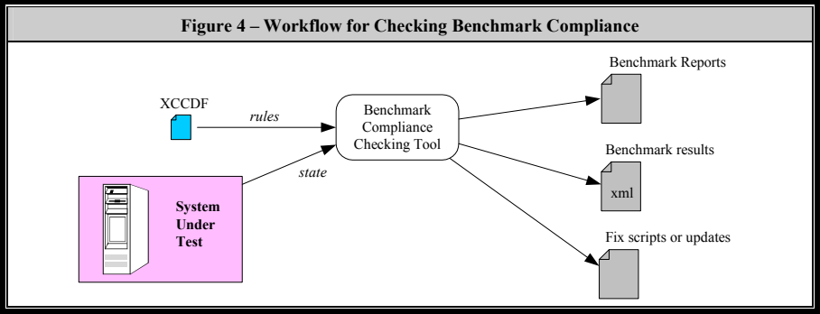

NIST IR 7275 Rev. 3 日本語訳
英語タイトル : Specification for the Extensible Configuration Checklist Description Format (XCCDF) Version 1.1.4日本語タイトル : Extensible Configuration Checklist Description Format（XCCDF）バージョン 1.1.4 の仕様
公開日 : 2008-01-01
原文URL : https://csrc.nist.gov/pubs/ir/7275/r3/final
原本 PDF : https://doi.org/10.6028/NIST.IR.7275r3
訳文 : 有志による非公式の日本語訳（AI による翻訳とレビュー）。全 824 段落のうち 772 段落を翻訳済み（原文取得日 : 2026-10-31）
[要約] NIST IR 7275 Rev. 3 は、Extensible Configuration Checklist Description Format（XCCDF）バージョン 1.1.4 のデータモデルと Extensible Markup Language（XML）表現を規定する報告書です。XCCDF 文書は、あるターゲットシステム群に対するセキュリティ構成ルールを構造化して集めたものであり、この仕様は、情報交換、文書生成、組織や状況に応じたテーラリング、自動化されたコンプライアンステスト、コンプライアンスのスコアリングを支援するよう設計されています。仕様は、セキュリティガイダンスやチェックリストへのコンプライアンステストの結果を格納するためのデータモデルと形式も定義しており、その意図は、セキュリティチェックリストなどの構成ガイダンスを表現する統一的な基盤を提供することです。NIST と国家安全保障局（NSA）が民間企業の代表者と協力して策定した、ベンダー中立で柔軟な仕様であり、主な想定読者は、政府および産業界のセキュリティアナリストと、産業界のセキュリティ管理製品の開発者です。
［NIST のロゴ。公的な標章のため、この非公式サイトには掲載していません。原本 PDF を参照してください。］
NIST Interagency Report 7275 Revision 3
NIST 省庁間報告書 7275 改訂第 3 版
Specification for the Extensible Configuration Checklist Description Format (XCCDF) Version 1.1.4
Extensible Configuration Checklist Description Format（XCCDF）バージョン 1.1.4 の仕様
Neal Ziring Stephen D. Quinn
Neal Ziring Stephen D. Quinn
NIST Interagency Report 7275 Revision 3
NIST 省庁間報告書 7275 改訂第 3 版
Specification for the Extensible Configuration Checklist Description Format (XCCDF) Version 1.1.4
Extensible Configuration Checklist Description Format（XCCDF）バージョン 1.1.4 の仕様
Neal Ziring Stephen D. Quinn
Neal Ziring Stephen D. Quinn
COMPUTER SECURITY
コンピューターセキュリティ
Computer Security Division Information Technology Laboratory National Institute of Standards and Technology Gaithersburg, MD 20899-8930
コンピューターセキュリティ部門 情報技術研究所 米国国立標準技術研究所 Gaithersburg, MD 20899-8930
January 2008
2008 年 1 月
U.S. Department of Commerce
米国商務省
Carlos M. Gutierrez, Secretary
Carlos M. Gutierrez 商務長官
National Institute of Standards and Technology
米国国立標準技術研究所
James M. Turner, Acting Director
James M. Turner、所長代行
Reports on Computer Systems Technology
コンピューターシステム技術に関する報告書
The Information Technology Laboratory (ITL) at the National Institute of Standards and Technology (NIST) promotes the U.S. economy and public welfare by providing technical leadership for the nation’s measurement and standards infrastructure. ITL develops tests, test methods, reference data, proof of concept implementations, and technical analysis to advance the development and productive use of information technology. ITL’s responsibilities include the development of technical, physical, administrative, and management standards and guidelines for the cost-effective security and privacy of sensitive unclassified information in Federal computer systems. This Interagency Report discusses ITL’s research, guidance, and outreach efforts in computer security and its collaborative activities with industry, government, and academic organizations.
米国国立標準技術研究所（NIST）の情報技術研究所（ITL）は、国の計測・標準インフラに技術面で主導的な役割を果たすことにより、米国経済と公共の福祉を促進しています。ITL は、情報技術の発展と生産的な利用を進めるため、テスト、テスト手法、参照データ、概念実証の実装、および技術的な分析を開発しています。ITL の責務には、連邦政府のコンピューターシステムにおける機密扱いでない機微な情報について、費用対効果の高いセキュリティとプライバシーを確保するための、技術面、物理面、行政面、および管理面の標準とガイドラインの策定が含まれます。この省庁間報告書は、コンピューターセキュリティにおける ITL の研究、ガイダンス、アウトリーチの取り組みと、産業界、政府、学術機関との共同活動について論じています。
National Institute of Standards and Technology Interagency Report 7275 Revision 3 132 pages (January 2008)
米国国立標準技術研究所 省庁間報告書 7275 改訂第 3 版 132 ページ（2008 年 1 月）
Certain commercial entities, equipment, or materials may be identified in this document in order to describe an experimental procedure or concept adequately. Such identification is not intended to impl y recommendation or endorsement by the National Institute of Standards and Techn ology, nor is it intended to imply that the entities, materials, or equipment are necessarily the best available for the purpose.
本文書では、実験の手順や概念を適切に説明するために、特定の商業的な組織、機器、または資材を明示している場合があります。こうした明示は、米国国立標準技術研究所による推奨や支持を意味するものではなく、それらの組織、資材、または機器がその目的に利用できる最良のものであることを意味するものでもありません。
Abstract
概要
This report specifies the data model and Extensible Markup Language (XML) representation for the Extensible Configuration Checklist Description Format (XCCDF) Version 1.1.4. An XCCDF document is a structured collection of security configuration rules for some set of target systems. The XCCDF specification is designed to support information interchange, document generation, organizational and situational tailoring, automated compliance testing, and compliance scoring. The specification also defines a data model and format for storing results of security guidance or checklist compliance testing. The intent of XCCDF is to provide a uniform foundation for expression of security checklists and other configuration guidance, and thereby foster more widespread application of good security practices.
本報告書は、Extensible Configuration Checklist Description Format（XCCDF）バージョン 1.1.4 のデータモデルと Extensible Markup Language（XML）表現を規定します。XCCDF 文書は、あるターゲットシステム群に対するセキュリティ構成ルールを構造化して集めたものです。XCCDF 仕様は、情報交換、文書生成、組織や状況に応じたテーラリング、自動化されたコンプライアンステスト、およびコンプライアンスのスコアリングを支援するように設計されています。この仕様は、セキュリティガイダンスやチェックリストへのコンプライアンステストの結果を格納するためのデータモデルと形式も定義します。XCCDF の意図は、セキュリティチェックリストやその他の構成ガイダンスを表現するための統一的な基盤を提供し、それによって優れたセキュリティ実践のより広範な適用を促すことです。
Purpose and Scope
目的と適用範囲
The XCCDF standardized XML format enables an automated provisioning of recommendations for minimum security controls for information systems categorized in accordance with NIST Special Publication (SP) 800-53, Recommended Security Controls for Federal Information Systems, and Federal Information Processing Standards (FIPS) 199, Standards for Security Categorization of Federal Information and Information Systems, to support Federal Information Security Management Act (FISMA) compliance efforts.
XCCDF の標準化された XML 形式により、NIST 特別刊行物（SP）800-53『Recommended Security Controls for Federal Information Systems』および連邦情報処理標準（FIPS）199『Standards for Security Categorization of Federal Information and Information Systems』に従って分類された情報システムについて、最小限のセキュリティ管理策の推奨事項を自動的に提供できるようになり、連邦情報セキュリティマネジメント法（FISMA）への準拠の取り組みを支援します。
To promote the use, standardization, and sharing of effective security checklists, NIST and the National Security Agency (NSA) have collaborated with representatives of private industry to develop the XCCDF specification. The specification is vendor-neutral, flexible, and suited for a wide variety of checklist applications.
効果的なセキュリティチェックリストの利用、標準化、共有を促進するため、NIST と国家安全保障局（NSA）は、民間企業の代表者と協力して XCCDF 仕様を策定しました。この仕様はベンダー中立で柔軟性があり、幅広い種類のチェックリストの用途に適しています。
Audience
想定読者
The primary audience of the XCCDF specification is government and industry security analysts, and industry security management product developers. NIST and NSA welcome feedback from these groups on improving the XCCDF specification.
XCCDF 仕様の主な想定読者は、政府および産業界のセキュリティアナリストと、産業界のセキュリティ管理製品の開発者です。NIST と NSA は、これらの方々から XCCDF 仕様の改善に向けたフィードバックを歓迎します。
Table of Contents
目次
Acknowledgements
謝辞
The authors of this report, Neal Ziring of the National Security Agency (NSA) and Stephen D. Quinn of the National Institute of Standards and Technology (NIST), would like to acknowledge the following individuals who contributed to the initial definition and development of the Extensible Configuration Checklist Description Format (XCCDF): David Proulx, Mike Michnikov, Andrew Buttner, Todd Wittbold, Adam Compton, George Jones, Chris Calabrese, John Banghart, Murugiah Souppaya, John Wack, Trent Pitsenbarger, and Robert Stafford. Peter Mell, Matthew Wojcik, and Karen Scarfone contributed to Revisions 1, 2, and 3 of this report. David Waltermire was instrumental in supporting the development of XCCDF; he contributed many important concepts and constructs, performed a great deal of proofreading on this specification report, and provided critical input based on implementation experience. Ryan Wilson of Georgia Institute of Technology also made substantial contributions. Thanks also go to the Defense Information Systems Agency (DISA) Field Security Office (FSO) Vulnerability Management System (VMS)/Gold Disk team for extensive review and many suggestions.
本報告書の著者である国家安全保障局（NSA）の Neal Ziring と米国国立標準技術研究所（NIST）の Stephen D. Quinn は、Extensible Configuration Checklist Description Format（XCCDF）の最初の定義と開発に貢献した次の方々に謝意を表します。David Proulx、Mike Michnikov、Andrew Buttner、Todd Wittbold、Adam Compton、George Jones、Chris Calabrese、John Banghart、Murugiah Souppaya、John Wack、Trent Pitsenbarger、Robert Stafford の各氏です。Peter Mell、Matthew Wojcik、Karen Scarfone は、本報告書の改訂第 1 版、第 2 版、第 3 版に貢献しました。David Waltermire は XCCDF の開発の支援に尽力し、多くの重要な概念と構成要素を提供し、本仕様書の校正を数多く行い、実装経験に基づく重要な意見を寄せました。Georgia Institute of Technology の Ryan Wilson も大きく貢献しました。また、国防情報システム局（DISA）Field Security Office（FSO）の Vulnerability Management System（VMS）/Gold Disk チームには、広範なレビューと多くの提案をいただき、感謝します。
Trademark Information
商標情報
Cisco and IOS are registered trademarks of Cisco Systems, Inc. in the USA and other countries.
Cisco および IOS は、Cisco Systems, Inc. の米国およびその他の国における登録商標です。
Windows and Windows XP are registered trademarks of Microsoft Corporation in the USA and other countries.
Windows および Windows XP は、Microsoft Corporation の米国およびその他の国における登録商標です。
Solaris is a registered trademark of Sun Microsystems, Inc.
Solaris は、Sun Microsystems, Inc. の登録商標です。
OVAL and CPE are trademarks of The MITRE Corporation.
OVAL および CPE は、The MITRE Corporation の商標です。
All other names are registered trademarks or trademarks of their respective companies.
その他の名称はすべて、それぞれの会社の登録商標または商標です。
Warnings
警告
SOFTWARE IS PROVIDED "AS IS" AND ANY EXPRESS OR IMPLIED WARRANTIES, INCLUDING, BUT NOT LIMITED TO, THE IMPLIED WARRANTIES OF MERCHANTABILITY AND FITNESS FOR A PARTICULAR PURPOSE ARE EXPRESSLY DISCLAIMED. IN NO EVENT SHALL THE CONTRIBUTORS BE LIABLE FOR ANY DIRECT, INDIRECT, INCIDENTAL, SPECIAL, EXEMPLARY, OR CONSEQUENTIAL DAMAGES (INCLUDING, BUT NOT LIMITED TO, PROCUREMENT OF SUBSTITUTE GOODS OR SERVICES; LOSS OF USE, DATA, OR PROFITS; OR BUSINESS INTERRUPTION) HOWEVER CAUSED AND ON ANY THEORY OF LIABILITY, WHETHER IN CONTRACT, STRICT LIABILITY, OR TORT (INCLUDING NEGLIGENCE OR OTHERWISE) ARISING IN ANY WAY OUT OF THE USE OF THIS SOFTWARE, EVEN IF ADVISED OF THE POSSIBILITY OF SUCH DAMAGE.
本ソフトウェアは「現状のまま」で提供され、商品性および特定目的への適合性の黙示の保証を含む一切の明示または黙示の保証（これらに限られません）を明確に否認します。いかなる場合も、契約、厳格責任、不法行為（過失その他を含む）を含むいかなる責任法理に基づくかを問わず、またそのような損害の可能性について知らされていた場合であっても、本ソフトウェアの使用に何らかの形で起因する直接的、間接的、付随的、特別、模範的、または結果的な損害（代替の物品やサービスの調達、使用・データ・利益の損失、事業の中断を含みますが、これらに限られません）について、貢献者は一切責任を負いません。
1. Introduction
1. はじめに
The Extensible Configuration Checklist Description Format (XCCDF) was originally intended to be used for technical security checklists. Although this is still the primary use of XCCDF, XCCDF also has extensions into non-technical applications (e.g., owner’s manuals, user guides, non-technical Federal Information Security Management Act [FISMA] controls, and items considered “manual procedures”).
Extensible Configuration Checklist Description Format（XCCDF）は、当初、技術的なセキュリティチェックリストに使用することを意図していました。現在もこれが XCCDF の主な用途ですが、XCCDF は非技術的な用途（たとえば、所有者向けマニュアル、ユーザーガイド、非技術的な連邦情報セキュリティマネジメント法［FISMA］の管理策、「手動の手順」とみなされる項目）にも拡張されています。
The security of an information technology (IT) system typically can be improved if the identified software flaws and configuration settings that affect security are properly addressed. The security of an IT system may be measured in a variety of ways; one operationally relevant method is determining conformance of the system configuration to a specified security baseline, guidance document, or checklist. These typically include criteria and rules for hardening a system against the most common forms of compromise and exploitation, and for reducing the exposed “attack surface” of a system. Many companies, government agencies, community groups, and product vendors generate and disseminate security guidance documents. While definition of the conditions under which a security setting should be applied can differ among the guidance documents, the underlying specification, test, and report formats used to identify and remediate said settings tend to be specialized and unique.
情報技術（IT）システムのセキュリティは、確認されたソフトウェアの欠陥と、セキュリティに影響する構成設定に適切に対処すれば、通常は向上させることができます。IT システムのセキュリティはさまざまな方法で測定できます。運用上関連性の高い方法の一つは、システム構成が、指定されたセキュリティベースライン、ガイダンス文書、またはチェックリストに適合しているかどうかを判定することです。これらには通常、最も一般的な形態の危殆化や悪用に対してシステムを堅牢化し、システムの露出した「攻撃対象領域」を減らすための基準とルールが含まれます。多くの企業、政府機関、コミュニティグループ、製品ベンダーが、セキュリティガイダンス文書を作成し、配布しています。セキュリティ設定を適用すべき条件の定義はガイダンス文書ごとに異なる場合がありますが、その設定を特定し修復するために使われる基盤となる仕様、テスト、報告の形式は、専用で固有のものになりがちです。
Configuring a system to conform to specified security guidance (e.g., NIST Special Publication [SP] 800-68, Guidance for Securing Microsoft Windows XP Systems for IT Professionals: A NIST Security Configuration Checklist, any of the Defense Information Systems Agency [DISA] Secure Technology Implementation Guides [STIG] and subsequent checklists) or other security specification is a highly technical task. To aid system administrators, commercial and community developers have created automated tools that can both determine a system’s conformance to a specified guideline and provide or implement remediation measures. Many of these tools are data-driven in that they accept a security guidance specification in some program-readable form (e.g., XML, .inf, csv), and use it to perform the checks and tests necessary to measure conformance, generate reports, and perhaps remediate as directed. However, with rare exceptions, none of these tools (commercial or government developed) employ the same data formats. This unfortunate situation perpetuates a massive duplication of effort among security guidance providers and provides a barrier for content and report interoperability.
指定されたセキュリティガイダンス（たとえば、NIST 特別刊行物［SP］800-68『Guidance for Securing Microsoft Windows XP Systems for IT Professionals: A NIST Security Configuration Checklist』、国防情報システム局［DISA］の Secure Technology Implementation Guides［STIG］のいずれか、および後続のチェックリスト）やその他のセキュリティ仕様に適合するようにシステムを構成することは、高度に技術的な作業です。システム管理者を支援するため、商用およびコミュニティの開発者は、システムが指定されたガイドラインに適合しているかどうかを判定し、修復措置を提示または実施できる自動化ツールを作成してきました。これらのツールの多くはデータ駆動型であり、プログラムが読み取れる何らかの形式（たとえば、XML、.inf、csv）でセキュリティガイダンス仕様を受け取り、それを用いて、適合性の測定に必要なチェックとテストを実行し、レポートを生成し、場合によっては指示に従って修復します。しかし、まれな例外を除き、これらのツールは（商用のものも政府が開発したものも）同じデータ形式を採用していません。この残念な状況により、セキュリティガイダンス提供者の間で大規模な作業の重複が続き、コンテンツとレポートの相互運用性の障壁となっています。
This report describes a standard data model and processing discipline for supporting secure configuration and assessment. The requirements and goals are explained in the main content; however, in summary, this report addresses:
本報告書は、セキュアな構成とアセスメントを支援するための標準的なデータモデルと処理規律について説明します。要件と目標は本文で説明しますが、要約すると、本報告書は次の事項を扱います。
•Document generation
•文書の生成
•Expression of policy-aware configuration rules
•ポリシーを意識した構成ルールの表現
•Support for conditionally applicable, complex, and compound rules
•条件付きで適用される複雑なルールや複合ルールのサポート
•Support for compliance report generation and scoring
•コンプライアンスレポートの生成とスコアリングのサポート
•Support for customization and tailoring.
•カスタマイズとテーラリングのサポート。
The model and its XML representation are intended to be platform-independent and portable, to foster broad adoption and sharing of rules. The processing discipline of the format requires, for some uses, a service layer that can collect and store system information and perform simple policy-neutral tests against the system information; this is true for technical and non-technical applications of XCCDF. These conditions are described in detail below. The XML representation is expressed as an XML Schema in Appendix A.
このモデルとその XML 表現は、プラットフォームに依存せず移植可能であることを意図しており、ルールの幅広い採用と共有を促します。この形式の処理規律では、用途によっては、システム情報を収集して保存し、そのシステム情報に対してポリシーに中立な単純なテストを実行できるサービス層が必要です。これは XCCDF の技術的な用途にも非技術的な用途にも当てはまります。これらの条件については、以下で詳しく説明します。XML 表現は、付録 A の XML スキーマで表現されています。
1.1. Background
1.1. 背景
Today, groups promoting good security practices and system owners wishing to adopt them face an increasingly large and complex problem. As the number of IT systems increases, automated tools are necessary for uniform application of security rules and visibility into system status. These conditions have created a need for mechanisms that:
現在、優れたセキュリティ実践を推進するグループと、それを採用したいシステム所有者は、ますます大きく複雑になる問題に直面しています。IT システムの数が増えるにつれ、セキュリティルールを均一に適用し、システムの状況を可視化するために、自動化ツールが必要になります。こうした状況により、次のような仕組みが必要とされています。
•Ensure compliance to multiple policies (e.g., IT Systems subject to FISMA, STIG, and/or Health Insurance Portability and Accountability Act [HIPAA] compliance)
•複数のポリシーへの適合を確保する（たとえば、FISMA、STIG、および／または医療保険の携行性と責任に関する法律［HIPAA］への適合が求められる IT システム）
•Permit faster, more cooperative, and more automated definition of security rules, procedures, guidance documents, alerts, advisories, and remediation measures
•セキュリティルール、手順、ガイダンス文書、アラート、アドバイザリ、修復措置の定義を、より迅速に、より協力的に、より自動化して行えるようにする
•Permit fast, uniform, manageable administration of security checks and audits
•セキュリティチェックと監査の、迅速で均一かつ管理可能な運用を可能にする
•Permit composition of security rules and tests from different community groups and vendors
•さまざまなコミュニティグループやベンダーのセキュリティルールとテストを組み合わせて構成できるようにする
•Permit scoring, reporting, and tracking of security status and checklist conformance, both over distributed systems and over the same systems across their operational lifetimes
•分散したシステム全体についても、同じシステムの運用期間全体にわたっても、セキュリティの状況とチェックリストへの適合性のスコアリング、報告、追跡を可能にする
•Foster development of interoperable community and commercial tools for creating and employing security guidance and checklist data.
•セキュリティガイダンスとチェックリストのデータを作成し利用するための、相互運用可能なコミュニティ製および商用のツールの開発を促します。
Today, such mechanisms exist only in some isolated niche areas (e.g., Microsoft Windows patch validation) and they support only narrow slices of security guidance compliance functionality. For example, patch checking and secure configuration guidance often are not addressed at the same level of detail (or at all) in a single guidance document; however, both are required to secure a system against known attacks. This specification report proposes a data model and format specification for an extensible, interoperable checklist language that is capable of including both technical and non-technical requirements in the same XML document.
現在、このような仕組みは一部の孤立したニッチな分野（たとえば Microsoft Windows のパッチ検証）にしか存在せず、セキュリティガイダンスへのコンプライアンス機能のごく一部しかサポートしていません。たとえば、パッチのチェックとセキュアな構成のガイダンスは、1 つのガイダンス文書の中で同じ詳細度で扱われていない（あるいはまったく扱われていない）ことがよくありますが、既知の攻撃からシステムを守るには両方が必要です。本仕様書は、技術的な要件と非技術的な要件の両方を同じ XML 文書に含めることができる、拡張可能で相互運用可能なチェックリスト言語のデータモデルと形式の仕様を提案します。
1.2. Vision for Use
1.2. 利用の構想
XCCDF is designed to enable easier, more uniform creation of security checklists and procedural documents, and allow them to be used with a variety of commercial, Government off-the-shelf (GOTS), and open source tools. The motivation for this is improvement of security for IT systems, including the Internet, by better application of known security practices and configuration settings.
XCCDF は、セキュリティチェックリストや手順文書をより簡単かつ均一に作成できるようにし、さまざまな商用ツール、政府向け既製品（GOTS）ツール、オープンソースツールで使えるようにすることを目的に設計されています。その動機は、既知のセキュリティ実践と構成設定をよりよく適用することで、インターネットを含む IT システムのセキュリティを向上させることにあります。
One potential use for XCCDF is streamlining compliance to FISMA and Department of Defense (DOD) STIGs. Federal agencies, state and local governments, and the private sector have difficulty measuring the security of their IT systems. They also struggle to both implement technical policy (e.g., DISA STIGs, NIST SPs) and then to demonstrate unambiguously to various audiences (e.g., Inspector General, auditor) that they have complied and ultimately improved the security of their systems. This difficulty arises from various causes, such as different interpretations of policy, system complexity, and human error. XCCDF proposes to automate certain technical aspects of security by converting English text contained in various publications (e.g., configuration guides, checklists, the National Vulnerability Database [NVD]) into a machine-readable XML format such that the various audiences (e.g., scanning vendors, checklist/configuration guide, auditors) will be operating in the same semantic context. The end result will allow organizations to use commercial off-the-shelf (COTS) tools to automatically check their security and map to technical compliance requirements.
XCCDF の潜在的な用途の一つは、FISMA と国防総省（DOD）の STIG へのコンプライアンスの合理化です。連邦機関、州政府と地方政府、民間部門は、自らの IT システムのセキュリティを測定することに苦労しています。また、技術的なポリシー（たとえば DISA の STIG、NIST の SP）を実装し、さらに、さまざまな対象者（たとえば監察官、監査人）に対して、自らが準拠し、最終的にシステムのセキュリティを向上させたことを明確に示すことにも苦労しています。この困難は、ポリシーの解釈の違い、システムの複雑さ、ヒューマンエラーなど、さまざまな原因から生じます。XCCDF は、さまざまな刊行物（たとえば構成ガイド、チェックリスト、国家脆弱性データベース［NVD］）に含まれる英語の文章を機械可読な XML 形式に変換することで、セキュリティの技術的な側面の一部を自動化することを提案します。これにより、さまざまな対象者（たとえばスキャンベンダー、チェックリスト／構成ガイド、監査人）が同じ意味的な文脈で作業できるようになります。最終的には、組織が商用既製品（COTS）ツールを使って、自らのセキュリティを自動的にチェックし、技術的なコンプライアンス要件に対応付けられるようになります。
The scenarios below illustrate some uses of security checklists and tools that XCCDF will foster.
以下のシナリオは、XCCDF が促進するセキュリティチェックリストとツールの利用例を示しています。
Scenario 1 – An academic group produces a checklist for secure configuration of a particular server operating system version. A government organization issues a set of rules extending the academic checklist to meet more stringent user authorization criteria imposed by statute. A medical enterprise downloads both the academic checklist and the government extension, tailors the combination to fit their internal security policy, and applies an enterprise-wide audit using a commercial security audit tool. Reports output by the tool include remediation measures which the medical enterprise IT staff can use to bring their systems into full internal policy compliance.
シナリオ 1 – 学術グループが、特定のバージョンのサーバー OS をセキュアに構成するためのチェックリストを作成します。政府機関が、法令で課されたより厳格なユーザー認可基準を満たすために、その学術チェックリストを拡張するルール群を発行します。ある医療企業が、学術チェックリストと政府の拡張の両方をダウンロードし、その組み合わせを自社の内部セキュリティポリシーに合うようにテーラリングし、商用のセキュリティ監査ツールを使って全社的な監査を実施します。ツールが出力するレポートには修復措置が含まれており、医療企業の IT 担当者はそれを使って、システムを内部ポリシーに完全に準拠させることができます。
Scenario 2 – A federally-funded lab issues a security advisory about a new Internet worm. In addition to a prose description of the worm’s attack vector, the advisory includes a set of short checklists in a standard format that assess vulnerability to the worm for various operating system platforms. Organizations all over the world pick up the advisory, and use installed tools that support the standard format to check their status and fix vulnerable systems.
シナリオ 2 – 連邦政府の資金を受けた研究所が、新しいインターネットワームに関するセキュリティアドバイザリを発行します。このアドバイザリには、ワームの攻撃ベクトルの文章による説明に加えて、さまざまな OS プラットフォームがそのワームに対して脆弱かどうかを評価する、標準形式の短いチェックリスト群が含まれています。世界中の組織がこのアドバイザリを入手し、その標準形式に対応したインストール済みのツールを使って、自らの状況を確認し、脆弱なシステムを修正します。
Scenario 3 – An industry consortium, in conjunction with a product vendor, wants to produce a security checklist for a popular commercial server. The core security settings are the same for all OS platforms on which the server runs, but a few settings are OS-specific. The consortium crafts one checklist in a standard format for the core settings, and then writes several OS-specific ones that incorporate the core settings by reference. Users download the core checklist and the OS-specific extensions that apply to their installations, and then run a checking tool to score their compliance with the checklist.
シナリオ 3 – 業界コンソーシアムが、製品ベンダーと協力して、広く使われている商用サーバーのセキュリティチェックリストを作成しようとしています。中核となるセキュリティ設定は、そのサーバーが動作するすべての OS プラットフォームで同じですが、いくつかの設定は OS 固有です。コンソーシアムは、中核となる設定のための標準形式のチェックリストを 1 つ作成し、続いて、中核の設定を参照によって取り込む OS 固有のチェックリストを複数作成します。ユーザーは、中核のチェックリストと、自分の環境に該当する OS 固有の拡張をダウンロードし、チェックツールを実行して、チェックリストへのコンプライアンスをスコア化します。
1.3. Summary of Changes since Version 1.0
1.3. バージョン 1.0 以降の変更点の概要
XCCDF 1.0 received some review and critique after its release in January 2005. Most of the additions and changes in 1.1 come directly from suggestions by users and potential users. Other changes have been driven by the evolution of the NIST Security Content Automation Protocol (SCAP) initiatives. The list below describes the major changes; other differences are noted in the text.
XCCDF 1.0 は、2005 年 1 月のリリース後に、いくつかのレビューと批評を受けました。1.1 での追加と変更の大部分は、ユーザーおよび潜在的なユーザーの提案に直接由来します。そのほかの変更は、NIST のセキュリティコンテンツ自動化プロトコル（SCAP）の取り組みの進展によるものです。以下の一覧は主な変更点を説明しており、その他の相違点は本文中に記載しています。
•Persistent/standard identifiers - To foster standardization and re-use of XCCDF rules, community members suggested that Rule objects bear long-term, globally unique identifiers. Support for identifiers, along with the scheme or organization that assigns them, is now part of the Rule object.
•永続的／標準的な識別子 - XCCDF のルールの標準化と再利用を促すため、コミュニティのメンバーから、Rule オブジェクトに長期的でグローバルに一意な識別子を持たせるよう提案がありました。識別子と、それを割り当てるスキームまたは組織のサポートは、現在 Rule オブジェクトの一部になっています。
•Versioning - To foster re-use of XCCDF rules, and to allow more precise tracking of Benchmark results over time, Benchmarks, Rules, and Profiles all support a version number. The version number also now supports a timestamp.
•バージョン管理 - XCCDF のルールの再利用を促し、Benchmark の結果を時間の経過とともにより正確に追跡できるようにするため、Benchmark、Rule、Profile はいずれもバージョン番号をサポートします。バージョン番号は、タイムスタンプもサポートするようになりました。
•Severity - Rules can now support a severity level: info, low, medium, and high. Severity levels can be adjusted via Profiles.
•重大度 - Rule は、info、low、medium、high の重大度レベルをサポートできるようになりました。重大度レベルは、Profile によって調整できます。
•Signatures – To foster sharing of XCCDF rules and groups of rules, each object that can be a standalone XCCDF document can have an XML digital signature: Benchmark, Group, Rule, Value, Profile, and TestResult. This allows any shared XCCDF object to have integrity and authenticity assurance.
•署名 – XCCDF のルールとルール群の共有を促すため、単独の XCCDF 文書になりうる各オブジェクト（Benchmark、Group、Rule、Value、Profile、TestResult）には、XML デジタル署名を付与できます。これにより、共有されるあらゆる XCCDF オブジェクトについて、完全性と真正性を保証できます。
•Rule result enhancements – Recording Benchmark results has been improved in version 1.1: the ‘override’ property was added for rule-results in a TestResult object, several new Rule result status values have been added, and better instance detail support was added to rule-results for multiply-instantiated Rules. Also, the descriptions of the different Rule result status values and their role in scores have been clarified.
•ルール結果の強化 – Benchmark の結果の記録がバージョン 1.1 で改善されました。TestResult オブジェクトの rule-result に 'override' プロパティが追加され、Rule の結果ステータス値がいくつか新たに追加され、複数回インスタンス化された Rule 向けに、rule-result のインスタンス詳細のサポートが改善されました。また、Rule の結果ステータス値の種類ごとの説明と、スコアにおけるその役割が明確化されました。
•Enhancements for remediation - Several minor enhancements were made to the Rule’s properties for automated and interactive remediation (the Rule object's ‘fix’ and ‘fixtext’ elements).
•修復のための強化 - 自動および対話型の修復のための Rule のプロパティ（Rule オブジェクトの 'fix' 要素と 'fixtext' 要素）に、いくつかの小さな強化が加えられました。
•Interactive Value tailoring – To foster interactive tailoring by tools that can support it, the ‘interactive’ property was added to Value objects. It gives a Benchmark checking tool a hint that it should solicit a new value prior to each application of the Benchmark. Also, the ‘interfaceHint’ property was added, to allow a Benchmark author to suggest a UI model to the tool.
•対話型の Value テーラリング – 対話型のテーラリングに対応できるツールでそれを促すため、Value オブジェクトに 'interactive' プロパティが追加されました。これは、Benchmark をチェックするツールに対して、Benchmark を適用するたびに事前に新しい値を求めるべきであるというヒントを与えます。また、Benchmark の作成者がツールに UI モデルを提案できるように、'interfaceHint' プロパティが追加されました。
•Scoring models – XCCDF 1.0 had only a single scoring model. 1.1 supports the notion of multiple scoring models, and two new models have been added to the specification. To support custom scoring models, the model and param properties have been added to the TestResult’s score element.
•スコアリングモデル – XCCDF 1.0 にはスコアリングモデルが 1 つしかありませんでした。1.1 は複数のスコアリングモデルという考え方をサポートし、仕様に 2 つの新しいモデルが追加されました。カスタムのスコアリングモデルをサポートするため、TestResult の score 要素に model プロパティと param プロパティが追加されました。
•Re-usable plain text blocks – To foster re-use of common text with a Benchmark document, version 1.1 now supports definition of named, re-usable text blocks.
•再利用可能なプレーンテキストブロック – Benchmark 文書内で共通のテキストの再利用を促すため、バージョン 1.1 は、名前付きで再利用可能なテキストブロックの定義をサポートします。
•Richer XHTML references – Formatted text within XCCDF Benchmarks can now use XHTML object and anchor tags to reference other XCCDF objects within a generated document.
•より豊富な XHTML 参照 – XCCDF Benchmark 内の書式付きテキストは、XHTML の object タグと anchor タグを使って、生成された文書内の他の XCCDF オブジェクトを参照できるようになりました。
•Target facts – It is important for a Benchmark test result to include extensive information from the system that was tested. To support this, the TestResult object now supports a list of target facts. Tools can use this list to store any relevant information they collect about the target platform or system.
•ターゲットファクト – Benchmark のテスト結果には、テスト対象のシステムの広範な情報を含めることが重要です。これをサポートするため、TestResult オブジェクトはターゲットファクトのリストをサポートするようになりました。ツールは、このリストを使って、ターゲットのプラットフォームやシステムについて収集した関連情報を格納できます。
•Complex checks – The Rule object now supports a mechanism for using Boolean operators to compose complex checks from multiple individual checks.
•複雑なチェック – Rule オブジェクトは、ブール演算子を使って複数の個別のチェックから複雑なチェックを構成する仕組みをサポートするようになりました。
•Extension control – To give Benchmark authors more control over XCCDF inheritance, 1.1 supports the ‘override’ attribute on most property element children that can appear more than once in a Rule, Group, Value, or Profile.
•拡張の制御 – Benchmark の作成者が XCCDF の継承をより細かく制御できるように、1.1 は、Rule、Group、Value、Profile の中に複数回現れうるほとんどのプロパティ要素の子に対して、'override' 属性をサポートします。
•Value acquisition support – The new ‘source’ property on the Value object allows a Benchmark author to suggest one or more possible ways to obtain correct or candidate values. The suggestions must be given as URIs.
•Value の取得のサポート – Value オブジェクトに新しく追加された 'source' プロパティにより、Benchmark の作成者は、正しい値または候補となる値を取得するための方法を 1 つ以上提案できます。提案は URI で示さなければなりません。
•Profile notes – To support better descriptions for Profiles, 1.1 supports a descriptive note facility for relating Rules and Profiles.
•Profile の注記 – Profile のより優れた説明をサポートするため、1.1 は、Rule と Profile を関連付ける説明用の注記機能をサポートします。
•Alternate check content – In 1.1.3, the semantics of checks permit multiple (alternative) references to checking engine content.
•代替のチェックコンテンツ – 1.1.3 では、チェックのセマンティクスにより、チェックエンジンのコンテンツへの複数の（代替の）参照が認められます。
•Multiple alternative requirements – In 1.1.3, the requires property of Items has been extended to allow specification of several alternative Items, any one of which satisfies the requirement.
•複数の代替要件 – 1.1.3 では、Item の requires プロパティが拡張され、複数の代替の Item を指定できるようになりました。そのうちのいずれか 1 つで要件が満たされます。
•Import from checking system – In 1.1.4, the check element has been extended to allow a benchmark author to specify values to retrieve from the checking system.
•チェックシステムからのインポート – 1.1.4 では、check 要素が拡張され、Benchmark の作成者が、チェックシステムから取得する値を指定できるようになりました。
•Profile enhancements – In 1.1.4, selectors in Profiles may contain remarks. Also, the semantics of Profile operation have been clarified.
•Profile の強化 – 1.1.4 では、Profile のセレクターに備考を含めることができます。また、Profile の動作のセマンティクスが明確化されました。
•Weight reporting – For 1.1.4, the weight attribute was added to Rule result elements, to allow the weight used for scoring to recorded as part of the test result object.
•重みの報告 – 1.1.4 では、スコアリングに使われた重みをテスト結果オブジェクトの一部として記録できるように、Rule の結果要素に weight 属性が追加されました。
•CPE compatibility – Applicability of XCCDF Rules and other objects to specific IT platforms may be specified using Common Platform Enumeration (CPE) identifiers. XCCDF 1.1.4 mandates use of CPE version 2.0. All prior platform identifier support is deprecated.
•CPE との互換性 – XCCDF の Rule やその他のオブジェクトが特定の IT プラットフォームに適用できるかどうかは、Common Platform Enumeration（CPE）の識別子を使って指定してもよいです。XCCDF 1.1.4 は、CPE バージョン 2.0 の使用を義務付けています。それ以前のプラットフォーム識別子のサポートはすべて非推奨です。
•Benchmark styles – Two attributes were added to the Benchmark object in 1.1.4, to allow optional specification of a Benchmark style.
•Benchmark のスタイル – 1.1.4 では、Benchmark のスタイルを任意で指定できるように、Benchmark オブジェクトに 2 つの属性が追加されました。
•TestResult enhancement – Two properties were added to the TestResult object to allow recording the responsible organization and the system identity under which the results were obtained.
•TestResult の強化 – 結果を得た責任組織と、結果を得た際のシステム ID を記録できるように、TestResult オブジェクトに 2 つのプロパティが追加されました。
•Absolute scoring model – This new model gives a score of 1 when the target passes all applicable rules, and 0 otherwise.
•絶対スコアリングモデル – この新しいモデルは、ターゲットが適用可能なすべてのルールに合格した場合に 1 のスコアを与え、それ以外の場合は 0 とします。
•Impact metric – For 1.1.4, the impact-metric element was added to associate an impact statement with a Rule.
•影響メトリクス – 1.1.4 では、Rule に影響の記述を関連付けるために、impact-metric 要素が追加されました。
2. Requirements
2. 要件
The general objective for XCCDF is to allow security analysts and IT experts to create effective and interoperable automated checklists, and to support the use of automated checklists with a wide variety of tools. Figure 1 shows some potential utilization scenarios.
XCCDF の全般的な目的は、セキュリティアナリストと IT の専門家が、効果的で相互運用可能な自動化チェックリストを作成できるようにし、幅広いツールでの自動化チェックリストの利用を支援することです。図 1 に、想定される利用シナリオをいくつか示します。
![Diagram titled "Figure 1 – Use Cases for XCCDF Documents". "Security Experts and Domain Experts" (1) create an "XCCDF benchmark format" XML document, which a "System Administrator or Auditor" adjusts with "Tailoring Tools" (2). The XCCDF document feeds: a "Document Generator" (3) that uses "Formatting information" to produce pdf "Publication Documents"; a "Transform Engine" that uses xsl "Stylesheets" to produce html "Web pages" (4) and xml for "Other Tools" (5); a "Compliance Benchmarking Tool" (6) that uses "System tests" against the "System Under Test" and produces "Benchmark Reports", xccdf "Benchmark results" for "Other Reporting Tools" (7) and "Fix scripts or updates"; and a "Security Status Monitor or Vulnerability Tester" (8) that produces "Non-compliance or vulnerability alerts".](assets/ir-7275r3/p0012-table-01.png)
The following list describes some requirements for several of the use cases depicted in Figure 1:
次の一覧は、図 1 に示す複数のユースケースの要件のいくつかを説明しています。
1.Security and domain experts create a security guidance document or checklist, which is an organized collection of rules about a particular kind of system or platform. To support this use, XCCDF must be an open, standardized format, amenable to generation by and editing with a variety of tools. It must be expressive enough to represent complex conditions and relationships about the systems to be assessed, and it must also incorporate descriptive material and remediative measures. (XCCDF Benchmarks may include specification of the hardware and/or software platforms to which they apply; however, it is recommended that programmatically ascertainable information should be relegated to the lower-level identification and remediation languages. For specifying programmatically ascertainable information in the XCCDF file, the specification should be concrete and granular so that compliance checking tools can detect if a Rule is suited for a target platform.)
1.セキュリティとドメインの専門家は、特定の種類のシステムやプラットフォームに関するルールを整理して集めた、セキュリティガイダンス文書またはチェックリストを作成します。この用途を支援するため、XCCDF は、オープンで標準化された形式でなければならず、さまざまなツールによる生成と編集に適している必要があります。評価対象のシステムに関する複雑な条件や関係を表現できるだけの表現力を持たなければならず、記述的な資料と修復措置も組み込めなければなりません。（XCCDF の Benchmark には、適用対象となるハードウェアまたはソフトウェアのプラットフォームの指定を含めてもよいですが、プログラムで確認できる情報は、より低レベルの識別言語と修復言語に委ねることが推奨されます。XCCDF ファイルでプログラムによって確認できる情報を指定する場合、コンプライアンスチェックツールが Rule をターゲットプラットフォームに適用できるかどうかを検出できるように、仕様は具体的かつ粒度の細かいものにすべきです。）
2.Auditors and system administrators may employ tailoring tools to customize a security guidance document or checklist for their local environment or policies. For example, although NIST produces the technical security guidance for Windows XP Professional in the form of Special Publication 800-68, certain Federal agencies may have trouble applying all settings without exception. For those settings which hinder functionality (perhaps with Legacy systems, or in a hybrid Windows 2000/2003 domain), the agency may wish to tailor the XML received from the NIST Web site. For this reason, an XCCDF document must include the structure and interrogative text required to direct the user through the tailoring of a Benchmark, and it must be able to hold or incorporate the user’s tailoring responses. For example, a checklist user might want to set the password policy requirement to be more or less stringent than the provided security recommendations. XCCDF should be extensible to allow for the custom tailoring and inclusion of the explanatory text for deviation from recommended policy.
2.監査人とシステム管理者は、テーラリングツールを使って、セキュリティガイダンス文書やチェックリストを自らのローカル環境やポリシーに合わせてカスタマイズしてもよいです。たとえば、NIST は Windows XP Professional の技術的なセキュリティガイダンスを特別刊行物 800-68 の形で作成していますが、連邦機関によっては、すべての設定を例外なく適用することが難しい場合があります。（レガシーシステムや、Windows 2000/2003 混在のドメインなどで）機能を妨げる設定については、機関が NIST の Web サイトから入手した XML をテーラリングしたいと考えることがあります。このため、XCCDF 文書には、ユーザーが Benchmark のテーラリングを進めるのに必要な構造と質問テキストを含めなければならず、ユーザーのテーラリングの回答を保持または取り込めなければなりません。たとえば、チェックリストの利用者は、パスワードポリシーの要件を、提示されたセキュリティ推奨事項よりも厳しく、または緩く設定したい場合があります。XCCDF は、推奨されるポリシーから逸脱する場合のカスタムのテーラリングと説明テキストの組み込みができるように、拡張可能であるべきです。
3.Although the goal of XCCDF is to distill English (or other language) prose checklists into machine-readable XML, XCCDF should be structured to foster the generation of readable prose documents from XCCDF-format documents.
3.XCCDF の目標は、英語（またはその他の言語）の文章によるチェックリストを機械可読な XML に凝縮することですが、XCCDF 形式の文書から読みやすい文章の文書を生成しやすくなるように、XCCDF は構造化されるべきです。
4.The structure of an XCCDF document should support transformation into HTML, for posting the security guidance as a Web page.
4.XCCDF 文書の構造は、セキュリティガイダンスを Web ページとして掲載するために、HTML への変換をサポートすべきです。
5.An XCCDF document should be transformable into other XML formats, to promote portability and interoperability.
5.XCCDF 文書は、移植性と相互運用性を促進するために、他の XML 形式に変換できるべきです。
6.The primary use case for an XCCDF-formatted security guidance document is to facilitate the normalization of configuration content through automated security tools. Such tools should accept one or more XCCDF documents along with supporting system test definitions, and determine whether or not the specified rules are satisfied by a target system. The XCCDF document should support generation of a compliance report, including a weighted compliance score.
6.XCCDF 形式のセキュリティガイダンス文書の主なユースケースは、自動化されたセキュリティツールによる構成コンテンツの正規化を容易にすることです。そのようなツールは、1 つ以上の XCCDF 文書を、それを補うシステムテスト定義とともに受け取り、指定されたルールをターゲットシステムが満たしているかどうかを判定すべきです。XCCDF 文書は、重み付きのコンプライアンススコアを含むコンプライアンスレポートの生成をサポートすべきです。
7.In addition to a report, some tools may utilize XCCDF-formatted content (and associated content from other tools) to bring a system into compliance through the remediation of identified vulnerabilities or misconfigurations. XCCDF must be able to encapsulate the remediation scripts or texts, including several alternatives.
7.レポートに加えて、ツールによっては、XCCDF 形式のコンテンツ（および他のツールの関連コンテンツ）を利用して、特定された脆弱性や構成の不備を修復することで、システムをコンプライアンスに適合させるものがあります。XCCDF は、複数の代替案を含め、修復のスクリプトやテキストを内包できなければなりません。
8.XCCDF documents might also be used in vulnerability scanners, to test whether or not a target system is vulnerable to a particular kind of attack. For this purpose, the XCCDF document would play the role of a vulnerability alert, but with the ability to both describe the problem and drive the automated verification of its presence.
8.XCCDF 文書は、ターゲットシステムが特定の種類の攻撃に対して脆弱かどうかをテストするために、脆弱性スキャナーでも使われる場合があります。この目的では、XCCDF 文書は脆弱性アラートの役割を果たしますが、問題を記述するとともに、その問題が存在するかどうかの自動検証を実行させることができます。
In addition to these use cases, an XCCDF document should be amenable to embedding inside other documents. Likewise, XCCDF’s extensibility should include provisions for incorporating other data formats. And finally, XCCDF must be extensible to include new functionality, features, and data stores without hindering the functionality of existing XCCDF-capable tools.
これらのユースケースに加えて、XCCDF 文書は、他の文書への埋め込みに適しているべきです。同様に、XCCDF の拡張性には、他のデータ形式を取り込むための規定が含まれるべきです。そして最後に、XCCDF は、既存の XCCDF 対応ツールの機能を妨げることなく、新しい機能、特徴、データストアを含められるよう拡張可能でなければなりません。
2.1. Structure and Tailoring Requirements
2.1. 構造とテーラリングの要件
The basic unit of structure for a security guidance document or checklist is a rule. A rule simply describes a state or condition which the target of the document should exhibit. A simple document might consist of a simple list of rules, but richer ones require additional structure.
セキュリティガイダンス文書やチェックリストの構造の基本単位は、ルールです。ルールは、その文書のターゲットが示すべき状態や条件を単に記述するものです。単純な文書はルールの単純なリストで構成される場合がありますが、より豊富な文書には追加の構造が必要です。
To support customization of the standardized XML format and subsequent generation of documents by and for consumers, XCCDF must allow authors to impose organization within the document. One such basic requirement is that authors will need to put related rules into named groups.
標準化された XML 形式のカスタマイズと、それに続く利用者による、また利用者向けの文書の生成を支援するため、XCCDF は、作成者が文書内に構成を設けられるようにしなければなりません。そのような基本的な要件の一つは、作成者が関連するルールを名前付きのグループにまとめる必要があることです。
An author must be able to designate the order in which rules or groups are processed. In the simplest case, rules and groups are processed in sequence according to their location in the XCCDF document.
作成者は、ルールやグループを処理する順序を指定できなければなりません。最も単純な場合、ルールとグループは、XCCDF 文書内での位置に従って順番に処理されます。
To facilitate customization, the author should include descriptive and interrogative text to help a user make tailoring decisions. The following two customization options are available:
カスタマイズを容易にするため、作成者は、ユーザーがテーラリングを判断する助けとなる、説明用および質問用のテキストを含めるべきです。次の 2 つのカスタマイズのオプションを利用できます。
Selectability – A tailoring action might select or deselect a rule or group of rules for inclusion or exclusion from the security guidance document. For example, an entire group of rules that relate to physical security might not apply if one were conducting a network scan. In this case, the group of rules delineated under the physical security group could be deselected. In the case of NIST SP 800-53, certain rules apply according to the Impact Rating of the system. For this purpose, systems that have an Impact Rating of Low might not have all of the same access control requirements as a system with a High Impact Rating, and therefore the those rules that are not applicable for the Low system can be deselected.
選択可能性 – テーラリングの操作により、セキュリティガイダンス文書に含める、または除外するために、ルールまたはルール群を選択または選択解除する場合があります。たとえば、ネットワークスキャンを行う場合、物理セキュリティに関するルールのグループ全体は当てはまらない場合があります。この場合、物理セキュリティのグループの下に記述されたルール群を選択解除できます。NIST SP 800-53 の場合、システムの影響度の格付けに応じて、特定のルールが適用されます。このため、影響度の格付けが低いシステムは、影響度の格付けが高いシステムと同じアクセス制御要件をすべて備えているとは限らないため、低影響のシステムには適用されないルールは選択解除できます。
Substitution – A tailoring action might substitute a locally-significant value for a general value in a rule. For example, at a site where all logs are sent to a designated logging host, the address of that log server might be substituted into a rule about audit configuration. Using the NIST SP 800-53 example, a system with an Impact Rating of High might require a 12-character password, whereas a system with an Impact Rating of Moderate might only require an 8-character password. Depending on the Impact Rating of the target system, the user can customize or tailor the value through substitution.
置換 – テーラリングの操作により、ルール中の一般的な値を、その場所に固有の値に置き換える場合があります。たとえば、すべてのログを指定されたログ記録ホストに送るサイトでは、そのログサーバーのアドレスを、監査構成に関するルールに置換する場合があります。NIST SP 800-53 の例では、影響度の格付けが高いシステムは 12 文字のパスワードを要求し、影響度の格付けが中程度のシステムは 8 文字のパスワードだけを要求する場合があります。ターゲットシステムの影響度の格付けに応じて、ユーザーは置換によって値をカスタマイズまたはテーラリングできます。
When customizing security guidance documents, the possibility arises that some rules within the same document might conflict or be mutually exclusive. To avert potential problems, the author of a security guidance document must be able to identify particular tailoring choices as incompatible, so that tailoring tools can take appropriate actions.
セキュリティガイダンス文書をカスタマイズする際、同じ文書内の一部のルールが矛盾したり、相互に排他的になったりする可能性があります。起こりうる問題を避けるため、セキュリティガイダンス文書の作成者は、特定のテーラリングの選択肢を互換性がないものとして指定できなければならず、それによってテーラリングツールが適切な措置を取れるようにします。
In addition to specifying rules, XCCDF must support structures that foster use and re-use of rules. To this end, XCCDF must provide a means for related rules to be grouped and for sets of rules and groups to be designated, named, and easily applied. Examples of this requirement are demonstrated by DISA’s Gold and Platinum distinction with respect to STIG compliance (Gold being the less stringent of the two levels). NIST also provides distinctions according to environment and Impact Rating (High, Moderate, or Low) [12]. Likewise, the Center for Internet Security (CIS) designates multiple numeric levels for their checklists (e.g., Level 1, Level 2).
ルールの指定に加えて、XCCDF は、ルールの利用と再利用を促す構造をサポートしなければなりません。このため、XCCDF は、関連するルールをグループ化する手段と、ルールやグループの集合を指定し、名前を付け、容易に適用できる手段を提供しなければなりません。この要件の例として、STIG のコンプライアンスに関する DISA の Gold と Platinum の区別があります（Gold は 2 つのレベルのうち厳しさが緩い方です）。NIST も、環境と影響度の格付け（高、中、低）による区別を設けています [12]。同様に、Center for Internet Security（CIS）は、チェックリストに複数の数値レベル（たとえば、レベル 1、レベル 2）を指定しています。
To facilitate XCCDF adoption for the aforementioned requirements, XCCDF provides two basic processing modes: rule checking and document generation. It must be possible for a security guidance or checklist author to designate the modes (e.g., Gold, Platinum, High Impact Rating, Level 1) under which a rule should be processed.
前述の要件に対して XCCDF の採用を促すため、XCCDF は 2 つの基本的な処理モードを提供します。ルールチェックと文書生成です。セキュリティガイダンスやチェックリストの作成者は、ルールを処理すべきモード（たとえば、Gold、Platinum、高の影響度の格付け、レベル 1）を指定できなければなりません。
2.2. Inheritance and Inclusion Requirements
2.2. 継承と包含の要件
Some use cases require XCCDF to support mechanisms for authors to extend (inherit from) existing rules and rule groups, in addition to expressing rules and groups in their entirety. For example, it must be possible for one XCCDF document to include all or part of another as demonstrated in the following scenarios:
ユースケースによっては、XCCDF は、ルールやルールグループを丸ごと表現することに加えて、作成者が既存のルールやルールグループを拡張する（それらから継承する）仕組みをサポートしなければなりません。たとえば、次のシナリオに示すように、ある XCCDF 文書が別の XCCDF 文書の全体または一部を含められなければなりません。
•An organization might choose to define a foundational XCCDF document for a family of platforms (e.g., Unix-like operating systems) and then extend it for specific members of the family (e.g., Solaris) or for specific roles (e.g., mail server).
•組織は、プラットフォームのファミリー（たとえば Unix 系 OS）の基盤となる XCCDF 文書を定義し、それをファミリーの特定のメンバー（たとえば Solaris）や特定の役割（たとえばメールサーバー）向けに拡張することを選ぶ場合があります。
•An analyst might choose to make an extended version of an XCCDF document by adding new rules and adjusting others.
•アナリストは、新しいルールを追加し、他のルールを調整することで、XCCDF 文書の拡張版を作成することを選ぶ場合があります。
•If the sets of rules that constitute an XCCDF document come from several sources, it is useful to aggregate them using an inclusion mechanism. (Note: The XCCDF specification does not define its own mechanisms for inclusion; instead, implementations of XCCDF tools should support the XML Inclusion (XInclude) facility standardized by the World Wide Web Consortium [W3C] [10].)
•XCCDF 文書を構成するルール群が複数の出所に由来する場合は、包含の仕組みを使ってそれらを集約すると便利です。（注: XCCDF 仕様は包含のための独自の仕組みを定義していません。その代わり、XCCDF ツールの実装は、World Wide Web Consortium［W3C］が標準化した XML Inclusion（XInclude）機能をサポートすべきです [10]。）
•Within an XCCDF document, it is desirable to share descriptive material among several rules, and to allow a specialized rule to be created by extending a base rule.
•XCCDF 文書の中では、説明資料を複数のルールで共有し、基底のルールを拡張することで特化したルールを作成できるようにすることが望まれます。
•For updating an XCCDF document, it is convenient to incorporate changes or additions using extensions.
•XCCDF 文書を更新する際には、拡張を使って変更や追加を取り込めると便利です。
•To allow broader site-specific or enterprise-specific customization, a user might wish to override or amend any portion of an XCCDF rule.
•サイト固有やエンタープライズ固有の、より広範なカスタマイズを可能にするため、ユーザーは XCCDF のルールのどの部分でも上書きまたは修正したい場合があります。
2.3. Document and Report Formatting Requirements
2.3. 文書とレポートの書式の要件
Generating English (or other language) prose documents from the underlying XCCDF constitutes a primary use case. Authors require mechanisms for formatting text, including images, and referencing other information resources. These mechanisms must be separable from the text itself, so each can be filtered out by applications that do not support or require them. (XCCDF 1.1.4 currently satisfies these formatting requirements mainly by allowing inclusion of Extensible Hypertext Markup Language [XHTML] markup tags [4].)
基盤となる XCCDF から英語（またはその他の言語）の文章による文書を生成することは、主要なユースケースです。作成者には、画像を含むテキストの書式を設定し、他の情報資源を参照するための仕組みが必要です。これらの仕組みは、それを必要としない、またはサポートしないアプリケーションがそれぞれを除外できるように、テキスト自体から分離できなければなりません。（XCCDF 1.1.4 は現在、これらの書式の要件を主に、Extensible Hypertext Markup Language［XHTML］のマークアップタグの組み込みを認めることで満たしています [4]。）
The XCCDF language must also allow for the inclusion of content that does not contribute directly to the technical content. For example, authors tend to include ‘front matter’ such as an introduction, a rationale, warnings, and references. XCCDF allows for the inclusion of intra-document and external references and links.
XCCDF 言語は、技術的な内容に直接寄与しないコンテンツを含めることも認めなければなりません。たとえば、作成者は、序文、根拠、警告、参考文献などの「前付け」を含める傾向があります。XCCDF は、文書内の参照およびリンクと、外部の参照およびリンクを含めることを認めています。
2.4. Rule Checking Requirements
2.4. ルールチェックの要件
One of XCCDF’s main features is the organization and selection of target-applicable groups and rules for performing security and operational checks on systems. Therefore, XCCDF must have access to granular and expressive mechanisms for checking the state of a system according to the rule criteria. The model for this requirement includes the notion of collecting or acquiring the state of a target system, and then checking the state for conformance to conditions and criteria expressed as rules. The operations used have varied with different existing applications; some rule checking systems use a database query operation model, others use a pattern-matching model, and still others load and store state in memory during execution. Rule checking mechanisms used for XCCDF must satisfy the following criteria:
XCCDF の主な特徴の一つは、システムに対するセキュリティ上および運用上のチェックを実行するために、ターゲットに適用できるグループとルールを整理し、選択することです。したがって、XCCDF は、ルールの基準に従ってシステムの状態をチェックするための、粒度が細かく表現力のある仕組みを利用できなければなりません。この要件のモデルには、ターゲットシステムの状態を収集または取得し、その状態がルールとして表現された条件や基準に適合しているかをチェックするという考え方が含まれます。使用される操作は既存のアプリケーションごとに異なり、データベースへの問い合わせの操作モデルを使うルールチェックシステムもあれば、パターンマッチングのモデルを使うものもあり、さらに実行中に状態をメモリに読み込み、保存するものもあります。XCCDF に使用されるルールチェックの仕組みは、次の基準を満たさなければなりません。
•The mechanism must be able to express both positive and negative criteria. A positive criterion means that if certain conditions are met, then the system satisfies the check, while a negative criterion means that if the conditions are met, the system fails the check. Experience has shown that both kinds are necessary when crafting criteria for checks.
•その仕組みが、肯定的な基準と否定的な基準の両方を表現できること。肯定的な基準とは、特定の条件を満たしていればシステムがチェックを満たすという意味であり、否定的な基準とは、条件を満たしていればシステムがチェックに失敗するという意味です。経験上、チェックの基準を作成する際にはどちらの種類も必要です。
•The mechanism must be able to express Boolean combinations of criteria. It is often impossible to express a high-level security property as a single quantitative or qualitative statement about a system’s state. Therefore, the ability to combine statements with ‘and’ and ‘or’ is critical.
•その仕組みが、基準のブール式による組み合わせを表現できること。上位レベルのセキュリティ特性を、システムの状態に関する単一の定量的または定性的な記述として表現することは、しばしば不可能です。したがって、記述を ‘and’ や ‘or’ で組み合わせられることが重要です。
•The mechanism must be able to incorporate tailoring values set by the user. As described above, substitution is important for XCCDF document tailoring. Any XCCDF checking mechanism must support substitution of tailored values into its criteria or statements as well as tailoring of the selected set of rules.
•その仕組みが、ユーザーが設定したテーラリング値を取り込めること。前述のとおり、置換は XCCDF 文書のテーラリングにとって重要です。XCCDF のチェックの仕組みはいずれも、選択されたルール集合のテーラリングに加えて、テーラリングされた値を基準や記述に置換することをサポートしなければなりません。
A single rule specification scheme (e.g., Open Vulnerability and Assessment Language [OVAL] [15]) may not satisfy all potential uses of XCCDF. To facilitate other lower-level rule checking systems, XCCDF supports referencing by including the appropriate file and check reference in the XCCDF document. It is important that the rule checking system be defined separately from XCCDF itself, so that both XCCDF and the rule checking system can evolve and be used independently. This duality implies the need for a clear interface definition between XCCDF and the rule checking system, including the specification of how information should pass from XCCDF to the checking system and vice versa.
単一のルール指定方式（たとえば Open Vulnerability and Assessment Language［OVAL］[15]）では、XCCDF のあらゆる想定される用途を満たせない場合があります。他の下位レベルのルールチェックシステムを使いやすくするため、XCCDF は、適切なファイルとチェックへの参照を XCCDF 文書に含めることで、それらへの参照をサポートします。XCCDF とルールチェックシステムの両方が互いに独立して発展し、利用できるように、ルールチェックシステムは XCCDF 自体とは別に定義されることが重要です。この二重性は、XCCDF とルールチェックシステムの間に、XCCDF からチェックシステムへ、およびその逆へ情報をどのように受け渡すかの指定を含む、明確なインターフェース定義が必要であることを意味します。
2.5. Test Results Requirements
2.5. テスト結果の要件
Another objective of XCCDF is to facilitate a standardized reporting format for automated tools. In the case of many Federal agencies, several COTS and GOTS products are used to determine the security of IT systems and their compliance to various stated polices. Unfortunately, the outputs from these tools are not standardized and therefore costly customization can be required for trending, aggregation, and reporting. Addressing this use case, XCCDF provides a means for storing the results of the rule checking subsystem.
XCCDF のもう一つの目的は、自動化ツールのための標準化された報告形式を促進することです。多くの連邦機関では、IT システムのセキュリティと、さまざまな定められたポリシーへのコンプライアンスを判定するために、複数の COTS 製品と GOTS 製品が使われています。残念ながら、これらのツールの出力は標準化されておらず、そのため、傾向分析、集計、報告に費用のかかるカスタマイズが必要になる場合があります。このユースケースに対応するため、XCCDF は、ルールチェックのサブシステムの結果を格納する手段を提供します。
Security tools sometimes include only the results of the test or tests in the form of a pass/fail status. Other tools provide additional information so that the user does not have to access the system to determine additional information (e.g., instead of simply indicating that more than one privileged account exists on a system, certain tools also provide the list of privileged accounts). Independent of the robust or minimal reporting of the checking subsystem, the following information is basic to all results:
セキュリティツールには、テストの結果だけを合格／不合格のステータスの形で含めるものもあります。ほかには、ユーザーが追加情報を確認するためにシステムにアクセスせずに済むよう、追加の情報を提供するツールもあります（たとえば、システム上に複数の特権アカウントが存在することを示すだけでなく、特権アカウントの一覧も提供するツールがあります）。チェックのサブシステムによる報告が詳細であるか最小限であるかにかかわらず、次の情報はすべての結果に共通する基本的なものです。
•The security guidance document or checklist used, along with any adaptations via customization or tailoring applied
•使用したセキュリティガイダンス文書またはチェックリストと、カスタマイズやテーラリングによって加えた変更
•Information about the target system to which the test was applied, including arbitrary identification and configuration information about the target system
•テストを適用したターゲットシステムに関する情報。ターゲットシステムの任意の識別情報と構成情報を含む
•The time interval of the test, and the time instant at which each individual rule was evaluated
•テストの期間と、個々のルールを評価した時点
•One or more compliance scores
•1 つ以上のコンプライアンススコア
•References to lower-level details possibly stored in other output files.
•他の出力ファイルに格納されている可能性のある、下位レベルの詳細情報への参照。
2.6. Metadata and Security Requirements
2.6. メタデータとセキュリティの要件
As the recognized need for security increases, so does the number of recommended security configuration guidance documents. The DISA STIGs and accompanying checklist documents have been available under http://iase.disa.mil/stigs for many years. Likewise, NIST’s interactions with vendors and agencies have yielded checklist content provided at http://checklists.nist.gov/. NSA maintains a web site offering security guidance at http://www.nsa.gov/snac/, and CIS provides checklist content at http://cisecurity.org/. Likewise, product vendors such as Microsoft Corporation, Sun Microsystems, Apple Computer, and Hewlett-Packard (to name a few) are providing their own security guidance documents independent of traditional user guides.
セキュリティの必要性が認識されるにつれて、推奨されるセキュリティ構成ガイダンス文書の数も増えています。DISA の STIG と付随するチェックリスト文書は、長年にわたり http://iase.disa.mil/stigs で入手可能でした。同様に、NIST がベンダーや機関と交流した成果として、http://checklists.nist.gov/ でチェックリストのコンテンツが提供されています。NSA はセキュリティガイダンスを提供する Web サイト http://www.nsa.gov/snac/ を運営しており、CIS は http://cisecurity.org/ でチェックリストのコンテンツを提供しています。同様に、Microsoft Corporation、Sun Microsystems、Apple Computer、Hewlett-Packard などの製品ベンダー（ほんの一例です）も、従来のユーザーガイドとは別に、独自のセキュリティガイダンス文書を提供しています。
As of late 2007, the majority of these checklists exist in various repositories in English prose format; however, there is a recognized need and subsequent migration effort to represent said checklists in standardized XML format. To facilitate discovery and retrieval of security guidance documents in repositories and on the open Internet, XCCDF must support inclusion of metadata about a document. Some of the metadata that must be supported include: title, name of author(s), organization providing the guidance, version number, release date, update URL, and a description. Since a number of metadata standards already exist, it is preferable that XCCDF simply incorporate one or more of them rather than defining its own metadata model.
2007 年後半の時点で、これらのチェックリストの大多数は、さまざまなリポジトリに英語の文章形式で存在しています。しかし、これらのチェックリストを標準化された XML 形式で表現する必要性が認識されており、それに続く移行の取り組みが進んでいます。リポジトリや公開されたインターネット上でセキュリティガイダンス文書を発見し取得しやすくするため、XCCDF は、文書に関するメタデータの組み込みをサポートしなければなりません。サポートしなければならないメタデータには、タイトル、作成者の名前、ガイダンスを提供する組織、バージョン番号、リリース日、更新用 URL、説明などがあります。すでに多くのメタデータ標準が存在するため、XCCDF は独自のメタデータモデルを定義するのではなく、それらの標準の 1 つ以上を単に取り込むことが望ましいです。
In addition to specifying rules to which a target system should comply, an XCCDF document must support mechanisms for describing the steps to bring the target into compliance. While checking compliance to a given security baseline document is common, remediation of an IT system to the recommended security baseline document should be a carefully planned and implemented process. Security guidance users should be able to trust security guidance documents, especially if they intend to accept remediation advice from them. Therefore, XCCDF must support a mechanism whereby guidance users can validate the integrity, origin, and authenticity of guidance documents.
ターゲットシステムが準拠すべきルールを指定することに加えて、XCCDF 文書は、ターゲットをコンプライアンスに適合させる手順を記述する仕組みをサポートしなければなりません。特定のセキュリティベースライン文書へのコンプライアンスをチェックすることは一般的ですが、IT システムを推奨されるセキュリティベースライン文書に適合させる修復は、慎重に計画し、実施すべきプロセスです。セキュリティガイダンスの利用者は、とりわけそこから修復のアドバイスを受け入れるつもりであれば、セキュリティガイダンス文書を信頼すべきです。したがって、XCCDF は、ガイダンスの利用者がガイダンス文書の完全性、出所、真正性を検証できる仕組みをサポートしなければなりません。
Digital signatures are the natural mechanism to satisfy these integrity and proof-of-origin requirements. Fortunately, mature standards for digital signatures already exist that are suitable for asserting the authorship and protecting the integrity of guidance documents. XCCDF must provide a means to hold such signatures, and a uniform method for applying and validating them.
デジタル署名は、これらの完全性と出所証明の要件を満たす自然な仕組みです。幸いなことに、ガイダンス文書の作成者であることを主張し、その完全性を保護するのに適した、成熟したデジタル署名の標準がすでに存在します。XCCDF は、そのような署名を保持する手段と、それを適用し検証するための統一的な方法を提供しなければなりません。
3. Data Model
3. データモデル
The fundamental data model for XCCDF consists of four main object data types:
XCCDF の基本的なデータモデルは、4 つの主なオブジェクトのデータ型で構成されます。
1.Benchmark. An XCCDF document holds exactly one Benchmark object. A Benchmark holds descriptive text, and acts as a container for Items and other objects.
1.Benchmark。XCCDF 文書は、Benchmark オブジェクトをちょうど 1 つ保持します。Benchmark は説明テキストを保持し、Item やその他のオブジェクトのコンテナーとして機能します。
2.Item. An Item is a named constituent of a Benchmark; it has properties for descriptive text, and can be referenced by an id. There are several derived classes of Items:
2.Item。Item は Benchmark の名前付きの構成要素であり、説明テキストのためのプロパティを持ち、id によって参照できます。Item には、いくつかの派生クラスがあります。
•Group. This kind of Item can hold other Items. A Group may be selected or unselected. (If a Group is unselected, then all of the Items it contains are implicitly unselected.)
•Group。この種類の Item は、他の Item を保持できます。Group は、選択されることも選択解除されることもあります。（Group が選択解除された場合、それに含まれるすべての Item も暗黙的に選択解除されます。）
•Rule. This kind of Item holds check references, a scoring weight, and may also hold remediation information. A Rule may be selected or unselected.
•Rule。この種類の Item は、チェックへの参照とスコアリングの重みを保持し、修復情報も保持する場合があります。Rule は、選択されることも選択解除されることもあります。
•Value. This kind of Item is a named data value that can be substituted into other Items’ properties or into checks. It can have an associated data type and metadata that express how the value should be used and how it can be tailored.
•Value。この種類の Item は、他の Item のプロパティやチェックに置換できる、名前の付いたデータ値です。この値をどのように使用すべきか、またどのようにテーラリングできるかを表現する、関連付けられたデータ型とメタデータを持つことができます。
3.Profile. A Profile is a collection of attributed references to Rule, Group, and Value objects. It supports the requirement to allow definition of named levels or baselines in a Benchmark (see Section 2.1).
3.Profile。Profile は、Rule、Group、Value の各オブジェクトへの属性付き参照の集合です。これは、Benchmark 内で名前付きのレベルやベースラインを定義できるようにするという要件（第 2.1 節を参照）を支援します。
4.TestResult. A TestResult object holds the results of performing a compliance test against a single target device or system.
4.TestResult。TestResult オブジェクトは、単一のターゲットデバイスまたはシステムに対してコンプライアンステストを実行した結果を保持します。
Figure 2 shows the data model relationships as a Unified Modeling Language (UML) diagram. As shown in the figure, one Benchmark can hold many Items, but each Item belongs to exactly one Benchmark. Similarly, a Group can hold many Items, but an Item may belong to only one Group. Thus, the Items in an XCCDF document form a tree, where the root node is the Benchmark, interior nodes are Groups, and the leaves are Values and Rules.
図 2 は、データモデルの関係を Unified Modeling Language（UML）の図として示しています。図に示すように、1 つの Benchmark は多数の Item を保持できますが、各 Item はちょうど 1 つの Benchmark に属します。同様に、Group は多数の Item を保持できますが、Item は 1 つの Group にしか属せません。したがって、XCCDF 文書内の Item は木構造を形成し、ルートノードが Benchmark、内部ノードが Group、葉が Value と Rule になります。

A Profile object references Rule, Value, and Group objects. A TestResult object references Rule objects and may also reference a Profile object.
Profile オブジェクトは、Rule、Value、Group の各オブジェクトを参照します。TestResult オブジェクトは、Rule オブジェクトを参照し、Profile オブジェクトも参照する場合があります。
The definition of a Value, Rule, or Group can extend another Value, Rule, or Group. The extending Item inherits property values from the extended Item. This extension mechanism is separate and independent of grouping.
Value、Rule、Group の定義は、別の Value、Rule、Group を拡張できます。拡張する側の Item は、拡張される側の Item からプロパティ値を継承します。この拡張の仕組みは、グループ化とは別個であり、独立しています。
Group and Rule items can be marked by a Benchmark author as selected or unselected. A Group or Rule that is not selected does not undergo processing. The author may also stipulate, for a Group, Rule, or Value, whether or not the end user is permitted to tailor it.
Group と Rule の Item は、Benchmark の作成者によって、選択または選択解除としてマークできます。選択されていない Group や Rule は、処理の対象になりません。作成者は、Group、Rule、Value について、エンドユーザーがそれをテーラリングしてもよいかどうかを定めることもできます。
Rule items may have a scoring weight associated with them, which can be used by a Benchmark checking tool to compute a target system’s overall compliance score. Rule items may also hold remediation information.
Rule の Item には、スコアリングの重みを関連付けることができ、Benchmark をチェックするツールは、それを使ってターゲットシステムの全体的なコンプライアンススコアを計算できます。Rule の Item は、修復情報も保持する場合があります。
Value items include information about current, default, and permissible values for the Value. Each of these properties of a Value can have an associated selector id, which is used when customizing the Value as part of a Profile. For example, a Value might be used to hold a Benchmark’s lower limit for password length on some operating system. In a Profile for that operating system to be used in a closed lab, the default value might be 8, but in a Profile for that operating system to be used on the Internet, the default value might be 12.
Value の Item には、その Value の現在値、既定値、許容値に関する情報が含まれます。Value のこれらの各プロパティには、関連付けられたセレクター id を持たせることができ、これは Profile の一部として Value をカスタマイズする際に使われます。たとえば、ある OS における Benchmark のパスワード長の下限を保持するために Value を使う場合があります。閉じたラボで使われるその OS の Profile では、既定値が 8 であり、インターネット上で使われるその OS の Profile では、既定値が 12 であるといったことがありえます。
3.1. Benchmark Structure
3.1. Benchmark の構造
Typically, a Benchmark would hold one or more Groups, and each group would hold some Rules, Values, and additional child Groups. Figure 3 illustrates this relationship, and the order in which the contents of a Benchmark must appear.
通常、Benchmark は 1 つ以上の Group を保持し、各 Group は、いくつかの Rule、Value、およびさらに下位の Group を保持します。図 3 は、この関係と、Benchmark の内容が現れなければならない順序を示しています。

Groups allow a Benchmark author to collect related Rules and Values into a common structure and provide descriptive text and references about them. Further, groups allow Benchmark users to select and deselect related Rules together, helping to ensure commonality among users of the same Benchmark. Lastly, groups affect Benchmark compliance scoring. As Section 3.3 explains, an XCCDF compliance score is calculated for each group, based on the Rules and Groups in it. The overall XCCDF score for the Benchmark is computed only from the scores on the immediate Group and Rule children of the Benchmark object. In the tiny Benchmark shown in Figure 3, the Benchmark score would be computed from the scores of Group (d) and Group (j). The score for Group (j) would be computed from Rule (l) and Rule (m).
Group を使うと、Benchmark の作成者は、関連する Rule と Value を共通の構造にまとめ、それらに関する説明テキストと参照を提供できます。さらに、Group によって、Benchmark の利用者は関連する Rule をまとめて選択または選択解除でき、同じ Benchmark の利用者間で共通性を確保しやすくなります。最後に、Group は Benchmark のコンプライアンススコアリングに影響します。第 3.3 節で説明するように、XCCDF のコンプライアンススコアは、Group ごとに、その中の Rule と Group に基づいて計算されます。Benchmark 全体の XCCDF スコアは、Benchmark オブジェクトの直下の子である Group と Rule のスコアだけから計算されます。図 3 に示す小さな Benchmark では、Benchmark のスコアは Group (d) と Group (j) のスコアから計算されます。Group (j) のスコアは、Rule (l) と Rule (m) から計算されます。
Inheritance
継承
The possible inheritance relations between Item object instances are constrained by the tree structure of the Benchmark, but are otherwise independent of it. In other words, all extension relationships must be resolved before the Benchmark can be used for compliance testing. An Item may only extend another Item of the same type that is ‘visible’ from its scope. In other words, an Item Y can extend a base Item X, as long as they are the same type, and one of the following visibility conditions holds:
Item オブジェクトのインスタンス間で可能な継承関係は、Benchmark の木構造によって制約されますが、それ以外の点ではそれとは独立しています。言い換えると、Benchmark をコンプライアンステストに使う前に、すべての拡張関係を解決しなければなりません。Item は、自身のスコープから「見える」同じ型の別の Item だけを拡張できます。言い換えると、Item Y は、基底となる Item X と同じ型であり、次のいずれかの可視性条件が成り立つ限り、X を拡張できます。
1.X is a direct child of the Benchmark.
1.X が Benchmark の直接の子です。
2.X is a direct child of a Group which is also an ancestor of Y.
2.X が、Y の祖先でもある Group の直接の子です。
3.X is a direct child of a Group which is extended by any ancestor of Y.
3.X が、Y の祖先のいずれかによって拡張されている Group の直接の子です。
For example, in the tiny Benchmark structure shown in Figure 3, it would be legal for Rule (g) to extend Rule (f) or extend Rule (h). It would not be legal for Rule (i) to extend Rule (m), because (m) is not visible from the scope of (i). It would not be legal for Rule (l) to extend Group (g), because they are not of the same type.
たとえば、図 3 に示す小さな Benchmark の構造では、Rule (g) が Rule (f) または Rule (h) を拡張することは正当です。Rule (i) が Rule (m) を拡張することは、(m) が (i) のスコープから見えないため、正当ではありません。Rule (l) が Group (g) を拡張することは、両者が同じ型ではないため、正当ではありません。
The ability for a Rule or Group to be extended by another gives Benchmark authors the ability to create variations or specialized versions of Items without making copies.
Rule や Group を別のものが拡張できることで、Benchmark の作成者は、コピーを作らずに Item の派生版や特化版を作成できます。
3.2. Object Content Details
3.2. オブジェクトの内容の詳細
The tables below show the properties that make up each data type in the XCCDF data model. Note that the properties that comprise a Benchmark or Item are an ordered sequence of property values, and the order in which they appear determines the order in which they are processed.
次の表は、XCCDF データモデルの各データ型を構成するプロパティを示しています。Benchmark や Item を構成するプロパティは、プロパティ値の順序付きの並びであり、それが現れる順序によって処理される順序が決まることに注意してください。
Properties with a data type of “text” are string data that can include embedded formatting directives and hypertext links. Properties of type “string” may not include formatting. Properties of type “identifier” must be strings without spaces or formatting, obeying the definition of “NCName” from the XML Schema specification [2].
データ型が「text」のプロパティは、書式指示やハイパーテキストリンクを埋め込める文字列データです。「string」型のプロパティには、書式を含められません。「identifier」型のプロパティは、空白や書式を含まない文字列でなければならず、XML Schema 仕様 [2] の「NCName」の定義に従います。
Note that, in this table, and in the similar tables throughout the section, a minimum value of 0 in the Count column indicates that the property is optional, and a minimum value of 1 or greater indicates that the property is mandatory.
この表と、本節全体にある同様の表では、Count 列の最小値 0 はそのプロパティが任意であることを示し、最小値 1 以上は必須であることを示します。
Benchmark
Benchmark
| Property | Type | Count | Description |
|---|---|---|---|
| id | identifier | 1 | Benchmark identifier, mandatory |
| status | string+date | 1-n | Status of the Benchmark (see below) and date at which it attained that status (at least one status property must appear; if several appear, then the one with the latest date applies) |
| title | text | 0-n | Title of the XCCDF Benchmark document |
| description | text | 0-n | Text that describes the Benchmark |
| version | string+date+URI | 1 | Version number of the Benchmark, with the date and time when the version was completed and an optional update URI |
| notice | text | 0-n | Legal notices or copyright statements about this Benchmark; each notice has a unique identifier and text value |
| front-matter | text | 0-n | Text for the front of the Benchmark document |
| rear-matter | text | 0-n | Text for the back of the Benchmark document |
| reference | special | 0-n | A bibliographic reference for the Benchmark document: metadata or a simple string, plus an optional URL |
| platform-specification | special | 0-1 | A list of complex platform definition, in Common Platform Enumeration (CPE 2.0) language format [16] |
| platform | URI | 0-n | Target platforms for this Benchmark, each a URI referring to a platform listed in the community CPE 2.0 dictionary or an identifier defined in the CPE 2.0 Language platform-specification property |
| plain-text | string+identifier | 0-n | Reusable text blocks, each with a unique identifier; these can be included in other text blocks in the Benchmark |
| model | URI+parameters | 0-n | Suggested scoring model or models to be used when computing a compliance score for this Benchmark |
| profiles | Profile | 0-n | Profiles that reference and customize sets of Items in the Benchmark |
| values | Value | 0-n | Tailoring values that support Rules and descriptions in the Benchmark |
| groups | Group | 0-n | Groups that comprise the Benchmark; each group may contain additional Values, Groups, and Rules |
| rules | Rule | 0-n | Rules that comprise the Benchmark |
| test-results | TestResult | 0-n | Benchmark test result records (one per Benchmark run) |
| metadata | special | 0-n | Discovery metadata for the Benchmark |
| resolved | boolean | 0-1 | True if Benchmark has already undergone the resolution process (see Section 3.3) |
| style | string | 0-1 | Name of a benchmark authoring style or set of conventions to which this Benchmark conforms. |
| style-href | URI | 0-1 | URL of a supplementary stylesheet or schema extension that can be used to check conformance to the named style. |
| signature | special | 0-1 | A digital signature asserting authorship and allowing verification of the integrity of the Benchmark |
| プロパティ | 型 | Count | 説明 |
|---|---|---|---|
| id | identifier | 1 | Benchmark の識別子（必須） |
| status | string+date | 1-n | Benchmark のステータス（下記を参照）と、そのステータスに達した日付（status プロパティは少なくとも 1 つは現れなければなりません。複数ある場合は、日付が最も新しいものが適用されます） |
| title | text | 0-n | XCCDF Benchmark 文書のタイトル |
| description | text | 0-n | Benchmark を説明するテキスト |
| version | string+date+URI | 1 | Benchmark のバージョン番号。そのバージョンが完成した日時と、任意の更新用 URI を伴います |
| notice | text | 0-n | この Benchmark に関する法的通知または著作権表示。各通知は一意の識別子とテキスト値を持ちます |
| front-matter | text | 0-n | Benchmark 文書の冒頭に置くテキスト |
| rear-matter | text | 0-n | Benchmark 文書の末尾に置くテキスト |
| reference | special | 0-n | Benchmark 文書の書誌参照。メタデータまたは単純な文字列と、任意の URL |
| platform-specification | special | 0-1 | 複雑なプラットフォーム定義の一覧。Common Platform Enumeration（CPE 2.0）言語の形式 [16] |
| platform | URI | 0-n | この Benchmark の対象プラットフォーム。それぞれ、コミュニティの CPE 2.0 辞書に載っているプラットフォームを指す URI、または CPE 2.0 Language の platform-specification プロパティで定義された識別子 |
| plain-text | string+identifier | 0-n | 再利用可能なテキストブロック。それぞれ一意の識別子を持ち、Benchmark 内の他のテキストブロックに含めることができます |
| model | URI+parameters | 0-n | この Benchmark のコンプライアンススコアを計算する際に使う、推奨されるスコアリングモデル |
| profiles | Profile | 0-n | Benchmark 内の Item の集合を参照し、カスタマイズする Profile |
| values | Value | 0-n | Benchmark 内の Rule と説明を支えるテーラリング値 |
| groups | Group | 0-n | Benchmark を構成する Group。各 Group は、さらに Value、Group、Rule を含むことができます |
| rules | Rule | 0-n | Benchmark を構成する Rule |
| test-results | TestResult | 0-n | Benchmark のテスト結果の記録（Benchmark の実行 1 回につき 1 件） |
| metadata | special | 0-n | Benchmark の発見のためのメタデータ |
| resolved | boolean | 0-1 | Benchmark がすでに解決処理を経ている場合は true（第 3.3 節を参照） |
| style | string | 0-1 | この Benchmark が準拠する、Benchmark の作成スタイルまたは規約の集合の名前。 |
| style-href | URI | 0-1 | 指定されたスタイルへの適合性をチェックするために使える、補助のスタイルシートまたはスキーマ拡張の URL。 |
| signature | special | 0-1 | 作成者であることを主張し、Benchmark の完全性を検証できるようにするデジタル署名 |
Conceptually, a Benchmark contains Group, Rule, and Value objects, and it may also contain Profile and TestResult objects. For ease of reading and simplicity of scoping, all Value objects must precede all Groups and Rules, which must precede all Profiles, which must precede all TestResults. These objects may be directly embedded in the Benchmark, or incorporated via W3C standard XML Inclusion [10].
概念的には、Benchmark は Group、Rule、Value の各オブジェクトを含み、Profile と TestResult の各オブジェクトも含む場合があります。読みやすさとスコープの単純さのため、すべての Value オブジェクトはすべての Group と Rule より前に置かなければならず、それらはすべての Profile より前に、さらにそれらはすべての TestResult より前に置かなければなりません。これらのオブジェクトは、Benchmark に直接埋め込んでも、W3C 標準の XML Inclusion [10] を介して取り込んでもよいです。
Each status property consists of a status string and a date. Permissible string values are “accepted”, “draft”, “interim”, “incomplete”, and “deprecated”. Benchmark authors should mark their Benchmarks with a status to indicate a level of maturity or consensus. A Benchmark may contain one or more status properties, each holding a different status value and the data on which the Benchmark reached that status.
各 status プロパティは、ステータスの文字列と日付で構成されます。許容される文字列の値は、“accepted”、“draft”、“interim”、“incomplete”、“deprecated” です。Benchmark の作成者は、成熟度や合意の水準を示すために、Benchmark にステータスを付けるべきです。Benchmark は 1 つ以上の status プロパティを含むことができ、それぞれが異なるステータス値と、そのステータスに達した日付を保持します。
Generally, XCCDF items can be qualified by platform using Common Platform Enumeration (CPE) Names, as defined in the CPE 2.0 Specification [16]. In CPE, a specific platform is identified by a unique URI. Each Rule, Group, Profile, and the Benchmark itself may possess platform properties, each containing a CPE Name URI indicating the hardware or software platform to which the object applies. CPE 2.0 Names can express only unitary or simple platforms (e.g. "cpe:/o:microsoft:windows-nt:xp::pro" for Microsoft Windows XP Professional Edition). Sometimes, XCCDF rules require more complex qualification. The platform-specification property contains a list of one or more complex platform definitions expressed using CPE Language schema. Each definition bears a locally unique identifier. These identifiers may be used in platform properties in place of CPE Names.
一般に、XCCDF の Item は、CPE 2.0 仕様 [16] で定義されている Common Platform Enumeration（CPE）の名前を使って、プラットフォームによる限定ができます。CPE では、特定のプラットフォームは一意の URI によって識別されます。各 Rule、Group、Profile、および Benchmark 自体は platform プロパティを持つことができ、それぞれ、そのオブジェクトが適用されるハードウェアまたはソフトウェアのプラットフォームを示す CPE 名の URI を含みます。CPE 2.0 の名前で表現できるのは、単一または単純なプラットフォームだけです（たとえば、Microsoft Windows XP Professional Edition を表す "cpe:/o:microsoft:windows-nt:xp::pro"）。XCCDF の Rule には、より複雑な限定が必要になる場合があります。platform-specification プロパティは、CPE Language スキーマを使って表現された、1 つ以上の複雑なプラットフォーム定義の一覧を含みます。各定義は、ローカルで一意の識別子を持ちます。これらの識別子は、platform プロパティの中で、CPE 名の代わりに使ってもよいです。
Note that CPE Names may be used in a Benchmark or other objects without defining them explicitly. CPE Names for common IT platforms are generally defined in the community dictionary, and may be used directly. Authors can use the platform-specification property to define complex platforms and assign them local identifiers for use in the Benchmark.
CPE 名は、明示的に定義しなくても、Benchmark やその他のオブジェクトの中で使えることに注意してください。一般的な IT プラットフォームの CPE 名は、通常、コミュニティの辞書に定義されており、そのまま使えます。作成者は、platform-specification プロパティを使って、複雑なプラットフォームを定義し、Benchmark で使うローカルの識別子を割り当てることができます。
The Benchmark platform-specification property and platform properties are optional. Authors should use them to identify the systems or products to which their Benchmarks apply.
Benchmark の platform-specification プロパティと platform プロパティは任意です。作成者は、Benchmark が適用されるシステムや製品を特定するために、これらを使うべきです。
The plain-text properties, new in XCCDF 1.1, allow commonly used text to be defined once and then re-used in multiple text blocks in the Benchmark. Note that each plain-text must have a unique id, and that the ids of other Items and plain-text properties must not collide. This restriction permits easier implementation of document generation and reporting tools.
plain-text プロパティは XCCDF 1.1 で新しく加わったもので、よく使うテキストを一度定義すれば、Benchmark 内の複数のテキストブロックで再利用できるようにします。各 plain-text は一意の id を持たなければならず、他の Item や plain-text プロパティの id と衝突してはならないことに注意してください。この制限により、文書生成ツールとレポートツールの実装が容易になります。
Benchmark metadata allows authorship, publisher, support, and other information to be embedded in a Benchmark. Metadata should comply with existing commercial or government metadata specifications, to allow Benchmarks to be discovered and indexed. The XCCDF data model allows multiple metadata properties for a Benchmark; each property should provide metadata compliant with a different specification. The primary metadata format, which should appear in all published Benchmarks, is the simple Dublin Core Elements specification, as documented in [13].
Benchmark のメタデータにより、作成者、発行者、サポートなどの情報を Benchmark に埋め込めます。Benchmark を発見し索引付けできるように、メタデータは既存の商用または政府のメタデータ仕様に準拠すべきです。XCCDF のデータモデルでは、Benchmark に複数の metadata プロパティを持たせることができ、各プロパティは異なる仕様に準拠したメタデータを提供すべきです。公開されるすべての Benchmark に現れるべき主要なメタデータ形式は、[13] に記載されている、単純な Dublin Core Elements 仕様です。
The style and style-href properties may be used to indicate that a benchmark conforms to a specific set of conventions or constraints. For example, NIST is designing a set of style conventions for XCCDF benchmarks as part of the SCAP initiatives. The style property holds the name of the style (e.g. "SCAP 1.0") and the style-href property holds a reference to a stylesheet or schema that tools can use to test conformance to the style.
style プロパティと style-href プロパティは、Benchmark が特定の規約や制約の集合に準拠していることを示すために使ってもよいです。たとえば、NIST は SCAP の取り組みの一環として、XCCDF Benchmark のスタイル規約の集合を設計しています。style プロパティにはスタイルの名前（たとえば "SCAP 1.0"）が入り、style-href プロパティには、ツールがそのスタイルへの適合性を検証するために使えるスタイルシートまたはスキーマへの参照が入ります。
Note that a digital signature, if any, applies only to the Object in which it appears, but after inclusion processing (note: it may be impractical to use inclusion and signatures together). Any digital signature format employed for XCCDF Benchmarks must be capable of identifying the signer, storing all information needed to verify the signature (usually, a certificate or certificate chain), and detecting any change to the content of the Benchmark. XCCDF tools that support signatures at all must support the W3C XML-Signature standard enveloped signatures [9].
デジタル署名がある場合、その署名は、包含処理後にその署名が現れるオブジェクトにのみ適用されることに注意してください（注: 包含と署名を併用することは現実的でない場合があります）。XCCDF Benchmark に使われるデジタル署名の形式は、署名者を識別でき、署名の検証に必要なすべての情報（通常は証明書または証明書チェーン）を格納でき、Benchmark の内容の変更を検出できなければなりません。署名をサポートする XCCDF ツールは、W3C の XML-Signature 標準の enveloped signature [9] をサポートしなければなりません。
Legal notice text is handled specially, as discussed in Section 3.3.
法的通知のテキストは、第 3.3 節で説明するように、特別に扱われます。
Item (base)
Item（基底）
| Property | Type | Count | Description |
|---|---|---|---|
| id | identifier | 1 | Unique object identifier, mandatory |
| title | text | 0-n | Title of the Item (for human readers) |
| description | text | 0-n | Text that describes the Item |
| warning | text | 0-n | A cautionary note or caveat about the Item |
| status | string+date | 0-n | Status of the Item and date at which it attained that status, optional |
| version | string+date+URI | 0-1 | Version number of the Benchmark, with the date and time when the version was completed and an optional update URI |
| question | string | 0-n | Interrogative text to present to the user during tailoring |
| hidden | boolean | 0-1 | If this Item should be excluded from any generated documents (default: false) |
| prohibitChanges | boolean | 0-1 | If tools should prohibit changes to this Item during tailoring (default: false) |
| abstract | boolean | 0-1 | If true, then this Item is abstract and exists only to be extended (default: false) |
| cluster-id | identifier | 0-1 | An identifier to be used from a Profile to refer to multiple Groups and Rules, optional |
| reference | special | 0-n | A reference to a document or resource where the user can learn more about the subject of this Item: content is Dublin Core metadata or a simple string, plus an optional URL |
| signature | special | 0-1 | Digital signature over this Item, optional |
| プロパティ | 型 | Count | 説明 |
|---|---|---|---|
| id | identifier | 1 | 一意のオブジェクト識別子（必須） |
| title | text | 0-n | Item のタイトル（人間の読者向け） |
| description | text | 0-n | Item を説明するテキスト |
| warning | text | 0-n | Item に関する注意書きまたは但し書き |
| status | string+date | 0-n | Item のステータスと、そのステータスに達した日付（任意） |
| version | string+date+URI | 0-1 | Benchmark のバージョン番号。そのバージョンが完成した日時と、任意の更新用 URI を伴います |
| question | string | 0-n | テーラリングの際にユーザーに提示する質問テキスト |
| hidden | boolean | 0-1 | この Item を、生成されるすべての文書から除外するかどうか（既定値: false） |
| prohibitChanges | boolean | 0-1 | テーラリングの際に、ツールがこの Item の変更を禁止すべきかどうか（既定値: false） |
| abstract | boolean | 0-1 | true の場合、この Item は抽象であり、拡張されるためだけに存在します（既定値: false） |
| cluster-id | identifier | 0-1 | Profile から複数の Group と Rule を参照するために使う識別子（任意） |
| reference | special | 0-n | ユーザーがこの Item の主題についてさらに学べる文書または資源への参照。内容は Dublin Core メタデータまたは単純な文字列と、任意の URL |
| signature | special | 0-1 | この Item に対するデジタル署名（任意） |
Every Item may include one or more status properties. Each status property value represents a status that the Item has reached and the date at which it reached that status. Benchmark authors can use status elements to record the maturity or consensus level for Rules, Groups, and Values in the Benchmark. If an Item does not have an explicit status property value given, then its status is taken to be that of the Benchmark itself. The status property is not inherited.
すべての Item は、1 つ以上の status プロパティを含むことができます。各 status プロパティの値は、その Item が到達したステータスと、そのステータスに到達した日付を表します。Benchmark の作成者は、status 要素を使って、Benchmark 内の Rule、Group、Value の成熟度や合意の水準を記録できます。Item に明示的な status プロパティの値が与えられていない場合、そのステータスは Benchmark 自体のものとみなされます。status プロパティは継承されません。
There are several Item properties that give the Benchmark author control over how Items may be tailored and presented in documents. The ‘hidden’ property simply prevents an Item from appearing in generated documents. For example, an author might set the hidden property on incomplete Items in a draft Benchmark. The ‘prohibitChanges’ property advises tailoring tools that the Benchmark author does not wish to allow end users to change anything about the Item. Lastly, a value of true for the ‘abstract’ property denotes an Item intended only for other Items to extend. In most cases, abstract Items should also be hidden.
Item のプロパティには、Item のテーラリングの方法と文書での表示の方法を Benchmark の作成者が制御できるようにするものがいくつかあります。'hidden' プロパティは、単に Item が生成される文書に現れないようにします。たとえば、作成者は、ドラフトの Benchmark の未完成の Item に hidden プロパティを設定する場合があります。'prohibitChanges' プロパティは、Benchmark の作成者がエンドユーザーに Item の変更を一切許可したくないことを、テーラリングツールに知らせます。最後に、'abstract' プロパティの値が true の場合は、他の Item に拡張されることだけを目的とした Item を示します。多くの場合、抽象の Item は hidden にすべきでもあります。
The ‘cluster-id’ property is optional, but it provides a means to identify related Value, Group and Rule items throughout the Benchmark. Cluster identifiers need not be unique: all the Items with the same cluster identifier belong to the same cluster. A selector in a Profile can refer to a cluster, thus making it easier for authors to create and maintain Profiles in a complex Benchmark. The cluster-id property is not inherited.
'cluster-id' プロパティは任意ですが、Benchmark 全体にわたって、関連する Value、Group、Rule の Item を識別する手段を提供します。クラスター識別子は一意である必要はなく、同じクラスター識別子を持つすべての Item は、同じクラスターに属します。Profile のセレクターはクラスターを参照できるため、作成者は複雑な Benchmark で Profile を作成し維持しやすくなります。cluster-id プロパティは継承されません。
Group :: Item
Group :: Item
| Property | Type | Count | Description |
|---|---|---|---|
| requires | identifier | 0-n | The id of another Group or Rule in the Benchmark that must be selected for this Group to be applied and scored properly |
| conflicts | identifier | 0-n | The id of another Group or Rule in the Benchmark that must be unselected for this Group to be applied and scored properly |
| selected | boolean | 1 | If true, this Group is selected to be processed as part of the Benchmark when it is applied to a target system; an unselected Group is not processed, and none of its contents are processed either (i.e., all descendants of an unselected group are implicitly unselected). Default is true. Can be overridden by a Profile |
| rationale | text | 0-n | Descriptive text giving rationale or motivations for abiding by this Group |
| platform | URI | 0-n | Platforms to which this Group applies, CPE Names or CPE platform specification identifiers |
| cluster-id | identifier | 0-1 | An identifier to be used from Benchmark profiles to refer to multiple Groups and Rules, optional |
| extends | identifier | 0-1 | An id of a Group on which to base this Group |
| weight | float | 0-1 | The relative scoring weight of this Group, for computing a compliance score; can be overridden by a Profile |
| values | Value | 0-n | Values that belong to this Group, optional |
| groups | Group | 0-n | Sub-groups under this Group, optional |
| rules | Rule | 0-n | Rules that belong to this Group, optional |
| プロパティ | 型 | Count | 説明 |
|---|---|---|---|
| requires | identifier | 0-n | この Group が適切に適用されスコア化されるために、選択されていなければならない、Benchmark 内の別の Group または Rule の id |
| conflicts | identifier | 0-n | この Group が適切に適用されスコア化されるために、選択解除されていなければならない、Benchmark 内の別の Group または Rule の id |
| selected | boolean | 1 | true の場合、この Group は、Benchmark がターゲットシステムに適用される際に、Benchmark の一部として処理されるよう選択されます。選択解除された Group は処理されず、その内容も処理されません（つまり、選択解除された Group のすべての子孫は暗黙的に選択解除されます）。既定値は true です。Profile によって上書きできます |
| rationale | text | 0-n | この Group に従う根拠や動機を示す説明テキスト |
| platform | URI | 0-n | この Group が適用されるプラットフォーム。CPE 名または CPE プラットフォーム仕様の識別子 |
| cluster-id | identifier | 0-1 | Benchmark の Profile から複数の Group と Rule を参照するために使う識別子（任意） |
| extends | identifier | 0-1 | この Group の基になる Group の id |
| weight | float | 0-1 | コンプライアンススコアを計算するための、この Group の相対的なスコアリングの重み。Profile によって上書きできます |
| values | Value | 0-n | この Group に属する Value（任意） |
| groups | Group | 0-n | この Group の下にあるサブグループ（任意） |
| rules | Rule | 0-n | この Group に属する Rule（任意） |
A Group can be based on (extend) another Group. The semantics of inheritance work differently for different properties, depending on their allowed count. For Items that belong to a Group, the extending Group includes all the Items of the extended Group, plus any defined inside the extending Group. For any property that is allowed to appear more than once, the extending Group gets the sequence of property values from the extended group, plus any of its own values for that property. For any property that is allowed to appear at most once, the extending Group gets its own value for the property if one appears, otherwise it gets the extended Group’s value of that property. Items that belong to an extended group are treated specially: the id property of any Item copied as part of an extended group must be replaced with a new, uniquely generated id. A Group for which the abstract property is true exists only to be extended by other Groups; it should never appear in a generated document, and none of the Rules defined in it should be checked in a compliance test. Abstract Group objects are removed during resolution; for more information, see Section 3.3.
Group は、別の Group に基づく（拡張する）ことができます。継承のセマンティクスは、プロパティが許容する個数によって、プロパティごとに異なる動作をします。Group に属する Item については、拡張する Group は、拡張される Group のすべての Item に加えて、拡張する Group の内部で定義された Item を含みます。複数回現れることが許されるプロパティについては、拡張する Group は、拡張される Group からプロパティ値の並びを取得し、それに加えてそのプロパティについて自身が持つ値も取得します。最大 1 回しか現れることが許されないプロパティについては、拡張する Group は、自身の値があればそれを取得し、なければ拡張される Group のそのプロパティの値を取得します。拡張される Group に属する Item は特別に扱われます。拡張される Group の一部としてコピーされた Item の id プロパティは、新しく一意に生成された id に置き換えなければなりません。abstract プロパティが true の Group は、他の Group に拡張されるためだけに存在します。生成される文書に現れてはならず、その中で定義された Rule をコンプライアンステストでチェックしてはなりません。抽象の Group オブジェクトは、解決の際に削除されます。詳細は第 3.3 節を参照してください。
To give the Benchmark author more control over inheritance for extending Groups (and other XCCDF objects), all textual properties that may appear more than once can bear an override attribute. For more information about inheritance overrides and extension, see Section 3.3.
Benchmark の作成者が、拡張する Group（およびその他の XCCDF オブジェクト）の継承をより細かく制御できるように、複数回現れることがあるすべてのテキストのプロパティは、override 属性を持つことができます。継承の上書きと拡張の詳細は、第 3.3 節を参照してください。
The requires and conflicts properties provide a means for Benchmark authors to express dependencies among Rules and Groups. Their exact meaning depends on what sort of processing the Benchmark is undergoing, but in general the following approach should be applied: if a Rule or Group is about to be processed, and any of the Rules or Groups identified in a requires property have a selected property value of false or any of the Items identified in a conflicts property have a selected property value of true, then processing for the Item should be skipped and its selected property should be set to false.
requires プロパティと conflicts プロパティは、Benchmark の作成者が Rule と Group の間の依存関係を表現する手段を提供します。その正確な意味は、Benchmark がどのような処理を受けているかによって異なりますが、一般には次の方法を適用すべきです。Rule または Group が処理されようとしているときに、requires プロパティで指定された Rule または Group のいずれかの selected プロパティの値が false である場合、または conflicts プロパティで指定された Item のいずれかの selected プロパティの値が true である場合、その Item の処理はスキップされ、その selected プロパティは false に設定されるべきです。
The platform property of a Group indicates that the Group contains platform-specific Items that apply to some set of (usually related) platforms. First, if a Group does not possess any platform properties, then it applies to the same set of platforms as its enclosing Group or the Benchmark. Second, for tools that perform compliance checking on a platform, any Group whose set of platform property values do not include the platform on which the compliance check is being performed should be treated as if their selected property were set to false. Third, the platforms to which a Group apply should be a subset of the platforms applicable for the enclosing Benchmark. Last, if no platform properties appear anywhere on a Group or its enclosing Group or Benchmark, then the Group nominally applies to all platforms.
Group の platform プロパティは、その Group が、（通常は関連する）プラットフォームの集合に適用される、プラットフォーム固有の Item を含むことを示します。第一に、Group が platform プロパティを持たない場合、その Group は、それを囲む Group または Benchmark と同じプラットフォームの集合に適用されます。第二に、プラットフォーム上でコンプライアンスチェックを行うツールについては、platform プロパティの値の集合に、コンプライアンスチェックが実行されているプラットフォームが含まれない Group は、selected プロパティが false に設定されているものとして扱われるべきです。第三に、Group が適用されるプラットフォームは、それを囲む Benchmark に適用されるプラットフォームの部分集合であるべきです。最後に、Group にも、それを囲む Group や Benchmark にも platform プロパティがどこにも現れない場合、その Group は名目上すべてのプラットフォームに適用されます。
The weight property denotes the importance of a Group relative to its sibling in the same Group or its siblings in the Benchmark (for a Rule that is a child of the Benchmark). Scoring is computed independently for each collection of sibling Groups and Rules, then normalized as part of the overall scoring process. For more information about scoring, see Section 3.3.
weight プロパティは、同じ Group 内の兄弟 Group、または Benchmark 内の兄弟項目（Benchmark の子である Rule の場合）に対する、Group の重要度を示します。スコアリングは、兄弟である Group と Rule の各集合について独立して計算され、その後、全体のスコアリング処理の一部として正規化されます。スコアリングの詳細は、第 3.3 節を参照してください。
Rule :: Item
Rule :: Item
| Property | Type | Count | Description |
|---|---|---|---|
| selected | boolean | 1 | If true, this Rule is selected to be checked as part of the Benchmark when the Benchmark is applied to a target system; an unselected rule is not checked and does not contribute to scoring. Default is true. Can be overridden by a Profile |
| extends | identifier | 0-1 | The id of a Rule on which to base this Rule (must match the id of another Rule) |
| multiple | boolean | 0-1 | Whether this rule should be multiply instantiated. If false, then Benchmark tools should avoid multiply instantiating this Rule, the default is false |
| role | string | 0-1 | Rule’s role in scoring and reporting; one of the following: “full”, “unscored”, “unchecked”. Default is “full”. Can be overridden by a Profile. |
| severity | string | 0-1 | Severity level code, to be used for metrics and tracking. One of the following: “unknown”, “info”, “low”, “medium”, “high”. Default is “unknown”. Can be overridden by a Profile |
| weight | float | 0-1 | The relative scoring weight of this Rule, for computing a compliance score. Default is 1.0. Can be overridden by a Profile |
| rationale | text | 0-n | Some descriptive text giving rationale or motivations for complying with this Rule |
| platform | URI | 0-n | Platforms to which this Rule applies, CPE Names or CPE platform-specification identifiers |
| requires | identifier | 0-n | The id of another Group or Rule in the Benchmark that should be selected for this Rule to be applied and scored properly |
| conflicts | identifier | 0-n | The id of another Group or Rule in the Benchmark that should be unselected for this Rule to be applied and scored properly |
| ident | string+URI | 0-n | A long-term, globally meaningful name for this Rule. May be the name or identifier of a security configuration issue or vulnerability that the Rule remediates. Has an associated URI that denotes the organization or naming scheme which assigns the name.(see below) |
| impact-metric | string | 0-1 | The impact metric for this rule, expressed as a CVSS score. (see below) |
| profile-note | text + identifier | 0-n | Descriptive text related to a particular Profile. This property allows a Benchmark author to describe special aspects of the Rule related to one or more Profiles. It has an id that can be specified as the ‘note-tag’ property of a Profile (see the Profile description, below) |
| fixtext | special | 0-n | Prose that describes how to fix the problem of non-compliance with this Rule; each fixtext property may be associated with one or more fix property values |
| fix | special | 0-n | A command string, script, or other system modification statement that, if executed on the target system, can bring it into full, or at least better, compliance with this Rule |
| check | special | 0-n | The definition of, or a reference to, the target system check needed to test compliance with this Rule. A check consists of three parts: the checking system specification on which it is based, a list of Value objects to export, and the content of the check itself. If a Rule has several check properties, each must employ a different checking system |
| complex-check | special | 0-1 | A complex check is a boolean expression of other checks. At most one complex-check may appear in a Rule (see below) |
| プロパティ | 型 | Count | 説明 |
|---|---|---|---|
| selected | boolean | 1 | true の場合、この Rule は、Benchmark がターゲットシステムに適用される際に、Benchmark の一部としてチェックされるよう選択されます。選択解除された Rule はチェックされず、スコアリングにも寄与しません。既定値は true です。Profile によって上書きできます |
| extends | identifier | 0-1 | この Rule の基になる Rule の id（別の Rule の id と一致していなければなりません） |
| multiple | boolean | 0-1 | この Rule を複数回インスタンス化するかどうか。false の場合、Benchmark のツールは、この Rule を複数回インスタンス化しないようにすべきです。既定値は false です |
| role | string | 0-1 | スコアリングと報告における Rule の役割。次のいずれか: “full”、“unscored”、“unchecked”。既定値は “full” です。Profile によって上書きできます。 |
| severity | string | 0-1 | 指標と追跡に使う、重大度レベルのコード。次のいずれか: “unknown”、“info”、“low”、“medium”、“high”。既定値は “unknown” です。Profile によって上書きできます |
| weight | float | 0-1 | コンプライアンススコアを計算するための、この Rule の相対的なスコアリングの重み。既定値は 1.0 です。Profile によって上書きできます |
| rationale | text | 0-n | この Rule に従う根拠や動機を示す説明テキスト |
| platform | URI | 0-n | この Rule が適用されるプラットフォーム。CPE 名または CPE プラットフォーム仕様の識別子 |
| requires | identifier | 0-n | この Rule が適切に適用されスコア化されるために、選択されているべき、Benchmark 内の別の Group または Rule の id |
| conflicts | identifier | 0-n | この Rule が適切に適用されスコア化されるために、選択解除されているべき、Benchmark 内の別の Group または Rule の id |
| ident | string+URI | 0-n | この Rule の、長期的でグローバルに意味を持つ名前。この Rule が修復するセキュリティ構成上の問題または脆弱性の名前や識別子である場合があります。その名前を割り当てた組織または命名スキームを示す URI を伴います（下記を参照） |
| impact-metric | string | 0-1 | この Rule の影響メトリクス。CVSS のスコアで表されます（下記を参照） |
| profile-note | text + identifier | 0-n | 特定の Profile に関連する説明テキスト。このプロパティにより、Benchmark の作成者は、1 つ以上の Profile に関連する Rule の特別な側面を説明できます。Profile の 'note-tag' プロパティとして指定できる id を持ちます（下記の Profile の説明を参照） |
| fixtext | special | 0-n | この Rule への非準拠の問題を修正する方法を説明する文章。各 fixtext プロパティは、1 つ以上の fix プロパティの値に関連付けることができます |
| fix | special | 0-n | ターゲットシステム上で実行すると、システムをこの Rule に完全に、または少なくともより適合した状態にできる、コマンド文字列、スクリプト、またはその他のシステム変更の記述 |
| check | special | 0-n | この Rule へのコンプライアンスをテストするために必要な、ターゲットシステムのチェックの定義、またはそれへの参照。チェックは 3 つの部分で構成されます。基になるチェックシステムの仕様、エクスポートする Value オブジェクトの一覧、チェック自体の内容です。Rule に複数の check プロパティがある場合、それぞれ異なるチェックシステムを使わなければなりません |
| complex-check | special | 0-1 | 複雑なチェックは、他のチェックのブール式です。Rule には complex-check を最大 1 つまで置けます（下記を参照） |
A Rule can be based on (extend) another Rule. This means that the extending Rule inherits all the properties of the extended or base Rule, some of which it may override with new values. For any property that is allowed to appear more than once, the extending Rule gets the sequence of property values from the extended group, plus any of its own values for that property. For any property that is allowed to appear at most once, the extending Rule gets its own value for the property if one appears, otherwise it gets the extended Rule’s value of that property. A Rule for which the abstract property is true should not be included in any generated document, and must not be checked in any compliance test. Abstract Rules are removed during resolution (see Section 3.3).
Rule は、別の Rule に基づく（拡張する）ことができます。これは、拡張する Rule が、拡張される Rule（基底の Rule）のすべてのプロパティを継承し、その一部を新しい値で上書きしてもよいことを意味します。複数回現れることが許されるプロパティについては、拡張する Rule は、拡張される Rule からプロパティ値の並びを取得し、それに加えてそのプロパティについて自身が持つ値も取得します。最大 1 回しか現れることが許されないプロパティについては、拡張する Rule は、自身の値があればそれを取得し、なければ拡張される Rule のそのプロパティの値を取得します。abstract プロパティが true の Rule は、生成される文書に含めるべきではなく、コンプライアンステストでチェックしてはなりません。抽象の Rule は、解決の際に削除されます（第 3.3 節を参照）。
The ‘multiple’ property provides direction about multiple instantiation to a processing tool applying the Rule. By setting ‘multiple’ to true, the Rule’s author is directing that separate components of the target to which the Rule can apply should be tested separately and the results recorded separately. By setting ‘multiple’ to false, the author is directing that the test results of such components be combined. If the processing tool cannot perform multiple instantiation, or if multiple instantiation of the Rule is not applicable for the target system, then processing tools may ignore this property.
'multiple' プロパティは、Rule を適用する処理ツールに、複数回のインスタンス化に関する指示を与えます。'multiple' を true に設定することで、Rule の作成者は、その Rule が適用されうるターゲットの個別の構成要素を、別々にテストし、結果を別々に記録すべきであると指示します。'multiple' を false に設定することで、作成者は、そのような構成要素のテスト結果を統合すべきであると指示します。処理ツールが複数回のインスタンス化を実行できない場合、またはターゲットシステムにとって Rule の複数回のインスタンス化が適用できない場合、処理ツールはこのプロパティを無視してもよいです。
The role property gives the Benchmark author additional control over Rule processing during application of a Benchmark. The default role (“full”) means that the Rule is checked, contributes to scoring according to the scoring model, and appears in any output reports. The “unscored” role means that the Rule is checked and appears in any output reports, but does not contribute to score computations. The “unchecked” role means that the Rule does not get checked, its Rule result status is set to “notchecked” and it does not contribute to scoring, but it can appear in output reports. The “unchecked” role is meant primarily for Rules that contain informational text, but for which no automated check is practical.
role プロパティは、Benchmark の適用中の Rule の処理について、Benchmark の作成者にさらなる制御を与えます。既定の role（“full”）は、その Rule がチェックされ、スコアリングモデルに従ってスコアリングに寄与し、出力されるあらゆるレポートに現れることを意味します。“unscored” の role は、その Rule がチェックされ、出力されるレポートに現れるものの、スコアの計算には寄与しないことを意味します。“unchecked” の role は、その Rule がチェックされず、Rule の結果ステータスが “notchecked” に設定され、スコアリングに寄与しないものの、出力レポートには現れうることを意味します。“unchecked” の role は、主に、情報を示すテキストを含むものの、自動化されたチェックが現実的でない Rule のためのものです。
The weight property denotes the importance of a rule relative to its sibling in the same Group or its siblings in the Benchmark (for a Rule that is a child of the Benchmark). For more information about scoring, see Section 3.3.
weight プロパティは、同じ Group 内の兄弟 Rule、または Benchmark 内の兄弟項目（Benchmark の子である Rule の場合）に対する、Rule の重要度を示します。スコアリングの詳細は、第 3.3 節を参照してください。
The platform properties of a Rule indicate the platforms to which the Rule applies. Each platform property asserts a single CPE Name or a CPE Language identifier. If a Rule does not possess any platform properties, then it applies to the same set of platforms as its enclosing Group or Benchmark. For tools that perform compliance checking on a platform, if a Rule’s set of platform property values does not include the platform on which the compliance check is being performed, the Rule should be treated as if its selected property were set to false. Any platform property value that appears on a Rule should be a member of the set of platform property values of the enclosing Benchmark. Finally, if no platform properties appear anywhere on a Rule or its enclosing Group or Benchmark, then the Rule applies to all platforms.
Rule の platform プロパティは、その Rule が適用されるプラットフォームを示します。各 platform プロパティは、単一の CPE 名または CPE Language の識別子を指定します。Rule が platform プロパティを持たない場合、その Rule は、それを囲む Group または Benchmark と同じプラットフォームの集合に適用されます。プラットフォーム上でコンプライアンスチェックを行うツールについては、Rule の platform プロパティの値の集合に、コンプライアンスチェックが実行されているプラットフォームが含まれない場合、その Rule は、selected プロパティが false に設定されているものとして扱われるべきです。Rule に現れる platform プロパティの値は、それを囲む Benchmark の platform プロパティの値の集合の要素であるべきです。最後に、Rule にも、それを囲む Group や Benchmark にも platform プロパティがどこにも現れない場合、その Rule はすべてのプラットフォームに適用されます。
Each ident property contains a globally meaningful name in some security domain; the string value of the property is the name, and a Uniform Resource Identifier (URI) designates the scheme or organization that assigned the name. By setting an ‘ident’ property on a Rule, the Benchmark author effectively declares that the Rule instantiates, implements, or remediates the issue for which the name was assigned. For example, the ident value might be a Common Vulnerabilities and Exposures (CVE) identifier; the Rule would be a check that the target platform was not subject to the vulnerability named by the CVE identifier, and the URI would be that of the CVE Web site.
各 ident プロパティは、何らかのセキュリティ分野でグローバルに意味を持つ名前を含みます。プロパティの文字列値が名前であり、Uniform Resource Identifier（URI）が、その名前を割り当てたスキームまたは組織を示します。Rule に 'ident' プロパティを設定することで、Benchmark の作成者は、その Rule が、その名前が割り当てられた問題をインスタンス化する、実装する、または修復するものであると事実上宣言します。たとえば、ident の値が Common Vulnerabilities and Exposures（CVE）の識別子であれば、Rule は、ターゲットプラットフォームがその CVE 識別子で名付けられた脆弱性の影響を受けないことを確認するチェックであり、URI は CVE の Web サイトのものになります。
The impact-metric property contains a multi-part rating of the potential impact of failing to meet this Rule. The string value of the property should be a base vector expressed according to the Common Vulnerability Scoring System (CVSS) version 2.0 [17].
impact-metric プロパティは、この Rule を満たさなかった場合の潜在的な影響の、複数の部分からなる格付けを含みます。プロパティの文字列値は、Common Vulnerability Scoring System（CVSS）バージョン 2.0 [17] に従って表現された基本ベクトルであるべきです。
The check property consists of the following: a selector for use with Profiles, a URI that designates the checking system or engine, a set of export declarations, and the check content. The checking system URI tells a compliance checking tool what processing engine it must use to interpret or execute the check. The nominal or expected checking system is MITRE’s OVAL system (designated by http://oval.mitre.org/), but the XCCDF data model allows for alternative or additional checking systems. XCCDF also supports conveyance of tailoring values from the XCCDF processing environment down to the checking system, via export declarations. Each export declaration maps an XCCDF Value object id to an external name or id for use by the checking system. The check content is an expression or document in the language of the checking system; it may appear inside the XCCDF document (an enveloped check) or it may appear as a reference (a detached check).
check プロパティは、Profile で使うセレクター、チェックシステムまたはチェックエンジンを指定する URI、エクスポート宣言の集合、およびチェックの内容で構成されます。チェックシステムの URI は、コンプライアンスチェックツールに、チェックを解釈または実行するためにどの処理エンジンを使わなければならないかを伝えます。名目上の、または想定されるチェックシステムは MITRE の OVAL システム（http://oval.mitre.org/ で指定されます）ですが、XCCDF のデータモデルでは、代替または追加のチェックシステムを使えます。XCCDF は、エクスポート宣言を介して、XCCDF の処理環境からチェックシステムへのテーラリング値の受け渡しもサポートします。各エクスポート宣言は、XCCDF の Value オブジェクトの id を、チェックシステムが使う外部の名前または id に対応付けます。チェックの内容は、チェックシステムの言語による式または文書であり、XCCDF 文書の内部に現れる場合（enveloped check）も、参照として現れる場合（detached check）もあります。
In place of a ‘check’ property, XCCDF 1.1 allows a ‘complex-check’ property. A complex check is a boolean expression whose individual terms are checks or complex-checks. This allows Benchmark authors to re-use checks in more flexible ways, and to mix checks written with different checking systems. A Rule may have at most one ‘complex-check’ property; on inheritance, the extending Rule’s complex-check replaces the extended Rule’s complex-check. If both check properties and a complex-check property appear in a Rule, then the check properties must be ignored. The following operators are allowed for combining the constituents of a complex-check:
'check' プロパティの代わりに、XCCDF 1.1 は 'complex-check' プロパティを認めています。複雑なチェックは、個々の項がチェックまたは complex-check であるブール式です。これにより、Benchmark の作成者は、チェックをより柔軟な方法で再利用し、異なるチェックシステムで書かれたチェックを混在させることができます。Rule は 'complex-check' プロパティを最大 1 つまで持てます。継承の際は、拡張する Rule の complex-check が、拡張される Rule の complex-check を置き換えます。Rule に check プロパティと complex-check プロパティの両方が現れる場合、check プロパティは無視しなければなりません。complex-check の構成要素を組み合わせるために、次の演算子を使えます。
AND – if and only if all terms evaluate to Pass (true), then the complex-check evaluates to Pass.
AND – すべての項が Pass（true）と評価される場合に限り、complex-check は Pass と評価されます。
OR – if any term evaluates to Pass, then the complex-check evaluates to Pass.
OR – いずれかの項が Pass と評価される場合、complex-check は Pass と評価されます。
Truth-tables for the operators appear under their detailed descriptions in the next section. Note that each complex-check may also specify that the expression should be negated (boolean not).
演算子の真理値表は、次の節にある詳細な説明の中に示します。各 complex-check は、式を否定する（ブールの not）ことも指定できることに注意してください。
The properties fixtext and fix exist to allow a Benchmark author to specify a way to remediate non-compliance with a Rule. The ‘fixtext’ property provides a prose description of the fix that needs to be made; in some cases this may be all that is possible to do in the Benchmark (e.g., if the fix requires manipulation of a GUI or installation of additional software). The ‘fix’ property provides a direct means of changing the system configuration to accomplish the necessary change (e.g., a sequence of command-line commands; a set of lines in a system scripting language like Bourne shell or in a system configuration language like Windows INF format; a list of update or patch ID numbers).
fixtext プロパティと fix プロパティは、Benchmark の作成者が、Rule への非準拠を修復する方法を指定できるようにするために存在します。'fixtext' プロパティは、行う必要のある修正の文章による説明を提供します。場合によっては（たとえば、修正に GUI の操作や追加のソフトウェアのインストールが必要な場合）、これが Benchmark で可能なすべてとなることがあります。'fix' プロパティは、必要な変更を実現するために、システム構成を直接変更する手段（たとえば、コマンドラインのコマンドの並び、Bourne シェルのようなシステムスクリプト言語や Windows INF 形式のようなシステム構成言語による一連の行、更新プログラムまたはパッチの ID 番号の一覧）を提供します。
The fix and fixtext properties are enhanced for XCCDF 1.1, to help tools support more sophisticated facilities for automated and interactive remediation of Benchmark findings. The following attributes can be associated with a fix or fixtext property value:
fix プロパティと fixtext プロパティは、ツールが Benchmark の検出事項の自動および対話型の修復のためのより高度な機能をサポートできるように、XCCDF 1.1 で強化されています。次の属性を、fix または fixtext プロパティの値に関連付けることができます。
•strategy – a keyword that denotes the method or approach for fixing the problem. This applies to both fix and fixtext. Permitted values: unknown (default), configure, combination, disable, enable, patch, policy, restrict, update.
•strategy – 問題を修正する方法またはアプローチを示すキーワード。fix と fixtext の両方に適用されます。許容される値: unknown（既定）、configure、combination、disable、enable、patch、policy、restrict、update。
•disruption – an estimate for how much disruption the application of this fix will impose on the target. This applies to fix and fixtext. Permitted values: unknown, low, medium, high.
•disruption – この修正の適用がターゲットに与える中断の大きさの見積り。fix と fixtext に適用されます。許容される値: unknown、low、medium、high。
•reboot – whether or not remediation will require a reboot or hard reset of the target. This applies to fix and fixtext. Permitted values: true (1) and false (0).
•reboot – 修復にターゲットの再起動またはハードリセットが必要かどうか。fix と fixtext に適用されます。許容される値: true（1）と false（0）。
•system – a URI representing the scheme, language, engine, or process for which the fix contents are written. XCCDF 1.1 will define several general-purpose URNs for this, but it is expected that tool vendors and system providers may need to define target-specific ones. This applies to fix only.
•system – 修正の内容が記述されているスキーム、言語、エンジン、またはプロセスを表す URI。XCCDF 1.1 は、このための汎用の URN をいくつか定義しますが、ツールベンダーやシステム提供者が、ターゲット固有のものを定義する必要が生じる場合があると想定されています。fix にのみ適用されます。
•id/fixref – these attributes will allow fixtext properties to be associated with specific fix properties (pair up explanatory text with specific fix procedures).
•id/fixref – これらの属性により、fixtext プロパティを特定の fix プロパティに関連付けられます（説明テキストを特定の修正手順と対にします）。
•platform – in case different fix scripts or procedures are required for different target platform types (e.g., different patches for Windows 2000 and Windows XP), this attribute allows a CPE Name or CPE Language definition to be associated with a fix property.
•platform – ターゲットのプラットフォームの種類ごとに異なる修正スクリプトや手順が必要な場合（たとえば、Windows 2000 と Windows XP で異なるパッチ）、この属性により、CPE 名または CPE Language の定義を fix プロパティに関連付けられます。
For more information, consult the definitions of the fix and fixtext elements in Section 4.2.
詳細は、第 4.2 節の fix 要素と fixtext 要素の定義を参照してください。
Value :: Item
Value :: Item
| Property | Type | Count | Description |
|---|---|---|---|
| value | string + id | 1-n | The current value of this Value |
| default | string + id | 0-n | Default value of this Value object, optional |
| type | string | 0-1 | The data type of the Value: “string”, “number”, or “boolean” (default: “string”) |
| extends | identifier | 0-1 | The id of a Value on which to base this Value |
| operator | string | 0-1 | The operator to be used for comparing this Value to some part of the test system’s configuration (see list below) |
| lower-bound | number + identifier | 0-n | Minimum legal value for this Value (applies only if type is ‘number’) |
| upper-bound | number + identifier | 0-n | Maximum legal value for this Value (applies only if type is ‘number’) |
| choices | list + id | 0-n | A list of legal or suggested values for this Value object, to be used during tailoring and document generation |
| match | string (regular expr.) | 0-n | A regular expression which the Value must match to be legal (for more information, see [8]) |
| interactive | boolean | 0-1 | Tailoring for this Value should also be performed during Benchmark application, optional (default is false) |
| interfaceHint | string | 0-1 | User interface recommendation for tailoring |
| source | URI | 0-n | URI indicating where the Benchmark tool may acquire a value for this Value object |
| プロパティ | 型 | 件数 | 説明 |
|---|---|---|---|
| value | string + id | 1-n | この Value の現在値 |
| default | string + id | 0-n | この Value オブジェクトの既定値（任意） |
| type | string | 0-1 | Value のデータ型: “string”、“number”、“boolean”（既定値: “string”） |
| extends | identifier | 0-1 | この Value の基になる Value の id |
| operator | string | 0-1 | この Value を、テスト対象システムの構成の一部と比較する際に使う演算子（下記の一覧を参照） |
| lower-bound | number + identifier | 0-n | この Value の許容される最小値（type が 'number' の場合にのみ適用されます） |
| upper-bound | number + identifier | 0-n | この Value の許容される最大値（type が 'number' の場合にのみ適用されます） |
| choices | list + id | 0-n | この Value オブジェクトの許容される値または推奨される値の一覧。テーラリングと文書生成の際に使います |
| match | string (regular expr.) | 0-n | Value が有効となるために一致しなければならない正規表現（詳細は [8] を参照） |
| interactive | boolean | 0-1 | この Value のテーラリングを、Benchmark の適用中にも行うかどうか（任意。既定値は false です） |
| interfaceHint | string | 0-1 | テーラリング用のユーザーインターフェースの推奨 |
| source | URI | 0-n | Benchmark ツールがこの Value オブジェクトの値を取得できる場所を示す URI |
A Value is content that can be substituted into properties of other Items, including the interior of structured check specifications and fix scripts. A tool may choose any convenient form to store a
Value は、構造化されたチェック仕様や修正スクリプトの内部を含め、他の Item のプロパティに置換できるコンテンツです。ツールは、
Value’s value property, but the data type conveys how the value should be treated during Benchmark compliance testing. The data type property may also be used to give additional guidance to the user or to validate the user’s input. For example, if a Value object’s type property was “number”, then a tool might choose to reject user tailoring input that was not composed of digits. The default property holds a default value for the value property; tailoring tools may present the default value to users as a suggestion.
Value の value プロパティを格納するために都合のよい任意の形式を選んでもよいですが、データ型は、Benchmark のコンプライアンステストの際に値をどのように扱うべきかを伝えます。データ型のプロパティは、ユーザーへの追加の案内や、ユーザーの入力の検証にも使ってもよいです。たとえば、Value オブジェクトの type プロパティが “number” の場合、ツールは、数字で構成されていないユーザーのテーラリング入力を拒否することを選んでもよいです。default プロパティは、value プロパティの既定値を保持します。テーラリングツールは、この既定値を提案としてユーザーに提示してもよいです。
A Value object may extend another Value object. In such cases, the extending object receives all the properties of the extended object, and may override them where needed. A Value object with the abstract property true should never be included in any generated document, and may not be exported to any compliance checking engine.
Value オブジェクトは、別の Value オブジェクトを拡張できます。その場合、拡張するオブジェクトは、拡張されるオブジェクトのすべてのプロパティを受け取り、必要に応じてそれらを上書きしてもよいです。abstract プロパティが true の Value オブジェクトは、生成される文書に含めるべきではなく、コンプライアンスチェックエンジンにエクスポートしてはなりません。
When defining a Value object, the Benchmark author may specify the operator to be used for checking compliance with the value. For example, one part of an operating system (OS) Benchmark might be checking that the configuration included a minimum password length; the Value object that holds the tailorable minimum could have type “number” and operator “greater than”. Exactly how Values are used in rules may depend on the capabilities of the checking system. Tailoring tools and document generation tools may ignore the ‘operator’ property; therefore, Benchmark authors should included sufficient information in the description and question properties to make the role of the Value clear. The table below describes the operators permitted for each Value type.
Value オブジェクトを定義する際、Benchmark の作成者は、その値へのコンプライアンスをチェックするために使う演算子を指定できます。たとえば、オペレーティングシステム（OS）の Benchmark の一部では、構成に最小のパスワード長が含まれていることをチェックする場合があります。テーラリング可能な最小値を保持する Value オブジェクトは、type を “number”、operator を “greater than” とすることができます。Value が Rule の中でどのように使われるかは、厳密にはチェックシステムの機能に依存する場合があります。テーラリングツールや文書生成ツールは 'operator' プロパティを無視してもよいため、Benchmark の作成者は、Value の役割が明確になるよう、description プロパティと question プロパティに十分な情報を含めるべきです。次の表は、Value の型ごとに許容される演算子を示します。
| Value Type | Available Operators | Remarks |
|---|---|---|
| number | equals, not equal, less than, greater than, less than or equal, greater than or equal | Default operator: equals |
| boolean | equals, not equal | Default operator: equals |
| string | equals, not equal, pattern match (pattern match means regular expression match; should comply with [8]) | Default operator: equals |
| Value の型 | 使用できる演算子 | 備考 |
|---|---|---|
| number | equals, not equal, less than, greater than, less than or equal, greater than or equal | 既定の演算子: equals |
| boolean | equals, not equal | 既定の演算子: equals |
| string | equals, not equal, pattern match（pattern match は正規表現との一致を意味し、[8] に準拠すべきです） | 既定の演算子: equals |
A Value object includes several properties that constrain or limit the values that the Value may be given: value, default, match, choices, upper-bound, and lower-bound. Benchmark authors can use these Value properties to assist users in tailoring the Benchmark. These properties may appear more than once in a Value, and may be marked with a selector tag id. At most one instance of each may omit its selector tag. For more information about selector tags, see the description of the Profile object below.
Value オブジェクトには、Value に与えられる値を制約または制限するプロパティがいくつかあります。value、default、match、choices、upper-bound、lower-bound です。Benchmark の作成者は、これらの Value のプロパティを使って、ユーザーが Benchmark をテーラリングするのを支援できます。これらのプロパティは、Value 内に複数回現れることがあり、セレクタータグの id を付けられます。それぞれについて、セレクタータグを省略できるのは最大 1 つのインスタンスだけです。セレクタータグの詳細は、下記の Profile オブジェクトの説明を参照してください。
The upper-bound and lower-bound properties constrain the choices for Value items with a type property of ‘number’. For any other type, they are meaningless. The bounds they indicate are always inclusive. For example, if the lower-bound property for a Value is given as “3”, then 3 is a legal value.
upper-bound プロパティと lower-bound プロパティは、type プロパティが 'number' の Value の Item について、選択肢を制約します。それ以外の型では意味を持ちません。これらが示す境界は、常に境界値を含みます。たとえば、Value の lower-bound プロパティが “3” と指定されている場合、3 は有効な値です。
The ‘choices’ property holds a list of one or more particular values for the Value object; the ‘choices’ property also bears a boolean flag, ‘mustMatch’, which indicates that the enumerated choices are the only legal ones (mustMatch=“1”) or that they are merely suggestions (mustMatch=“0”). The choices property should be used when there are a moderate number of known values that are most appropriate. For example, if the Value were the authentication mode for a server, the choices might be “password” and “pki”.
'choices' プロパティは、Value オブジェクトの 1 つ以上の特定の値の一覧を保持します。'choices' プロパティには、列挙された選択肢が唯一の有効な値である（mustMatch=“1”）か、単なる提案にすぎない（mustMatch=“0”）かを示す、ブールのフラグ 'mustMatch' も付きます。choices プロパティは、最も適切な既知の値が適度な数ある場合に使うべきです。たとえば、Value がサーバーの認証モードであれば、選択肢は “password” と “pki” になります。
The match property provides a regular expression pattern that a tool may apply, during tailoring, to validate user input. The ‘match’ property applies only when the Value type is ‘string’ or ‘number’. For example, if the Value type was ‘string’, but the value was meant to be a Cisco IOS router interface name, then the Value match property might be set to “[A-Za-z]+ *[0-9]+(/[0-9.]+)*”. This would allow a tailoring tool to reject an invalid user input like “f8xq+” but accept a legal one like “Ethernet1/3”.
match プロパティは、ツールがテーラリングの際にユーザーの入力を検証するために適用できる、正規表現のパターンを提供します。'match' プロパティは、Value の type が 'string' または 'number' の場合にのみ適用されます。たとえば、Value の type が 'string' で、その値が Cisco IOS ルーターのインターフェース名であることを意図している場合、Value の match プロパティを “[A-Za-z]+ *[0-9]+(/[0-9.]+)*” に設定する場合があります。これにより、テーラリングツールは、“f8xq+” のような無効なユーザー入力を拒否し、“Ethernet1/3” のような有効な入力を受け入れることができます。
If a Value’s prohibitChanges property is set to true, then it means that the Value’s value may not be changed by the user. This might be used by Benchmark authors in defining values that are integral to compliance, such as a timeout value, or it might be used by enterprise security officers in constraining a Benchmark to more tightly reflect organizational or site security policies. (In the latter case, a security officer could use the extension facility to make an untailorable version of a Value object, without rewriting it.) A Value object can have a ‘hidden’ property; if the hidden property is true, then the Value should not appear in a generated document, but its value may still be used.
Value の prohibitChanges プロパティが true に設定されている場合、その Value の値をユーザーが変更してはならないことを意味します。これは、Benchmark の作成者が、タイムアウト値のように、コンプライアンスに不可欠な値を定義する際に使う場合や、エンタープライズのセキュリティ責任者が、組織やサイトのセキュリティポリシーをより厳密に反映するように Benchmark を制約する際に使う場合があります。（後者の場合、セキュリティ責任者は、拡張機能を使って、Value オブジェクトを書き直さずに、テーラリングできないバージョンを作成できます。）Value オブジェクトは 'hidden' プロパティを持てます。hidden プロパティが true の場合、その Value は生成される文書に現れるべきではありませんが、その値は引き続き使われる場合があります。
If the interactive property is set, it is a hint to the Benchmark checking tool to ask the user for a new value for the Value at the beginning of each application of the Benchmark. The checking tool is free to ignore the property if asking the user is not feasible or not supported. Similarly, the ‘interfaceHint’ property allows the Benchmark author to supply a hint to a benchmarking or tailoring tool about how the user might select or adjust the Value. The following strings are valid for the ‘interfaceHint’ property: “choice”, “textline”, “text”, “date”, and “datetime”.
interactive プロパティが設定されている場合、それは Benchmark をチェックするツールに対して、Benchmark を適用するたびの開始時に、Value の新しい値をユーザーに尋ねるべきであるというヒントになります。ユーザーに尋ねることが実現可能でない、またはサポートされていない場合、チェックツールはこのプロパティを自由に無視してかまいません。同様に、'interfaceHint' プロパティにより、Benchmark の作成者は、ユーザーが Value をどのように選択または調整するかについてのヒントを、ベンチマークツールやテーラリングツールに提供できます。'interfaceHint' プロパティには、次の文字列が有効です。“choice”、“textline”、“text”、“date”、“datetime”。
The source property allows a Benchmark author to supply a URI, possibly tool-specific, that indicates where a benchmarking or tailoring tool may acquire values, value bounds, or value choices.
source プロパティにより、Benchmark の作成者は、ベンチマークツールやテーラリングツールが値、値の境界、値の選択肢を取得できる場所を示す URI（ツール固有でもよい）を提供できます。
Profile
Profile
| Property | Type | Count | Description |
|---|---|---|---|
| id | identifier | 1 | Unique identifier for this Profile |
| title | string | 1-n | Title of the Item, for human readers |
| description | text | 0-n | Text that describes the Profile |
| extends | identifier | 0-1 | The id of a Profile on which to base this Profile |
| abstract | boolean | 0-1 | If true, then this Profile exists solely to be extended by other Profiles, and may not be applied to a Benchmark directly; optional (default: false) |
| note-tag | identifier | 0-1 | Tag identifier to match profile-note properties in Rules |
| status | string + date | 0-n | Status of the Profile and date at which it attained that status |
| version | string + date | 0-1 | Version of the Profile, with timestamp and update URI |
| prohibitChanges | boolean | 0-1 | Whether or not tools should prohibit changes to this Profile (default: false) |
| platform | URI | 0-n | A target platform for this Profile, a CPE Name or platform-specification identifier. Multiple platform URIs may be listed if the Profile applies to several platforms |
| reference | string + URL | 0-n | A reference to a document or resource where the user can learn more about the subject of this Profile: a string and optional URL |
| selectors | special | 0-n | References to Groups, Rules, and Values, see below (references may be the unique id of an Item, or a cluster id) |
| signature | special | 0-1 | Digital signature over this Profile, optional |
| プロパティ | 型 | 件数 | 説明 |
|---|---|---|---|
| id | identifier | 1 | この Profile の一意の識別子 |
| title | string | 1-n | Item のタイトル（人間の読者向け） |
| description | text | 0-n | Profile を説明するテキスト |
| extends | identifier | 0-1 | この Profile の基になる Profile の id |
| abstract | boolean | 0-1 | true の場合、この Profile は他の Profile に拡張されるためだけに存在し、Benchmark に直接適用してはなりません（任意。既定値: false） |
| note-tag | identifier | 0-1 | Rule の profile-note プロパティと照合するためのタグ識別子 |
| status | string + date | 0-n | Profile のステータスと、そのステータスに達した日付 |
| version | string + date | 0-1 | Profile のバージョン。タイムスタンプと更新用 URI を伴います |
| prohibitChanges | boolean | 0-1 | ツールがこの Profile の変更を禁止すべきかどうか（既定値: false） |
| platform | URI | 0-n | この Profile の対象プラットフォーム。CPE 名または platform-specification の識別子。Profile が複数のプラットフォームに適用される場合は、複数の platform URI を列挙してもよいです |
| reference | string + URL | 0-n | ユーザーがこの Profile の主題についてさらに学べる文書または資源への参照。文字列と、任意の URL |
| selectors | special | 0-n | Group、Rule、Value への参照（下記を参照してください。参照は、Item の一意の id でもクラスター id でもよいです） |
| signature | special | 0-1 | この Profile に対するデジタル署名（任意） |
A Profile object is a named tailoring of a Benchmark. While a Benchmark can be tailored in place, by setting properties of various objects, only Profiles allow one Benchmark document to hold several independent tailorings.
Profile オブジェクトは、Benchmark の名前付きのテーラリングです。Benchmark は、さまざまなオブジェクトのプロパティを設定することで、その場でテーラリングできますが、1 つの Benchmark 文書に複数の独立したテーラリングを保持できるのは、Profile だけです。
A Profile can extend another Profile in the same Benchmark. The set of platform, reference, and selector properties of the extended Profile are prepended to the list of properties of the extending Profile. Inheritance of title, description, and reference properties are handled in the same way as for Rule objects.
Profile は、同じ Benchmark 内の別の Profile を拡張できます。拡張される Profile の platform、reference、セレクターのプロパティの集合は、拡張する Profile のプロパティの一覧の先頭に付加されます。title、description、reference の各プロパティの継承は、Rule オブジェクトの場合と同じ方法で扱われます。
The note-tag property is a simple identifier. It specifies which profile-note properties on Rules should be associated with this Profile.
note-tag プロパティは、単純な識別子です。Rule のどの profile-note プロパティをこの Profile に関連付けるかを指定します。
Benchmark authors can use the Profile’s ‘status’ property to record the maturity or consensus level of a Profile. If the status is not given explicitly in a Profile definition, then the Profile is taken to have the same status as its parent Benchmark. Note that status properties are not inherited.
Benchmark の作成者は、Profile の 'status' プロパティを使って、Profile の成熟度や合意の水準を記録できます。Profile の定義でステータスが明示的に与えられていない場合、その Profile は、親の Benchmark と同じステータスを持つものとみなされます。status プロパティは継承されないことに注意してください。
Each Profile contains a list of selectors which express a particular customization or tailoring of the Benchmark. There are four kinds of selectors:
各 Profile は、Benchmark の特定のカスタマイズまたはテーラリングを表現するセレクターの一覧を含みます。セレクターには 4 種類あります。
•select - a Rule/Group selector. This selector designates a Rule, Group, or cluster of Rules and Groups. It overrides the selected property on the designated Items. It provides a means for including or excluding rules from the Profile.
•select - Rule/Group のセレクター。このセレクターは、Rule、Group、または Rule と Group のクラスターを指定します。指定された Item の selected プロパティを上書きします。Profile にルールを含める、または除外する手段を提供します。
•set-value – a Value selector. This selector overrides the value property of a Value object, without changing any of its other properties. It provides a means for directly specifying the value of a variable to be used in compliance checking or other Benchmark processing. This selector may also be applied to the Value items in a cluster, in which case it overrides the value properties of all of them.
•set-value – Value のセレクター。このセレクターは、Value オブジェクトの他のプロパティを変更せずに、value プロパティを上書きします。コンプライアンスチェックやその他の Benchmark の処理で使う変数の値を、直接指定する手段を提供します。このセレクターは、クラスター内の Value の Item に適用することもでき、その場合は、それらすべての value プロパティを上書きします。
•refine-rule – a Rule/Group selector. This selector allows the Profile author to override the scoring weight, severity, and role of a Rule, Group, or cluster of Rules and Groups. Despite the name, this selector does apply for Groups, but only to their weight property.
•refine-rule – Rule/Group のセレクター。このセレクターにより、Profile の作成者は、Rule、Group、または Rule と Group のクラスターの、スコアリングの重み、重大度、role を上書きできます。名前に反して、このセレクターは Group にも適用されますが、適用されるのは Group の weight プロパティだけです。
•refine-value – a Value selector. This selector designates the Value constraints to be applied during tailoring, for a Value object or the Value members of a cluster. It provides a means for authors to impose different constraints on tailoring for different profiles. (Constraints must be designated with a selector id. For example, a particular numeric Value might have several different sets of ‘value’, ‘upper-bound’, and ‘lower-bound’ properties, designated with different selector ids. The refine-value selector tells benchmarking tools which value to employ and bounds to enforce when that particular profile is in effect.)
•refine-value – Value のセレクター。このセレクターは、Value オブジェクトまたはクラスターの Value のメンバーについて、テーラリングの際に適用する Value の制約を指定します。作成者が、Profile ごとにテーラリングに異なる制約を課す手段を提供します。（制約は、セレクター id で指定しなければなりません。たとえば、ある数値の Value が、異なるセレクター id で指定された、複数の異なる 'value'、'upper-bound'、'lower-bound' プロパティの組を持つ場合があります。refine-value セレクターは、その特定の Profile が有効なときに、どの値を使い、どの境界を適用するかを、ベンチマークツールに伝えます。）
All of the selectors except set-value can include remark elements, to allow the benchmark author to add explanatory material to individual elements of the Profile.
set-value を除くすべてのセレクターは remark 要素を含めることができ、Benchmark の作成者は、Profile の個々の要素に説明用の資料を追加できます。
Selectors are applied in the order they appear within the Profile. For selectors that refer to the same Item or cluster, this means that later selectors can override or change the actions of earlier ones.
セレクターは、Profile 内に現れる順序で適用されます。同じ Item またはクラスターを参照するセレクターについては、後のセレクターが、前のセレクターの動作を上書きまたは変更できることを意味します。
TestResult
TestResult
| Property | Type | Count | Description |
|---|---|---|---|
| id | identifier | 1 | Identifier for this TestResults object |
| benchmark | URI | 0-1 | Reference to Benchmark; mandatory if this TestResults object is in a file by itself, optional otherwise |
| version | string | 0-1 | The version number string copied from the Benchmark |
| title | string | 0-n | Title of the test, for human readers |
| remark | string | 0-n | A remark about the test, possibly supplied by the person administering the Benchmark checking run, optional |
| organization | string | 0-n | The name of the organization or enterprise responsible for applying this Benchmark and generating this result |
| identity | string+boolean | 0-1 | Information about the system identity employed during application of the Benchmark |
| start-time | timestamp | 0-1 | Time when test began |
| end-time | timestamp | 1 | Time when test was completed and the results recorded |
| test-system | string | 0-1 | Name of the test tool or program that generated this TestResult object; should be a CPE 2.0 Name [16] |
| target | string | 1-n | Name of the target system whose test results are recorded in this object |
| target-address | string | 0-n | Network address of the target |
| target-facts | special | 0-1 | A sequence of named facts about the target system or platform, including a type qualifier |
| platform | URI | 0-n | The CPE platform URI indicating a platforms which the target system was found to meet. Tools may insert multiple platform URIs if the target system met multiple relevant platform definitions |
| profile | identifier | 0-1 | The identifier of the Benchmark profile used for the test, if any |
| set-value | string + id | 0-n | Specific settings for Value objects used during the test, one for each Value |
| rule-results | special | 1-n | Outcomes of individual Rule tests, one per Rule instance |
| score | float + URI | 1-n | An overall score for this Benchmark test; at least one must appear |
| signature | special | 0-1 | Digital signature over this TestResult object |
| プロパティ | 型 | 件数 | 説明 |
|---|---|---|---|
| id | identifier | 1 | この TestResults オブジェクトの識別子 |
| benchmark | URI | 0-1 | Benchmark への参照。この TestResults オブジェクトが単独のファイルに入っている場合は必須、それ以外は任意 |
| version | string | 0-1 | Benchmark からコピーしたバージョン番号の文字列 |
| title | string | 0-n | テストのタイトル（人間の読者向け） |
| remark | string | 0-n | テストに関する備考。Benchmark のチェックの実行を管理した人が提供する場合もあります（任意） |
| organization | string | 0-n | この Benchmark の適用と、この結果の生成に責任を持つ組織またはエンタープライズの名前 |
| identity | string+boolean | 0-1 | Benchmark の適用中に使われたシステム ID に関する情報 |
| start-time | timestamp | 0-1 | テストが開始された時刻 |
| end-time | timestamp | 1 | テストが完了し、結果が記録された時刻 |
| test-system | string | 0-1 | この TestResult オブジェクトを生成したテストツールまたはプログラムの名前。CPE 2.0 の名前 [16] であるべきです |
| target | string | 1-n | このオブジェクトにテスト結果が記録されているターゲットシステムの名前 |
| target-address | string | 0-n | ターゲットのネットワークアドレス |
| target-facts | special | 0-1 | ターゲットシステムまたはプラットフォームに関する、名前付きの事実の並び。型の修飾子を含みます |
| platform | URI | 0-n | ターゲットシステムが満たすことが確認されたプラットフォームを示す CPE プラットフォーム URI。ターゲットシステムが関連する複数のプラットフォーム定義を満たす場合、ツールは複数の platform URI を挿入してもよいです |
| profile | identifier | 0-1 | テストに使われた Benchmark の Profile の識別子（ある場合） |
| set-value | string + id | 0-n | テスト中に使われた Value オブジェクトの個別の設定。Value ごとに 1 つ |
| rule-results | special | 1-n | 個々の Rule のテストの結果。Rule のインスタンスごとに 1 つ |
| score | float + URI | 1-n | この Benchmark のテストの全体的なスコア。少なくとも 1 つは現れなければなりません |
| signature | special | 0-1 | この TestResult オブジェクトに対するデジタル署名 |
A TestResult object represents the results of a single application of the Benchmark to a single target platform. The properties of a TestResult object include test time, the identity and other facts about the system undergoing the test, and Benchmark information. If the test was conducted using a specific Profile of the Benchmark, then a reference to the Profile may be included. Also, multiple set-value properties may be included, giving the identifier and value for the Values that were used in the test. The 'test-system' property gives the CPE 2.0 Name for the testing tool or application responsible for generating this TestResult object.
TestResult オブジェクトは、単一のターゲットプラットフォームに対する Benchmark の 1 回の適用の結果を表します。TestResult オブジェクトのプロパティには、テストの時刻、テスト対象のシステムの ID とその他の事実、Benchmark の情報が含まれます。テストが Benchmark の特定の Profile を使って実施された場合は、その Profile への参照を含めてもよいです。また、テストに使われた Value の識別子と値を示す複数の set-value プロパティを含めてもよいです。'test-system' プロパティは、この TestResult オブジェクトの生成に責任を持つテストツールまたはアプリケーションの、CPE 2.0 の名前を示します。
At least one target property must appear in the TestResult object. Each appearance of the property supplies a name by which the target host or device was identified at the time the test was run. The name may be any string, but applications should include the fully qualified Domain Name System (DNS) name whenever possible. The ‘target-address’ property is optional; each appearance of the property supplies an address which was bound by the target at the time the test was run. Typical forms for the address include: Internet Protocol version 4 (IPv4) address, Internet Protocol version 6 (IPv6) address, and Ethernet media access control (MAC) address.
TestResult オブジェクトには、少なくとも 1 つの target プロパティが現れなければなりません。このプロパティが現れるたびに、テストが実行された時点でのターゲットのホストまたはデバイスを識別する名前が提供されます。名前は任意の文字列でよいですが、アプリケーションは、可能な限り完全修飾の Domain Name System（DNS）名を含めるべきです。'target-address' プロパティは任意です。このプロパティが現れるたびに、テストが実行された時点でターゲットに割り当てられていたアドレスが提供されます。アドレスの一般的な形式には、Internet Protocol version 4（IPv4）アドレス、Internet Protocol version 6（IPv6）アドレス、Ethernet の media access control（MAC）アドレスがあります。
The ‘organization’ property documents the organization, enterprise, or group responsible for the benchmark. The property may appear multiple times, to indicate multiple levels of an organizational hierarchy, in which case the highest-level organization should appear first, followed by subordinate organizations.
'organization' プロパティは、ベンチマークに責任を持つ組織、エンタープライズ、またはグループを記録します。このプロパティは、組織階層の複数のレベルを示すために複数回現れてもよく、その場合は、最上位の組織を最初に、続いて下位の組織を記載すべきです。
The identity property provides up to three pieces of information about the system identity used to apply the benchmark and generate the findings encapsulated by this TestResult object. The three pieces of information are:
identity プロパティは、ベンチマークの適用と、この TestResult オブジェクトに含まれる検出事項の生成に使われたシステム ID について、最大 3 つの情報を提供します。3 つの情報は次のとおりです。
•authenticated – whether the identity was authenticated with the target system during the application of the benchmark [boolean].
•authenticated – ベンチマークの適用中に、その ID がターゲットシステムに対して認証されたかどうか [boolean]。
•privileged – whether the identity was granted privileges beyond those of a normal system user, such as superuser on Unix or LocalSystem rights on Windows [boolean].
•privileged – その ID に、Unix のスーパーユーザーや Windows の LocalSystem 権限のように、通常のシステムユーザーを超える特権が付与されたかどうか [boolean]。
•name – the name of the authenticated identity [string]. (The names of privileged identities are considered sensitive for most systems. Therefore, this part of the identity property may be omitted.)
•name – 認証された ID の名前 [string]。（特権 ID の名前は、ほとんどのシステムで機微とみなされます。したがって、identity プロパティのこの部分は省略してもよいです。）
The target-facts list is an optional part of the TestResult object. It contains a list of zero or more individual facts about the target system or platform. Each fact consists of the following: a name (URI), a type (“string”, “number”, or “boolean”), and the value of the fact itself.
target-facts の一覧は、TestResult オブジェクトの任意の部分です。ターゲットのシステムまたはプラットフォームに関する、0 個以上の個別の事実の一覧を含みます。各事実は、名前（URI）、型（“string”、“number”、“boolean”）、事実自体の値で構成されます。
The main content of a TestResult object is a collection of rule-result records, each giving the result of a single instance of a rule application against the target. The TestResult must include one rule-result record for each Rule that was selected in the resolved Benchmark; it may also include rule-result records for Rules that were unselected in the Benchmark. A rule-result record contains the properties listed below. For more information about applying and scoring Benchmarks, see page 39.
TestResult オブジェクトの主な内容は、ターゲットに対して Rule を1回適用した結果をそれぞれ示す rule-result レコードの集合です。TestResult は、解決済みの Benchmark で選択された各 Rule について、rule-result レコードを1つずつ含めなければなりません。また、Benchmark で選択されていない Rule の rule-result レコードを含めてもよいです。rule-result レコードには、以下のプロパティが含まれます。Benchmark の適用とスコアリングの詳細については、39ページを参照してください。
TestResult/rule-result
TestResult/rule-result
| Property | Type | Count | Description |
|---|---|---|---|
| rule-idref | identifier | 1 | Identifier of a Benchmark Rule (from the Benchmark designated in the TestResult) |
| time | timestamp | 0-1 | Time when application of this instance of this Rule was completed |
| version | string | 0-1 | The version number string copied from the version property of the Rule |
| severity | string | 0-1 | The severity string code copied from the Rule; defaults to “unknown” |
| ident | string + URI | 0-n | A globally meaningful name and URI for the issue or vulnerability, copied from the Rule |
| result | string | 1 | Result of this test: one of status values listed below |
| override | special | 0-n | An XML block explaining how and why an auditor chose to override the Rule’s result status |
| instance | string | 0-n | Name of the target system component to which this result applies, for multiply instantiated Rules. May also include context and hierarchy information for nested contexts (see below for details) |
| message | string + code | 0-n | Diagnostic messages from the checking engine, with optional severity (this would normally appear only for result values of “fail” or “error”) |
| fix | string | 0-1 | Fix script for this target platform, if available (would normally appear only for result values of “fail”) |
| check | special | 0-n | Encapsulated or referenced results to detailed testing output from the checking engine (if any); if multiple checks were executed as part of a complex-check, then data for each may appear here |
| プロパティ | 型 | Count | 説明 |
|---|---|---|---|
| rule-idref | identifier | 1 | Benchmark の Rule の識別子（TestResult で指定された Benchmark のもの） |
| time | timestamp | 0-1 | この Rule のこのインスタンスの適用が完了した時刻 |
| version | string | 0-1 | Rule の version プロパティからコピーされたバージョン番号の文字列 |
| severity | string | 0-1 | Rule からコピーされた重大度を示す文字列コード。既定値は “unknown” |
| ident | string + URI | 0-n | 問題または脆弱性を示す、グローバルに意味を持つ名前と URI（Rule からコピー） |
| result | string | 1 | このテストの結果。以下に示すステータス値のいずれか |
| override | special | 0-n | 監査人が Rule の結果ステータスを上書きすると判断した方法と理由を説明する XML ブロック |
| instance | string | 0-n | 複数回インスタンス化される Rule の場合、この結果が適用されるターゲットシステム構成要素の名前。入れ子のコンテキストについて、コンテキストおよび階層の情報を含める場合もあります（詳細は下記を参照） |
| message | string + code | 0-n | チェックエンジンからの診断メッセージ。任意の重大度を伴います（通常は、結果の値が “fail” または “error” の場合にのみ現れます） |
| fix | string | 0-1 | このターゲットプラットフォーム向けの修正スクリプト（利用可能な場合。通常は、結果の値が “fail” の場合にのみ現れます） |
| check | special | 0-n | チェックエンジンからの詳細なテスト出力（ある場合）を内包または参照する結果（複合チェックの一部として複数のチェックが実行された場合、それぞれのデータがここに現れる場合があります） |
The result of a single test may be one of the following:
1 回のテストの結果は、次のいずれかになります。
pass – the target system or system component satisfied all the conditions of the Rule; a pass result contributes to the weighted score and maximum possible score. [Abbreviation: P]
pass – ターゲットシステムまたはシステムの構成要素が、Rule のすべての条件を満たしました。pass の結果は、重み付きスコアと、取りうる最大スコアに寄与します。[略称: P]
fail – the target system or system component did not satisfy all the conditions of the Rule; a fail result contributes to the maximum possible score. [Abbreviation: F]
fail – ターゲットシステムまたはシステムの構成要素が、Rule のすべての条件を満たしませんでした。fail の結果は、取りうる最大スコアに寄与します。[略称: F]
error – the checking engine encountered a system error and could not complete the test, therefore the status of the target’s compliance with the Rule is not certain. This could happen, for example, if a Benchmark testing tool were run with insufficient privileges. [Abbreviation: E]
error – チェックエンジンがシステムエラーに遭遇し、テストを完了できなかったため、ターゲットが Rule に準拠しているかどうかのステータスが確実ではありません。たとえば、Benchmark のテストツールが不十分な権限で実行された場合に、これが起こりえます。[略称: E]
unknown – the testing tool encountered some problem and the result is unknown. For example, a result of ‘unknown’ might be given if the Benchmark testing tool were unable to interpret the output of the checking engine. [Abbreviation: U]
unknown – テストツールが何らかの問題に遭遇し、結果が不明です。たとえば、Benchmark のテストツールがチェックエンジンの出力を解釈できなかった場合に、‘unknown’ の結果が与えられる場合があります。[略称: U]
notapplicable – the Rule was not applicable to the target of the test. For example, the Rule might have been specific to a different version of the target OS, or it might have been a test against a platform feature that was not installed. Results with this status do not contribute to the Benchmark score. [Abbreviation: N]
notapplicable – Rule はテスト対象に適用されませんでした。たとえば、Rule が異なるバージョンのターゲット OS に固有である場合や、インストールされていないプラットフォーム機能に対するテストである場合があります。このステータスの結果は、Benchmark のスコアに寄与しません。[略称: N]
notchecked – the Rule was not evaluated by the checking engine. This status is designed for Rules with a role of “unchecked”, and for Rules that have no check properties. It may also correspond to a status returned by a checking engine. Results with this status do not contribute to the Benchmark score. [Abbreviation: K]
notchecked – Rule はチェックエンジンによって評価されませんでした。このステータスは、role が “unchecked” の Rule と、check プロパティを持たない Rule のために設計されています。チェックエンジンが返すステータスに対応する場合もあります。このステータスの結果は、Benchmark のスコアに寄与しません。[略称: K]
notselected – the Rule was not selected in the Benchmark. Results with this status do not contribute to the Benchmark score. [Abbreviation: S]
notselected – Rule は Benchmark で選択されませんでした。このステータスの結果は、Benchmark のスコアに寄与しません。[略称: S]
informational – the Rule was checked, but the output from the checking engine is simply information for auditor or administrator; it is not a compliance category. This status is the default for Rules with a role of “unscored”. This status value is designed for Rules whose main purpose is to extract information from the target rather than test compliance. Results with this status do not contribute to the Benchmark score. [Abbreviation: I]
informational – Rule はチェックされましたが、チェックエンジンからの出力は単に監査人や管理者のための情報であり、コンプライアンスの区分ではありません。このステータスは、role が “unscored” の Rule の既定値です。このステータス値は、主な目的がコンプライアンスのテストではなく、ターゲットから情報を抽出することである Rule のために設計されています。このステータスの結果は、Benchmark のスコアに寄与しません。[略称: I]
fixed – the Rule had failed, but was then fixed (possibly by a tool that can automatically apply remediation, or possibly by the human auditor). Results with this status should be scored the same as pass. [Abbreviation: X]
fixed – Rule は fail だったが、その後修正されました（自動的に修復を適用できるツールによる場合も、人間の監査人による場合もあります）。このステータスの結果は、pass と同じようにスコア化されるべきです。[略称: X]
The instance property specifies the name of a target subsystem or component that passed or failed a Rule. This is important for Rules that apply to components of the target system, especially when a target might have several such components. For example, a Rule might specify a particular setting that needs to be applied on every interface of a firewall; for Benchmark compliance results, a firewall target with three interfaces would have three rule-result elements with the same rule id, each with an independent value for the ‘result’ property. For more discussion of multiply instantiated Rules, see page 41.
instance プロパティは、Rule に合格または不合格となったターゲットのサブシステムまたは構成要素の名前を指定します。これは、ターゲットシステムの構成要素に適用される Rule、特に、ターゲットがそのような構成要素を複数持つ可能性がある場合に重要です。たとえば、Rule が、ファイアウォールのすべてのインターフェースに適用する必要のある特定の設定を指定する場合があります。Benchmark のコンプライアンス結果では、インターフェースが 3 つあるファイアウォールのターゲットは、同じ Rule の id を持つ rule-result 要素を 3 つ持ち、それぞれが 'result' プロパティについて独立した値を持ちます。複数回インスタンス化される Rule の詳細な議論は、41 ページを参照してください。
The ‘check’ property consists of the URI that designates the checking system, and detailed output data from the checking engine. The detailed output data can take the form of encapsulated XML or text data, or it can be a reference to an external URI. (Note: this is analogous to the form of the Rule object’s check property, used for referring to checking engine input.)
'check' プロパティは、チェックシステムを指定する URI と、チェックエンジンからの詳細な出力データで構成されます。詳細な出力データは、内包された XML またはテキストデータの形をとることも、外部の URI への参照であることもあります。（注: これは、チェックエンジンへの入力を参照するために使われる、Rule オブジェクトの check プロパティの形に類似しています。）
The override property provides a mechanism for an auditor to change the Rule result assigned by the Benchmark checking tool. This is necessary (a) when checking a rule requires reviewing manual procedures or other non-IT conditions, and (b) when a Benchmark check gives an inaccurate result on a particular target system. The override element contains the following properties:
override プロパティは、監査人が Benchmark のチェックツールによって割り当てられた Rule の結果を変更する仕組みを提供します。これは、(a) ルールのチェックに、手動の手順やその他の IT 以外の条件の確認が必要な場合と、(b) Benchmark のチェックが特定のターゲットシステムで不正確な結果を出す場合に必要です。override 要素は、次のプロパティを含みます。
| Property | Type | Count | Description |
|---|---|---|---|
| time | timestamp | 1 | When the override was applied |
| authority | string | 1 | Name or other identification for the human principal authorizing the override |
| old-result | string | 1 | The rule result status before this override |
| new-result | string | 1 | The new, override rule result status |
| remark | string | 1 | Rationale or explanation text for why or how the override was applied |
| プロパティ | 型 | Count | 説明 |
|---|---|---|---|
| time | timestamp | 1 | 上書きが適用された時刻 |
| authority | string | 1 | 上書きを承認した人間の主体の名前またはその他の識別情報 |
| old-result | string | 1 | この上書きの前の Rule の結果ステータス |
| new-result | string | 1 | 新しい、上書き後の Rule の結果ステータス |
| remark | string | 1 | 上書きが適用された理由または方法の根拠や説明のテキスト |
XCCDF is not intended to be a database format for detailed results; the TestResult object offers a way to store the results of individual tests in modest detail, with the ability to reference lower-level testing data.
XCCDF は、詳細な結果のデータベース形式であることを意図していません。TestResult オブジェクトは、個々のテストの結果を適度な詳細さで格納し、より低レベルのテストデータを参照できる方法を提供します。
3.3. Processing Models
3.3. 処理モデル
The XCCDF specification is designed to support automated XCCDF document processing by a variety of tools. There are five basic types of processing that a tool might apply to an XCCDF document:
XCCDF 仕様は、さまざまなツールによる XCCDF 文書の自動処理に対応するように設計されています。ツールが XCCDF 文書に適用しうる基本的な処理は、次の 5 種類です。
1.Tailoring. This type of processing involves loading an XCCDF document, allowing a user to set the value property of Value items and the selected property of all Items, and then generating a tailored XCCDF output document.
1.テーラリング。この種類の処理は、XCCDF 文書を読み込み、ユーザーが Value の Item の value プロパティと、すべての Item の selected プロパティを設定できるようにし、その後、テーラリング済みの XCCDF 出力文書を生成することを含みます。
2.Document Generation. This type of processing involves loading an XCCDF document and generating textual or formatted output, usually in a form suitable for printing or human perusal.
2.文書生成。この種類の処理は、XCCDF 文書を読み込み、通常は印刷や人間による精読に適した形式で、テキストまたは書式設定された出力を生成することを含みます。
3.Transformation. This is the most open-ended of the processing types: it involves transforming an XCCDF document into a document in some other representation. Typically, a transformation process will involve some kind of stylesheet or specification that directs the transformation (e.g., an Extensible Stylesheet Language Transformation [XSLT] stylesheet). This kind of processing can be used in a variety of contexts, including document generation.
3.変換。これは処理の種類のうち最も自由度が高いものです。XCCDF 文書を、他の何らかの表現の文書に変換することを含みます。通常、変換の処理には、変換を指示する何らかのスタイルシートや仕様（たとえば、Extensible Stylesheet Language Transformation［XSLT］のスタイルシート）が必要です。この種類の処理は、文書生成を含むさまざまな状況で使えます。
4.Compliance Checking. This is the primary form of processing for XCCDF documents. It involves loading an XCCDF document, checking target systems or data sets that represent the target systems, computing one or more scores, and generating one or more XCCDF TestResult objects. Some tools might also generate other outputs or store compliance information in some kind of database.
4.コンプライアンスチェック。これは XCCDF 文書の主要な処理の形態です。XCCDF 文書を読み込み、ターゲットシステム、またはターゲットシステムを表すデータセットをチェックし、1 つ以上のスコアを計算し、1 つ以上の XCCDF TestResult オブジェクトを生成することを含みます。ツールによっては、他の出力を生成したり、コンプライアンス情報を何らかのデータベースに格納したりするものもあります。
5.Test Report Generation. This form of processing can be performed only on an XCCDF document that includes one or more TestResult objects. It involves loading the document, traversing the list of TestResult objects, and generating non-XCCDF output and/or human-readable reports about selected ones.
5.テストレポート生成。この形態の処理は、1つ以上の TestResult オブジェクトを含む XCCDF 文書に対してのみ実行できます。文書を読み込み、TestResult オブジェクトの一覧をたどり、選択した TestResult オブジェクトについて、XCCDF 以外の出力や人間が読めるレポート、またはその両方を生成します。
Tailoring, document generation, and compliance checking all share a similar processing model consisting of two steps: loading and traversal. The processing sequence required for loading is described in the subsection below. Note that loading must be complete before traversal begins. When loading is complete, a Benchmark is said to be resolved.
テーラリング、文書生成、コンプライアンスチェックはいずれも、読み込みとトラバースの 2 つのステップからなる、似た処理モデルを共有します。読み込みに必要な処理順序は、下の小節で説明します。読み込みは、トラバースが始まる前に完了していなければならないことに注意してください。読み込みが完了した時点で、Benchmark は解決済みであるといいます。
Loading Processing Sequence
読み込みの処理順序
Before any loading begins, a tool should initialize an empty set of legal notices and an empty dictionary of object ids.
読み込みが始まる前に、ツールは、空の法的通知の集合と、空のオブジェクト id の辞書を初期化すべきです。
| Sub-Step | Description |
|---|---|
| Loading.Import | Import the XCCDF document into the program and build an initial internal representation of the Benchmark object, Groups, Rules, and other objects. If the file cannot be read or parsed, then Loading fails. (At the beginning of this step, any inclusion processing specified with XInclude elements should be performed. The resulting XML information set should be validated against the XCCDF schema given in Appendix A.) Go to the next step: Loading.Noticing. |
| Loading.Noticing | For each notice property of the Benchmark object, add the notice to the tool’s set of legal notices. If a notice with an identical id value is already a member of the set, then replace it. If the Benchmark’s resolved property is set, then Loading succeeds, otherwise go to the next step: Loading.Resolve.Items. |
| Loading.Resolve.Items | For each Item in the Benchmark that has an extends property, resolve it by using the following steps: (1) if the Item is Group, resolve all the enclosed Items, (2) resolve the extended Item, (3) prepend the property sequence from the extended Item to the extending Item, (4) if the Item is a Group, assign values for the id properties of Items copied from the extended Group, (5) remove duplicate properties and apply property overrides, and (6) remove the extends property. If any Item’s extends property identifier does not match the identifier of a visible Item of the same type, then Loading fails. If the directed graph formed by the extends properties includes a loop, then Loading fails. Otherwise, go to the next step: Loading |
| Loading.Resolve.Profiles | For each Profile in the Benchmark that has an extends property, resolve the set of properties in the extending Profile by applying the following steps: (1) resolve the extended Profile, (2) prepend the property sequence from the extended Profile to that of the extending Profile, (3) remove all but the last instance of duplicate properties. If any Profile’s extends property identifier does not match the identifier of another Profile in the Benchmark, then Loading fails. If the directed graph formed by the extends properties of Profiles includes a loop, then Loading fails. Otherwise, go to Loading |
| Loading.Resolve.Abstract | For each Item in the Benchmark for which the abstract property is true, remove the Item. For each Profile in the Benchmark for which the abstract property is true, remove the Profile. Go to the next step: Loading |
| Loading.Resolve.Finalize | Set the Benchmark resolved property to true; Loading succeeds. |
| サブステップ | 説明 |
|---|---|
| Loading.Import | XCCDF 文書をプログラムにインポートし、Benchmark オブジェクト、Group、Rule、その他のオブジェクトの初期の内部表現を構築します。ファイルを読み取れない、または解析できない場合、Loading は失敗します。（このステップの開始時に、XInclude 要素で指定された包含処理を実行します。結果として得られる XML 情報セットは、付録 A に示す XCCDF スキーマに照らして検証します。）次のステップ Loading.Noticing に進みます。 |
| Loading.Noticing | Benchmark オブジェクトの各 notice プロパティについて、その通知をツールの法的通知の集合に追加します。同一の id 値を持つ通知がすでに集合の要素になっている場合は、それを置き換えます。Benchmark の resolved プロパティが設定されている場合、Loading は成功です。そうでなければ、次のステップ Loading.Resolve.Items に進みます。 |
| Loading.Resolve.Items | Benchmark 内の extends プロパティを持つ各 Item について、次の手順で解決します。(1) Item が Group の場合、それに含まれるすべての Item を解決します。(2) 拡張される Item を解決します。(3) 拡張される Item のプロパティの並びを、拡張する Item の先頭に付加します。(4) Item が Group の場合、拡張される Group からコピーされた Item の id プロパティに値を割り当てます。(5) 重複するプロパティを削除し、プロパティの上書きを適用します。(6) extends プロパティを削除します。いずれかの Item の extends プロパティの識別子が、可視の同じ型の Item の識別子と一致しない場合、Loading は失敗します。extends プロパティが形成する有向グラフにループがある場合、Loading は失敗します。そうでなければ、次のステップ Loading.Resolve.Profiles に進みます。 |
| Loading.Resolve.Profiles | Benchmark 内の extends プロパティを持つ各 Profile について、次の手順を適用して、拡張する Profile のプロパティの集合を解決します。(1) 拡張される Profile を解決します。(2) 拡張される Profile のプロパティの並びを、拡張する Profile のプロパティの並びの先頭に付加します。(3) 重複するプロパティのうち、最後のインスタンスを除いてすべて削除します。いずれかの Profile の extends プロパティの識別子が、Benchmark 内の別の Profile の識別子と一致しない場合、Loading は失敗します。 Profile の extends プロパティが形成する有向グラフにループがある場合、Loading は失敗します。そうでなければ、Loading |
| Loading.Resolve.Abstract | Benchmark 内の abstract プロパティが true の各 Item を削除します。Benchmark 内の abstract プロパティが true の各 Profile を削除します。次のステップ Loading.Resolve.Finalize に進みます。 |
| Loading.Resolve.Finalize | Benchmark の resolved プロパティを true に設定します。Loading は成功します。 |
If the Loading step succeeds for an XCCDF document, then the internal data model should be complete, and every Item should contain all of its own content. An XCCDF file that has no extends properties is called a resolved document. Only resolved XCCDF documents should be subjected to Transformation processing.
XCCDF 文書の Loading ステップが成功した場合、内部データモデルは完全な状態になり、各 Item は自身の内容をすべて含むべきです。extends プロパティを持たない XCCDF ファイルは、解決済み文書と呼ばれます。変換処理の対象とすべきなのは、解決済みの XCCDF 文書だけです。
XML Inclusion processing must happen before any validation or processing. Typically, it will be performed by the XML parser as the XML file is processed at the beginning of Loading.Import. XML Inclusion processing is independent of all XCCDF processing.
XML Inclusion の処理は、あらゆる検証や処理より前に行われなければなりません。通常は、Loading.Import の開始時に XML ファイルが処理される際に、XML パーサーによって実行されます。XML Inclusion の処理は、XCCDF のすべての処理から独立しています。
During the Loading.Resolve.Items and Loading.Resolve.Profiles steps, the processor must flatten inheritance relationships. The conceptual model for XCCDF object properties is a list of name-value pairs; property values defined in an extending object are appended to the list inherited from the extending object.
Loading.Resolve.Items と Loading.Resolve.Profiles のステップの間、プロセッサーは継承関係を平坦化しなければなりません。XCCDF オブジェクトのプロパティの概念モデルは、名前と値の組の一覧です。拡張するオブジェクトで定義されたプロパティ値は、拡張されるオブジェクトから継承された一覧に追加されます。
There are five different inheritance processing models for Item and Profile properties.
Item と Profile のプロパティには、5 種類の異なる継承処理モデルがあります。
•None – the property value or values are not inherited.
•None – プロパティ値は継承されません。
•Prepend – the property values are inherited from the extended object, but values on the extending object come first, and inherited values follow.
•Prepend – プロパティ値は拡張されるオブジェクトから継承されますが、拡張するオブジェクトの値が先に来て、継承された値がその後に続きます。
•Append – the property values are inherited from the extended object; additional values may be defined on the extending object.
•Append – プロパティ値は拡張されるオブジェクトから継承されます。拡張するオブジェクトで追加の値を定義してもよいです。
•Replace – the property value is inherited; a property value explicitly defined on the extending object replaces an inherited value.
•Replace – プロパティ値は継承されます。拡張するオブジェクトで明示的に定義されたプロパティ値は、継承された値を置き換えます。
•Override – the property values are inherited from the extended object; additional values may be defined on the extending object. An additional value can override (replace) an inherited value, if explicitly tagged as ‘override’.
•Override – プロパティ値は拡張されるオブジェクトから継承されます。拡張するオブジェクトで追加の値を定義してもよいです。追加の値は、'override' と明示的にタグ付けされている場合、継承された値を上書き（置換）できます。
The table below shows the inheritance processing model for each of the properties supported on Group, Rule, Value, and Profile objects.
次の表は、Group、Rule、Value、Profile の各オブジェクトでサポートされる各プロパティの継承処理モデルを示します。
| Processing Model | Properties | Remarks |
|---|---|---|
| None | abstract, cluster-id, extends, id, signature, status | These properties cannot be inherited at all; they must be given explicitly |
| Prepend | source, choices | |
| Append | requires, conflicts, ident, fix, value, default, operator, lower-bound, upper-bound, match, select, note-tag, refine-value, refine-rule, set-value | Additional rules may apply during Benchmark processing, tailoring, or report generation |
| Replace | hidden, prohibitChanges, selected, version, weight, operator, interfaceHint, check, complex-check, role, severity, type, interactive, multiple | For the check property, checks from different systems are considered different properties |
| Override | title, description, platform, question, rationale, warning, reference, fixtext, profileNote | For properties that have a locale (xml:lang specified), values with different locales are considered to be different properties |
| 処理モデル | プロパティ | 備考 |
|---|---|---|
| None | abstract, cluster-id, extends, id, signature, status | これらのプロパティはまったく継承できません。明示的に指定しなければなりません |
| Prepend | source, choices | |
| Append | requires, conflicts, ident, fix, value, default, operator, lower-bound, upper-bound, match, select, note-tag, refine-value, refine-rule, set-value | Benchmark の処理、テーラリング、またはレポート生成の際に、追加の規則が適用される場合があります |
| Replace | hidden, prohibitChanges, selected, version, weight, operator, interfaceHint, check, complex-check, role, severity, type, interactive, multiple | check プロパティについては、異なるシステムのチェックは、異なるプロパティとみなされます |
| Override | title, description, platform, question, rationale, warning, reference, fixtext, profileNote | ロケール（xml:lang が指定されている）を持つプロパティについては、ロケールが異なる値は、異なるプロパティとみなされます |
Every resolved document must satisfy the condition that every id attribute is unique. Therefore, it is very important that the Loading.Resolution step generate a fresh unique id for any Group, Rule, or Value object that gets created through extension of its enclosing Group. One way to do this would be to generate and assign a random unique id during sub-step (4) of Loading.Resolve.Items. Also note that it is necessary to assign an extends property to the newly created Items, based on the id or extends property of the Item that was copied (if the Item being copied has an extends property, then the new Item gets the same value for the extends property, otherwise the new Item gets the id value of the Item being copied as its extends property).
解決済みの文書はすべて、すべての id 属性が一意であるという条件を満たさなければなりません。したがって、Loading.Resolution のステップで、それを囲む Group の拡張によって作成される Group、Rule、Value オブジェクトに新しい一意の id を生成することが非常に重要です。その一つの方法は、Loading.Resolve.Items のサブステップ (4) でランダムな一意の id を生成して割り当てることです。また、コピーされた Item の id または extends プロパティに基づいて、新しく作成された Item に extends プロパティを割り当てる必要があることにも注意してください（コピーされる Item が extends プロパティを持つ場合、新しい Item は extends プロパティに同じ値を取得し、そうでなければ、新しい Item はコピーされる Item の id の値を extends プロパティとして取得します）。
The second step of processing is Traversal. The concept behind Traversal is basically a pre-order, depth-first walk through all the Items that make up a Benchmark. However, Traversal works slightly differently for each of the three kinds of processing, as described further below.
処理の第 2 のステップは Traversal（トラバース）です。Traversal の考え方は、基本的に、Benchmark を構成するすべての Item を、先行順の深さ優先でたどることです。ただし、以下でさらに説明するように、Traversal は、3 種類の処理ごとに少しずつ異なる動作をします。
Benchmark Processing Algorithm
Benchmark の処理アルゴリズム
The id of a Profile may be specified as input for Benchmark processing.
Profile の id は、Benchmark の処理への入力として指定してもよいです。
| Sub-Step | Description |
|---|---|
| Benchmark.Front | Process the properties of the Benchmark object |
| Benchmark.Profile | If a Profile id was specified, then apply the settings in the Profile to the Items of the Benchmark |
| Benchmark.Content | For each Item in the Benchmark object’s items property, initiate Item.Process |
| Benchmark.Back | Perform any additional processing of the Benchmark object properties |
| サブステップ | 説明 |
|---|---|
| Benchmark.Front | Benchmark オブジェクトのプロパティを処理する |
| Benchmark.Profile | Profile の id が指定された場合、Profile の設定を Benchmark の Item に適用する |
| Benchmark.Content | Benchmark オブジェクトの items プロパティの各 Item について、Item.Process を開始する |
| Benchmark.Back | Benchmark オブジェクトのプロパティについて、追加の処理を実行する |
The sub-steps Front and Back will be different for each kind of processing, and each tool may perform specialized handling of Benchmark properties. For document generation, Profiles may be processed separately as part of Benchmark.Back, to generate part of the output document.
Front と Back のサブステップは、処理の種類ごとに異なり、各ツールは、Benchmark のプロパティについて特化した処理を行ってもよいです。文書生成では、出力文書の一部を生成するために、Profile を Benchmark.Back の一環として個別に処理してもよいです。
Item Processing Algorithm
Item の処理アルゴリズム
| Sub-Step | Description |
|---|---|
| Item.Process | Check the contents of the requires and conflicts properties, and if any required Items are unselected or any conflicting Items are selected, then set the selected and allowChanges properties to false. |
| Item.Select | If any of the following conditions holds, cease processing of this Item. 1. The processing type is Tailoring, and the optional property and selected property are both false. 2. The processing type is Document Generation, and the hidden property is true. 3. The processing type is Compliance Checking, and the selected property is false. 4. The processing type is Compliance Checking, and the current platform (if known by the tool) is not a member of the set of platforms for this Item. |
| Group.Front | If the Item is a Group, then process the properties of the Group. |
| Group.Content | If the Item is a Group, then for each Item in the Group’s items property, initiate Item.Process. |
| Rule.Content | If the Item is a Rule, then process the properties of the Rule. |
| Value.Content | If the Item is a Value, then process the properties of the Value. |
| サブステップ | 説明 |
|---|---|
| Item.Process | requires プロパティと conflicts プロパティの内容をチェックし、必要な Item が選択解除されている、または競合する Item が選択されている場合は、selected プロパティと allowChanges プロパティを false に設定します。 |
| Item.Select | 次の条件のいずれかが成り立つ場合、この Item の処理を中止します。 1. 処理の種類がテーラリングで、optional プロパティと selected プロパティがどちらも false である。 2. 処理の種類が文書生成で、hidden プロパティが true である。 3. 処理の種類がコンプライアンスチェックで、selected プロパティが false である。 4. 処理の種類がコンプライアンスチェックで、現在のプラットフォーム（ツールが把握している場合）が、この Item のプラットフォームの集合の要素ではない。 |
| Group.Front | Item が Group の場合、Group のプロパティを処理します。 |
| Group.Content | Item が Group の場合、Group の items プロパティの各 Item について、Item.Process を開始します。 |
| Rule.Content | Item が Rule の場合、Rule のプロパティを処理します。 |
| Value.Content | Item が Value の場合、Value のプロパティを処理します。 |
Processing the properties of an Item is the core of Benchmark processing. The list below describes some of the processing in more detail.
Item のプロパティの処理は、Benchmark の処理の中核です。次の一覧では、その処理の一部をさらに詳しく説明します。
•For Tailoring, the key to processing is to query the user and incorporate the user’s response into the data. For a Group or Rule, the user should be given a yes/no choice if the optional property is true. For a Value item, the user should be given a chance to supply a string value, possibly validated using the type property. The output of a tailoring tool will usually be another XCCDF file.
•テーラリングでは、処理の要点は、ユーザーに問い合わせ、ユーザーの回答をデータに取り込むことです。Group または Rule については、optional プロパティが true の場合、ユーザーに yes/no の選択肢を与えるべきです。Value の Item については、ユーザーが文字列の値を指定する機会を与えるべきで、type プロパティを使って検証する場合もあります。テーラリングツールの出力は、通常、別の XCCDF ファイルです。
•For Document Generation, the key to processing is to generate an output stream that can be formatted as a readable or printable document. The exact formatting discipline will depend on the tool and the target output format. In general, the selected and optional properties are not germane to Document Generation. The platform properties may be used during Document Generation for generation of platform-specific versions of a document.
•文書生成では、処理の要点は、読みやすい文書または印刷可能な文書として書式設定できる出力ストリームを生成することです。具体的な書式設定の方法は、ツールと対象の出力形式によって異なります。一般に、selected プロパティと optional プロパティは文書生成には関係しません。platform プロパティは、文書生成の際に、プラットフォーム固有のバージョンの文書を生成するために使ってもよいです。
•For Compliance Checking, the key to processing is applying the Rule checks to the target system or collecting data about the target system. Tools will vary in how they do this and in how they generate output reports. It is also possible that some Rule checks will need to be applied to multiple contexts or features of the target system, generating multiple pass or fail results for a single Rule object.
•コンプライアンスチェックでは、処理の要点は、ターゲットシステムに Rule のチェックを適用すること、またはターゲットシステムに関するデータを収集することです。その方法と、出力レポートの生成方法は、ツールによって異なります。Rule のチェックによっては、ターゲットシステムの複数のコンテキストや機能に適用する必要があり、1 つの Rule オブジェクトについて複数の pass または fail の結果を生成する場合もあります。
Note that it is possible (but inadvisable) for a Benchmark author to set up circular dependencies or conflicts using the requires and conflicts properties. To prevent ambiguity, tools must process the Items of the Benchmark in order, and must not change the selected property of any Rule or Group more than once during a processing session.
Benchmark の作成者が、requires プロパティと conflicts プロパティを使って循環した依存関係や競合を設定することは可能ですが、勧められません。曖昧さを防ぐため、ツールは Benchmark の Item を順番に処理しなければならず、1 回の処理セッションの間に、Rule または Group の selected プロパティを 2 回以上変更してはなりません。
Substitution Processing
置換の処理
XCCDF supports the notion of named parameters, Value objects, which can be set by a user during the tailoring process, and then substituted into content specified elsewhere in the Benchmark. XCCDF 1.1 also supports the notion of plain-text definitions in a Benchmark; these are re-usable chunks of text that may be substituted into other texts using the substitution facilities described here.
XCCDF は、名前付きパラメーター（Value オブジェクト）という考え方をサポートします。これは、テーラリングの過程でユーザーが設定でき、その後 Benchmark の他の場所で指定されたコンテンツに置換できるものです。XCCDF 1.1 は、Benchmark 内の plain-text 定義という考え方もサポートします。これは、ここで説明する置換機能を使って他のテキストに挿入できる、再利用可能なテキストの塊です。
As described in the next section, a substitution is always indicated by a reference to the id of a particular Value object, plain-text definition, or other Item in the Benchmark.
次の節で説明するように、置換は常に、Benchmark 内の特定の Value オブジェクト、plain-text 定義、またはその他の Item の id への参照によって示されます。
During Tailoring and Document Generation, a tool should substitute the title property of the Value object for the reference in any text shown to the user or included in the document. At the tool author’s discretion, the title may be followed by the Value object’s value property, suitably demarcated. For plain-text definitions, any reference to the definition should be replaced by the string content of the definition.
テーラリングと文書生成の間、ツールは、ユーザーに表示される、または文書に含まれるあらゆるテキストの参照を、Value オブジェクトの title プロパティに置換すべきです。ツール作成者の裁量により、title の後に、Value オブジェクトの value プロパティを、適切に区切って続けてもよいです。plain-text 定義については、その定義への参照は、定義の文字列の内容に置き換えるべきです。
Any appearance of the instance element in the content of a fix element should be replaced by a locale-appropriate string to represent a target system instance name.
fix 要素の内容に現れる instance 要素は、ターゲットシステムのインスタンス名を表す、ロケールに適した文字列に置き換えるべきです。
During Compliance Checking, Value objects designated for export to the checking system are passed to it. In general, the interface between the XCCDF checking tool and the underlying checking system or engine must support passing the following properties of the Value: value, type, and operator.
コンプライアンスチェックの間、チェックシステムへのエクスポートが指定された Value オブジェクトは、チェックシステムに渡されます。一般に、XCCDF のチェックツールと、基盤となるチェックシステムまたはチェックエンジンとの間のインターフェースは、Value の次のプロパティを渡せなければなりません。value、type、operator です。
During creation of TestResult objects on conclusion of Compliance Checking, any fix elements present in applied Rules, and matching the platform to which the compliance test was applied, should be subjected to substitution and the resulting string used as the value of the fix element for the rule-result element. Each sub element should be replaced by the value of the referenced Value object or plain-text definition actually used during the test. Each instance element should be replaced by the value of the rule-result instance element.
コンプライアンスチェックの終了時に TestResult オブジェクトを作成する際、適用された Rule に含まれ、かつコンプライアンステストが適用されたプラットフォームに一致する fix 要素は、置換の対象とすべきであり、結果の文字列は rule-result 要素の fix 要素の値として使われるべきです。各 sub 要素は、テスト中に実際に使われた、参照先の Value オブジェクトまたは plain-text 定義の値に置き換えるべきです。各 instance 要素は、rule-result の instance 要素の値に置き換えるべきです。
Rule Application and Compliance Scoring
Rule の適用とコンプライアンスのスコアリング
When a Benchmark compliance checking tool performs a compliance run against a system, it accepts as inputs the state of the system and a Benchmark, and produces some outputs, as shown below.
Benchmark のコンプライアンスチェックツールがシステムに対してコンプライアンスの実行を行う際、システムの状態と Benchmark を入力として受け取り、以下に示すようないくつかの出力を生成します。

•Benchmark Report – A human-readable report about compliance, including the compliance score, and a listing of which rules passed and which failed on the system. If a given rule applies to multiple parts or components of the system, then multiple pass/fail entries may appear on this list; multiply-instantiated rules are discussed in more detail below. The report may also include recommended steps for improving compliance. The format of the benchmark report is not specified here, but might be some form of formatted or rich text (e.g., HTML).
•Benchmark レポート – コンプライアンスに関する、人間が読めるレポート。コンプライアンススコアと、システム上でどのルールが pass し、どのルールが fail したかの一覧を含みます。あるルールがシステムの複数の部分や構成要素に適用される場合、この一覧には、複数の pass/fail のエントリが現れてもよいです。複数のインスタンスを持つルールについては、以下でさらに詳しく説明します。レポートには、コンプライアンスを改善するための推奨手順も含めてもよいです。ベンチマークレポートの形式はここでは規定しませんが、何らかの書式付きテキストまたはリッチテキスト（たとえば HTML）の形になる場合があります。
•Benchmark results – A machine-readable file about compliance, meant for storage, long-term tracking, or incorporation into other reports (e.g., a site-wide compliance report). This file may be in XCCDF, using the TestResult object, or it may be in some tool-specific data format.
•Benchmark の結果 – コンプライアンスに関する機械可読なファイル。保管、長期的な追跡、または他のレポート（たとえばサイト全体のコンプライアンスレポート）への組み込みを目的としています。このファイルは、TestResult オブジェクトを使った XCCDF の形式でも、ツール固有のデータ形式でもよいです。
•Fix scripts – Machine-readable files, usually text, the application of which will remediate some or all of the non-compliance issues found by the tool. These scripts may be included in XCCDF TestResult objects.
•修正スクリプト – 機械可読なファイル（通常はテキスト）。これを適用すると、ツールが見つけた非準拠の問題の一部またはすべてが修復されます。これらのスクリプトは、XCCDF の TestResult オブジェクトに含めてもよいです。
Scoring and Results Model
スコアリングと結果のモデル
Semantically, the output or result of a single Benchmark compliance test consists of four parts:
意味的には、Benchmark のコンプライアンステスト 1 回の出力または結果は、4 つの部分で構成されます。
1.Rule result list – a vector V of result elements e, with each element a 6-tuple e={r, p, I, t, F,O} where:
1.Rule の結果の一覧 – 結果要素 e のベクトル V。各要素は 6 つの組 e={r, p, I, t, F,O} で、ここで次のとおりです。
•r is the Rule id
•r は Rule の id
•p is the test result, one of {pass, fail, error, unknown, notapplicable, notchecked, notselected, informational, fixed}. A test whose result p is ‘error’ or ‘unknown’ is treated as ‘fail’ for the purposes of scoring; tool developers may wish to alert the user to erroneous and unknown test results. A test whose result p is one of {notapplicable, notchecked, informational, notselected} does not contribute to scoring in any way. A test whose result p is ‘fixed’ is treated as a pass for score computation.
•p はテスト結果で、{pass, fail, error, unknown, notapplicable, notchecked, notselected, informational, fixed} のいずれか。結果 p が ‘error’ または ‘unknown’ のテストは、スコアリングの目的では ‘fail’ として扱われます。ツールの開発者は、誤りのあるテスト結果や不明なテスト結果をユーザーに警告したい場合があります。結果 p が {notapplicable, notchecked, informational, notselected} のいずれかであるテストは、スコアリングにまったく寄与しません。結果 p が ‘fixed’ のテストは、スコアの計算では pass として扱われます。
•I is the instance set, identifying the system components, files, interfaces, or subsystems to which the Rule was applied. Each element of I is a triple {n,c,p}, where n is the instance name, c is the optional instance context, and p is the optional parent context. The context c, when present, describes the scope or significance of the name n. The parent context p allows the members of I to express nested structure. I must be an empty set for tests that are not the result of multiply instantiated Rules (see below).
•I はインスタンス集合で、Rule が適用されたシステムの構成要素、ファイル、インターフェース、サブシステムを識別します。I の各要素は 3 つの組 {n,c,p} で、n はインスタンス名、c は任意のインスタンスコンテキスト、p は任意の親コンテキストです。コンテキスト c は、存在する場合、名前 n のスコープまたは意味を記述します。親コンテキスト p により、I のメンバーは入れ子の構造を表現できます。複数回インスタンス化される Rule の結果ではないテストについては（下記を参照）、I は空集合でなければなりません。
•t is the time at which the result of the Rule application was decided.
•t は Rule の適用結果が決定された時刻
•F is the set of fixes, from the Rule’s fix properties, that should bring the target system into compliance (or at least closer to compliance) with the rule. F may be null if the Rule did not possess any applicable fix properties, and must be null when p is equal to pass. Each fix f in F consists of all the properties defined in the description of the Rule fix property: content, strategy, disruption, reboot, system, id, and platform.
•F は修正の集合で、Rule の fix プロパティから得られ、ターゲットシステムをそのルールに準拠させる（または少なくとも、より準拠に近づける）ものです。Rule に適用できる fix プロパティがない場合は、F は null でもよく、p が pass に等しい場合は null でなければなりません。F の各修正 f は、Rule の fix プロパティの説明で定義されたすべてのプロパティ（content、strategy、disruption、reboot、system、id、platform）で構成されます。
•O is the set of overrides, each o in O consisting of the five properties listed for the rule-result override property: time, authority, old-result, new-result, and remark. Overrides do not affect score computation.
•O は上書きの集合で、O の各 o は、rule-result の override プロパティについて挙げた 5 つのプロパティ（time、authority、old-result、new-result、remark）で構成されます。上書きは、スコアの計算に影響しません。
2.Scores – a vector S, consisting of one or more score values s, with each s a pair consisting of a real number and a scoring model identifier.
2.スコア – 1 つ以上のスコア値 s からなるベクトル S。各 s は、実数とスコアリングモデルの識別子の組です。
3.Identification – a vector of strings which identify the Benchmark, Profile (if any), and target system to which the Benchmark was applied.
3.識別情報 – Benchmark、Profile（ある場合）、および Benchmark が適用されたターゲットシステムを識別する文字列のベクトル。
4.Timestamps – two timestamps recording the beginning and the end of the interval when the Benchmark was applied and the results compiled.
4.タイムスタンプ – Benchmark が適用され、結果がまとめられた期間の開始と終了を記録する 2 つのタイムスタンプ。
Each element of the pass/fail list V conveys the compliance of the system under test, or one component of it, with one Rule of the Benchmark. Each Rule has a weight, title, and other attributes as described above. Each element of V may include an instance name, which gives the name of a system component to which the pass or fail designation applies.
pass/fail の一覧 V の各要素は、テスト対象のシステムまたはその 1 つの構成要素が、Benchmark の 1 つの Rule にどの程度準拠しているかを伝えます。各 Rule は、前述のとおり、重み、タイトル、その他の属性を持ちます。V の各要素は、インスタンス名を含んでもよく、それは pass または fail の指定が適用されるシステムの構成要素の名前を示します。
XCCDF 1.1.4 defines a default scoring model and three optional scoring models, and also permits Benchmark checking tools to support additional proprietary or community models. A Benchmark may specify the scoring model to be used. In the absence of an explicit scoring model specified in the Benchmark, compliance checking tools must compute a score based on the default XCCDF model, and may compute additional scoring values based on other models. The default model computes a score based on relative weights of sibling rules, as described in the next sub-section.
XCCDF 1.1.4 は、既定のスコアリングモデル 1 つと、任意のスコアリングモデル 3 つを定義しており、Benchmark をチェックするツールが、独自またはコミュニティの追加のモデルをサポートすることも認めています。Benchmark は、使用するスコアリングモデルを指定してもよいです。Benchmark に明示的なスコアリングモデルが指定されていない場合、コンプライアンスチェックツールは、既定の XCCDF モデルに基づいてスコアを計算しなければならず、他のモデルに基づく追加のスコア値を計算してもよいです。既定のモデルは、次の小節で説明するように、兄弟のルールの相対的な重みに基づいてスコアを計算します。
The fix scripts are collected from the fix properties of the rules in elements of V where p is False. A compliance checking or remediation tool may choose to concatenate, consolidate, and/or deconflict the fix scripts; mechanisms for doing so are outside the scope of this specification. In the simplest cases, tools must perform Value substitution on each rule’s fix property before making it part of the output results.
修正スクリプトは、p が False である V の要素にあるルールの fix プロパティから集められます。コンプライアンスチェックまたは修復のツールは、修正スクリプトを連結、統合、または競合解消することを選んでもよいです。そのための仕組みは、本仕様の範囲外です。最も単純な場合でも、ツールは、各ルールの fix プロパティを出力結果の一部にする前に、Value の置換を実行しなければなりません。
Score Computation Algorithms
スコア計算アルゴリズム
This sub-section describes the XCCDF default scoring model, which compliance checking tools must support, and two additional models that tools may support. Each scoring model is identified by a URI. When a Benchmark compliance test is performed, the tool performing the Benchmark may use any score computation model designated by the user. The Benchmark author can suggest or recommend scoring models by indicating them in the Benchmark object using the “model” property. The default model is indicated implicitly for all Benchmarks.
この小節では、コンプライアンスチェックツールがサポートしなければならない XCCDF の既定のスコアリングモデルと、ツールがサポートしてもよい 2 つの追加のモデルについて説明します。各スコアリングモデルは URI で識別されます。Benchmark のコンプライアンステストが実行される際、Benchmark を実行するツールは、ユーザーが指定した任意のスコア計算モデルを使ってもよいです。Benchmark の作成者は、Benchmark オブジェクトの “model” プロパティでスコアリングモデルを示すことで、それらを提案または推奨できます。既定のモデルは、すべての Benchmark について暗黙的に示されます。
The Default Model
既定のモデル
This model is identified by the URI “urn:xccdf:scoring:default”. It was the only model supported in XCCDF 1.0, and remains the default for compatibility.
このモデルは、URI “urn:xccdf:scoring:default” で識別されます。XCCDF 1.0 でサポートされていた唯一のモデルであり、互換性のために引き続き既定となっています。
In the default model, computation of the XCCDF score proceeds independently for each collection of siblings in each Group, and then for the siblings within the Benchmark. This relative-to-siblings weighted scoring model is designed for flexibility and to foster independent authorship of collections of Rules. Benchmark authors must keep the model in mind when assigning weights to Groups and Rules. For a very simple Benchmark consisting only of Rules and no Groups, weights may be omitted.
既定のモデルでは、XCCDF スコアの計算は、各 Group 内の兄弟の集まりごとに独立して進められ、その後、Benchmark 内の兄弟について進められます。この、兄弟に対する相対的な加重スコアリングモデルは、柔軟性を確保し、Rule の集まりを独立して作成できるようにすることを目的として設計されています。Benchmark の作成者は、Group と Rule に重みを割り当てる際に、このモデルを念頭に置かなければなりません。Rule だけで Group がない、非常に単純な Benchmark では、重みを省略してもよいです。
The objects of an XCCDF Benchmark form the nodes of a tree. The default model score computation algorithm simply computes a normalized weighted sum at each tree node, omitting Rules and Groups that are not selected, and Groups that have no selected Rules under them. The algorithm at each selected node is:
XCCDF Benchmark のオブジェクトは、木のノードを形成します。既定のモデルのスコア計算アルゴリズムは、選択されていない Rule と Group、および選択された Rule を配下に持たない Group を除いて、各ノードで正規化された加重和を単純に計算します。選択された各ノードでのアルゴリズムは次のとおりです。
| Sub-Step | Description |
|---|---|
| Score.Rule | If the node is a Rule, then assign a count of 1, and if the test result is ‘pass’, assign the node a score of 100, otherwise assign a score of 0. |
| Score.Group.Init | If the node is a Group or the Benchmark, assign a count of 0, a score s of 0.0, and an accumulator a of 0.0. |
| Score.Group.Recurse | For each selected child of this Group or Benchmark, do the following: (1) compute the count and weighted score for the child using this algorithm, (2) if the child’s count value is not 0, then add the child’s weighted score to this node’s score s, add 1 to this node’s count, and add the child’s weight value to the accumulator a. |
| Score.Group.Normalize | Normalize this node’s score: compute s = s / a. |
| Score.Weight | Assign the node a weighted score equal to the product of its score and its weight. |
| サブステップ | 説明 |
|---|---|
| Score.Rule | ノードが Rule の場合、カウントに 1 を割り当て、テスト結果が ‘pass’ であれば、ノードにスコア 100 を割り当て、そうでなければスコア 0 を割り当てます。 |
| Score.Group.Init | ノードが Group または Benchmark の場合、カウントに 0、スコア s に 0.0、累積値 a に 0.0 を割り当てます。 |
| Score.Group.Recurse | この Group または Benchmark の選択された各子について、次を行います。(1) このアルゴリズムを使って、その子のカウントと加重スコアを計算します。(2) その子のカウント値が 0 でなければ、その子の加重スコアをこのノードのスコア s に加え、このノードのカウントに 1 を加え、その子の重み値を累積値 a に加えます。 |
| Score.Group.Normalize | このノードのスコアを正規化します。s = s / a を計算します。 |
| Score.Weight | ノードに、そのスコアと重みの積に等しい加重スコアを割り当てます。 |
The final test score is the normalized score value on the root node of the tree, which is the Benchmark object.
最終的なテストスコアは、木のルートノード（Benchmark オブジェクト）の正規化されたスコア値です。
The Flat Model
フラットモデル
This model is identified by the URI “urn:xccdf:scoring:flat”.
このモデルは、URI “urn:xccdf:scoring:flat” で識別されます。
Under this model, the set of Rule results is treated as a vector V, as described above. The following algorithm is used to compute the score.
このモデルでは、Rule の結果の集合は、前述のベクトル V として扱われます。スコアの計算には、次のアルゴリズムが使われます。
| Sub-Step | Description |
|---|---|
| Score.Init | Initialize both the score s and the maximum score m to 0.0. |
| Score.Rules | For each element e in V where e.p is not a member of the set {notapplicable, notchecked, informational, notselected}: - add the weight of rule e.r to m - if the value e.p equals ‘pass’ or ‘fixed’, add the weight of the rule e.r to s. |
| サブステップ | 説明 |
|---|---|
| Score.Init | スコア s と最大スコア m の両方を 0.0 に初期化します。 |
| Score.Rules | e.p が集合 {notapplicable, notchecked, informational, notselected} の要素ではない、V の各要素 e について: - ルール e.r の重みを m に加える - 値 e.p が ‘pass’ または ‘fixed’ に等しい場合、ルール e.r の重みを s に加えます。 |
Thus, the flat model simply computes the sum of the weights for the Rules that passed as the score, and the sum of the weights of all the applicable Rules as the maximum possible score. This model is simple and easy to compute, but scores between different target systems may not be directly comparable because the maximum score can vary.
このように、フラットモデルは、pass した Rule の重みの合計をスコアとして、適用可能なすべての Rule の重みの合計を取りうる最大スコアとして、単純に計算します。このモデルは単純で計算しやすいものの、最大スコアが変わりうるため、異なるターゲットシステム間のスコアを直接比較できない場合があります。
The Flat Unweighted Model
重みなしフラットモデル
This model is identified by the URI “urn:xccdf:scoring:flat-unweighted”. It is computed in exactly the same way as the flat model, except that all weights are taken to be 1.0.
このモデルは、URI “urn:xccdf:scoring:flat-unweighted” で識別されます。すべての重みが 1.0 とみなされる点を除き、フラットモデルとまったく同じ方法で計算されます。
The Absolute Model
絶対モデル
This model is identified by the URI “urn:xccdf:scoring:absolute”. It gives a score of 1 only when all applicable rules in the benchmark pass. It is computed by applying the Flat Model and returning 1 if s=m, and 0 otherwise.
このモデルは、URI “urn:xccdf:scoring:absolute” で識別されます。ベンチマーク内の適用可能なすべてのルールが pass した場合にのみスコア 1 を与えます。フラットモデルを適用し、s=m の場合は 1、そうでない場合は 0 を返すことで計算されます。
Multiply-Instantiated Rules
複数回インスタンス化される Rule
A security auditor applying a security guidance document to a system typically wants to know two things: how well does the system comply, and how can non-compliant items be reconciled (either fixed or determined not to be salient)?
セキュリティガイダンス文書をシステムに適用するセキュリティ監査人は、通常、次の 2 つのことを知りたいと考えます。システムはどの程度準拠しているか、また、準拠していない項目はどのように解消できるか（修正するか、重要ではないと判断するか）です。
Many XCCDF documents include Rules that apply to system components. For example, a host OS Benchmark would probably contain Rules that apply to all users, and a router Benchmark will contain Rules that apply to all network interfaces. When the system holds many of such components, it is not adequate for a tool to inform the administrator or auditor that a Rule failed; it should report exactly which components failed the Rule.
多くの XCCDF 文書には、システムの構成要素に適用される Rule が含まれます。たとえば、ホスト OS の Benchmark には、すべてのユーザーに適用される Rule が含まれるでしょうし、ルーターの Benchmark には、すべてのネットワークインターフェースに適用される Rule が含まれます。システムにそのような構成要素が多数ある場合、ツールが管理者や監査人に Rule が fail したことを知らせるだけでは不十分であり、どの構成要素が Rule に違反したかを正確に報告すべきです。
A processing engine that performs a Benchmark compliance test may deliver zero or more pass/fail triples, as described above. In the most common case, each compliance test Rule will yield one result element. In a case where a Rule was applied multiple times to multiple components of the system under test, a single Rule could yield multiple result elements. If each of multiple relevant components passes the Rule, the processing engine may deliver a single result element with an instance set I=null. For the purposes of scoring, a Rule contributes to the positive score only if all instances of that Rule have a test result of ‘pass’. If any component of the target system fails a Rule, then the entire Rule is considered to have failed. This is sometimes called “strict scoring”.
Benchmark のコンプライアンステストを実行する処理エンジンは、前述のとおり、0 個以上の pass/fail の組を返してもよいです。最も一般的な場合、コンプライアンステストの各 Rule は、1 つの結果要素を生成します。Rule がテスト対象のシステムの複数の構成要素に複数回適用された場合、1 つの Rule が複数の結果要素を生成することがあります。関連する複数の構成要素のそれぞれが Rule に pass した場合、処理エンジンは、インスタンス集合 I=null の単一の結果要素を返してもよいです。スコアリングの目的では、Rule は、その Rule のすべてのインスタンスのテスト結果が ‘pass’ である場合にのみ、プラスのスコアに寄与します。ターゲットシステムのいずれかの構成要素が Rule に fail した場合、その Rule 全体が fail したとみなされます。これは「厳格なスコアリング」と呼ばれることがあります。
4. XML Representation
4. XML 表現
This section defines a concrete representation of the XCCDF data model in XML, using both core XML syntax and XML Namespaces.
この節では、XML の中核となる構文と XML 名前空間の両方を使って、XCCDF データモデルの具体的な XML 表現を定義します。
4.1. XML Document General Considerations
4.1. XML 文書に関する一般的な考慮事項
The basic document format consists of a root “Benchmark” element, representing a Benchmark object. Its child elements are the contents of the Benchmark object, as described in Section 3.2.
基本的な文書形式は、Benchmark オブジェクトを表すルートの “Benchmark” 要素で構成されます。その子要素は、第 3.2 節で説明した Benchmark オブジェクトの内容です。
All the XCCDF elements in the document will belong to the XCCDF namespace, including the root element. The namespace URI corresponding to this version of the specification is “http://checklists.nist.gov/xccdf/1.1”. The namespace of the root Benchmark element serves to identify the XCCDF version for a document. Applications that process XCCDF can use the namespace URI to decide whether or not they can process a given document. If a namespace prefix is used, the suggested prefix string is “cdf”.
文書内のすべての XCCDF 要素は、ルート要素を含めて XCCDF 名前空間に属します。本仕様のこのバージョンに対応する名前空間 URI は “http://checklists.nist.gov/xccdf/1.1” です。ルートの Benchmark 要素の名前空間は、文書の XCCDF のバージョンを識別する役割を果たします。XCCDF を処理するアプリケーションは、名前空間 URI を使って、与えられた文書を処理できるかどうかを判断できます。名前空間の接頭辞を使う場合、推奨される接頭辞の文字列は “cdf” です。
XCCDF attributes are not namespace qualified. All attributes begin with a lowercase letter, except the “Id” attribute (for compatibility with XML Digital Signatures [9]).
XCCDF の属性は、名前空間による修飾を受けません。すべての属性は、（XML Digital Signatures [9] との互換性のための）“Id” 属性を除き、小文字で始まります。
The example below illustrates the outermost structure of an XCCDF XML document.
次の例は、XCCDF の XML 文書の最も外側の構造を示しています。
Example 1 – Top-Level XCCDF XML
例 1 – 最上位の XCCDF XML
<?xml version="1.0" ?>
<cdf:Benchmark id="example1" xml:lang="en" Id="toSign"
xmlns:htm="http://www.w3.org/1999/xhtml"
xmlns:cdf="http://checklists.nist.gov/xccdf/1.1"
xmlns:cpe="http://cpe.mitre.org/dictionary/2.0"/>
<cdf:status date="2004-10-12">draft</cdf:status>
<cdf:title>Example Benchmark File</cdf:title>
<cdf:description>
A <htm:b>Small</htm:b> Example
</cdf:description>
<cdf:platform idref="cpe:/o:cisco:ios:12.0"/>
<cdf:version>0.2</cdf:version>
<cdf:reference href="http://www.ietf.org/rfc/rfc822.txt">
Standard for the Format of ARPA Internet Text Messages
</cdf:reference>
</cdf:Benchmark>Validation is strongly suggested but not required for tools that process XCCDF documents. The XML Schema attribute ‘schemaLocation’ may be used to refer to the XCCDF Schema (see Appendix A).
XCCDF 文書を処理するツールにとって、検証は強く推奨されますが、必須ではありません。XML Schema の属性 ‘schemaLocation’ を使って、XCCDF スキーマを参照してもよいです（付録 A を参照）。
Properties of XCCDF objects marked as type ‘text’ in Section 3.2 may contain embedded formatting, presentation, and hyperlink structure. XHTML Basic tags must be used to express the formatting, presentation, and hyperlink structure within XCCDF documents. In particular, the core modules noted in the XHMTL Basic Recommendation [4] are permitted in XCCDF documents, plus the Image module and the Presentation module. How an XCCDF processing tool handles embedded XHTML content in XCCDF text properties is implementation-dependent, but at the least every tool must be able to process XCCDF files even when embedded XHTML elements are present. Tools that perform document generation processing should attempt to preserve the formatting semantics implied by the Text and List modules, support the link semantics implied by the Hypertext module, and incorporate the images referenced via the Image module.
第 3.2 節で型が ‘text’ とされている XCCDF オブジェクトのプロパティは、書式、表示、ハイパーリンクの構造を埋め込んで含めてもよいです。XCCDF 文書内の書式、表示、ハイパーリンクの構造を表現するには、XHTML Basic のタグを使わなければなりません。特に、XHTML Basic 勧告 [4] に記載された中核となるモジュールに加えて、Image モジュールと Presentation モジュールが XCCDF 文書で許可されます。XCCDF の処理ツールが XCCDF の text プロパティに埋め込まれた XHTML コンテンツをどのように扱うかは実装に依存しますが、少なくとも、すべてのツールは、XHTML 要素が存在していても XCCDF ファイルを処理できなければなりません。文書生成の処理を行うツールは、Text モジュールと List モジュールが暗示する書式のセマンティクスを維持するよう試み、Hypertext モジュールが暗示するリンクのセマンティクスをサポートし、Image モジュールを介して参照される画像を取り込むべきです。
4.2. XML Element Dictionary
4.2. XML 要素辞書
This subsection describes each of the elements and attributes of the XCCDF XML specification. Each description includes the parent elements feasible for that element, as well as the child elements it might normally contain. Most elements are in the XCCDF namespace, which for version 1.1.4 is “http://checklists.nist.gov/xccdf/1.1”. The full schema appears in Appendix A.
この小節では、XCCDF の XML 仕様の各要素と属性について説明します。各説明には、その要素に使える親要素と、通常含まれる子要素が含まれます。ほとんどの要素は XCCDF 名前空間にあり、バージョン 1.1.4 では “http://checklists.nist.gov/xccdf/1.1” です。完全なスキーマは付録 A に示します。
Many of the elements listed below are described as containing formatted text (type ‘text’ in Section 3.2). These elements may contain Value substitutions, and formatting expressed as described in Section 4.3.
以下に挙げる要素の多くは、書式付きテキスト（第 3.2 節で型が ‘text’）を含むものとして説明されています。これらの要素には、Value の置換を含めてもよく、また、第 4.3 節で説明する形で表現された書式を含めてもよいです。
XML is case-sensitive. The XML syntax for XCCDF follows a common convention for representing object-oriented data models in XML: elements that correspond directly to object classes in the data model have names with initial caps. Mandatory attributes and elements are shown in bold. Child elements are listed in the order in which they must appear. Elements which are not part of the XCCDF namespace are shown in italics.
XML は大文字と小文字を区別します。XCCDF の XML 構文は、オブジェクト指向のデータモデルを XML で表現する際の一般的な慣習に従っています。データモデルのオブジェクトクラスに直接対応する要素は、頭文字を大文字にした名前を持ちます。必須の属性と要素は太字で示されます。子要素は、現れなければならない順に列挙されます。XCCDF 名前空間に属さない要素は、斜体で示されます。
<Benchmark>
<Benchmark>
This is the root element of the XCCDF document; it must appear exactly once. It encloses the entire Benchmark, and contains both descriptive information and Benchmark structural information. The id attribute must be a unique identifier.
これは XCCDF 文書のルート要素であり、ちょうど 1 回現れなければなりません。Benchmark 全体を囲み、説明情報と Benchmark の構造情報の両方を含みます。id 属性は、一意の識別子でなければなりません。
| Content: | elements |
|---|---|
| Cardinality: | 1 |
| Parent Element: | none |
| Attributes: | id, resolved, style, style-href, xml:lang, Id (note: “Id” is needed only for digital signature security) |
| Child Elements: | status, title, description, notice, front-matter, rear-matter, reference, platform-specification, platform, version, metadata, Profile, Value, Group, Rule, signature |
| 内容: | 要素 |
|---|---|
| 出現数: | 1 |
| 親要素: | なし |
| 属性: | id, resolved, style, style-href, xml:lang, Id（注: “Id” は、デジタル署名のセキュリティのためにのみ必要です） |
| 子要素: | status, title, description, notice, front-matter, rear-matter, reference, platform-specification, platform, version, metadata, Profile, Value, Group, Rule, signature |
Note that the order of Group and Rule child elements may matter for the appearance of a generated document. Group and Rule children may be freely intermingled, but they must appear after any Value children. All the other children must appear in the order shown, and multiple instances of a child element must be adjacent.
Group と Rule の子要素の順序は、生成される文書の見た目に影響する場合があることに注意してください。Group と Rule の子要素は自由に混在させてもよいですが、Value の子要素より後に現れなければなりません。その他の子要素はすべて、示された順序で現れなければならず、同じ子要素の複数のインスタンスは隣接していなければなりません。
<Group>
<Group>
A Group element contains descriptive information about a portion of a Benchmark, as well as Rules, Values, and other Groups. A Group must have a unique id attribute to be referenced from other XCCDF documents or extended by other Groups. The id attribute must be a unique identifier. The ‘extends’ attribute, if present, must have a value equal to the id attribute of another Group. The ‘cluster-id’ attribute is an id; it designates membership in a cluster of Items, which are used for controlling Items via Profiles. The ‘hidden’ and ‘allowChanges’ attributes are of boolean type and default to false. The weight attribute is a positive real number.
Group 要素は、Benchmark の一部分に関する説明情報と、Rule、Value、他の Group を含みます。Group は、他の XCCDF 文書から参照され、または他の Group によって拡張されるために、一意の id 属性を持たなければなりません。id 属性は、一意の識別子でなければなりません。'extends' 属性がある場合、その値は別の Group の id 属性と等しくなければなりません。'cluster-id' 属性は id であり、Profile を介して Item を制御するために使われる、Item のクラスターへの所属を示します。'hidden' 属性と 'allowChanges' 属性はブール型で、既定値は false です。weight 属性は正の実数です。
| Content: | Elements |
|---|---|
| Cardinality: | 0-n |
| Parent Elements: | Benchmark, Group |
| Attributes: | id, cluster-id, extends, hidden, prohibitChanges, selected, weight, Id |
| Child Elements: | status, version, title, description, warning, question, reference, rationale, platform, requires, conflicts, Value, Group, Rule |
| 内容: | 要素 |
|---|---|
| 出現数: | 0-n |
| 親要素: | Benchmark, Group |
| 属性: | id, cluster-id, extends, hidden, prohibitChanges, selected, weight, Id |
| 子要素: | status, version, title, description, warning, question, reference, rationale, platform, requires, conflicts, Value, Group, Rule |
All child elements are optional, but every group should have a title, as this will help human editors and readers understand the purpose of the Group. Group and Rule children may be freely intermingled. All the other children must appear in the order shown, and multiple instances of a child element must be adjacent.
すべての子要素は任意ですが、人間の編集者や読者が Group の目的を理解しやすくなるため、すべての Group は title を持つべきです。Group と Rule の子要素は自由に混在させてもよいです。その他の子要素はすべて、示された順序で現れなければならず、同じ子要素の複数のインスタンスは隣接していなければなりません。
The extends attribute allows a Benchmark author to define a group as an extension of another group. The example XML fragment below shows an example of an extended and extending Group.
extends 属性により、Benchmark の作成者は、ある Group を別の Group の拡張として定義できます。次の XML 断片の例は、拡張される Group と拡張する Group の例を示しています。
Example 2 – A Simple XCCDF Group
例 2 – 単純な XCCDF Group
<cdf:Group id="basegrp" selected="0" hidden="1">
<cdf:title>Example Base Group</cdf:title>
<cdf:reference>Consult the vendor documentation.</cdf:reference>
</cdf:Group>
<cdf:Group extends="basegrp" id="fileperm" selected="1">
<cdf:title>File Permissions</cdf:title>
<cdf:description>
Rules related to file access control and
user permissions.
</cdf:description>
<cdf:question>
Include checks for file access controls?
</cdf:question>
<cdf:reference href="http://www.vendor.com/docs/perms.html">
Administration manual, permissions settings reference
</cdf:reference>
. . .
</cdf:Group>An XCCDF Group may only extend a Group that is within its visible scope. The visible scope includes sibling elements, siblings of ancestor elements, and the visible scope of any Group that an ancestor Group extended.
XCCDF の Group は、自身の可視スコープ内にある Group だけを拡張してもよいです。可視スコープには、兄弟要素、祖先要素の兄弟、および祖先の Group が拡張した Group の可視スコープが含まれます。
Note that circular dependencies of extension are not permitted.
拡張の循環依存は許可されないことに注意してください。
<Rule>
<Rule>
A Rule element defines a single Item to be checked as part of a Benchmark, or an extendable base definition for such Items. A Rule must have a unique id attribute, and this id is used when the Rule is used for extension, referenced from Profiles, or referenced from other XCCDF documents.
Rule 要素は、Benchmark の一部としてチェックされる単一の Item、またはそのような Item の拡張可能な基底の定義を定義します。Rule は一意の id 属性を持たなければならず、この id は、Rule が拡張に使われるとき、Profile から参照されるとき、または他の XCCDF 文書から参照されるときに使われます。
The ‘extends’ attribute, if present, must have a value equal to the id attribute of another Rule. The ‘weight’ attribute must be a positive real number. Rules may not be nested.
'extends' 属性がある場合、その値は別の Rule の id 属性と等しくなければなりません。'weight' 属性は正の実数でなければなりません。Rule を入れ子にしてはなりません。
| Content: | elements |
|---|---|
| Cardinality: | 0-n |
| Parent Elements: | Benchmark, Group |
| Attributes: | id, cluster-id, extends, hidden, multiple, prohibitChanges, role, selected, severity, weight, Id |
| Child Elements: | status, version, title, description, warning, question, reference, rationale, platform, requires, conflicts, ident, profile-note, fixtext, fix, complex-check, check |
| 内容: | 要素 |
|---|---|
| 出現数: | 0-n |
| 親要素: | Benchmark, Group |
| 属性: | id, cluster-id, extends, hidden, multiple, prohibitChanges, role, selected, severity, weight, Id |
| 子要素: | status, version, title, description, warning, question, reference, rationale, platform, requires, conflicts, ident, profile-note, fixtext, fix, complex-check, check |
The check child element of a Rule is the vital piece that specifies how to check compliance with a security practice or guideline. See the description of the check element below for more information. Example 3 shows a very simple Rule element.
Rule の check 子要素は、セキュリティ実践やガイドラインへのコンプライアンスをどのようにチェックするかを指定する、重要な部分です。詳細は、下記の check 要素の説明を参照してください。例 3 は、非常に単純な Rule 要素を示しています。
Example 3 – A Simple XCCDF Rule
例 3 – 単純な XCCDF Rule
<cdf:Rule id="pwd-perm" selected="1" weight="6.5" severity="high">
<cdf:title>Password File Permission</cdf:title>
<cdf:description>Check the access control on the password
file. Normal users should not be able to write to it.
</cdf:description>
<cdf:requires idref="passwd-exists"/>
<cdf:fixtext>
Set permissions on the passwd file to owner-write, world-read
</cdf:fixtext>
<cdf:fix strategy="restrict" reboot="0" disruption="low">
chmod 644 /etc/passwd
</cdf:fix>
<cdf:check system="http://www.mitre.org/XMLSchema/oval">
<cdf:check-content-ref href="ovaldefs.xml" name="OVAL123"/>
</cdf:check>
</cdf:Rule>An XCCDF Rule may only extend a Rule that is within its visible scope. The visible scope includes sibling Rules, Rules that are siblings of ancestor Groups, and the visible scope of any Group that an ancestor Group extended.
XCCDF の Rule は、自身の可視スコープ内にある Rule だけを拡張してもよいです。可視スコープには、兄弟の Rule、祖先の Group の兄弟である Rule、および祖先の Group が拡張した Group の可視スコープが含まれます。
Circular dependencies of extension may not be defined.
拡張の循環依存を定義してはなりません。
<Value>
<Value>
A Value element represents a named parameter whose title or value may be substituted into other strings in the Benchmark (depending on the form of processing to which the Benchmark is being subjected), or it may represent a basis for the definition of such parameters via extension. A Value object must have a unique id attribute to be referenced for substitution or extension or for inclusion in another Benchmark.
Value 要素は、（Benchmark が受けている処理の形態に応じて）その title または value を Benchmark 内の他の文字列に置換できる、名前付きのパラメーターを表します。あるいは、拡張によるそのようなパラメーターの定義の基礎を表すこともあります。Value オブジェクトは、置換や拡張のため、または別の Benchmark への組み込みのために参照されるよう、一意の id 属性を持たなければなりません。
A Value object may appear as a child of the Benchmark, or as a child of a Group. Value objects may not be nested. The value and default child elements must appear first.
Value オブジェクトは、Benchmark の子としても、Group の子としても現れることができます。Value オブジェクトを入れ子にしてはなりません。value と default の子要素が最初に現れなければなりません。
| Content: | elements |
|---|---|
| Cardinality: | 0-n |
| Parent Elements: | Benchmark, Group |
| Attributes: | id, cluster-id, extends, hidden, prohibitChanges, operator, type, interactive, interfaceHint, Id |
| Child Elements: | status, version, title, description, warning, question, reference, value, default, match, lower-bound, upper-bound, choices, source |
| 内容: | 要素 |
|---|---|
| 出現数: | 0-n |
| 親要素: | Benchmark, Group |
| 属性: | id, cluster-id, extends, hidden, prohibitChanges, operator, type, interactive, interfaceHint, Id |
| 子要素: | status, version, title, description, warning, question, reference, value, default, match, lower-bound, upper-bound, choices, source |
The type attribute is optional, but if it appears it must be one of ‘number’, ‘string’, or ‘boolean’. A tool performing tailoring processing may use this type name to perform user input validation. Example 4, below, shows a very simple Value object.
type 属性は任意ですが、現れる場合は、‘number’、‘string’、‘boolean’ のいずれかでなければなりません。テーラリングの処理を行うツールは、この型の名前を使って、ユーザー入力の検証を行ってもよいです。次の例 4 は、非常に単純な Value オブジェクトを示しています。
Example 4 – Example of a Simple XCCDF Value
例 4 – 単純な XCCDF Value の例
<cdf:Value id="web-server-port" type="number" operator="equals">
<cdf:title>Web Server Port</cdf:title>
<cdf:description>TCP port on which the server listens
</cdf:description>
<cdf:value>12080</cdf:value>
<cdf:default>80</cdf:default>
<cdf:lower-bound>0</cdf:lower-bound>
<cdf:upper-bound>65535</cdf:upper-bound>
</cdf:Value>(Note that the match element applies only for validation during XCCDF tailoring, while the operator attribute applies only for rule checking. People often confuse these.)
（match 要素は XCCDF のテーラリングの際の検証にのみ適用され、operator 属性はルールのチェックにのみ適用されることに注意してください。これらはよく混同されます。）
<Profile>
<Profile>
A Profile element encapsulates a tailoring of the Benchmark. It consists of an id, descriptive text properties, and zero or more selectors that refer to Group, Rule, and Value objects in the Benchmark. There are three selector elements: select, set-value, and refine-value.
Profile 要素は、Benchmark のテーラリングを内包します。id、説明テキストのプロパティ、および Benchmark 内の Group、Rule、Value の各オブジェクトを参照する 0 個以上のセレクターで構成されます。セレクター要素は、select、set-value、refine-value の 3 つです。
Profile elements may only appear as direct children of the Benchmark element. A Profile may be defined as extending another Profile, using the ‘extends’ attribute.
Profile 要素は、Benchmark 要素の直接の子としてのみ現れることができます。Profile は、'extends' 属性を使って、別の Profile を拡張するものとして定義してもよいです。
| Content: | elements |
|---|---|
| Cardinality: | 0-n |
| Parent Elements: | Benchmark |
| Attributes: | abstract, id, extends, prohibitChanges, Id, note-tag |
| Child Elements: | status, version, title, description, reference, platform, select, set-value, refine-value, refine-rule |
| 内容: | 要素 |
|---|---|
| 出現数: | 0-n |
| 親要素: | Benchmark |
| 属性: | abstract, id, extends, prohibitChanges, Id, note-tag |
| 子要素: | status, version, title, description, reference, platform, select, set-value, refine-value, refine-rule |
Profiles are designed to support encapsulation of a set of tailorings. A Profile implicitly includes all the Groups and Rules in the Benchmark, and the select element children of the Profile affect which Groups and Rules are selected for processing when the Profile is in effect. The example below shows a very simple Profile.
Profile は、テーラリングの集合を内包することを支援するように設計されています。Profile は、Benchmark 内のすべての Group と Rule を暗黙的に含み、Profile の select 要素の子は、Profile が有効なときにどの Group と Rule が処理のために選択されるかに影響します。次の例は、非常に単純な Profile を示しています。
Example 5 – Example of a Simple XCCDF Profile
例 5 – 単純な XCCDF Profile の例
<cdf:Profile id="strict" prohibitChanges="1"
extends="lenient" note-tag="strict-tag">
<cdf:title>Strict Security Settings</cdf:title>
<cdf:description>
Strict lockdown rules and values, for hosts deployed to
high-risk environments.
</cdf:description>
<cdf:set-value idref="password-len">10</cdf:set-value>
<cdf:refine-value idref="session-timeout" selector="quick"/>
<cdf:refine-rule idref="session-auth-rule" selector="harsh"/>
<cdf:select idref="password-len-rule" selected="1"/>
<cdf:select idref="audit-cluster" selected="1"/>
<cdf:select idref="telnet-disabled-rule" selected="1"/>
<cdf:select idref="telnet-settings-cluster" selected="0"/>
</cdf:Value><TestResult>
<TestResult>
The TestResult object encapsulates the result of applying a Benchmark to one target system. The TestResult element normally appears as the child of the Benchmark element, although it may also appear as the top-level element of a file.
TestResult オブジェクトは、1 つのターゲットシステムに Benchmark を適用した結果を内包します。TestResult 要素は、通常、Benchmark 要素の子として現れますが、ファイルの最上位の要素として現れることもあります。
| Content: | elements |
|---|---|
| Cardinality: | 0-n |
| Parent Elements: | Benchmark |
| Attributes: | id, start-time, end-time, Id |
| Child Elements: | title, remark, organization, identity, profile, set-value, target, target- address, target-facts, rule-result, score |
| 内容: | 要素 |
|---|---|
| 出現数: | 0-n |
| 親要素: | Benchmark |
| 属性: | id, start-time, end-time, Id |
| 子要素: | title, remark, organization, identity, profile, set-value, target, target- address, target-facts, rule-result, score |
The id attribute is a mandatory unique-id for a test result. The start-time and end-time attributes must have the format of a timestamp; the end-time attribute is mandatory, and gives the time that the application of the Benchmark completed.
id 属性は、テスト結果の必須の一意な識別子です。start-time 属性と end-time 属性は、タイムスタンプの形式でなければなりません。end-time 属性は必須で、Benchmark の適用が完了した時刻を示します。
The example below shows a TestResult object with a few rule-result children.
次の例は、いくつかの rule-result の子を持つ TestResult オブジェクトを示しています。
Example 6 – Example of XCCDF Benchmark Test Results
例 6 – XCCDF Benchmark のテスト結果の例
<cdf:TestResult id="ios-test5" end-time="2007-09-25T7:45:02-04:00"
xmlns:cdf="http://checklists.nist.gov/xccdf/1.1">
<cdf:benchmark href="ios-sample-12.4.xccdf.xml"/>
<cdf:title>Sample Results Block</cdf:title>
<cdf:remark>Test run by Bob on Sept 25, 2007</cdf:remark>
<cdf:organization>Department of Commerce</cdf:organization>
<cdf:organization>National Institute of Standards and Technology
</cdf:organization>
<cdf:identity authenticated="1" privileged="1">admin_bob
</cdf:identity>
<cdf:target>lower.test.net</cdf:target>
<cdf:target-address>192.168.248.1</cdf:target-address>
<cdf:target-address>2001:8::1</cdf:target-address>
<cdf:target-facts>
<cdf:fact type="string"
name="urn:xccdf:fact:ethernet:MAC">
02:50:e6:c0:14:39
</cdf:fact>
<cdf:fact name="urn:xccdf:fact:OS:IOS">1</cdf:fact>
</cdf:target-facts>
<cdf:set-value idref="exec-timeout-time">10</cdf:set-value>
<cdf:rule-result idref ="ios12-no-finger-service"
time="2007-09-25T13:45:00-04:00">
<cdf:result>pass</cdf:result>
</cdf:rule-result>
<cdf:rule-result idref ="req-exec-timeout"
time="2007-09-25T13:45:06-04:00">
<cdf:result>fail</cdf:result>
<cdf:instance>console</cdf:instance>
<cdf:fix>
line console
exec-timeout 10 0
</cdf:fix>
</cdf:rule-result>
<cdf:score>67.5</cdf:score>
<cdf:score system="urn:xccdf:scoring:absolute">0</cdf:score>
</cdf:TestResult><benchmark>
<benchmark>
This simple element may only appear as the child of a TestResult. It indicates the Benchmark for which the TestResult records results. It has one attribute, which gives the URI of the Benchmark XCCDF document. It must be an empty element.
この単純な要素は、TestResult の子としてのみ現れることができます。TestResult が結果を記録する対象の Benchmark を示します。属性を 1 つ持ち、Benchmark の XCCDF 文書の URI を示します。空要素でなければなりません。
| Content: | none |
|---|---|
| Cardinality: | 0-1 |
| Parent Elements: | TestResult |
| Attributes: | href |
| Child Elements: | none |
| 内容: | なし |
|---|---|
| 出現数: | 0-1 |
| 親要素: | TestResult |
| 属性: | href |
| 子要素: | なし |
The Benchmark element should be used only in a standalone TestResult file (an XCCDF document file whose root element is TestResult).
Benchmark 要素は、単独の TestResult ファイル（ルート要素が TestResult である XCCDF 文書ファイル）でのみ使うべきです。
<check>
<check>
This element holds a specification for how to check compliance with a Rule. It may appear as a child of a Rule element, or in somewhat abbreviated form as a child of a rule-result element inside a TestResult object.
この要素は、Rule へのコンプライアンスをチェックする方法の仕様を保持します。Rule 要素の子として現れる場合と、TestResult オブジェクト内の rule-result 要素の子として、やや省略された形で現れる場合があります。
The child elements of the check element specify the values to pass to a checking engine, and the logic for the checking engine to apply. The logic may be embedded directly as inline text or XML data, or may be a reference to an element of an external file indicated by a URI. If the compliance checking system uses XML namespaces, then the system attribute for the system should be its namespace. The default or nominal content for a check element is a compliance test expressed as an OVAL Definition or a reference to an OVAL Definition, with the system attribute set to the OVAL namespace.
check 要素の子要素は、チェックエンジンに渡す値と、チェックエンジンが適用するロジックを指定します。ロジックは、インラインのテキストまたは XML データとして直接埋め込んでも、URI で示される外部ファイルの要素への参照としてもよいです。コンプライアンスチェックシステムが XML 名前空間を使う場合、そのシステムの system 属性は、その名前空間にすべきです。check 要素の既定の、または名目上の内容は、OVAL Definition として表現された、または OVAL Definition への参照として表現されたコンプライアンステストであり、system 属性には OVAL の名前空間を設定します。
The check element may also be used as part of a TestResult rule-result element; in that case it holds or refers to detailed output from the checking engine.
check 要素は、TestResult の rule-result 要素の一部としても使ってもよいです。その場合、チェックエンジンからの詳細な出力を保持し、またはそれを参照します。
| Content: | elements |
|---|---|
| Cardinality: | 0-n |
| Parent Elements: | Rule, rule-result |
| Attributes: | id, selector, system |
| Child Elements: | check-import, check-export, check-content-ref, check-content |
| 内容: | 要素 |
|---|---|
| 出現数: | 0-n |
| 親要素: | Rule, rule-result |
| 属性: | id, selector, system |
| 子要素: | check-import, check-export, check-content-ref, check-content |
A check element may have a selector attribute, which may be referenced from a Benchmark Profile as a means of refining the application of the Rule. When Profiles are not used, then all
check 要素は selector 属性を持ってもよく、これは、Rule の適用を絞り込む手段として、Benchmark の Profile から参照できます。Profile を使わない場合、空でないセレクターを持つすべての
check elements with non-empty selectors are ignored.
check 要素は無視されます。
Several check elements may appear as children of the same Rule element. Sibling check elements must have different values for the combination of their selector and system attributes, and different values for their id attribute (if any). A tool processing the Benchmark for compliance checking must pick at most one check or complex-check element to process for each Rule.
同じ Rule 要素の子として、複数の check 要素が現れてもよいです。兄弟の check 要素は、selector 属性と system 属性の組み合わせについて異なる値を持たなければならず、id 属性（ある場合）についても異なる値を持たなければなりません。コンプライアンスチェックのために Benchmark を処理するツールは、各 Rule について、処理する check 要素または complex-check 要素を、多くとも 1 つ選ばなければなりません。
The check element may contain zero or more check-import elements, followed by zero or more check-export elements, followed by zero or more check-content-ref elements, followed by at most one check-content element. If two or more check-content-ref elements appear, then they represent alternative locations from which a tool may obtain the check content. Tools should process the alternatives in order, and use the first one found. If both check-content-ref elements and check-content elements appear, tools should use the check-content only if all references are inaccessible.
check 要素は、0 個以上の check-import 要素、続いて 0 個以上の check-export 要素、続いて 0 個以上の check-content-ref 要素、続いて多くとも 1 つの check-content 要素を含んでもよいです。2 つ以上の check-content-ref 要素が現れる場合、それらは、ツールがチェックの内容を取得できる代替の場所を表します。ツールは、代替を順番に処理し、最初に見つかったものを使うべきです。check-content-ref 要素と check-content 要素の両方が現れる場合、ツールは、すべての参照にアクセスできない場合にのみ、check-content を使うべきです。
When a check element is a child of a Rule object, check-import and check-export elements must be empty. When a check element is a child rule-result object, check-import elements contain the value retrieved from the checking system.
check 要素が Rule オブジェクトの子である場合、check-import 要素と check-export 要素は空でなければなりません。check 要素が rule-result オブジェクトの子である場合、check-import 要素は、チェックシステムから取得した値を含みます。
<check-import>
<check-import>
This element identifies a value to be retrieved from the checking system during testing of a target system. The value-id attribute is merely a locally unique id. It must match the id attribute of a Value object in the Benchmark.
この要素は、ターゲットシステムのテスト中にチェックシステムから取得する値を特定します。value-id 属性は、単にローカルで一意な id です。Benchmark 内の Value オブジェクトの id 属性と一致しなければなりません。
| Content: | string |
|---|---|
| Cardinality: | 0-n |
| Parent Elements: | check |
| Attributes: | import-name |
| Child Elements: | none |
| 内容: | 文字列 |
|---|---|
| 出現数: | 0-n |
| 親要素: | check |
| 属性: | import-name |
| 子要素: | なし |
When a check-import element appears in the context of a Rule object, it must be empty. When it appears in the context of a rule-result, its content is the value retrieved from the checking system.
check-import 要素が Rule オブジェクトのコンテキストに現れる場合、空でなければなりません。rule-result のコンテキストに現れる場合、その内容は、チェックシステムから取得した値です。
<check-export>
<check-export>
This specifies a mapping from an XCCDF Value object to a checking system variable. The value-id attribute must match the id attribute of a Value object in the Benchmark.
これは、XCCDF の Value オブジェクトから、チェックシステムの変数への対応付けを指定します。value-id 属性は、Benchmark 内の Value オブジェクトの id 属性と一致しなければなりません。
| Content: | none |
|---|---|
| Cardinality: | 0-n |
| Parent Elements: | check |
| Attributes: | value-id, export-name |
| Child Elements: | none |
| 内容: | なし |
|---|---|
| 出現数: | 0-n |
| 親要素: | check |
| 属性: | value-id, export-name |
| 子要素: | なし |
<check-content>
<check-content>
This element holds the actual code of a Benchmark compliance check, in the language or system specified by the check element’s system attribute. At least one of check-content or check-content-ref must appear in each check element. The body of this element can be any XML, but cannot contain any XCCDF elements. XCCDF tools are not required to process this element; typically it will be passed to a checking system or engine.
この要素は、check 要素の system 属性で指定された言語またはシステムによる、Benchmark のコンプライアンスチェックの実際のコードを保持します。各 check 要素には、check-content または check-content-ref の少なくとも 1 つが現れなければなりません。この要素の本体は任意の XML でよいですが、XCCDF の要素を含むことはできません。XCCDF ツールは、この要素を処理する必要はありません。通常は、チェックシステムまたはチェックエンジンに渡されます。
| Content: | any non-XCCDF |
|---|---|
| Cardinality: | 0-1 |
| Parent Elements: | check |
| Attributes: | none |
| Child Elements: | special |
| 内容: | XCCDF 以外の任意の内容 |
|---|---|
| 出現数: | 0-1 |
| 親要素: | check |
| 属性: | なし |
| 子要素: | 特殊 |
<check-content-ref>
<check-content-ref>
This element points to a Benchmark compliance check, in the language or system specified by the check element’s system attribute. At least one of check-content or check-content-ref must appear in each check element. The ‘href’ attribute identifies the document, and the optional name attribute may be used to refer to a particular part, element, or component of the document.
この要素は、check 要素の system 属性で指定された言語またはシステムによる、Benchmark のコンプライアンスチェックを指します。各 check 要素には、check-content または check-content-ref の少なくとも 1 つが現れなければなりません。'href' 属性は文書を特定し、任意の name 属性は、文書の特定の部分、要素、または構成要素を参照するために使ってもよいです。
| Content: | none |
|---|---|
| Cardinality: | 0-n |
| Parent Elements: | check |
| Attributes: | href, name |
| Child Elements: | none |
| 内容: | なし |
|---|---|
| 出現数: | 0-n |
| 親要素: | check |
| 属性: | href, name |
| 子要素: | なし |
<choices>
<choices>
The choices element may be a child of a Value, and it enumerates one or more legal values for the Value. If the boolean ‘mustMatch’ attribute is true, then the list represents all the legal values; if mustMatch is absent or false, then the list represents suggested values, but other values might also be legal (subject to the parent Value’s upper-bound, lower-bound, or match attributes). The choices element may have a selector attribute that is used for tailoring via a Profile. The list given by this element is intended for use during tailoring and document generation; it has no role in Benchmark compliance checking.
choices 要素は Value の子であってもよく、その Value の 1 つ以上の有効な値を列挙します。ブールの 'mustMatch' 属性が true の場合、その一覧はすべての有効な値を表します。mustMatch が存在しないか false の場合、その一覧は推奨される値を表しますが、他の値も有効な場合があります（親の Value の upper-bound、lower-bound、または match 属性に従います）。choices 要素は、Profile を介したテーラリングに使われる selector 属性を持ってもよいです。この要素が示す一覧は、テーラリングと文書生成の際に使うことを意図しており、Benchmark のコンプライアンスチェックでは役割を持ちません。
| Content: | elements |
|---|---|
| Cardinality: | 0-n |
| Parent Elements: | Value |
| Attributes: | mustMatch, selector |
| Child Elements: | choice |
| 内容: | 要素 |
|---|---|
| 出現数: | 0-n |
| 親要素: | Value |
| 属性: | mustMatch, selector |
| 子要素: | choice |
<choice>
<choice>
This string element is used to hold a possible legal value for a Value object. It must appear as the child of a choices element, and has no attributes or child elements.
この文字列要素は、Value オブジェクトの有効な値の候補を保持するために使われます。choices 要素の子として現れなければならず、属性も子要素も持ちません。
| Content: | string |
|---|---|
| Cardinality: | 1-n |
| Parent Elements: | choices |
| Attributes: | none |
| Child Elements: | none |
| 内容: | 文字列 |
|---|---|
| 出現数: | 1-n |
| 親要素: | choices |
| 属性: | なし |
| 子要素: | なし |
If a tool presents the choice values from a choices element to a user, they should be presented in the order in which they appear.
ツールが choices 要素の選択肢の値をユーザーに提示する場合、それらは現れる順序で提示すべきです。
<complex-check>
<complex-check>
This element may only appear as a child of a Rule. It contains a boolean expression composed of operators (and, or, not) and individual checks.
この要素は、Rule の子としてのみ現れることができます。演算子（and、or、not）と個別のチェックで構成されるブール式を含みます。
| Content: | elements |
|---|---|
| Cardinality: | 0-1 |
| Parent Elements: | Rule |
| Attributes: | operator, negate |
| Child Elements: | complex-check, check |
| 内容: | 要素 |
|---|---|
| 出現数: | 0-1 |
| 親要素: | Rule |
| 属性: | operator, negate |
| 子要素: | complex-check, check |
Truth tables for boolean operation in complex checks are given below; all the abbreviations in the truth tables come from the description of the ‘result’ element in the TestResult object (see page 49).
complex-check におけるブール演算の真理値表を以下に示します。真理値表のすべての略称は、TestResult オブジェクトの ‘result’ 要素の説明（49 ページを参照）に由来します。
With an “AND” operator, the complex-check evaluates to Pass only if all of its enclosed terms (checks and complex-checks) evaluate to Pass. For purposes of evaluation, Pass (P) and Fixed (X) are considered equivalent. The truth table for “AND” is given below.
“AND” 演算子では、complex-check は、それに含まれるすべての項（check と complex-check）が Pass と評価される場合にのみ、Pass と評価されます。評価の目的では、Pass（P）と Fixed（X）は同等とみなされます。“AND” の真理値表を以下に示します。
| AND | P | F | U | E | N |
|---|---|---|---|---|---|
| P | P | F | U | E | P |
| F | F | F | F | F | F |
| U | U | F | U | U | U |
| E | E | F | U | E | E |
| N | P | F | U | E | N |
| AND | P | F | U | E | N |
|---|---|---|---|---|---|
| P | P | F | U | E | P |
| F | F | F | F | F | F |
| U | U | F | U | U | U |
| E | E | F | U | E | E |
| N | P | F | U | E | N |
The ‘OR’ operator evaluates to Pass if any of its enclosed terms evaluate to Pass. The truth table for “OR” is given below.
‘OR’ 演算子は、それに含まれる項のいずれかが Pass と評価された場合に、Pass と評価されます。“OR” の真理値表を以下に示します。
| OR | P | F | U | E | N |
|---|---|---|---|---|---|
| P | P | P | P | P | P |
| F | P | F | U | E | F |
| U | P | U | U | U | U |
| E | P | E | U | E | E |
| N | P | F | U | E | N |
| OR | P | F | U | E | N |
|---|---|---|---|---|---|
| P | P | P | P | P | P |
| F | P | F | U | E | F |
| U | P | U | U | U | U |
| E | P | E | U | E | E |
| N | P | F | U | E | N |
If the negate attribute is set to true, then the result of the complex-check must be complemented (inverted). The full truth table for negation is given below.
negate 属性が true に設定されている場合、complex-check の結果を反転しなければなりません（否定します）。否定の完全な真理値表を以下に示します。
| P | F | U | E | N | |
|---|---|---|---|---|---|
| not | F | P | U | E | N |
| P | F | U | E | N | |
|---|---|---|---|---|---|
| not | F | P | U | E | N |
The example below shows a complex-check with several components.
次の例は、複数の構成要素を持つ complex-check を示しています。
Example 7 – Example of XCCDF Complex Check
例 7 – XCCDF の複雑なチェックの例
<cdf:complex-check operator="OR">
<cdf:check system="http://oval.mitre.org/XMLSchema/oval">
<cdf:check-content-ref href="xpDefs.xml" name="XP-P1"/>
</cdf:check>
<cdf:complex-check operator="AND" negate="1">
<cdf:check system="http://oval.mitre.org/XMLSchema/oval">
<cdf:check-content-ref href="xpDefs.xml" name="XP-CX"/>
</cdf:check>
<cdf:check system="http://www.cisecurity.org/xccdf/interactive/1.0">
<cdf:check-content-ref href="xpInter.xml" name="XP-6"/>
</cdf:check>
</cdf:complex-check>
</cdf:complex-check><conflicts>
<conflicts>
The conflicts element may be a child of any Group or Rule, and it specifies a list of the id properties of other Group or Rule item whose selection conflicts with this one. Each conflicts element specifies a single conflicting Item using its ‘idref’ attribute; if the semantics of the Benchmark need multiple conflicts, then multiple conflicts elements may appear. A conflicts element must be empty.
conflicts 要素は、任意の Group または Rule の子であってもよく、その選択がこの Item の選択と競合する、他の Group または Rule の Item の id プロパティの一覧を指定します。各 conflicts 要素は、'idref' 属性を使って、競合する単一の Item を指定します。Benchmark のセマンティクスが複数の競合を必要とする場合は、複数の conflicts 要素が現れてもよいです。conflicts 要素は空でなければなりません。
| Content: | none |
|---|---|
| Cardinality: | 0-n |
| Parent Elements: | Group, Rule |
| Attributes: | idref |
| Child Elements: | none |
| 内容: | なし |
|---|---|
| 出現数: | 0-n |
| 親要素: | Group, Rule |
| 属性: | idref |
| 子要素: | なし |
<cpe-list>
<cpe-list>
This element holds names and descriptions for one or more platforms, using the XML schema defined for the Common Platform Enumeration (CPE) 1.0. CPE Names are URIs, and may be used for all platform identification in an XCCDF document. This element is deprecated, and appears in the XCCDF 1.1.4 specification only for compatibility with earlier versions.
この要素は、Common Platform Enumeration（CPE）1.0 で定義された XML スキーマを使って、1 つ以上のプラットフォームの名前と説明を保持します。CPE 名は URI であり、XCCDF 文書内のすべてのプラットフォームの識別に使ってもよいです。この要素は非推奨であり、以前のバージョンとの互換性のためだけに、XCCDF 1.1.4 仕様に現れます。
| Content: | elements (from the CPE 1.0 dictionary namespace) |
|---|---|
| Cardinality: | 0-1 |
| Parent Elements: | Benchmark |
| Attributes: | none |
| Child Elements: | cpe-item |
| 内容: | 要素 （CPE 1.0 辞書の名前空間のもの） |
|---|---|
| 出現数: | 0-1 |
| 親要素: | Benchmark |
| 属性: | なし |
| 子要素: | cpe-item |
<default>
<default>
This string element is used to hold the default or reset value of a Value object. It may only appear as a child of a Value element, and has no child elements. This element may have a selector attribute, which may be used to designate different defaults for different Benchmark Profiles.
この文字列要素は、Value オブジェクトの既定値またはリセット値を保持するために使われます。Value 要素の子としてのみ現れることができ、子要素を持ちません。この要素は selector 属性を持ってもよく、Benchmark の Profile ごとに異なる既定値を指定するために使ってもよいです。
| Content: | string |
|---|---|
| Cardinality: | 0-n |
| Parent Elements: | Value |
| Attributes: | selector |
| Child Elements: | none |
| 内容: | 文字列 |
|---|---|
| 出現数: | 0-n |
| 親要素: | Value |
| 属性: | selector |
| 子要素: | なし |
<description>
<description>
This element provides the descriptive text for a Benchmark, Rule, Group, or Value. It has no attributes. Multiple description elements may appear with different values for their xml:lang attribute (see also next section).
この要素は、Benchmark、Rule、Group、または Value の説明テキストを提供します。属性は持ちません。xml:lang 属性の値が異なる複数の description 要素が現れてもよいです（次の節も参照してください）。
| Content: | mixed |
|---|---|
| Cardinality: | 0-n |
| Parent Elements: | Benchmark, Group, Rule, Value, Profile |
| Attributes: | xml:lang, override |
| Child Elements: | sub, xhtml elements |
| 内容: | 混合 |
|---|---|
| 出現数: | 0-n |
| 親要素: | Benchmark, Group, Rule, Value, Profile |
| 属性: | xml:lang, override |
| 子要素: | sub, xhtml elements |
The ‘sub’ element may appear inside a description, and in many other descriptive text elements. During document generation, each instance of the ‘sub’ element should be replaced by the title of the Item or other object to which it refers. For more information, see page 37.
'sub' 要素は、description の中や、その他の多くの説明テキストの要素の中に現れてもよいです。文書生成の際、'sub' 要素の各インスタンスは、それが参照する Item またはその他のオブジェクトの title に置き換えるべきです。詳細は、37 ページを参照してください。
<fact>
<fact>
This element holds a single type-name-value fact about the target of a test. The name is a URI. Pre-defined names start with “urn:xccdf:fact”, but tool developers may define additional platform-specific and tool-specific facts.
この要素は、テストのターゲットに関する、型・名前・値の単一の事実を保持します。名前は URI です。事前定義された名前は “urn:xccdf:fact” で始まりますが、ツールの開発者は、プラットフォーム固有またはツール固有の事実を追加で定義してもよいです。
| Content: | string |
|---|---|
| Cardinality: | 0-n |
| Parent Elements: | target-facts |
| Attributes: | name, type |
| Child Elements: | none |
| 内容: | 文字列 |
|---|---|
| 出現数: | 0-n |
| 親要素: | target-facts |
| 属性: | name, type |
| 子要素: | なし |
The following types are supported: “number”, “string”, and “boolean” (the default).
次の型がサポートされています。“number”、“string”、“boolean”（既定）です。
<fix>
<fix>
This element may appear as the child of a Rule element, or a rule-result element. When it appears as a child of a Rule element, it contains string data for a command, script, or procedure that should bring the target into compliance with the Rule. It may not contain XHTML formatting. The fix element may contain XCCDF Value substitutions specified with the sub element, or instance name substitution specified with an instance element.
この要素は、Rule 要素または rule-result 要素の子として現れてもよいです。Rule 要素の子として現れる場合、ターゲットをその Rule に準拠させるための、コマンド、スクリプト、または手順の文字列データを含みます。XHTML の書式を含んではなりません。fix 要素は、sub 要素で指定された XCCDF の Value の置換や、instance 要素で指定されたインスタンス名の置換を含んでもよいです。
| Content: | mixed |
|---|---|
| Cardinality: | 0-n |
| Parent Elements: | Rule, rule-result |
| Attributes: | id, complexity, disruption, platform, reboot, strategy, system |
| Child Elements: | instance, sub |
| 内容: | 混合 |
|---|---|
| 出現数: | 0-n |
| 親要素: | Rule, rule-result |
| 属性: | id, complexity, disruption, platform, reboot, strategy, system |
| 子要素: | instance, sub |
The fix element supports several attributes that the Rule author can use to provide additional information about the remediation that the fix element contains. The attributes and their permissible values are listed below.
fix 要素は、Rule の作成者が、fix 要素に含まれる修復に関する追加情報を提供するために使える、いくつかの属性をサポートします。属性と、その許容される値を以下に示します。
| Attribute | Values |
|---|---|
| id | A local id for the fix, which allows fixtext elements to refer to it. These need not be unique; several fix elements might have the same id but different values for the other attributes. |
| complexity | A keyword that indicates the complexity or difficulty of applying the fix to the target. Allowed values:
|
| disruption | A keyword that designates the potential for disruption or degradation of target operation. Allowed values:
|
| platform | A platform identifier; this should appear on a fix when the content applies to only one platform out of several to which the Rule could apply. |
| reboot | Boolean – if remediation will require a reboot or hard reset of the target (‘1’ means reboot required) |
| strategy | A keyword that designates the approach or method that the fix uses. Allowed values:
|
| system | A URI that identifies the scheme, language, or engine for which the fix is written. Several general URIs are defined, but platform-specific URIs may be expected. (For a list of pre-defined fix system URIs, see Appendix C.) |
| 属性 | 値 |
|---|---|
| id | fix のローカルな id。fixtext 要素がこれを参照できるようにします。これらは一意である必要はなく、複数の fix 要素が、同じ id を持ちながら、他の属性については異なる値を持つ場合があります。 |
| complexity | ターゲットへの修正の適用の複雑さまたは難しさを示すキーワード。許容される値:
|
| disruption | ターゲットの運用の中断または低下の可能性を示すキーワード。許容される値:
|
| platform | プラットフォームの識別子。Rule が適用されうる複数のプラットフォームのうち、内容が 1 つのプラットフォームにのみ適用される場合に、fix に現れるべきです。 |
| reboot | ブール値 – 修復にターゲットの再起動またはハードリセットが必要かどうか（‘1’ は再起動が必要であることを意味します） |
| strategy | fix が使う戦略または方法を示すキーワード。許容される値:
|
| system | fix が書かれているスキーム、言語、またはエンジンを識別する URI。いくつかの汎用の URI が定義されていますが、プラットフォーム固有の URI も想定されます。（事前定義された fix の system URI の一覧は、付録 C を参照してください。） |
The platform attribute defines the platform for which the fix is intended, if its parent Rule applied to multiple platforms. The value of the platform attribute should be one of the platform strings defined for the Benchmark. If the fix’s platform attribute is not given, then the fix applies to all platforms to which its enclosing Rule applies.
platform 属性は、親の Rule が複数のプラットフォームに適用される場合に、fix の対象となるプラットフォームを定義します。platform 属性の値は、Benchmark に定義されたプラットフォームの文字列のいずれかであるべきです。fix の platform 属性が指定されていない場合、fix は、それを囲む Rule が適用されるすべてのプラットフォームに適用されます。
As a special case, fix elements may also appear as children of a rule-result element in a TestResult. In this case, the fix element should not any child elements, its content should be a simple string. When a fix element is the child of rule-result, it is assumed to have been ‘instantiated’ by the testing tool, and any substitutions or platform selection already made.
特別な場合として、fix 要素は、TestResult 内の rule-result 要素の子として現れることもあります。この場合、fix 要素は子要素を持つべきではなく、その内容は単純な文字列であるべきです。fix 要素が rule-result の子である場合、テストツールによって「インスタンス化」されており、置換やプラットフォームの選択はすでに行われているものとみなされます。
<fixtext>
<fixtext>
This element, which may only appear as a child of a Rule element, provides text that explains how to bring a target system into compliance with the Rule. Multiple instances may appear in a Rule, with different attribute values.
この要素は、Rule 要素の子としてのみ現れることができ、ターゲットシステムをその Rule に準拠させる方法を説明するテキストを提供します。Rule には、属性値の異なる複数のインスタンスが現れてもよいです。
| Content: | mixed |
|---|---|
| Cardinality: | 0-n |
| Parent Elements: | Rule |
| Attributes: | xml:lang, fixref, disruption, reboot, strategy, override |
| Child Elements: | sub, xhtml elements |
| 内容: | 混合 |
|---|---|
| 出現数: | 0-n |
| 親要素: | Rule |
| 属性: | xml:lang, fixref, disruption, reboot, strategy, override |
| 子要素: | sub, xhtml elements |
The fixtext element and its counterpart, the fix element, are fairly complex. They can accept a number of attributes that describe aspects of the remediation. The xml:lang attribute designates the locale for which the text was written; it is expected that fix elements usually will be locale-independent. The following attributes may appear on the fixtext element (for details about most of them, refer to the table under the fix element definition, p. 56).
fixtext 要素と、それに対応する fix 要素は、かなり複雑です。これらは、修復の側面を記述する多くの属性を受け付けることができます。xml:lang 属性は、そのテキストが書かれたロケールを指定します。fix 要素は通常、ロケールに依存しないと想定されています。次の属性が fixtext 要素に現れてもよいです（そのほとんどの詳細は、fix 要素の定義の下の表、56 ページを参照してください）。
| Attribute | Values |
|---|---|
| fixref | A reference to the id of a fix element |
| complexity | A keyword that indicates the difficulty or complexity of applying the described fix to the target |
| disruption | A keyword that designates the potential for disruption or degradation of target operation |
| reboot | Boolean – if the remediation described in the fixtext will require a reboot or reset of the target |
| strategy | A keyword that designates the approach or method that the fix uses |
| 属性 | 値 |
|---|---|
| fixref | fix 要素の id への参照 |
| complexity | 記述された修正をターゲットに適用する難しさまたは複雑さを示すキーワード |
| disruption | ターゲットの運用の中断または低下の可能性を示すキーワード |
| reboot | ブール値 – fixtext に記述された修復にターゲットの再起動またはリセットが必要かどうか |
| strategy | fix が使うアプローチまたは方法を示すキーワード |
The fixtext element may contain XHTML elements, to aid in formatting.
fixtext 要素は、書式設定を助けるために、XHTML 要素を含んでもよいです。
<front-matter>
<front-matter>
This element contains textual content intended for use during Document Generation processing only; it is introductory matter that should appear at or near the beginning of the generated document. Multiple instances may appear with different xml:lang values.
この要素は、文書生成の処理でのみ使うことを意図したテキストの内容を含みます。生成される文書の冒頭または冒頭付近に現れるべき、導入部分です。xml:lang の値が異なる複数のインスタンスが現れてもよいです。
| Content: | mixed |
|---|---|
| Cardinality: | 0-n |
| Parent Elements: | Benchmark |
| Attributes: | xml:lang |
| Child Elements: | sub, xhtml elements |
| 内容: | 混合 |
|---|---|
| 出現数: | 0-n |
| 親要素: | Benchmark |
| 属性: | xml:lang |
| 子要素: | sub, xhtml elements |
<ident>
<ident>
This element contains a string (name) which is a long-term globally meaningful identifier in some naming scheme. The content of the element is the name, and the system attribute contains a URI which designates the organization or scheme that assigned the name (see Section 8 for assigned URIs).
この要素は、何らかの命名スキームにおいて長期的でグローバルに意味を持つ識別子である、文字列（名前）を含みます。要素の内容が名前であり、system 属性には、その名前を割り当てた組織またはスキームを示す URI が入ります（割り当てられた URI については、第 8 節を参照してください）。
| Content: | string |
|---|---|
| Cardinality: | 0-n |
| Parent Elements: | Rule, rule-result |
| Attributes: | system |
| Child Elements: | none |
| 内容: | 文字列 |
|---|---|
| 出現数: | 0-n |
| 親要素: | Rule, rule-result |
| 属性: | system |
| 子要素: | なし |
See example 8, below, for an example of this element.
この要素の例については、下記の例 8 を参照してください。
<identity>
<identity>
This element may appear only as a child of a TestResult. It provides up to three pieces of information about the system identity or user employed during application of the Benchmark: whether the identity was authenticated, whether the identity was granted administrative or other special privileges, and the name of the identity.
この要素は、TestResult の子としてのみ現れることができます。Benchmark の適用中に使われたシステム ID またはユーザーについて、最大 3 つの情報を提供します。その ID が認証されたかどうか、その ID に管理者権限またはその他の特別な権限が付与されたかどうか、およびその ID の名前です。
| Content: | string |
|---|---|
| Cardinality: | 0-1 |
| Parent Elements: | TestResult |
| Attributes: | authenticated, privileged |
| Child Elements: | none |
| 内容: | 文字列 |
|---|---|
| 出現数: | 0-1 |
| 親要素: | TestResult |
| 属性: | authenticated, privileged |
| 子要素: | なし |
The attributes are both required, and both boolean. The string content of the element is the identity name, and may be omitted.
2 つの属性はどちらも必須で、どちらもブール型です。要素の文字列の内容は識別情報の名前であり、省略してもよいです。
<impact-metric>
<impact-metric>
This element contains a string representation of the potential impact of failure to conform to a Rule. The content must be a CVSS base vector, expressed using the format defined in the CVSS 2.0 specification [17].
この要素は、Rule に適合しなかった場合の潜在的な影響の文字列表現を含みます。内容は、CVSS 2.0 仕様 [17] で定義された形式で表現された、CVSS の基本ベクトルでなければなりません。
| Content: | string |
|---|---|
| Cardinality: | 0-1 |
| Parent Elements: | Rule |
| Attributes: | none |
| Child Elements: | none |
| 内容: | 文字列 |
|---|---|
| 出現数: | 0-1 |
| 親要素: | Rule |
| 属性: | なし |
| 子要素: | なし |
The example below shows how the ident and impact-metric elements can be used to associate a Rule with a Common Configuration Enumeration identifier and a CVSS score.
次の例は、ident 要素と impact-metric 要素を使って、Rule を Common Configuration Enumeration の識別子および CVSS のスコアに関連付ける方法を示しています。
Example 8 – XCCDF Rule with CCE and CVSS Information
例 8 – CCE と CVSS の情報を持つ XCCDF Rule
<cdf:Rule id="debug.exePermissions" selected="1" weight="10.0">
<cdf:title>debug.exe Permissions</cdf:title>
<cdf:description>
Failure to properly configure ACL file and directory permissions
allows the possibility of unauthorized and anonymous
modifications to the operating system and installed applications.
</cdf:description>
<cdf:platform idref="cpe:/o:microsoft:windows-nt:xp"/>
<cdf:ident system="http://cce.mitre.org/">CCE-201</cdf:ident>
<cdf:impact-metric>AV:L/AC:L/Au:S/C:P/I:P/A:N</cdf:impact-metric>
<cdf:check system="http://oval.mitre.org/XMLSchema/oval-definitions-
5">
<check-content-ref href="winxppro.xml"
name="oval:gov.nist.1:def:133"
</cdf:check>
</cdf:Rule><instance>
<instance>
The instance element may appear in two situations. First, it may appear as part of a TestResult, as a child of a rule-result element; in that situation it contains the name of a target component to which a Rule was applied, in the case of multiply-instantiated rules.
instance 要素は、2 つの状況で現れることがあります。1 つ目は、TestResult の一部として、rule-result 要素の子として現れる場合です。その状況では、複数回インスタンス化されるルールの場合に、Rule が適用されたターゲットの構成要素の名前を含みます。
| Content: | string |
|---|---|
| Cardinality: | 0-n |
| Parent Elements: | rule-result |
| Attributes: | context, parentContext |
| Child Elements: | none |
| 内容: | 文字列 |
|---|---|
| 出現数: | 0-n |
| 親要素: | rule-result |
| 属性: | context, parentContext |
| 子要素: | なし |
If the context attribute is omitted, the value of the context defaults to “undefined”. At most one instance child of a rule-result may have a context of “undefined”.
context 属性が省略された場合、context の値は既定で “undefined” になります。rule-result の instance の子のうち、context が “undefined” であってよいのは、多くとも 1 つです。
Second, the instance element may appear as part of a Rule, as a child of the fix element. In that situation it represents a place in the fix text where the name of a target component should be substituted, in the case of multiply-instantiated rules.
2 つ目は、instance 要素が Rule の一部として、fix 要素の子として現れる場合です。その状況では、複数回インスタンス化されるルールの場合に、ターゲットの構成要素の名前を置換すべき、修正のテキスト内の位置を表します。
| Content: | none |
|---|---|
| Cardinality: | 0-n |
| Parent Elements: | fix |
| Attributes: | context |
| Child Elements: | none |
| 内容: | なし |
|---|---|
| 出現数: | 0-n |
| 親要素: | fix |
| 属性: | context |
| 子要素: | なし |
If the context attribute is omitted, the value of the context defaults to “undefined”.
context 属性が省略された場合、context の値は既定で “undefined” になります。
<lower-bound>
<lower-bound>
This element may appear zero or more times as a child of a Value element. It is used to constrain value input during tailoring, when the Value’s type is “number”. It contains a number; values supplied by the user for tailoring the Benchmark must be no less than this number. This element may have a selector tag attribute, which identifies it for Value refinement by a Profile. If more than one lower-bound element appears as the child of a Value, at most one of them may omit the selector attribute.
この要素は、Value 要素の子として 0 回以上現れてもよいです。Value の type が “number” の場合に、テーラリングの際の値の入力を制約するために使われます。数値を含み、Benchmark をテーラリングするためにユーザーが指定する値は、この数値以上でなければなりません。この要素は、Profile による Value の絞り込みのために、それを識別する selector 属性を持ってもよいです。Value の子として複数の lower-bound 要素が現れる場合、selector 属性を省略できるのは、そのうち多くとも 1 つです。
| Content: | number |
|---|---|
| Cardinality: | 0-n |
| Parent Elements: | Value |
| Attributes: | selector |
| Child Elements: | none |
| 内容: | 数値 |
|---|---|
| 出現数: | 0-n |
| 親要素: | Value |
| 属性: | selector |
| 子要素: | なし |
<match>
<match>
This element may appear zero or more times as a child of a Value element. It is used to constrain value input during tailoring. It contains a regular expression that a user’s input for the value must match. This element may have a selector tag attribute, which identifies it for Value refinement by a Profile. If more than one match element appears as the child of a Value, at most one of them may omit the selector attribute.
この要素は、Value 要素の子として 0 回以上現れてもよいです。テーラリングの際の値の入力を制約するために使われます。値に対するユーザーの入力が一致しなければならない正規表現を含みます。この要素は、Profile による Value の絞り込みのために、それを識別する selector 属性を持ってもよいです。Value の子として複数の match 要素が現れる場合、selector 属性を省略できるのは、そのうち多くとも 1 つです。
| Content: | string |
|---|---|
| Cardinality: | 0-n |
| Parent Elements: | Value |
| Attributes: | selector |
| Child Elements: | none |
| 内容: | 文字列 |
|---|---|
| 出現数: | 0-n |
| 親要素: | Value |
| 属性: | selector |
| 子要素: | なし |
<message>
<message>
This element is optional, but may appear one or more times as a child of a rule-result element inside a TestResult object. It holds a single informational or error message that was returned by the checking engine.
この要素は任意ですが、TestResult オブジェクト内の rule-result 要素の子として、1 回以上現れてもよいです。チェックエンジンが返した、単一の情報メッセージまたはエラーメッセージを保持します。
| Content: | string |
|---|---|
| Cardinality: | 0-n |
| Parent Elements: | rule-result |
| Attributes: | severity |
| Child Elements: | none |
| 内容: | 文字列 |
|---|---|
| 出現数: | 0-n |
| 親要素: | rule-result |
| 属性: | severity |
| 子要素: | なし |
The severity attribute denotes the seriousness or conditions of the message. In XCCDF 1.1.4 there are three message severity values: “error”, “warning”, and “info”. These elements do not affect scoring; they are present merely to convey diagnostic information from the checking engine. XCCDF tools that deal with TestResult data might choose to log these messages or display them to the user.
severity 属性は、メッセージの深刻さまたは状態を示します。XCCDF 1.1.4 には、メッセージの重大度の値が 3 つあります。“error”、“warning”、“info” です。これらの要素はスコアリングに影響せず、チェックエンジンからの診断情報を伝えるためだけに存在します。TestResult のデータを扱う XCCDF ツールは、これらのメッセージを記録することも、ユーザーに表示することも選んでもよいです。
<metadata>
<metadata>
The metadata element is optional, but may appear one or more times as a child of the Benchmark element. It contains document metadata expressed in XML. The default format for Benchmark document metadata is the Dublin Core Metadata Initiative (DCMI) Simple DC Element specification, as described in [11] and [13]. An example of the default format is shown in Example 9. Tools, especially document generation tools, should be prepared to process Dublin Core metadata in this element.
metadata 要素は任意ですが、Benchmark 要素の子として 1 回以上現れてもよいです。XML で表現された文書のメタデータを含みます。Benchmark 文書のメタデータの既定の形式は、[11] と [13] に記載されている Dublin Core Metadata Initiative（DCMI）の Simple DC Element 仕様です。既定の形式の例を例 9 に示します。ツール、特に文書生成ツールは、この要素の中の Dublin Core のメタデータを処理できるよう備えておくべきです。
| Content: | element |
|---|---|
| Cardinality: | 0-n |
| Parent Elements: | Benchmark |
| Attributes: | none |
| Child Elements: | non-XCCDF (Dublin Core elements recommended) |
| 内容: | 要素 |
|---|---|
| 出現数: | 0-n |
| 親要素: | Benchmark |
| 属性: | なし |
| 子要素: | XCCDF 以外（Dublin Core の要素を推奨） |
Another suitable metadata format for XCCDF Benchmarks is the XML description format mandated by NIST for its Security Configuration Checklist Program [12].
XCCDF Benchmark に適したもう一つのメタデータ形式は、NIST が Security Configuration Checklist Program のために義務付けている XML の記述形式です [12]。
Example 9 – Example of Benchmark Metadata Expressed with Dublin Core Elements
例 9 – Dublin Core の要素で表現した Benchmark のメタデータの例
<cdf:metadata xmlns:dc="http://purl.org/dc/elements/1.1/">
<dc:title>Security Benchmark for Ethernet Hubs</dc:title>
<dc:creator>James Smith</dc:creator>
<dc:publisher>Center for Internet Security</dc:publisher>
<dc:subject>network security for layer 2 devices</dc:subject>
</cdf:metadata><model>
<model>
This element contains a specification for a suggested scoring model. This element may only appear as a child of a Benchmark, and has one mandatory attribute: the URI of the scoring model. Some models may need additional parameters; to support such a model, zero or more ‘param’ elements may appear as children of the ‘model’ element.
この要素は、推奨されるスコアリングモデルの仕様を含みます。この要素は、Benchmark の子としてのみ現れることができ、必須の属性を 1 つ持ちます。スコアリングモデルの URI です。モデルによっては追加のパラメーターが必要な場合があります。そのようなモデルをサポートするため、0 個以上の 'param' 要素が、'model' 要素の子として現れてもよいです。
| Content: | element |
|---|---|
| Cardinality: | 0-n |
| Parent Elements: | Benchmark |
| Attributes: | system |
| Child Elements: | param |
| 内容: | 要素 |
|---|---|
| 出現数: | 0-n |
| 親要素: | Benchmark |
| 属性: | system |
| 子要素: | param |
This specification defines the following three scoring model URIs; compliance checking tool developers may define additional models. For more information see Section 3.3.
本仕様は、次の 3 つのスコアリングモデルの URI を定義しています。コンプライアンスチェックツールの開発者は、追加のモデルを定義してもよいです。詳細は第 3.3 節を参照してください。
•urn:xccdf:scoring:default – this is the default weighted aggregated model. All tools must support this model, and it is the default for Benchmarks that do not include any other model specifications.
•urn:xccdf:scoring:default – これは、既定の加重集計モデルです。すべてのツールはこのモデルをサポートしなければならず、他のモデルの仕様を含まない Benchmark の既定になります。
•urn:xccdf:scoring:flat – this model computes the sum of the weights of rules that pass. All tools should support this model.
•urn:xccdf:scoring:flat – このモデルは、pass したルールの重みの合計を計算します。すべてのツールはこのモデルをサポートすべきです。
•urn:xccdf:scoring:flat-unweighted – this simple model simply computes the number of rules that passed. It does not use weights. All tools should support this model.
•urn:xccdf:scoring:flat-unweighted – この単純なモデルは、pass したルールの数を単純に計算します。重みは使いません。すべてのツールはこのモデルをサポートすべきです。
•urn:xccdf:scoring:absolute – this extremely simple model gives a score of 1 if all applicable rules passed, and 0 otherwise.
•urn:xccdf:scoring:absolute – この極めて単純なモデルは、適用可能なすべてのルールが pass した場合にスコア 1 を与え、それ以外の場合は 0 を与えます。
<new-result>
<new-result>
An override rule result status. This element appears in an override element, inside a rule-result element, in a TestResult object. Its content must be one of the result status values listed in Section 3.2.
上書き後のルールの結果ステータスです。この要素は、TestResult オブジェクト内の rule-result 要素の中の override 要素の中に現れます。その内容は、第 3.2 節に挙げた結果ステータスの値のいずれかでなければなりません。
| Content: | string |
|---|---|
| Cardinality: | 1 |
| Parent Elements: | override |
| Attributes: | none |
| Child Elements: | none |
| 内容: | 文字列 |
|---|---|
| 出現数: | 1 |
| 親要素: | override |
| 属性: | なし |
| 子要素: | なし |
<notice>
<notice>
This string element may only appear as the child of a Benchmark element, and supplies legal notice or copyright text about the Benchmark document. It may not contain any child elements. The id attribute must be a unique identifier.
この文字列要素は、Benchmark 要素の子としてのみ現れることができ、Benchmark 文書に関する法的通知または著作権のテキストを提供します。子要素を含んではなりません。id 属性は、一意の識別子でなければなりません。
| Content: | mixed |
|---|---|
| Cardinality: | 0-n |
| Parent Elements: | Benchmark |
| Attributes: | id |
| Child Elements: | xhtml elements |
| 内容: | 混合 |
|---|---|
| 出現数: | 0-n |
| 親要素: | Benchmark |
| 属性: | id |
| 子要素: | xhtml elements |
The notice element may contain XHTML markup to give it internal structure and formatting.
notice 要素は、内部の構造と書式を与えるために、XHTML のマークアップを含んでもよいです。
<old-result>
<old-result>
This element holds an overridden rule result status. This element appears in an override element, inside a rule-result element, in a TestResult object. Its content must be one of the result status values listed in Section 3.2.
この要素は、上書きされるルールの結果ステータスを保持します。この要素は、TestResult オブジェクト内の rule-result 要素の中の override 要素の中に現れます。その内容は、第 3.2 節に挙げた結果ステータスの値のいずれかでなければなりません。
| Content: | string |
|---|---|
| Cardinality: | 1 |
| Parent Elements: | override |
| Attributes: | none |
| Child Elements: | none |
| 内容: | 文字列 |
|---|---|
| 出現数: | 1 |
| 親要素: | override |
| 属性: | なし |
| 子要素: | なし |
<organization>
<organization>
This element may appear only as a child of a TestResult. It contains the name of the organization, agency, department, or other entity responsible for the results.
この要素は、TestResult の子としてのみ現れることができます。結果に責任を持つ組織、機関、部門、またはその他の主体の名前を含みます。
| Content: | string |
|---|---|
| Cardinality: | 0-n |
| Parent Elements: | TestResult |
| Attributes: | none |
| Child Elements: | none |
| 内容: | 文字列 |
|---|---|
| 出現数: | 0-n |
| 親要素: | TestResult |
| 属性: | なし |
| 子要素: | なし |
When multiple organization elements appear in a TestResult to indicate multiple organization names in a hierarchical organization, the highest-level organization should appear first (e.g., “U.S. Government”) followed by subordinate organizations (e.g., “Department of Defense”).
階層的な組織における複数の組織名を示すために、TestResult に複数の organization 要素が現れる場合、最上位の組織（たとえば “U.S. Government”）を最初に記載し、続いて下位の組織（たとえば “Department of Defense”）を記載すべきです。
<override>
<override>
This element may appear only as a child of a rule-result, and represents a human override of a Benchmark rule check result. It consists of five parts: a timestamp, the name of the human authority for the override, the old and new result status values, and remark text.
この要素は、rule-result の子としてのみ現れることができ、Benchmark のルールのチェック結果に対する人間による上書きを表します。5 つの部分で構成されます。タイムスタンプ、上書きを行った人間の権限者の名前、上書き前と上書き後の結果ステータスの値、および備考テキストです。
| Content: | elements |
|---|---|
| Cardinality: | 0-n |
| Parent Elements: | rule-result |
| Attributes: | time, authority |
| Child Elements: | old-result, new-result, remark |
| 内容: | 要素 |
|---|---|
| 出現数: | 0-n |
| 親要素: | rule-result |
| 属性: | time, authority |
| 子要素: | old-result, new-result, remark |
Example 10, below, shows how an override block would appear in a rule-result.
次の例 10 は、override ブロックが rule-result の中でどのように現れるかを示しています。
Example 10 – Example of rule-result Element with an Override
例 10 – override を持つ rule-result 要素の例
<cdf:rule-result idref="rule76"
time="2005-04-26T14:38:19Z" severity="low">
<cdf:result>pass</cdf:result>
<cdf:override time="2005-04-26T15:03:20Z" authority="Bob Smith">
<cdf:old-result>fail</cdf:old-result>
<cdf:new-result>pass</cdf:new-result>
<cdf:remark>
Manual inspection showed this rule be satisfied. The
relevant registry key was protected per policy, but with
a more restrictive ACL than the benchmark was designed
to check. The rule result has been overridden to ‘pass’.
</cdf:remark>
</cdf:override>
<cdf:instance context="registry">
HKLM\SOFTWARE\Policies
</cdf:instance>
<cdf:check system="http://www.mitre.org/XMLSchema/oval">
<cdf:check-content-ref href="oval-out.xml" name="OVAL123"/>
</cdf:check>
</cdf:rule-result>Note: if an override is added to a rule-result, then it will break any digital signature applied to the enclosing TestResult object.
注: rule-result に override を追加すると、それを囲む TestResult オブジェクトに適用されたデジタル署名が無効になります。
<param>
<param>
This element may appear only as a child of a model element. It supplies a parameter that the compliance checking tool will need when computing the score using that model. None of the scoring models defined in the XCCDF 1.1 specification require parameters, but proprietary models may.
この要素は、model 要素の子としてのみ現れることができます。コンプライアンスチェックツールが、そのモデルを使ってスコアを計算する際に必要とするパラメーターを提供します。XCCDF 1.1 仕様で定義されているスコアリングモデルには、パラメーターを必要とするものはありませんが、独自のモデルでは必要とする場合があります。
| Content: | string |
|---|---|
| Cardinality: | 0-n |
| Parent Elements: | model |
| Attributes: | name |
| Child Elements: | none |
| 内容: | 文字列 |
|---|---|
| 出現数: | 0-n |
| 親要素: | model |
| 属性: | name |
| 子要素: | なし |
Param elements with equal values for the name attribute may not appear as children of the same model element.
name 属性の値が等しい param 要素は、同じ model 要素の子として現れてはなりません。
<plain-text>
<plain-text>
This element holds a re-usable chunk of text for a Benchmark. It may be used anywhere that XHTML content or the XCCDF sub element may be used. Each plain-text definition must have a unique id.
この要素は、Benchmark のための再利用可能なテキストの塊を保持します。XHTML のコンテンツや XCCDF の sub 要素を使える場所であれば、どこでも使ってもよいです。各 plain-text 定義は、一意の id を持たなければなりません。
| Content: | string |
|---|---|
| Cardinality: | 0-n |
| Parent Elements: | Benchmark, |
| Attributes: | id |
| Child Elements: | none |
| 内容: | 文字列 |
|---|---|
| 出現数: | 0-n |
| 親要素: | Benchmark, |
| 属性: | id |
| 子要素: | なし |
Note that plain-text definitions may only appear as children of Benchmark. The id on a plain-text definition must not be equal to any of the ids on Value, Group, or Rule objects.
plain-text 定義は、Benchmark の子としてのみ現れることができることに注意してください。plain-text 定義の id は、Value、Group、Rule の各オブジェクトのいずれの id とも等しくてはなりません。
<platform>
<platform>
The ‘platform’ element specifies a target platform for the Benchmark or a particular Item, Profile, or TestResult. This element has no content; the platform identifier appears in the ‘idref’ attribute. Multiple ‘platform’ elements may appear as children of a Benchmark, Item, or Profile, if the Benchmark or Item is suitable for multiple kinds of target systems.
'platform' 要素は、Benchmark、または特定の Item、Profile、TestResult の対象プラットフォームを指定します。この要素は内容を持たず、プラットフォームの識別子は 'idref' 属性に現れます。Benchmark や Item が複数の種類のターゲットシステムに適している場合、複数の 'platform' 要素が、Benchmark、Item、Profile の子として現れてもよいです。
| Content: | none |
|---|---|
| Cardinality: | 0-n |
| Parent Elements: | Benchmark, Group, Rule, Value, TestResult |
| Attributes: | idref, override |
| Child Elements: | none |
| 内容: | なし |
|---|---|
| 出現数: | 0-n |
| 親要素: | Benchmark, Group, Rule, Value, TestResult |
| 属性: | idref, override |
| 子要素: | なし |
The platform element is optional. It indicates a platform with a CPE Name (URI) or a CPE platform specification identifier. The URI or identifier appears in the idref attribute.
platform 要素は任意です。CPE 名（URI）または CPE プラットフォーム仕様の識別子で、プラットフォームを示します。URI または識別子は、idref 属性に現れます。
The override attribute may not appear when the platform element is a child of a TestResult.
platform 要素が TestResult の子である場合、override 属性は現れてはなりません。
<platform-specification>
<platform-specification>
The platform-specification element defines a list of identifiers for compound platform definitions written in the CPE 2.0 Language [16]. The identifiers defined in the platform-specification element may be used anywhere in the Benchmark in place of a CPE Name.
platform-specification 要素は、CPE 2.0 Language [16] で書かれた複合プラットフォーム定義の識別子の一覧を定義します。platform-specification 要素で定義された識別子は、Benchmark 内のどこでも、CPE 名の代わりに使ってもよいです。
| Content: | elements (from the CPE 2.0 language namespace) |
|---|---|
| Cardinality: | 0-1 |
| Parent Elements: | Benchmark |
| Attributes: | none |
| Child Elements: | special |
| 内容: | 要素 （CPE 2.0 言語の名前空間のもの） |
|---|---|
| 出現数: | 0-1 |
| 親要素: | Benchmark |
| 属性: | なし |
| 子要素: | 特殊 |
<platform-definitions>, <Platform-Specification>
<platform-definitions>、<Platform-Specification>
Each of these elements contains information about platforms to which the Benchmark may apply. The <platform-definitions> element contains a set of platform component and platform definitions using the CIS platform schema; it is permitted in XCCDF 1.1.4 for compatibility with 1.0. Both of these elements are deprecated, and appear in this specification only for backward compatibility. Common Platform Enumeration (CPE) Names should be used instead, see page 55.
これらの各要素は、Benchmark が適用されうるプラットフォームに関する情報を含みます。<platform-definitions> 要素は、CIS のプラットフォームスキーマを使った、プラットフォームの構成要素とプラットフォーム定義の集合を含みます。1.0 との互換性のために、XCCDF 1.1.4 で許可されています。これらの要素はどちらも非推奨であり、後方互換性のためだけに本仕様に現れます。代わりに、Common Platform Enumeration（CPE）の名前を使うべきです。55 ページを参照してください。
| Content: | elements |
|---|---|
| Cardinality: | 0-1 |
| Parent Elements: | Benchmark |
| Attributes: | none |
| Child Elements: | special |
| 内容: | 要素 |
|---|---|
| 出現数: | 0-1 |
| 親要素: | Benchmark |
| 属性: | なし |
| 子要素: | 特殊 |
<profile>
<profile>
This element specifies the Benchmark Profile used in applying a Benchmark; it can appear only as a child of a TestResult element.
この要素は、Benchmark の適用に使われた Benchmark の Profile を指定します。TestResult 要素の子としてのみ現れることができます。
| Content: | none |
|---|---|
| Cardinality: | 0-1 |
| Parent Elements: | TestResult |
| Attributes: | idref |
| Child Elements: | none |
| 内容: | なし |
|---|---|
| 出現数: | 0-1 |
| 親要素: | TestResult |
| 属性: | idref |
| 子要素: | なし |
<profile-note>
<profile-note>
This element holds descriptive text about how one or more Profiles affect a Rule. It can appear only as a child of the Rule element.
この要素は、1 つ以上の Profile が Rule にどのように影響するかについての説明テキストを保持します。Rule 要素の子としてのみ現れることができます。
| Content: | mixed |
|---|---|
| Cardinality: | 0-n |
| Parent Elements: | Rule |
| Attributes: | tag, xml:lang |
| Child Elements: | sub, xhtml elements |
| 内容: | 混合 |
|---|---|
| 出現数: | 0-n |
| 親要素: | Rule |
| 属性: | tag, xml:lang |
| 子要素: | sub, xhtml elements |
The mandatory ‘tag’ attribute holds an identifier; Profiles can refer to this identifier using the ‘note-tag’ attribute.
必須の 'tag' 属性は識別子を保持します。Profile は、'note-tag' 属性を使って、この識別子を参照できます。
<question>
<question>
This element specifies an interrogatory string with which to prompt the user during tailoring. It may also be included into a generated document. Note that this element may not contain any XCCDF child elements, nor may it contain XHTML formatting elements. Multiple instances may appear with different xml:lang attributes.
この要素は、テーラリングの際にユーザーに促すための質問文字列を指定します。生成される文書に含めてもよいです。この要素は、XCCDF の子要素を含んではならず、XHTML の書式設定要素も含んではならないことに注意してください。xml:lang 属性が異なる複数のインスタンスが現れてもよいです。
| Content: | string |
|---|---|
| Cardinality: | 0-n |
| Parent Elements: | Group, Rule, Value |
| Attributes: | xml:lang, override |
| Child Elements: | none |
| 内容: | 文字列 |
|---|---|
| 出現数: | 0-n |
| 親要素: | Group, Rule, Value |
| 属性: | xml:lang, override |
| 子要素: | なし |
For Rule and Group objects, the question text should be a simple binary (yes/no) question, because tailoring for Rules and Groups is for selection only. For Value objects, the question should reflect the designed data value needed for tailoring.
Rule と Group のオブジェクトについては、Rule と Group のテーラリングは選択のみを目的とするため、質問テキストは単純な二者択一（yes/no）の質問にすべきです。Value オブジェクトについては、質問はテーラリングに必要なデータ値を反映すべきです。
<rationale>
<rationale>
This element, which may appear as a child of a Group or Rule element, provides text that explains why that Group or Rule is important to the security of a target platform.
この要素は、Group または Rule 要素の子として現れてもよく、その Group または Rule がターゲットプラットフォームのセキュリティにとってなぜ重要なのかを説明するテキストを提供します。
| Content: | mixed |
|---|---|
| Cardinality: | 0-n |
| Parent Elements: | Group, Rule |
| Attributes: | xml:lang, override |
| Child Elements: | sub, xhtml elements |
| 内容: | 混合 |
|---|---|
| 出現数: | 0-n |
| 親要素: | Group, Rule |
| 属性: | xml:lang, override |
| 子要素: | sub, xhtml elements |
<rear-matter>
<rear-matter>
This element contains textual content intended for use during Document Generation processing only; it is concluding material that should appear at or near the end of the generated document. Multiple instances may appear with different xml:lang attributes.
この要素は、文書生成の処理でのみ使うことを意図したテキストの内容を含みます。生成される文書の末尾または末尾付近に現れるべき結びの部分です。xml:lang 属性が異なる複数のインスタンスが現れてもよいです。
| Content: | mixed |
|---|---|
| Cardinality: | 0-n |
| Parent Elements: | Benchmark |
| Attributes: | xml:lang |
| Child Elements: | sub, xhtml elements |
| 内容: | 混合 |
|---|---|
| 出現数: | 0-n |
| 親要素: | Benchmark |
| 属性: | xml:lang |
| 子要素: | sub, xhtml elements |
<reference>
<reference>
This element provides supplementary descriptive text for a Benchmark, Rule, Group, or Value. It may have a simple string value, or a value consisting of simple Dublin Core elements as described in [13]. It may also have an attribute, ‘href’, giving a URL for the referenced resource. Multiple reference elements may appear; a document generation processing tool may concatenate them, or put them into a reference list, and may choose to number them.
この要素は、Benchmark、Rule、Group、または Value の補足的な説明テキストを提供します。単純な文字列値を持つことも、[13] に記載されている単純な Dublin Core の要素で構成される値を持つこともできます。参照先の資源の URL を示す属性 'href' を持つこともできます。複数の reference 要素が現れてもよく、文書生成の処理ツールは、それらを連結しても、参照の一覧にまとめてもよく、番号を付けることを選んでもよいです。
| Content: | string or elements |
|---|---|
| Cardinality: | 0-n |
| Parent Elements: | Benchmark, Group, Rule, Value, Profile |
| Attributes: | xml:lang, href |
| Child Elements: | none or Dublin Core Elements |
| 内容: | 文字列または要素 |
|---|---|
| 出現数: | 0-n |
| 親要素: | Benchmark, Group, Rule, Value, Profile |
| 属性: | xml:lang, href |
| 子要素: | なし、または Dublin Core の要素 |
References should be given as Dublin Core descriptions; a bare string is allowed for simplicity. If a bare string appears, then it is taken to be the string content for a Dublin Core ‘title’ element. For more information, consult [11].
参照は、Dublin Core の記述として与えるべきです。簡潔さのために、単なる文字列も認められます。単なる文字列が現れた場合、それは Dublin Core の 'title' 要素の文字列の内容とみなされます。詳細は [11] を参照してください。
<refine-rule>
<refine-rule>
This element adjusts the check tailoring selector, weight, severity, and role properties of a Rule. It has five attributes: the id of a Rule (mandatory), and adjusted values for check selector, weight, severity, and role (all optional).
この要素は、Rule の check のテーラリング用セレクター、weight、severity、role の各プロパティを調整します。5 つの属性を持ちます。Rule の id（必須）と、check のセレクター、weight、severity、role の調整後の値（いずれも任意）です。
| Content: | none |
|---|---|
| Cardinality: | 0-n |
| Parent Elements: | Profile |
| Attributes: | idref, role, selector, severity, weight |
| Child Elements: | none |
| 内容: | なし |
|---|---|
| 出現数: | 0-n |
| 親要素: | Profile |
| 属性: | idref, role, selector, severity, weight |
| 子要素: | なし |
The ‘idref’ attribute must match the id attribute of a Rule, or a cluster-id of one or more Items in the Benchmark. The ‘idref’ attribute values of sibling refine-rule element children of a Profile must be different. When the ‘idref’ attribute refers to a Group, or if some of the Items in a cluster are Groups, then only the ‘weight’ attribute applies to them.
'idref' 属性は、Rule の id 属性、または Benchmark 内の 1 つ以上の Item の cluster-id と一致しなければなりません。Profile の兄弟の refine-rule 要素の子の 'idref' 属性の値は、それぞれ異なっていなければなりません。'idref' 属性が Group を参照している場合、またはクラスター内の Item の一部が Group である場合、それらに適用されるのは 'weight' 属性だけです。
Selector tags apply only to the check children of a Rule. If the selector tag specified in a refine-rule element in a Profile does not match any of the selectors specified on any of the check children of a Rule, then the check child element without a selector attribute must be used.
セレクタータグは、Rule の check の子にのみ適用されます。Profile の refine-rule 要素で指定されたセレクタータグが、Rule の check の子のいずれかで指定されたセレクターのどれとも一致しない場合、selector 属性を持たない check の子要素を使わなければなりません。
<refine-value>
<refine-value>
This element specifies the selector tag to be applied when tailoring a Value during use of a particular Profile. It has three attributes: the id of a Value or Item cluster (mandatory), the id of a Value selector tag, and a new setting for the Value operator.
この要素は、特定の Profile を使用中に Value をテーラリングする際に適用するセレクタータグを指定します。3 つの属性を持ちます。Value または Item のクラスターの id（必須）、Value のセレクタータグの id、および Value の operator の新しい設定です。
| Content: | none |
|---|---|
| Cardinality: | 0-n |
| Parent Elements: | Profile |
| Attributes: | idref, operator, selector |
| Child Elements: | none |
| 内容: | なし |
|---|---|
| 出現数: | 0-n |
| 親要素: | Profile |
| 属性: | idref, operator, selector |
| 子要素: | なし |
The ‘idref’ attribute must match the id attribute of a Value, or a cluster-id of one or more Items in the Benchmark. The ‘idref’ attribute values of sibling refine-value element children of a Profile must be different.
'idref' 属性は、Value の id 属性、または Benchmark 内の 1 つ以上の Item の cluster-id と一致しなければなりません。Profile の兄弟の refine-value 要素の子の 'idref' 属性の値は、それぞれ異なっていなければなりません。
The ‘operator’ attribute of the refine-value element can be used to override or replace the operator attribute of a Value. This is useful for refining the semantics of a Value.
refine-value 要素の 'operator' 属性は、Value の operator 属性を上書きまたは置換するために使えます。これは、Value のセマンティクスを絞り込むのに便利です。
Selector tags apply to the following child elements of Value: choices, default, value, match, lower-bound, and upper-bound. If the selector tag specified in a refine-value element in a Profile does not match any of the selectors specified on any of the Value children, then the child with no selector tag is used. The example below illustrates how selector tags and the refine-value element work.
セレクタータグは、Value の次の子要素に適用されます。choices、default、value、match、lower-bound、upper-bound です。Profile の refine-value 要素で指定されたセレクタータグが、Value の子のいずれかで指定されたセレクターのどれとも一致しない場合、セレクタータグを持たない子が使われます。次の例は、セレクタータグと refine-value 要素の動作を示しています。
Example 11 – Example of Profile refine-value Selector Tags
例 11 – Profile の refine-value セレクタータグの例
<cdf:Value id="pw-length" type="number" operator="equals">
<cdf:title>Minimum password length policy</cdf:title>
<cdf:value>8</cdf:value>
<cdf:value selector="high">14</cdf:value>
<cdf:lower-bound>8</cdf:lower-bound>
<cdf:lower-bound selector="high">12</cdf:lower-bound>
</cdf:Value>
<cdf:Profile id="enterprise-internet">
<cdf:title>Enterprise internet server profile</cdf:title>
<cdf:refine-value idref="pw-length" selector="high"/>
</cdf:Profile>
<cdf:Profile id="home">
<cdf:title>Home host profile</cdf:title>
</cdf:Profile><remark>
<remark>
The remark element may appear as the child of a TestResult or override element; it contains a textual remark about the test.
remark 要素は、TestResult または override 要素の子として現れてもよく、テストに関するテキストの備考を含みます。
| Content: | string |
|---|---|
| Cardinality: | 0-n (TestResult), 1 (override) |
| Parent Elements: | TestResult, override, refine-rule, refine-value, select |
| Attributes: | xml:lang |
| Child Elements: | none |
| 内容: | 文字列 |
|---|---|
| 出現数: | 0-n (TestResult), 1 (override) |
| 親要素: | TestResult, override, refine-rule, refine-value, select |
| 属性: | xml:lang |
| 子要素: | なし |
The remark content may not contain any XHTML tags or other structure; it must be a plain string.
remark の内容は、XHTML のタグやその他の構造を含んではならず、単なる文字列でなければなりません。
<requires>
<requires>
The requires element may be a child of any Group or Rule, and it specifies the id properties of one or more other Group or Rule which, at least one of which must be selected in order for this Item to be selected. In a sense, the requires element is the opposite of the conflicts element. Each requires element specifies a list of one or more required Items by their ids, using the ‘idref’ attribute. If more than one id is given, then if at least one of the specified Groups or Rules is selected, then the requirement is met.
requires 要素は、任意の Group または Rule の子であってもよく、この Item が選択されるために、少なくとも 1 つが選択されていなければならない、1 つ以上の他の Group または Rule の id プロパティを指定します。ある意味で、requires 要素は conflicts 要素の反対です。各 requires 要素は、'idref' 属性を使って、必要な 1 つ以上の Item を id で指定する一覧を指定します。複数の id が指定されている場合、指定された Group または Rule の少なくとも 1 つが選択されていれば、要件は満たされます。
| Content: | none |
|---|---|
| Cardinality: | 0-n |
| Parent Elements: | Group, Rule |
| Attributes: | idref |
| Child Elements: | none |
| 内容: | なし |
|---|---|
| 出現数: | 0-n |
| 親要素: | Group, Rule |
| 属性: | idref |
| 子要素: | なし |
<result>
<result>
This simple element holds the verdict of applying a Benchmark Rule to a target or component of a target. It may have only one of nine values: “pass”, “fail”, “error”, “unknown”, “notchecked”, “notapplicable”, “notselected”, “fixed” or “informational”. For more information see page 31.
この単純な要素は、Benchmark の Rule をターゲット、またはターゲットの構成要素に適用した判定結果を保持します。値は 9 つのうち 1 つだけを持てます。“pass”、“fail”、“error”、“unknown”、“notchecked”、“notapplicable”、“notselected”、“fixed”、“informational” です。詳細は 31 ページを参照してください。
| Content: | string |
|---|---|
| Cardinality: | 1 |
| Parent Elements: | rule-result |
| Attributes: | None |
| Child Elements: | None |
| 内容: | 文字列 |
|---|---|
| 出現数: | 1 |
| 親要素: | rule-result |
| 属性: | なし |
| 子要素: | なし |
<rule-result>
<rule-result>
This element holds the result of applying a Rule from the Benchmark to a target system or component of a target system. It may only appear as the child of a TestResult element.
この要素は、Benchmark の Rule をターゲットシステム、またはターゲットシステムの構成要素に適用した結果を保持します。TestResult 要素の子としてのみ現れることができます。
| Content: | elements |
|---|---|
| Cardinality: | 0-n |
| Parent Elements: | TestResult |
| Attributes: | idref, role, time, severity, version, weight |
| Child Elements: | result, override, ident, message, instance, fix, check |
| 内容: | 要素 |
|---|---|
| 出現数: | 0-n |
| 親要素: | TestResult |
| 属性: | idref, role, time, severity, version, weight |
| 子要素: | result, override, ident, message, instance, fix, check |
The ‘idref’ attribute of a rule-result element must refer to a Rule element in the Benchmark. The result child element expresses the result (pass, fail, error, etc.) of applying the Rule to the target system. If the Rule is multiply instantiated, the instance elements indicate the particular system component. If present, the override element provides information about a human override of a computed result status value.
rule-result 要素の 'idref' 属性は、Benchmark 内の Rule 要素を参照しなければなりません。result の子要素は、Rule をターゲットシステムに適用した結果（pass、fail、error など）を表します。Rule が複数回インスタンス化される場合、instance 要素が特定のシステムの構成要素を示します。override 要素がある場合、計算された結果ステータスの値に対する人間による上書きに関する情報を提供します。
<score>
<score>
This element contains the weighted score for a Benchmark test, as a real number. Scoring models are defined in Section 3.3. This element may only appear as a child of a TestResult element.
この要素は、Benchmark のテストの加重スコアを実数で含みます。スコアリングモデルは、第 3.3 節で定義されています。この要素は、TestResult 要素の子としてのみ現れることができます。
| Content: | string (non-negative number) |
|---|---|
| Cardinality: | 1-n |
| Parent Elements: | TestResult |
| Attributes: | system, maximum |
| Child Elements: | none |
| 内容: | 文字列（非負の数値） |
|---|---|
| 出現数: | 1-n |
| 親要素: | TestResult |
| 属性: | system, maximum |
| 子要素: | なし |
The system attribute, a URI, identifies the scoring model (see the description of the model element on page 62 for a list of pre-defined models). If the system attribute does not appear, then the model used was the default model. The maximum attribute, a real number, gives the maximum possible value of the score for this Benchmark test. If the maximum attribute does not appear, then it is taken to have a value of 100.
URI である system 属性は、スコアリングモデルを識別します（事前定義されたモデルの一覧は、62 ページの model 要素の説明を参照してください）。system 属性が現れない場合、使われたモデルは既定のモデルです。実数である maximum 属性は、この Benchmark のテストのスコアの取りうる最大値を示します。maximum 属性が現れない場合、値は 100 とみなされます。
<select>
<select>
This element is part of a Profile; it overrides the selected attribute of a Rule or Group. Two attributes must be given with this element: the id of a Rule or Group (idref), and a boolean value (selected). If the boolean value is given as true, then the Rule or Group is selected for this Profile, otherwise it is unselected for this Profile.
この要素は Profile の一部であり、Rule または Group の selected 属性を上書きします。この要素には、Rule または Group の id（idref）と、ブール値（selected）の 2 つの属性を指定しなければなりません。ブール値が true と指定されている場合、その Rule または Group はこの Profile で選択され、そうでなければ、この Profile では選択解除されます。
| Content: | none |
|---|---|
| Cardinality: | 0-n |
| Parent Elements: | Profile |
| Attributes: | idref, selected |
| Child Elements: | none |
| 内容: | なし |
|---|---|
| 出現数: | 0-n |
| 親要素: | Profile |
| 属性: | idref, selected |
| 子要素: | なし |
The ‘idref’ attribute must match the id attribute of a Group or Rule in the Benchmark, or the cluster id assigned to one or more Rules or Groups. The ‘idref’ attribute values of sibling select element children of a Profile must be different.
'idref' 属性は、Benchmark 内の Group または Rule の id 属性、または 1 つ以上の Rule または Group に割り当てられたクラスター id と一致しなければなりません。Profile の兄弟要素である select 要素の 'idref' 属性値は、それぞれ異なっていなければなりません。
<set-value>
<set-value>
This element specifies a value for a Value object. It may appear as part of a Profile; in that case it overrides the value property of a Value object. It may appear as part of a TestResult; in that case it supplies the value used in the test. This element has one mandatory attribute and no child elements.
この要素は、Value オブジェクトの値を指定します。Profile の一部として現れてもよく、その場合は Value オブジェクトの value プロパティを上書きします。TestResult の一部として現れてもよく、その場合はテストに使われた値を提供します。この要素は、必須の属性を 1 つ持ち、子要素を持ちません。
| Content: | string |
|---|---|
| Cardinality: | 0-n |
| Parent Elements: | Profile, TestResult |
| Attributes: | idref |
| Child Elements: | none |
| 内容: | 文字列 |
|---|---|
| 出現数: | 0-n |
| 親要素: | Profile, TestResult |
| 属性: | idref |
| 子要素: | なし |
In the content of a Profile, the identifier given for the ‘idref’ attribute may be a cluster id, in which case it applies only to the Value item members of the cluster; in the context of a TestResult, the identifier must match the id of a Value object in the Benchmark. The ‘idref’ attribute values of sibling set-value element children of a Profile must be different.
Profile の内容では、'idref' 属性に指定される識別子はクラスター id であってもよく、その場合は、クラスターに属する Value 項目にのみ適用されます。TestResult のコンテキストでは、識別子は Benchmark 内の Value オブジェクトの id と一致しなければなりません。Profile の兄弟要素である set-value 要素の 'idref' 属性値は、それぞれ異なっていなければなりません。
<signature>
<signature>
This element can hold an enveloped digital signature expressed according to the XML Digital Signature standard [9]. This element takes no attributes, and must contain exactly one element from the XML-Signature namespace.
この要素は、XML Digital Signature 標準 [9] に従って表現された enveloped digital signature を保持できます。この要素は属性を取らず、XML-Signature 名前空間の要素をちょうど 1 つ含まなければなりません。
| Content: | elements |
|---|---|
| Cardinality: | 0-1 |
| Parent Elements: | Benchmark, Rule, Group, Value, Profile, TestResult |
| Attributes: | none |
| Child Elements: | Signature (in XML-Signature namespace) |
| 内容: | 要素 |
|---|---|
| 出現数: | 0-1 |
| 親要素: | Benchmark, Rule, Group, Value, Profile, TestResult |
| 属性: | なし |
| 子要素: | Signature（XML-Signature 名前空間） |
At most one enveloped signature can appear in an XCCDF document. If multiple signatures are needed, others must be detached signatures.
XCCDF 文書には、enveloped signature は多くとも 1 つしか現れることができません。複数の署名が必要な場合、それ以外は detached signature でなければなりません。
The signature element should contain one child element, Signature from the XML-Signature namespace, and that Signature should contain exactly one Reference to the block enclosing the signature. The Reference URI should be a relative URI to the Id attribute value of the enclosing object. For example, if the Id="abc", then the Reference URI would be "#abc".
signature 要素は、XML-Signature 名前空間の子要素 Signature を 1 つ含むべきであり、その Signature は、署名を囲むブロックへの Reference をちょうど 1 つ含むべきです。Reference の URI は、それを囲むオブジェクトの Id 属性値への相対 URI とすべきです。たとえば、Id="abc" であれば、Reference の URI は "#abc" となります。
<source>
<source>
The source element contains a URI indicating where a tailoring or benchmarking tool might obtain the value, or information about the value, for a Value object. XCCDF does not attach any meaning to the URI; it may be an arbitrary community or tool-specific value, or a pointer directly to a resource.
source 要素は、テーラリングツールやベンチマークツールが、Value オブジェクトの値または値に関する情報を取得する場所を示す URI を含みます。XCCDF はこの URI に意味を付与しません。URI は任意のコミュニティ固有またはツール固有の値でも、リソースを直接指すものでもかまいません。
| Content: | none |
|---|---|
| Cardinality: | 0-n |
| Parent Elements: | Value |
| Attributes: | uri |
| Child Elements: | none |
| 内容: | なし |
|---|---|
| 出現数: | 0-n |
| 親要素: | Value |
| 属性: | uri |
| 子要素: | なし |
If several values for the source property appear, then they represent alternative means or locations for obtaining the value, in descending order of preference (i.e., most preferred first).
source プロパティに複数の値が現れる場合、それらは、値を取得するための代替の手段または場所を、優先度の高い順（つまり、最も優先されるものが先頭）に表します。
<status>
<status>
This element provides a revision or standardization status for a Benchmark, along with the date at which the Benchmark attained that status. It must appear once in a Benchmark object, and may appear once in any Item. If an Item does not have its own status element, its status is that of its parent element. The permitted string values for status are “accepted”, “deprecated”, “draft”, “interim”, and “incomplete”.
この要素は、Benchmark の改訂または標準化のステータスと、Benchmark がそのステータスに達した日付を提供します。Benchmark オブジェクトには 1 回現れなければならず、任意の Item には 1 回現れてもよいです。Item が独自の status 要素を持たない場合、そのステータスは親要素のステータスです。status に許容される文字列値は、“accepted”、“deprecated”、“draft”、“interim”、“incomplete” です。
| Content: | string (enumerated choices) |
|---|---|
| Cardinality: | 0-n |
| Parent Elements: | Benchmark, Rule, Group, Value, Profile |
| Attributes: | date |
| Child Elements: | none |
| 内容: | 文字列（列挙された選択肢） |
|---|---|
| 出現数: | 0-n |
| 親要素: | Benchmark, Rule, Group, Value, Profile |
| 属性: | date |
| 子要素: | なし |
A Benchmark must have at least one status child element.
Benchmark は、少なくとも 1 つの status 子要素を持たなければなりません。
<sub>
<sub>
This element represents a reference to a parameter value that may be set during tailoring. The element never has any content, and must have its single attribute, value. The value attribute must equal the id attribute of a Value object or plain-text definition.
この要素は、テーラリングの際に設定されうるパラメーター値への参照を表します。この要素は内容を持たず、単一の属性 value を持たなければなりません。value 属性は、Value オブジェクトまたは plain-text 定義の id 属性と等しくなければなりません。
| Content: | none |
|---|---|
| Cardinality: | 0-n |
| Parent Elements: | description, fix, fixtext, front-matter, rationale, rear-matter, title, warning |
| Attributes: | idref |
| Child Elements: | none |
| 内容: | なし |
|---|---|
| 出現数: | 0-n |
| 親要素: | description, fix, fixtext, front-matter, rationale, rear-matter, title, warning |
| 属性: | idref |
| 子要素: | なし |
<target>
<target>
This element gives the name or description of a target system to which a Benchmark test was applied. It may only appear as a child of a TestResult element.
この要素は、Benchmark のテストが適用されたターゲットシステムの名前または説明を示します。TestResult 要素の子としてのみ現れることができます。
| Content: | string |
|---|---|
| Cardinality: | 1 |
| Parent Elements: | TestResult |
| Attributes: | none |
| Child Elements: | none |
| 内容: | 文字列 |
|---|---|
| 出現数: | 1 |
| 親要素: | TestResult |
| 属性: | なし |
| 子要素: | なし |
<target-address>
<target-address>
This element gives the network address of a target system to which a Benchmark test was applied. It may only appear as a child of a TestResult element.
この要素は、Benchmark のテストが適用されたターゲットシステムのネットワークアドレスを示します。TestResult 要素の子としてのみ現れることができます。
| Content: | string |
|---|---|
| Cardinality: | 0-n |
| Parent Elements: | TestResult |
| Attributes: | none |
| Child Elements: | none |
| 内容: | 文字列 |
|---|---|
| 出現数: | 0-n |
| 親要素: | TestResult |
| 属性: | なし |
| 子要素: | なし |
<target-facts>
<target-facts>
The TestResult object must be able to hold an arbitrary set of facts about the target of a test. This element holds those facts, each one of which is a fact element. It is an optional member of TestResult.
TestResult オブジェクトは、テストのターゲットに関する任意の事実の集合を保持できなければなりません。この要素はそれらの事実を保持し、それぞれが fact 要素です。TestResult の任意のメンバーです。
| Content: | string |
|---|---|
| Cardinality: | 0-1 |
| Parent Elements: | TestResult |
| Attributes: | none |
| Child Elements: | fact |
| 内容: | 文字列 |
|---|---|
| 出現数: | 0-1 |
| 親要素: | TestResult |
| 属性: | なし |
| 子要素: | fact |
<title>
<title>
This element provides the descriptive title for a Benchmark, Rule, Group, or Value. Multiple instances may appear with different languages (different values of the xml:lang attribute).
この要素は、Benchmark、Rule、Group、または Value の説明的なタイトルを提供します。異なる言語（xml:lang 属性の異なる値）の複数のインスタンスが現れてもよいです。
| Content: | string |
|---|---|
| Cardinality: | 0-n |
| Parent Elements: | Benchmark, Value, Group, Rule, Profile, TestResult |
| Attributes: | xml:lang, override |
| Child Elements: | none |
| 内容: | 文字列 |
|---|---|
| 出現数: | 0-n |
| 親要素: | Benchmark, Value, Group, Rule, Profile, TestResult |
| 属性: | xml:lang, override |
| 子要素: | なし |
This element may not contain XHTML markup.
この要素は、XHTML のマークアップを含んではなりません。
The ‘override’ attribute controls how the title property is inherited, if the Item in which it appears extends another Item.
'override' 属性は、それが現れる Item が別の Item を拡張する場合に、title プロパティがどのように継承されるかを制御します。
<upper-bound>
<upper-bound>
This element may appear zero or more times as a child of a Value element. It is used to constrain value input during tailoring, when the Value’s type is “number”. It contains a number; values supplied by the user for tailoring the Benchmark must be no greater than this number. This element may have a selector tag attribute, which identifies it for Value refinement by a Profile. If more than one upper-bound element appears as the child of a Value, at most one may omit the selector attribute.
この要素は、Value 要素の子として 0 回以上現れてもよいです。Value の type が “number” の場合に、テーラリング時の値の入力を制約するために使われます。数値を含み、Benchmark をテーラリングするためにユーザーが指定する値は、この数値以下でなければなりません。この要素は、Profile による Value の絞り込みのために識別する selector タグ属性を持ってもよいです。Value の子として複数の upper-bound 要素が現れる場合、selector 属性を省略できるのは、多くとも 1 つです。
| Content: | number |
|---|---|
| Cardinality: | 0-n |
| Parent Elements: | Value |
| Attributes: | selector |
| Child Elements: | none |
| 内容: | 数値 |
|---|---|
| 出現数: | 0-n |
| 親要素: | Value |
| 属性: | selector |
| 子要素: | なし |
<value>
<value>
This string element is used to hold the value of a Value object. It must appear as the child of a Value element, and no child elements. This element may have a selector tag attribute, which identifies it for Value refinement by a Profile. This element may appear more than once, but at most one of the sibling instances of this element may omit the selector tag.
この文字列要素は、Value オブジェクトの値を保持するために使われます。Value 要素の子として現れなければならず、子要素を持ちません。この要素は、Profile による Value の絞り込みのために識別する selector タグ属性を持ってもよいです。この要素は複数回現れてもよいですが、この要素の兄弟インスタンスのうち selector 属性を省略できるのは、多くとも 1 つです。
| Content: | String |
|---|---|
| Cardinality: | 1-n |
| Parent Elements: | Value |
| Attributes: | Selector |
| Child Elements: | None |
| 内容: | 文字列 |
|---|---|
| 出現数: | 1-n |
| 親要素: | Value |
| 属性: | Selector |
| 子要素: | なし |
<version>
<version>
This element gives a version number for a Benchmark, Group, Rule, Value, or Profile. The version number content may be any string. This element allows an optional time attribute, which is a timestamp of when the Object was defined. This element also allows an optional update attribute, which should be the URI specifying where updates to the Object may be obtained.
この要素は、Benchmark、Group、Rule、Value、または Profile のバージョン番号を示します。バージョン番号の内容は、任意の文字列でよいです。この要素は、任意の time 属性を許可しており、これはオブジェクトが定義された時刻のタイムスタンプです。この要素は、任意の update 属性も許可しており、これはオブジェクトの更新を入手できる場所を指定する URI であるべきです。
| Content: | string |
|---|---|
| Cardinality: | 1 (Benchmark), 0-1 (all others) |
| Parent Elements: | Benchmark, Group, Rule, Value, Profile |
| Attributes: | time, update |
| Child Elements: | none |
| 内容: | 文字列 |
|---|---|
| 出現数: | 1 (Benchmark), 0-1 (その他すべて) |
| 親要素: | Benchmark, Group, Rule, Value, Profile |
| 属性: | time, update |
| 子要素: | なし |
<warning>
<warning>
This element provides supplementary descriptive text for a Benchmark, Rule, Group, or Value. It has no attributes. Multiple warning elements may appear; processing tools should concatenate them for generating reports or documents (see also next section).
この要素は、Benchmark、Rule、Group、または Value の補足的な説明テキストを提供します。属性は持ちません。複数の warning 要素が現れてもよく、処理ツールは、レポートや文書を生成する際に、それらを連結すべきです（次の節も参照してください）。
| Content: | mixed |
|---|---|
| Cardinality: | 0-n |
| Parent Elements: | Benchmark, Group, Rule, Value |
| Attributes: | xml:lang, override |
| Child Elements: | sub, xhtml elements |
| 内容: | 混合 |
|---|---|
| 出現数: | 0-n |
| 親要素: | Benchmark, Group, Rule, Value |
| 属性: | xml:lang, override |
| 子要素: | sub, xhtml elements |
This element is intended to convey important cautionary information for the Benchmark user (e.g., “Complying with this rule will cause the system to reject all IP packets”). Processing tools may present this information specially in generated documents.
この要素は、Benchmark の利用者に重要な注意情報（たとえば、“このルールに従うと、システムはすべての IP パケットを拒否します”）を伝えることを意図しています。処理ツールは、生成される文書で、この情報を特別に表示してもよいです。
4.3. Handling Text and String Content
4.3. テキストと文字列の内容の扱い
This sub-section provides additional information about how XCCDF processing tools must handle textual content in Benchmarks.
この小節では、XCCDF の処理ツールが Benchmark 内のテキストの内容をどのように扱わなければならないかについて、追加の情報を提供します。
XHTML Formatting and Locale
XHTML の書式設定とロケール
Some text-valued XCCDF elements may contain formatting specified with elements from the XHTML Core Recommendation.
テキストを値とする XCCDF 要素の一部は、XHTML Core 勧告の要素で指定された書式を含んでもよいです。
Many of the string and textual elements of XCCDF are listed as appearing multiple times under the same parent element. These elements, listed below, can have an xml:lang attribute that specifies the natural language locale for which they are written (e.g., “en” for English, “fr” for French). A processing tool should employ these attributes when possible during tailoring, document generation, and producing compliance reports, to create localized output. An example of using the xml:lang attribute is shown below.
XCCDF の文字列要素とテキスト要素の多くは、同じ親要素の下に複数回現れるものとして挙げられています。以下に挙げるこれらの要素は、それが書かれた自然言語のロケールを指定する xml:lang 属性を持つことができます（たとえば、英語は “en”、フランス語は “fr”）。処理ツールは、テーラリング、文書生成、コンプライアンスレポートの作成の際に、可能な限りこれらの属性を使って、ローカライズされた出力を作成すべきです。xml:lang 属性の使用例を以下に示します。
Example 12 – A Simple Value Object with Questions in Different Languages
例 12 – 異なる言語の質問を持つ単純な Value オブジェクト
<cdf:Value id="web-server-port" type="number">
<cdf:title>Web Server Port</cdf:title>
<cdf:question xml:lang="en">
What is the web server’s TCP port?
</cdf:question>
<cdf:question xml:lang="fr">
Quel est le port du TCP du web serveur?
</cdf:question>
<cdf:value>80</cdf:value>
</cdf:Value>Multiple values for the same property in a single Item are handled differently, as described below. Multiple instances with different values of their xml:lang attribute are always permitted; an Item with no value for the xml:lang attribute is taken to have the same language as the Benchmark itself (as given by the xml:lang attribute on the Benchmark element).
単一の Item 内の同じプロパティに対する複数の値は、以下で説明するように、異なる方法で扱われます。xml:lang 属性の値が異なる複数のインスタンスは、常に許可されます。xml:lang 属性の値を持たない Item は、Benchmark 自体と同じ言語（Benchmark 要素の xml:lang 属性で指定された言語）であるとみなされます。
| Elements | Inheritance Behavior |
|---|---|
| description, title, fixtext, rationale, question, front-matter, rear-matter | At most one instance per language; inherited values with the same language get replaced |
| warning, reference, notice | Multiple instances treated as an ordered list; inherited instances prepended to the list |
| 要素 | 継承の動作 |
|---|---|
| description, title, fixtext, rationale, question, front-matter, rear-matter | 言語ごとに多くとも 1 つのインスタンス。同じ言語の継承された値は置き換えられる |
| warning, reference, notice | 複数のインスタンスは順序付きの一覧として扱われ、継承されたインスタンスは一覧の先頭に付加される |
The platform element may also appear multiple times, each with a different id, to express the notion that a Rule, Group, Benchmark, or Profile applies to several different products or systems.
platform 要素も、Rule、Group、Benchmark、または Profile が複数の異なる製品やシステムに適用されるという考え方を表現するために、それぞれ異なる id を持って、複数回現れてもよいです。
String Substitution and Reference Processing
文字列の置換と参照の処理
There are three kinds of string substitution and one kind of reference processing that XCCDF document generation and reporting tools must support.
XCCDF の文書生成ツールとレポートツールがサポートしなければならない、3 種類の文字列置換と 1 種類の参照処理があります。
1.XCCDF sub element -
The sub element supports substitution of information from a Value object, or the string content of a plain-text definition. The formatting for a sub element reference to a Value object is implementation-dependent for document generation, as described in Section 3.3. Formatting for a sub element reference to a plain-text definition is very simple: the string content of the plain-text definition replaces the sub element.
1.XCCDF の sub 要素 -
sub 要素は、Value オブジェクトの情報、または plain-text 定義の文字列の内容の置換をサポートします。Value オブジェクトへの sub 要素の参照の書式設定は、第 3.3 節で説明したように、文書生成では実装に依存します。plain-text 定義への sub 要素の参照の書式設定は非常に単純で、plain-text 定義の文字列の内容が sub 要素を置き換えます。
2.XHTML object element -
The object element supports substitutions of a variety of information from another Item or Profile, or the string content of a plain-text definition. To avoid possible conflicts with uses of an XHTML object that should not be processed specially, all XCCDF object references must be a relative URI beginning with “#xccdf:”. The following URI values can be used to refer to things from an "object" element, using the "data" attribute:
2.XHTML の object 要素 -
object 要素は、別の Item または Profile のさまざまな情報、または plain-text 定義の文字列の内容の置換をサポートします。特別に処理すべきでない XHTML の object の使用との衝突の可能性を避けるため、XCCDF のすべての object 参照は、“#xccdf:” で始まる相対 URI でなければなりません。"data" 属性を使って、"object" 要素から対象を参照するために、次の URI の値を使えます。
•#xccdf:value:id
Insert the value of the plain-text block, Value, or fact with id id:. When a URI of this form is used, the value of the reference should be substituted for the entire “object” element and its content (if any). In keeping with the standard semantics of XHTML, if the id cannot be resolved, then the textual content of the “object” element should be retained.
•#xccdf:value:id
識別子 id を持つ plain-text ブロック、Value、または fact の値を挿入します。この形式の URI を使う場合、参照の値は、“object” 要素全体とその内容（ある場合）に置換すべきです。XHTML の標準のセマンティクスに従い、id を解決できない場合は、“object” 要素のテキストの内容を保持すべきです。
•#xccdf:title:id
Insert the string content of the “title” child of the Item with id id. Use the current language value locale setting, if any. When a URI of this form is used, the title string should be substituted for the entire “object” element and its content (if any). In keeping with the standard semantics of XHTML, if the id cannot be resolved, then the textual content of the “object” element should be retained.
•#xccdf:title:id
識別子 id を持つ Item の “title” 子要素の文字列の内容を挿入します。現在の言語のロケール設定がある場合は、それを使います。この形式の URI を使う場合、title の文字列は、“object” 要素全体とその内容（ある場合）に置換すべきです。XHTML の標準のセマンティクスに従い、id を解決できない場合は、“object” 要素のテキストの内容を保持すべきです。
3.XHTML anchor (a) element -
The anchor element can be used to create an intra-document link to another XCCDF Item or Profile. To avoid possible conflicts with uses of the XHTML anchor element that should not be processed specially, all XCCDF anchor references must be a relative URI beginning with “#xccdf:”. The following URI values can be used to refer to things from an anchor (“a”) element, using the ‘href’ attribute:
3.XHTML の anchor（a）要素 -
anchor 要素は、別の XCCDF の Item または Profile への文書内リンクを作成するために使えます。特別に処理すべきでない XHTML の anchor 要素の使用との衝突の可能性を避けるため、XCCDF のすべての anchor 参照は、“#xccdf:” で始まる相対 URI でなければなりません。'href' 属性を使って、anchor（“a”）要素から対象を参照するために、次の URI の値を使えます。
•#xccdf:link:id
Create an intra-document link to the point in the document where the Item id is described. The content of the element should be the text of the link.
•#xccdf:link:id
Item の id が説明されている文書内の箇所への文書内リンクを作成します。要素の内容は、リンクのテキストとすべきです。
5. Conclusions
5. 結論
The XCCDF specification defines a means for expressing security guidance documents in a way that should foster development of interoperable tools and content. It is designed to permit the same document to serve in several roles:
XCCDF 仕様は、相互運用可能なツールとコンテンツの開発を促すべきセキュリティガイダンス文書の表現方法を定義します。同じ文書が複数の役割を果たせるように設計されています。
•Source code for generation of publication documents and hardcopy
•刊行文書や印刷物を生成するためのソースコード
•Script for eliciting local security policy settings and values from a user
•ユーザーからローカルのセキュリティポリシーの設定と値を引き出すためのスクリプト
•Structure for containing and organizing code that drives system analysis and configuration checking engines
•システム分析と構成チェックのエンジンを駆動するコードを格納し、整理するための構造
•Source code for text to appear in security policy compliance reports
•セキュリティポリシーのコンプライアンスレポートに現れるテキストのソースコード
•A record of a compliance test, including the results of applying various rules
•さまざまなルールを適用した結果を含む、コンプライアンステストの記録
•Structure for expressing compliance scoring/weighting decisions.
•コンプライアンスのスコアリング／重み付けの判断を表現するための構造。
XCCDF 1.1 was designed as a compatible extension of 1.0, based on suggestions from early adopters and potential users. Many features have been added, but every valid 1.0 document should be a valid 1.1 document, once the namespace is adjusted. The forward compatibility will help ensure that content written for XCCDF 1.0 will not be made obsolete by the 1.1 specification. XCCDF 1.1.4 is a minor update of the specification and schema of XCCDF 1.1, mainly to add clarity and fix problems identified by initial users.
XCCDF 1.1 は、初期の採用者と潜在的なユーザーからの提案に基づいて、1.0 との互換性を保つ拡張として設計されました。多くの機能が追加されましたが、有効な 1.0 の文書はすべて、名前空間を調整すれば、有効な 1.1 の文書になるはずです。この上位互換性は、XCCDF 1.0 向けに書かれたコンテンツが、1.1 仕様によって陳腐化しないようにするのに役立ちます。XCCDF 1.1.4 は、XCCDF 1.1 の仕様とスキーマの軽微な更新であり、主に、明確さを高め、初期のユーザーが特定した問題を修正するものです。
Adoption of a common format should permit security professionals, security tool vendors, and system auditors to exchange information more quickly and precisely, and also permit greater automation of security testing and configuration checking.
共通の形式を採用することで、セキュリティの専門家、セキュリティツールのベンダー、システム監査人が、より迅速かつ正確に情報を交換できるようになり、セキュリティテストと構成チェックの自動化もさらに進むはずです。
6. Appendix A – XCCDF Schema
6. 付録 A – XCCDF スキーマ
The XML Schema below describes XCCDF in a manner that should allow automatic validation of most aspects of the format. It is not possible to express all of the constraints that XCCDF imposes in a Schema, unfortunately, and a few of the constraints that it is possible to express have been omitted for simplicity.
以下の XML Schema は、この形式のほとんどの側面を自動的に検証できるように、XCCDF を記述しています。残念ながら、XCCDF が課すすべての制約をスキーマで表現することはできず、表現できる制約の一部も、簡潔さのために省略されています。
Whether or not to validate XCCDF XML documents is an implementation decision left to tool developers, but it is strongly recommended.
XCCDF の XML 文書を検証するかどうかは、ツールの開発者に委ねられた実装上の判断ですが、強く推奨されます。
XCCDF 1.1 Schema (1.1.4.2)
XCCDF 1.1 スキーマ（1.1.4.2）
<?xml version="1.0" encoding="UTF-8"?>
<xsd:schema xmlns:xsd="http://www.w3.org/2001/XMLSchema"
xmlns:cdf="http://checklists.nist.gov/xccdf/1.1"
xmlns:dc="http://purl.org/dc/elements/1.1/"
xmlns:cisp="http://www.cisecurity.org/xccdf/platform/0.2.3"
xmlns:cdfp="http://checklists.nist.gov/xccdf-p/1.1"
xmlns:cpe1="http://cpe.mitre.org/XMLSchema/cpe/1.0"
xmlns:cpe2="http://cpe.mitre.org/language/2.0"
xmlns:xsi="http://www.w3.org/2001/XMLSchema-Instance"
targetNamespace="http://checklists.nist.gov/xccdf/1.1"
elementFormDefault="qualified" attributeFormDefault="unqualified">
<xsd:annotation>
<xsd:documentation xml:lang="en">
This schema defines the eXtensible Configuration Checklist
Description Format (XCCDF), a data format for defining
security benchmarks and checklists, and for recording
the results of applying such benchmarks.
For more information, consult the specification
document, "Specification for the Extensible Configuration
Checklist Description Format", version 1.1 revision 4.
This schema was developed by Neal Ziring, with ideas and
assistance from David Waltermire. The following helpful
individuals also contributed ideas to the definition
of this schema: David Proulx, Andrew Buttner, Ryan Wilson,
Matthew Kerr, Stephen Quinn. Ian Crawford found numerous
discrepancies between this schema and the spec document.
Peter Mell and his colleagues also made many suggestions.
<version date="10 October 2007">1.1.4.3</version>
</xsd:documentation>
<xsd:appinfo>
<schema>XCCDF Language</schema>
<author>Neal Ziring</author>
<version>1.1.4.3</version>
<date>2007-10-10</date>
</xsd:appinfo>
</xsd:annotation>
<!-- Import base XML namespace -->
<xsd:import namespace="http://www.w3.org/XML/1998/namespace"
schemaLocation="xml.xsd"> <xsd:annotation>
<xsd:documentation xml:lang="en">
Import the XML namespace because this schema uses
the xml:lang and xml:base attributes.
</xsd:documentation>
</xsd:annotation>
</xsd:import>
<!-- Import Dublin Core metadata namespace -->
<xsd:import namespace="http://purl.org/dc/elements/1.1/"
schemaLocation="simpledc20021212.xsd">
<xsd:annotation>
<xsd:documentation xml:lang="en">
Import the simple Dublin Core namespace because this
schema uses it for benchmark metadata and for references.
</xsd:documentation>
</xsd:annotation>
</xsd:import>
<!-- Import CIS platform specification namespace - DEPRECATED -->
<xsd:import namespace="http://www.cisecurity.org/xccdf/platform/0.2.3"
schemaLocation="platform-0.2.3.xsd">
<xsd:annotation>
<xsd:documentation xml:lang="en">
Import the CIS platform schema, which we use for
describing target IT platforms in the Benchmark. The
CIS platform schema was designed by David Waltermire.
Use of the CIS platform schema in XCCDF benchmarks is
deprecated. The CIS platform schema is included only for
backward compatibility with XCCDF 1.0. Use CPE 2.0 instead.
</xsd:documentation>
</xsd:annotation>
</xsd:import>
<!-- Import XCCDF-P platform specification namespace - DEPRECATED -->
<xsd:import namespace="http://checklists.nist.gov/xccdf-p/1.1"
schemaLocation="xccdfp-1.1.xsd">
<xsd:annotation>
<xsd:documentation xml:lang="en">
Import the XCCDF-P platform schema, which we use
for describing target IT platforms in the Benchmark.
The CIS platform schema was designed by Neal Ziring
using ideas and concepts developed by DISA, CIS, and
others. Use of XCCDF-P platform specification in
XCCDF benchmarks is deprecated. XCCDF-P is included
in this schema only for backward compatibility with
version 1.1 and 1.1.2. Use CPE 2.0 instead.
</xsd:documentation>
</xsd:annotation>
</xsd:import>
<!-- Import CPE 1.0 dictionary namespace - DEPRECATED -->
<xsd:import namespace="http://cpe.mitre.org/XMLSchema/cpe/1.0"
schemaLocation="cpe-1.0.xsd">
<xsd:annotation>
<xsd:documentation xml:lang="en">
Import the Common Platform Enumeration XML schema,
which can be used for naming and describing target
IT platforms in the Benchmark. Every CPE name is a URI that begins with "cpe:". For more details see
"Common Platform Enumeration (CPE) - Specification",
by Buttner, Wittbold, and Ziring (2007). Use of CPE 1.0
definitions in XCCDF benchmarks is deprecated. CPE 1.0
is included in this schema only for backward compatibility
with XCCDF 1.1.2 and 1.1.3. CPE 2.0 Names should be used
for simple (unitary) platforms, and CPE 2.0 Language
definitions used for complex platforms.
</xsd:documentation>
</xsd:annotation>
</xsd:import>
<!-- Import CPE 2.0 Language namespace -->
<xsd:import namespace="http://cpe.mitre.org/language/2.0"
schemaLocation="cpe-language_2.0.xsd">
<xsd:annotation>
<xsd:documentation xml:lang="en">
Import the Common Platform Enumeration language schema,
which can be used for defining compound CPE tests for
complex IT platforms in the Benchmark. For more info
see "Common Platform Enumeration (CPE) - Specification",
Version 2.0" by Buttner and Ziring (Sept 2007).
</xsd:documentation>
</xsd:annotation>
</xsd:import>
<!-- ************************************************************** -->
<!-- ***************** Benchmark Element ************************ -->
<!-- ************************************************************** -->
<xsd:element name="Benchmark">
<xsd:annotation>
<xsd:documentation xml:lang="en">
The benchmark tag is the top level element representing a
complete security checklist, including descriptive text,
metadata, test items, and test results. A Benchmark may
be signed with a XML-Signature.
</xsd:documentation>
</xsd:annotation>
<xsd:complexType>
<xsd:sequence>
<xsd:element ref="cdf:status"
minOccurs="1" maxOccurs="unbounded"/>
<xsd:element name="title" type="cdf:textType"
minOccurs="0" maxOccurs="unbounded"/>
<xsd:element name="description" type="cdf:htmlTextWithSubType"
minOccurs="0" maxOccurs="unbounded"/>
<xsd:element name="notice" type="cdf:noticeType"
minOccurs="0" maxOccurs="unbounded"/>
<xsd:element name="front-matter" type="cdf:htmlTextWithSubType"
minOccurs="0" maxOccurs="unbounded"/>
<xsd:element name="rear-matter" type="cdf:htmlTextWithSubType"
minOccurs="0" maxOccurs="unbounded"/>
<xsd:element name="reference" type="cdf:referenceType"
minOccurs="0" maxOccurs="unbounded"/>
<xsd:element name="plain-text" type="cdf:plainTextType"
minOccurs="0" maxOccurs="unbounded"/>
<!-- Choice of current (CPE 2.0) or deprecated platform
identifier elements. -->
<xsd:choice minOccurs="0" maxOccurs="1"> <!-- CIS Platform schema, compatibility with XCCDF 1.0 -->
<xsd:element ref="cisp:platform-definitions"
minOccurs="0" maxOccurs="1"/>
<!-- XCCDF-P 1.0 schema, compatibility with XCCDF 1.1 -->
<xsd:element ref="cdfp:Platform-Specification"
minOccurs="0" maxOccurs="1"/>
<!-- CPE 1.0 schema, compatibility with XCCDF 1.1.3 -->
<xsd:element ref="cpe1:cpe-list"
minOccurs="0" maxOccurs="1"/>
<!-- CPE 2.0 language schema, for SCAP 1.0 conformance -->
<xsd:element ref="cpe2:platform-specification"
minOccurs="0" maxOccurs="1"/>
</xsd:choice>
<xsd:element name="platform" type="cdf:URIidrefType"
minOccurs="0" maxOccurs="unbounded"/>
<xsd:element name="version" type="cdf:versionType"
minOccurs="1" maxOccurs="1"/>
<xsd:element name="metadata" type="cdf:metadataType"
minOccurs="0" maxOccurs="unbounded"/>
<xsd:element ref="cdf:model"
minOccurs="0" maxOccurs="unbounded"/>
<xsd:element ref="cdf:Profile"
minOccurs="0" maxOccurs="unbounded"/>
<xsd:element ref="cdf:Value"
minOccurs="0" maxOccurs="unbounded"/>
<xsd:choice minOccurs="0" maxOccurs="unbounded">
<xsd:element ref="cdf:Group"/>
<xsd:element ref="cdf:Rule"/>
</xsd:choice>
<xsd:element ref="cdf:TestResult"
minOccurs="0" maxOccurs="unbounded"/>
<xsd:element name="signature" type="cdf:signatureType"
minOccurs="0" maxOccurs="1"/>
</xsd:sequence>
<xsd:attribute name="id" type="xsd:NCName" use="required"/>
<!-- the 'Id' attribute is needed for XML-Signature -->
<xsd:attribute name="Id" type="xsd:ID" use="optional"/>
<xsd:attribute name="resolved" type="xsd:boolean"
default="false" use="optional"/>
<xsd:attribute name="style" type="xsd:string"
use="optional"/>
<xsd:attribute name="style-href" type="xsd:anyURI"
use="optional"/>
<xsd:attribute ref="xml:lang"/>
</xsd:complexType>
<xsd:key name="noticeIdKey">
<xsd:annotation><xsd:documentation xml:lang="en">
Legal notices must have unique id values.
</xsd:documentation></xsd:annotation>
<xsd:selector xpath="cdf:notice"/>
<xsd:field xpath="@id"/>
</xsd:key>
<xsd:key name="itemIdKey">
<xsd:annotation><xsd:documentation xml:lang="en">
Items must have unique id values, and also they
must not collide
</xsd:documentation></xsd:annotation> <xsd:selector xpath=".//cdf:Value|.//cdf:Group|.//cdf:Rule|./cdf:plain-
text"/>
<xsd:field xpath="@id"/>
</xsd:key>
<xsd:key name="modelSystemKey">
<xsd:annotation><xsd:documentation xml:lang="en">
Model system attributes must be unique.
</xsd:documentation></xsd:annotation>
<xsd:selector xpath="./cdf:model"/>
<xsd:field xpath="@system"/>
</xsd:key>
<xsd:key name="valueIdKey">
<xsd:annotation><xsd:documentation xml:lang="en">
Value item ids are special keys, need this for
the valueIdKeyRef and valueExtIdKeyRef keyrefs below.
</xsd:documentation></xsd:annotation>
<xsd:selector xpath=".//cdf:Value"/>
<xsd:field xpath="@id"/>
</xsd:key>
<xsd:key name="groupIdKey">
<xsd:annotation><xsd:documentation xml:lang="en">
Group item ids are special keys, need this for
the groupIdKeyRef keyref below.
</xsd:documentation></xsd:annotation>
<xsd:selector xpath=".//cdf:Group"/>
<xsd:field xpath="@id"/>
</xsd:key>
<xsd:key name="ruleIdKey">
<xsd:annotation><xsd:documentation xml:lang="en">
Rule items have a unique key, we need
this for the ruleIdKeyRef keyref below.
(Rule key refs are used by rule-results.)
</xsd:documentation></xsd:annotation>
<xsd:selector xpath=".//cdf:Rule"/>
<xsd:field xpath="@id"/>
</xsd:key>
<xsd:key name="selectableItemIdKey">
<xsd:annotation><xsd:documentation xml:lang="en">
Group and Rule item ids are special keys, we
need this for the requiresIdKeyRef keyref below.
</xsd:documentation></xsd:annotation>
<xsd:selector xpath=".//cdf:Group | .//cdf:Rule"/>
<xsd:field xpath="@id"/>
</xsd:key>
<xsd:key name="plainTextValueIdKey">
<xsd:annotation><xsd:documentation xml:lang="en">
Plaintext objects and Value objects each have
and id, and they must be unique and not overlap.
</xsd:documentation></xsd:annotation>
<xsd:selector xpath="./cdf:plain-text | .//Value"/>
<xsd:field xpath="@id"/>
</xsd:key><xsd:key name="profileIdKey">
<xsd:annotation><xsd:documentation xml:lang="en">
Profile objects have a unique id, it is used
for extension, too.
</xsd:documentation></xsd:annotation>
<xsd:selector xpath="./cdf:Profile"/>
<xsd:field xpath="@id"/>
</xsd:key>
<xsd:keyref name="valueExtIdKeyRef" refer="cdf:valueIdKey">
<xsd:annotation><xsd:documentation xml:lang="en">
An extends attribute on Value object
must reference an existing Value.
</xsd:documentation></xsd:annotation>
<xsd:selector xpath=".//cdf:Value"/>
<xsd:field xpath="@extends"/>
</xsd:keyref>
<xsd:keyref name="groupExtIdKeyRef" refer="cdf:groupIdKey">
<xsd:annotation><xsd:documentation xml:lang="en">
An extends attribute on Group object
must reference an existing Group.
</xsd:documentation></xsd:annotation>
<xsd:selector xpath=".//cdf:Group"/>
<xsd:field xpath="@extends"/>
</xsd:keyref>
<xsd:keyref name="ruleExtIdKeyRef" refer="cdf:ruleIdKey">
<xsd:annotation><xsd:documentation xml:lang="en">
An extends attribute on Rule object
must reference an existing Rule.
</xsd:documentation></xsd:annotation>
<xsd:selector xpath=".//cdf:Rule"/>
<xsd:field xpath="@extends"/>
</xsd:keyref>
<xsd:keyref name="profileExtIdKeyRef" refer="cdf:profileIdKey">
<xsd:annotation><xsd:documentation xml:lang="en">
An extends attribute on Profile object
must reference an existing Profile.
</xsd:documentation></xsd:annotation>
<xsd:selector xpath="./cdf:Profile"/>
<xsd:field xpath="@extends"/>
</xsd:keyref>
<xsd:keyref name="valueIdKeyRef" refer="cdf:valueIdKey">
<xsd:annotation><xsd:documentation xml:lang="en">
Check-export elements must reference existing values.
</xsd:documentation></xsd:annotation>
<xsd:selector xpath=".//cdf:check/cdf:check-export"/>
<xsd:field xpath="@value-id"/>
</xsd:keyref>
<xsd:keyref name="subValueKeyRef" refer="cdf:plainTextValueIdKey">
<xsd:annotation><xsd:documentation xml:lang="en">
Sub elements must reference existing Value or
plain-text ids.
</xsd:documentation></xsd:annotation>
<xsd:selector xpath=".//cdf:sub"/> <xsd:field xpath="@value"/>
</xsd:keyref>
<xsd:keyref name="ruleIdKeyRef"
refer="cdf:ruleIdKey">
<xsd:annotation><xsd:documentation xml:lang="en">
The rule-result element idref must refer to an
existing Rule.
</xsd:documentation></xsd:annotation>
<xsd:selector xpath="./cdf:TestResult/cdf:rule-result"/>
<xsd:field xpath="@idref"/>
</xsd:keyref>
<xsd:keyref name="profileIdKeyRef"
refer="cdf:profileIdKey">
<xsd:annotation><xsd:documentation xml:lang="en">
The requires a profile element in a TestResult
element to refer to an existing Profile
</xsd:documentation></xsd:annotation>
<xsd:selector xpath="./cdf:TestResult/profile"/>
<xsd:field xpath="@idref"/>
</xsd:keyref>
</xsd:element>
<xsd:complexType name="noticeType" mixed="true">
<xsd:annotation>
<xsd:documentation xml:lang="en">
Data type for legal notice element that has text
content and a unique id attribute.
</xsd:documentation>
</xsd:annotation>
<xsd:sequence>
<xsd:any namespace="http://www.w3.org/1999/xhtml"
minOccurs="0" maxOccurs="unbounded"
processContents="skip"/>
</xsd:sequence>
<xsd:attribute name="id" type="xsd:NCName"/>
<xsd:attribute ref="xml:base"/>
<xsd:attribute ref="xml:lang"/>
</xsd:complexType>
<xsd:complexType name="plainTextType">
<xsd:annotation>
<xsd:documentation xml:lang="en">
Data type for a reusable text block, with an
unique id attribute.
</xsd:documentation>
</xsd:annotation>
<xsd:simpleContent>
<xsd:extension base="xsd:string">
<xsd:attribute name="id" type="xsd:NCName" use="required"/>
</xsd:extension>
</xsd:simpleContent>
</xsd:complexType>
<xsd:complexType name="referenceType" mixed="true">
<xsd:annotation>
<xsd:documentation xml:lang="en"> Data type for a reference citation, an href URL attribute
(optional), with content of text or simple Dublin Core
elements. Elements of this type can also have an override
attribute to help manage inheritance.
</xsd:documentation>
</xsd:annotation>
<xsd:sequence>
<xsd:any namespace="http://purl.org/dc/elements/1.1/"
processContents="lax"
minOccurs="0" maxOccurs="unbounded"/>
</xsd:sequence>
<xsd:attribute name="href" type="xsd:anyURI"/>
<xsd:attribute name="override" type="xsd:boolean"/>
</xsd:complexType>
<xsd:complexType name="signatureType">
<xsd:annotation>
<xsd:documentation xml:lang="en">
XML-Signature over the Benchmark; note that this will
always be an 'enveloped' signature, so the single
element child of this element should be dsig:Signature.
</xsd:documentation>
</xsd:annotation>
<xsd:sequence>
<xsd:any namespace="http://www.w3.org/2000/09/xmldsig#"
processContents="skip" minOccurs="1" maxOccurs="1"/>
</xsd:sequence>
</xsd:complexType>
<xsd:complexType name="metadataType">
<xsd:annotation>
<xsd:documentation xml:lang="en">
Metadata for the Benchmark, should be Dublin Core
or some other well-specified and accepted metadata
format. If Dublin Core, then it will be a sequence
of simple Dublin Core elements. The NIST checklist
metadata should also be supported, although the
specification document is still in draft in NIST
special pub 800-70.
</xsd:documentation>
</xsd:annotation>
<xsd:sequence>
<xsd:choice minOccurs="1" maxOccurs="1">
<xsd:any namespace="http://purl.org/dc/elements/1.1/"
minOccurs="1" maxOccurs="unbounded"/>
<xsd:any namespace="http://checklists.nist.gov/sccf/0.1"
processContents="skip"
minOccurs="1" maxOccurs="unbounded"/>
</xsd:choice>
</xsd:sequence>
</xsd:complexType>
<!-- ************************************************************** -->
<!-- ************* Global elements and types ******************** -->
<!-- ************************************************************** -->
<xsd:element name="status">
<xsd:annotation>
<xsd:documentation xml:lang="en">
The acceptance status of an Item with an optional date attribute that signifies the date of the status change.
</xsd:documentation>
</xsd:annotation>
<xsd:complexType>
<xsd:simpleContent>
<xsd:extension base="cdf:statusType">
<xsd:attribute name="date" type="xsd:date"
use="optional"/>
</xsd:extension>
</xsd:simpleContent>
</xsd:complexType>
</xsd:element>
<xsd:element name="model">
<xsd:annotation>
<xsd:documentation xml:lang="en">
A suggested scoring model for a Benchmark, also
encapsulating any parameters needed by the model.
Every model is designated with a URI, which
appears here as the system attribute.
</xsd:documentation>
</xsd:annotation>
<xsd:complexType>
<xsd:sequence>
<xsd:element name="param" type="cdf:paramType"
minOccurs="0" maxOccurs="unbounded"/>
</xsd:sequence>
<xsd:attribute name="system" type="xsd:anyURI"
use="required"/>
</xsd:complexType>
<xsd:key name="paramNameKey">
<xsd:annotation><xsd:documentation xml:lang="en">
Parameter names must be unique.
</xsd:documentation></xsd:annotation>
<xsd:selector xpath="./cdf:param"/>
<xsd:field xpath="@name"/>
</xsd:key>
</xsd:element>
<xsd:complexType name="paramType">
<xsd:annotation>
<xsd:documentation xml:lang="en">
Type for a scoring model parameter: a name and a
string value.
</xsd:documentation>
</xsd:annotation>
<xsd:simpleContent>
<xsd:extension base="xsd:string">
<xsd:attribute name="name" type="xsd:NCName" use="required"/>
</xsd:extension>
</xsd:simpleContent>
</xsd:complexType>
<xsd:simpleType name="statusType">
<xsd:annotation>
<xsd:documentation xml:lang="en">
The possible status codes for an Benchmark or Item to be inherited from the parent element if it is not defined.
</xsd:documentation>
</xsd:annotation>
<xsd:restriction base="xsd:string">
<xsd:enumeration value="accepted"/>
<xsd:enumeration value="deprecated"/>
<xsd:enumeration value="draft"/>
<xsd:enumeration value="incomplete"/>
<xsd:enumeration value="interim"/>
</xsd:restriction>
</xsd:simpleType>
<xsd:complexType name="versionType">
<xsd:annotation>
<xsd:documentation xml:lang="en">
Type for a version number, with a timestamp attribute
for when the version was made.
</xsd:documentation>
</xsd:annotation>
<xsd:simpleContent>
<xsd:extension base="xsd:string">
<xsd:attribute name="time" type="xsd:dateTime" use="optional"/>
<xsd:attribute name="update" type="xsd:anyURI" use="optional"/>
</xsd:extension>
</xsd:simpleContent>
</xsd:complexType>
<!-- ************************************************************** -->
<!-- ******************** Text Types **************************** -->
<!-- ************************************************************** -->
<xsd:complexType name="textType">
<xsd:annotation>
<xsd:documentation xml:lang="en">
Type for a string with an xml:lang attribute.
Elements of this type can also have an override
attribute to help manage inheritance.
</xsd:documentation>
</xsd:annotation>
<xsd:simpleContent>
<xsd:extension base="xsd:string">
<xsd:attribute ref="xml:lang"/>
<xsd:attribute name="override" type="xsd:boolean"
use="optional" default="0"/>
</xsd:extension>
</xsd:simpleContent>
</xsd:complexType>
<xsd:complexType name="htmlTextType" mixed="true">
<xsd:annotation>
<xsd:documentation xml:lang="en">
Type for a string with XHTML elements and xml:lang attribute.
Elements of this type can also have an override
attribute to help manage inheritance.
</xsd:documentation>
</xsd:annotation>
<xsd:sequence>
<xsd:any namespace="http://www.w3.org/1999/xhtml"
minOccurs="0" maxOccurs="unbounded"
processContents="skip"/> </xsd:sequence>
<xsd:attribute ref="xml:lang"/>
<xsd:attribute name="override" type="xsd:boolean"
use="optional" default="0"/>
</xsd:complexType>
<xsd:complexType name="htmlTextWithSubType" mixed="true">
<xsd:annotation>
<xsd:documentation xml:lang="en">
Type for a string with embedded Value substitutions and
XHTML elements, and an xml:lang attribute. Elements of
this type can also have an override attribute to help
manage inheritance. [Note: this definition is rather
loose, it allows anything whatsoever to occur insides
XHTML tags inside here. Further, constraints of the XHTML
schema do not get checked! It might be possible to solve
this using XML Schema redefinition features.]
</xsd:documentation>
</xsd:annotation>
<xsd:choice minOccurs="0" maxOccurs="unbounded">
<xsd:element name="sub" type="cdf:idrefType"/>
<xsd:any namespace="http://www.w3.org/1999/xhtml"
processContents="skip"/>
</xsd:choice>
<xsd:attribute ref="xml:lang"/>
<xsd:attribute name="override" type="xsd:boolean"
use="optional" default="0"/>
</xsd:complexType>
<xsd:complexType name="profileNoteType" mixed="true">
<xsd:annotation>
<xsd:documentation xml:lang="en">
Type for a string with embedded Value substitutions and
XHTML elements, an xml:lang attribute, and a profile-note tag.
</xsd:documentation>
</xsd:annotation>
<xsd:choice minOccurs="0" maxOccurs="unbounded">
<xsd:element name="sub" type="cdf:idrefType"/>
<xsd:any namespace="http://www.w3.org/1999/xhtml"
processContents="skip"/>
</xsd:choice>
<xsd:attribute ref="xml:lang"/>
<xsd:attribute name="tag" type="xsd:NCName" use="required"/>
</xsd:complexType>
<xsd:complexType name="textWithSubType" mixed="true">
<xsd:annotation>
<xsd:documentation xml:lang="en">
Type for a string with embedded Value substitutions
and XHTML elements, and an xml:lang attribute.
Elements of this type can also have an override
attribute to help manage inheritance.
</xsd:documentation>
</xsd:annotation>
<xsd:sequence>
<xsd:element name="sub" type="cdf:idrefType"
minOccurs="0" maxOccurs="unbounded"/>
</xsd:sequence>
<xsd:attribute ref="xml:lang"/> <xsd:attribute name="override" type="xsd:boolean"
use="optional" default="0"/>
</xsd:complexType>
<xsd:complexType name="idrefType">
<xsd:annotation>
<xsd:documentation xml:lang="en">
Data type for elements that have no content,
just a mandatory id reference.
</xsd:documentation>
</xsd:annotation>
<xsd:attribute name="idref" type="xsd:NCName" use="required"/>
</xsd:complexType>
<xsd:complexType name="idrefListType">
<xsd:annotation>
<xsd:documentation xml:lang="en">
Data type for elements that have no content,
just a space-separated list of id references.
</xsd:documentation>
</xsd:annotation>
<xsd:attribute name="idref" type="xsd:NMTOKENS" use="required"/>
</xsd:complexType>
<xsd:complexType name="overrideableIdrefType">
<xsd:annotation>
<xsd:documentation xml:lang="en">
Data type for elements that have no content,
just a mandatory id reference, but also have
an override attribute for controlling inheritance.
</xsd:documentation>
</xsd:annotation>
<xsd:complexContent>
<xsd:extension base="cdf:idrefType">
<xsd:attribute name="override" type="xsd:boolean"
use="optional" default="0"/>
</xsd:extension>
</xsd:complexContent>
</xsd:complexType>
<xsd:complexType name="URIidrefType">
<xsd:annotation>
<xsd:documentation xml:lang="en">
Data type for elements that have no content,
just a mandatory URI as an id. (This is mainly for the
platform element, which uses CPE URIs and CPE Language
identifers used as platform identifiers.) When referring
to a local CPE Language identifier, the URL should use
local reference syntax: "#cpeid1".
</xsd:documentation>
</xsd:annotation>
<xsd:attribute name="idref" type="xsd:anyURI" use="required"/>
</xsd:complexType>
<xsd:complexType name="overrideableURIidrefType">
<xsd:annotation>
<xsd:documentation xml:lang="en">
Data type for elements that have no content,
just a mandatory URI reference, but also have an override attribute for controlling inheritance.
</xsd:documentation>
</xsd:annotation>
<xsd:complexContent>
<xsd:extension base="cdf:URIidrefType">
<xsd:attribute name="override" type="xsd:boolean"
use="optional" default="0"/>
</xsd:extension>
</xsd:complexContent>
</xsd:complexType>
<!-- ************************************************************** -->
<!-- **************** Item Element (Base Class) ****************** -->
<!-- ************************************************************** -->
<xsd:element name="Item" type="cdf:itemType" >
<xsd:annotation>
<xsd:documentation xml:lang="en">
Type element type imposes constraints shared by all
Groups, Rules and Values. The itemType is abstract, so
the element Item can never appear in a valid XCCDF document.
</xsd:documentation>
</xsd:annotation>
</xsd:element>
<xsd:complexType name="itemType" abstract="1">
<xsd:annotation>
<xsd:documentation xml:lang="en">
This abstract item type represents the basic data shared by all
Groups, Rules and Values
</xsd:documentation>
</xsd:annotation>
<xsd:sequence>
<xsd:element ref="cdf:status"
minOccurs="0" maxOccurs="unbounded"/>
<xsd:element name="version" type="cdf:versionType"
minOccurs="0" maxOccurs="1"/>
<xsd:element name="title" type="cdf:textWithSubType"
minOccurs="0" maxOccurs="unbounded"/>
<xsd:element name="description" type="cdf:htmlTextWithSubType"
minOccurs="0" maxOccurs="unbounded"/>
<xsd:element name="warning" type="cdf:warningType"
minOccurs="0" maxOccurs="unbounded"/>
<xsd:element name="question" type="cdf:textType"
minOccurs="0" maxOccurs="unbounded"/>
<xsd:element name="reference" type="cdf:referenceType"
minOccurs="0" maxOccurs="unbounded"/>
</xsd:sequence>
<xsd:attribute name="id" type="xsd:NCName" use="required"/>
<xsd:attribute name="abstract" type="xsd:boolean"
default="false" use="optional"/>
<xsd:attribute name="cluster-id" type="xsd:NCName"
use="optional"/>
<xsd:attribute name="extends" type="xsd:NCName" use="optional"/>
<xsd:attribute name="hidden" type="xsd:boolean"
default="false" use="optional"/>
<xsd:attribute name="prohibitChanges" type="xsd:boolean"
default="false" use="optional"/>
<xsd:attribute ref="xml:lang"/> <xsd:attribute ref="xml:base"/>
<xsd:attribute name="Id" type="xsd:ID" use="optional"/>
</xsd:complexType>
<!-- ************************************************************** -->
<!-- ************ Selectable Item Type (Base Class) ************** -->
<!-- ************************************************************** -->
<xsd:complexType name="selectableItemType" abstract="true">
<xsd:annotation>
<xsd:documentation xml:lang="en">
This abstract item type represents the basic data shared by all
Groups and Rules. It extends the itemType given above.
</xsd:documentation>
</xsd:annotation>
<xsd:complexContent>
<xsd:extension base="cdf:itemType">
<xsd:sequence>
<xsd:element name="rationale"
type="cdf:htmlTextWithSubType"
minOccurs="0" maxOccurs="unbounded"/>
<xsd:element name="platform"
type="cdf:overrideableURIidrefType"
minOccurs="0" maxOccurs="unbounded"/>
<xsd:element name="requires" type="cdf:idrefListType"
minOccurs="0" maxOccurs="unbounded"/>
<xsd:element name="conflicts" type="cdf:idrefType"
minOccurs="0" maxOccurs="unbounded"/>
</xsd:sequence>
<xsd:attribute name="selected" type="xsd:boolean"
default="true" use="optional"/>
<xsd:attribute name="weight" type="cdf:weightType"
default="1.0" use="optional"/>
</xsd:extension>
</xsd:complexContent>
</xsd:complexType>
<!-- ************************************************************** -->
<!-- ********************** Group Element *********************** -->
<!-- ************************************************************** -->
<xsd:element name="Group" type="cdf:groupType"/>
<xsd:complexType name="groupType">
<xsd:annotation>
<xsd:documentation xml:lang="en">
Data type for the Group element that represents a grouping of
Groups, Rules and Values.
</xsd:documentation>
</xsd:annotation>
<xsd:complexContent>
<xsd:extension base="cdf:selectableItemType">
<xsd:sequence>
<xsd:element ref="cdf:Value"
minOccurs="0" maxOccurs="unbounded"/>
<xsd:choice minOccurs="0" maxOccurs="unbounded">
<xsd:element ref="cdf:Group"/>
<xsd:element ref="cdf:Rule"/>
</xsd:choice>
<xsd:element name="signature" type="cdf:signatureType" minOccurs="0" maxOccurs="1"/>
</xsd:sequence>
</xsd:extension>
</xsd:complexContent>
</xsd:complexType>
<!-- ************************************************************** -->
<!-- ******************** Rule Element ************************** -->
<!-- ************************************************************** -->
<xsd:element name="Rule" type="cdf:ruleType">
<xsd:annotation>
<xsd:documentation xml:lang="en">
The Rule element contains the description for
a single item of guidance or constraint. Rules
form the basis for testing a target platform for
compliance with a benchmark, for scoring, and
for conveying descriptive prose, identifiers,
references, and remediation information.
</xsd:documentation>
</xsd:annotation>
<xsd:unique name="ruleCheckSelectorKey">
<xsd:selector xpath="./cdf:check"/>
<xsd:field xpath="@selector"/>
<xsd:field xpath="@system"/>
</xsd:unique>
<xsd:unique name="ruleCheckIdKey">
<xsd:selector xpath=".//cdf:check"/>
<xsd:field xpath="@id"/>
</xsd:unique>
</xsd:element>
<xsd:complexType name="ruleType">
<xsd:annotation>
<xsd:documentation xml:lang="en">
Data type for the Rule element that represents a
specific benchmark test.
</xsd:documentation>
</xsd:annotation>
<xsd:complexContent>
<xsd:extension base="cdf:selectableItemType">
<xsd:sequence>
<xsd:element name="ident" type="cdf:identType"
minOccurs="0" maxOccurs="unbounded"/>
<xsd:element name="impact-metric" type="xsd:string"
minOccurs="0" maxOccurs="1"/>
<xsd:element name="profile-note" minOccurs="0"
type="cdf:profileNoteType"
maxOccurs="unbounded"/>
<xsd:element name="fixtext" type="cdf:fixTextType"
minOccurs="0" maxOccurs="unbounded"/>
<xsd:element name="fix" type="cdf:fixType"
minOccurs="0" maxOccurs="unbounded"/>
<xsd:choice>
<xsd:element name="check" type="cdf:checkType"
minOccurs="0" maxOccurs="unbounded"/>
<xsd:element name="complex-check" minOccurs="0"
type="cdf:complexCheckType" maxOccurs="1"/>
</xsd:choice> <xsd:element name="signature" type="cdf:signatureType"
minOccurs="0" maxOccurs="1"/>
</xsd:sequence>
<xsd:attribute name="role" type="cdf:roleEnumType"
use="optional" default="full"/>
<xsd:attribute name="severity" type="cdf:severityEnumType"
default="unknown" use="optional"/>
<xsd:attribute name="multiple" type="xsd:boolean"
use="optional"/>
</xsd:extension>
</xsd:complexContent>
</xsd:complexType>
<!-- ************************************************************** -->
<!-- ***************** Rule-related Types ************************ -->
<!-- ************************************************************** -->
<xsd:complexType name="identType">
<xsd:annotation>
<xsd:documentation xml:lang="en">
Type for a long-term globally meaningful identifier,
consisting of a string (ID) and a URI of the naming
scheme within which the name is meaningful.
</xsd:documentation>
</xsd:annotation>
<xsd:simpleContent>
<xsd:extension base="xsd:string">
<xsd:attribute name="system" type="xsd:anyURI" use="required"/>
</xsd:extension>
</xsd:simpleContent>
</xsd:complexType>
<xsd:complexType name="warningType" mixed="true">
<xsd:annotation>
<xsd:documentation xml:lang="en">
Data type for the warning element under the Rule
object, a rich text string with substitutions
allowed, plus an attribute for the kind of warning.
</xsd:documentation>
</xsd:annotation>
<xsd:complexContent>
<xsd:extension base="cdf:htmlTextWithSubType">
<xsd:attribute name="category"
type="cdf:warningCategoryEnumType"
use="optional" default="general"/>
</xsd:extension>
</xsd:complexContent>
</xsd:complexType>
<xsd:simpleType name="warningCategoryEnumType">
<xsd:annotation>
<xsd:documentation xml:lang="en">
Allowed warning category keywords for the warning
element. The allowed categories are:
general=broad or general-purpose warning (default
for compatibility for XCCDF 1.0)
functionality=warning about possible impacts to
functionality or operational features
performance=warning about changes to target system performance or throughput
hardware=warning about hardware restrictions or
possible impacts to hardware
legal=warning about legal implications
regulatory=warning about regulatory obligations
or compliance implications
management=warning about impacts to the mgmt
or administration of the target system
audit=warning about impacts to audit or logging
dependency=warning about dependencies between
this Rule and other parts of the target
system, or version dependencies.
</xsd:documentation>
</xsd:annotation>
<xsd:restriction base="xsd:string">
<xsd:enumeration value="general"/>
<xsd:enumeration value="functionality"/>
<xsd:enumeration value="performance"/>
<xsd:enumeration value="hardware"/>
<xsd:enumeration value="legal"/>
<xsd:enumeration value="regulatory"/>
<xsd:enumeration value="management"/>
<xsd:enumeration value="audit"/>
<xsd:enumeration value="dependency"/>
</xsd:restriction>
</xsd:simpleType>
<xsd:complexType name="fixTextType" mixed="true">
<xsd:annotation>
<xsd:documentation xml:lang="en">
Data type for the fixText element that represents
a rich text string, with substitutions allowed, and
a series of attributes that qualify the fix.
</xsd:documentation>
</xsd:annotation>
<xsd:complexContent>
<xsd:extension base="cdf:htmlTextWithSubType">
<xsd:attribute name="fixref" type="xsd:NCName"
use="optional"/>
<xsd:attribute name="reboot" type="xsd:boolean"
use="optional" default="0"/>
<xsd:attribute name="strategy" type="cdf:fixStrategyEnumType"
use="optional" default="unknown"/>
<xsd:attribute name="disruption" type="cdf:ratingEnumType"
use="optional" default="unknown"/>
<xsd:attribute name="complexity" type="cdf:ratingEnumType"
use="optional" default="unknown"/>
</xsd:extension>
</xsd:complexContent>
</xsd:complexType>
<xsd:complexType name="fixType" mixed="true">
<xsd:annotation>
<xsd:documentation xml:lang="en">
Type for a string with embedded Value and instance
substitutions and an optional platform id ref attribute, but
no embedded XHTML markup.
The platform attribute should refer to a platform-definition element in the platform-definitions child of the Benchmark.
</xsd:documentation>
</xsd:annotation>
<xsd:choice minOccurs="0" maxOccurs="unbounded">
<xsd:element name="sub" type="cdf:idrefType"/>
<xsd:element name="instance" type="cdf:instanceFixType"/>
</xsd:choice>
<xsd:attribute name="id" type="xsd:NCName" use="optional"/>
<xsd:attribute name="reboot" type="xsd:boolean"
use="optional" default="0"/>
<xsd:attribute name="strategy" type="cdf:fixStrategyEnumType"
use="optional" default="unknown"/>
<xsd:attribute name="disruption" type="cdf:ratingEnumType"
use="optional" default="unknown"/>
<xsd:attribute name="complexity" type="cdf:ratingEnumType"
use="optional" default="unknown"/>
<xsd:attribute name="system" type="xsd:anyURI" use="optional"/>
<xsd:attribute name="platform" type="xsd:anyURI" use="optional"/>
</xsd:complexType>
<xsd:simpleType name="fixStrategyEnumType">
<xsd:annotation>
<xsd:documentation xml:lang="en">
Allowed strategy keyword values for a Rule fix or
fixtext. The allowed values are:
unknown= strategy not defined (default for forward
compatibility for XCCDF 1.0)
configure=adjust target config or settings
patch=apply a patch, hotfix, or update
policy=remediation by changing policies/procedures
disable=turn off or deinstall something
enable=turn on or install something
restrict=adjust permissions or ACLs
update=install upgrade or update the system
combination=combo of two or more of the above
</xsd:documentation>
</xsd:annotation>
<xsd:restriction base="xsd:string">
<xsd:enumeration value="unknown"/>
<xsd:enumeration value="configure"/>
<xsd:enumeration value="combination"/>
<xsd:enumeration value="disable"/>
<xsd:enumeration value="enable"/>
<xsd:enumeration value="patch"/>
<xsd:enumeration value="policy"/>
<xsd:enumeration value="restrict"/>
<xsd:enumeration value="update"/>
</xsd:restriction>
</xsd:simpleType>
<xsd:simpleType name="ratingEnumType">
<xsd:annotation>
<xsd:documentation xml:lang="en">
Allowed rating values values for a Rule fix
or fixtext: disruption, complexity, and maybe overhead.
The possible values are:
unknown= rating unknown or impossible to estimate
(default for forward compatibility for XCCDF 1.0)
low = little or no potential for disruption, very modest complexity
medium= some chance of minor disruption,
substantial complexity
high = likely to cause serious disruption, very complex
</xsd:documentation>
</xsd:annotation>
<xsd:restriction base="xsd:string">
<xsd:enumeration value="unknown"/>
<xsd:enumeration value="low"/>
<xsd:enumeration value="medium"/>
<xsd:enumeration value="high"/>
</xsd:restriction>
</xsd:simpleType>
<xsd:complexType name="instanceFixType">
<xsd:annotation>
<xsd:documentation xml:lang="en">
Type for an instance element in a fix element. The
instance element inside a fix element designates a
spot where the name of the instance should be
substituted into the fix template to generate the
final fix data. The instance element in this usage
has one optional attribute: context.
</xsd:documentation>
</xsd:annotation>
<xsd:attribute name="context" type="xsd:string"
default="undefined" use="optional"/>
</xsd:complexType>
<xsd:complexType name="complexCheckType">
<xsd:annotation>
<xsd:documentation xml:lang="en">
The type for an element that can contains a boolean
expression based on checks. This element can have only
complex-check and check elements as children. It has two
attributes: operator and negate. The operator attribute
can have values "OR" or "AND", and the negate attribute is
boolean. See the specification document for truth tables
for the operators and negations. Note: complex-check is
defined in this way for conceptual equivalence with OVAL.
</xsd:documentation>
</xsd:annotation>
<xsd:choice minOccurs="1" maxOccurs="unbounded">
<xsd:element name="check" type="cdf:checkType"/>
<xsd:element name="complex-check" type="cdf:complexCheckType"/>
</xsd:choice>
<xsd:attribute name="operator"
type="cdf:ccOperatorEnumType" use="required"/>
<xsd:attribute name="negate" default="0"
type="xsd:boolean" use="optional"/>
</xsd:complexType>
<xsd:simpleType name="ccOperatorEnumType">
<xsd:annotation>
<xsd:documentation xml:lang="en">
The type for the allowed operator names for the
complex-check operator attribute. For now, we just
allow boolean AND and OR as operators. (The
complex-check has a separate mechanism for negation.) </xsd:documentation>
</xsd:annotation>
<xsd:restriction base="xsd:string">
<xsd:enumeration value="OR"/>
<xsd:enumeration value="AND"/>
</xsd:restriction>
</xsd:simpleType>
<xsd:complexType name="checkType">
<xsd:annotation>
<xsd:documentation xml:lang="en">
Data type for the check element, a checking system
specification URI, and XML content. The content of the
check element is: zero or more check-export elements,
zero or more check-content-ref elements, and finally
an optional check-content element. An content-less
check element isn't legal, but XSD cannot express that!
</xsd:documentation>
</xsd:annotation>
<xsd:sequence>
<xsd:element name="check-import" type="cdf:checkImportType"
minOccurs="0" maxOccurs="unbounded"/>
<xsd:element name="check-export" type="cdf:checkExportType"
minOccurs="0" maxOccurs="unbounded"/>
<xsd:element name="check-content-ref"
minOccurs="0" maxOccurs="unbounded"
type="cdf:checkContentRefType"/>
<xsd:element name="check-content"
minOccurs="0" maxOccurs="1"
type="cdf:checkContentType"/>
</xsd:sequence>
<xsd:attribute name="system" type="xsd:anyURI" use="required"/>
<xsd:attribute name="id" type="xsd:NCName" use="optional"/>
<xsd:attribute name="selector" default=""
type="xsd:string" use="optional"/>
<xsd:attribute ref="xml:base"/>
</xsd:complexType>
<xsd:complexType name="checkImportType">
<xsd:annotation>
<xsd:documentation xml:lang="en">
Data type for the check-import element, which specifies a
value that the benchmark author wishes to retrieve from the
the checking system. The import-name attribute gives the
name or id of the value in the checking system. When the
check-import element appears in the context of a rule-result,
then the element's content is the desired value. When the
check-import element appears in the context of a Rule, then
it should be empty and any content must be ignored.
</xsd:documentation>
</xsd:annotation>
<xsd:simpleContent>
<xsd:extension base="xsd:string">
<xsd:attribute name="import-name"
type="xsd:string" use="required"/>
</xsd:extension>
</xsd:simpleContent>
</xsd:complexType><xsd:complexType name="checkExportType">
<xsd:annotation>
<xsd:documentation xml:lang="en">
Data type for the check-export element, which specifies
a mapping between an XCCDF internal Value id and a
value name to be used by the checking system or processor.
</xsd:documentation>
</xsd:annotation>
<xsd:attribute name="value-id" type="xsd:NCName" use="required"/>
<xsd:attribute name="export-name" type="xsd:string" use="required"/>
</xsd:complexType>
<xsd:complexType name="checkContentRefType">
<xsd:annotation>
<xsd:documentation xml:lang="en">
Data type for the check-content-ref element, which
points to the code for a detached check in another file.
This element has no body, just a couple of attributes:
href and name. The name is optional, if it does not appear
then this reference is to the entire other document.
</xsd:documentation>
</xsd:annotation>
<xsd:attribute name="href" type="xsd:anyURI" use="required"/>
<xsd:attribute name="name" type="xsd:string"/>
</xsd:complexType>
<xsd:complexType name="checkContentType" mixed="true">
<xsd:annotation>
<xsd:documentation xml:lang="en">
Data type for the check-content element, which holds
the actual code of an enveloped check in some other
(non-XCCDF) language. This element can hold almost
anything; XCCDF tools do not process its content directly.
</xsd:documentation>
</xsd:annotation>
<xsd:choice minOccurs="0" maxOccurs="unbounded">
<xsd:any namespace="##other" processContents="skip"/>
</xsd:choice>
</xsd:complexType>
<xsd:simpleType name="weightType">
<xsd:annotation>
<xsd:documentation xml:lang="en">
Data type for a Rule's weight, a non-negative real number.
</xsd:documentation>
</xsd:annotation>
<xsd:restriction base="xsd:decimal">
<xsd:minInclusive value="0.0"/>
<xsd:totalDigits value="3"/>
</xsd:restriction>
</xsd:simpleType>
<!-- ************************************************************** -->
<!-- ******************* Value Element ************************** -->
<!-- ************************************************************** -->
<xsd:element name="Value" type="cdf:valueType">
<xsd:unique name="valueSelectorKey">
<xsd:selector xpath="./cdf:value"/>
<xsd:field xpath="@selector"/> </xsd:unique>
<xsd:unique name="defaultSelectorKey">
<xsd:selector xpath="./cdf:default"/>
<xsd:field xpath="@selector"/>
</xsd:unique>
</xsd:element>
<xsd:complexType name="valueType">
<xsd:annotation>
<xsd:documentation xml:lang="en">
Data type for the Value element, which represents a
tailorable string, boolean, or number in the Benchmark.
</xsd:documentation>
</xsd:annotation>
<xsd:complexContent>
<xsd:extension base="cdf:itemType">
<xsd:sequence>
<xsd:element name="value" type="cdf:selStringType"
minOccurs="1" maxOccurs="unbounded"/>
<xsd:element name="default" type="cdf:selStringType"
minOccurs="0" maxOccurs="unbounded"/>
<xsd:element name="match" type="cdf:selStringType"
minOccurs="0" maxOccurs="unbounded"/>
<xsd:element name="lower-bound" type="cdf:selNumType"
minOccurs="0" maxOccurs="unbounded"/>
<xsd:element name="upper-bound" type="cdf:selNumType"
minOccurs="0" maxOccurs="unbounded"/>
<xsd:element name="choices" type="cdf:selChoicesType"
minOccurs="0" maxOccurs="unbounded"/>
<xsd:element name="source" type="cdf:uriRefType"
minOccurs="0" maxOccurs="unbounded"/>
<xsd:element name="signature" type="cdf:signatureType"
minOccurs="0" maxOccurs="1"/>
</xsd:sequence>
<xsd:attribute name="type" type="cdf:valueTypeType"
default="string" use="optional"/>
<xsd:attribute name="operator" type="cdf:valueOperatorType"
default="equals" use="optional"/>
<xsd:attribute name="interactive" type="xsd:boolean"
default="0" use="optional"/>
<xsd:attribute name="interfaceHint" use="optional"
type="cdf:interfaceHintType"/>
</xsd:extension>
</xsd:complexContent>
</xsd:complexType>
<!-- ************************************************************** -->
<!-- *************** Value-related Types ************************ -->
<!-- ************************************************************** -->
<xsd:complexType name="selChoicesType">
<xsd:annotation>
<xsd:documentation xml:lang="en">
The choice element specifies a list of legal or suggested
choices for a Value object. It holds one or more choice
elements, a mustMatch attribute, and a selector attribute.
</xsd:documentation>
</xsd:annotation>
<xsd:sequence>
<xsd:element name="choice" type="xsd:string" minOccurs="1" maxOccurs="unbounded"/>
</xsd:sequence>
<xsd:attribute name="mustMatch" type="xsd:boolean" use="optional"/>
<xsd:attribute name="selector" default=""
type="xsd:string" use="optional"/>
</xsd:complexType>
<xsd:complexType name="selStringType">
<xsd:annotation>
<xsd:documentation xml:lang="en">
This type is for an element that has string content
and a selector attribute. It is used for some of
the child elements of Value.
</xsd:documentation>
</xsd:annotation>
<xsd:simpleContent>
<xsd:extension base="xsd:string">
<xsd:attribute name="selector" default=""
type="xsd:string" use="optional"/>
</xsd:extension>
</xsd:simpleContent>
</xsd:complexType>
<xsd:complexType name="selNumType">
<xsd:annotation>
<xsd:documentation xml:lang="en">
This type is for an element that has numeric content
and a selector attribute. It is used for two of
the child elements of Value.
</xsd:documentation>
</xsd:annotation>
<xsd:simpleContent>
<xsd:extension base="xsd:decimal">
<xsd:attribute name="selector" default=""
type="xsd:string" use="optional"/>
</xsd:extension>
</xsd:simpleContent>
</xsd:complexType>
<xsd:complexType name="uriRefType">
<xsd:annotation>
<xsd:documentation xml:lang="en">
Data type for elements that have no content, just a URI.
</xsd:documentation>
</xsd:annotation>
<xsd:attribute name="uri" type="xsd:anyURI" use="required"/>
</xsd:complexType>
<xsd:simpleType name="valueTypeType">
<xsd:annotation>
<xsd:documentation xml:lang="en">
Allowed data types for Values, just string, numeric,
and true/false.
</xsd:documentation>
</xsd:annotation>
<xsd:restriction base="xsd:string">
<xsd:enumeration value="number"/>
<xsd:enumeration value="string"/>
<xsd:enumeration value="boolean"/> </xsd:restriction>
</xsd:simpleType>
<xsd:simpleType name="valueOperatorType">
<xsd:annotation>
<xsd:documentation xml:lang="en">
Allowed operators for Values. Note that most of
these are valid only for numeric data, but the
schema doesn't enforce that.
</xsd:documentation>
</xsd:annotation>
<xsd:restriction base="xsd:string">
<xsd:enumeration value="equals" />
<xsd:enumeration value="not equal" />
<xsd:enumeration value="greater than" />
<xsd:enumeration value="less than" />
<xsd:enumeration value="greater than or equal" />
<xsd:enumeration value="less than or equal" />
<xsd:enumeration value="pattern match" />
</xsd:restriction>
</xsd:simpleType>
<xsd:simpleType name="interfaceHintType">
<xsd:annotation>
<xsd:documentation xml:lang="en">
Allowed interface hint values. When an interfaceHint
appears on the Value, it provides a suggestion to a
tailoring or benchmarking tool about how to present the
UI for adjusting a Value.
</xsd:documentation>
</xsd:annotation>
<xsd:restriction base="xsd:string">
<xsd:enumeration value="choice"/>
<xsd:enumeration value="textline"/>
<xsd:enumeration value="text"/>
<xsd:enumeration value="date"/>
<xsd:enumeration value="datetime"/>
</xsd:restriction>
</xsd:simpleType>
<!-- ************************************************************** -->
<!-- ******************* Profile Element ************************ -->
<!-- ************************************************************** -->
<xsd:element name="Profile" type="cdf:profileType">
<!-- selector key constraints -->
<xsd:unique name="itemSelectKey">
<xsd:selector xpath="./cdf:select"/>
<xsd:field xpath="@idref"/>
</xsd:unique>
<xsd:unique name="refineRuleKey">
<xsd:selector xpath="./cdf:refine-rule"/>
<xsd:field xpath="@idref"/>
</xsd:unique>
<xsd:unique name="refineValueKey">
<xsd:selector xpath="./cdf:refine-value"/>
<xsd:field xpath="@idref"/>
</xsd:unique>
<xsd:unique name="setValueKey">
<xsd:selector xpath="./cdf:set-value"/> <xsd:field xpath="@idref"/>
</xsd:unique>
</xsd:element>
<xsd:complexType name="profileType">
<xsd:annotation>
<xsd:documentation xml:lang="en">
Data type for the Profile element, which holds a
specific tailoring of the Benchmark. The main part
of a Profile is the selectors: select, set-value,
refine-rule, and refine-value. A Profile may also be
signed with an XML-Signature.
</xsd:documentation>
</xsd:annotation>
<xsd:sequence>
<xsd:element ref="cdf:status"
minOccurs="0" maxOccurs="unbounded"/>
<xsd:element name="version" type="cdf:versionType"
minOccurs="0" maxOccurs="1"/>
<xsd:element name="title" type="cdf:textWithSubType"
minOccurs="1" maxOccurs="unbounded"/>
<xsd:element name="description" type="cdf:htmlTextWithSubType"
minOccurs="0" maxOccurs="unbounded"/>
<xsd:element name="reference" type="cdf:referenceType"
minOccurs="0" maxOccurs="unbounded"/>
<xsd:element name="platform" type="cdf:URIidrefType"
minOccurs="0" maxOccurs="unbounded"/>
<xsd:choice minOccurs="0" maxOccurs="unbounded">
<xsd:element name="select" minOccurs="0"
type="cdf:profileSelectType"/>
<xsd:element name="set-value" minOccurs="0"
type="cdf:profileSetValueType"/>
<xsd:element name="refine-value" minOccurs="0"
type="cdf:profileRefineValueType"/>
<xsd:element name="refine-rule" minOccurs="0"
type="cdf:profileRefineRuleType"/>
</xsd:choice>
<xsd:element name="signature" type="cdf:signatureType"
minOccurs="0" maxOccurs="1"/>
</xsd:sequence>
<xsd:attribute name="id" type="xsd:NCName" use="required"/>
<xsd:attribute name="prohibitChanges" type="xsd:boolean"
default="false" use="optional"/>
<xsd:attribute name="abstract" type="xsd:boolean"
default="false" use="optional"/>
<xsd:attribute name="note-tag" type="xsd:NCName"
use="optional"/>
<xsd:attribute name="extends" type="xsd:NCName" use="optional"/>
<xsd:attribute ref="xml:base"/>
<xsd:attribute name="Id" type="xsd:ID" use="optional"/>
</xsd:complexType>
<!-- ************************************************************** -->
<!-- *************** Profile-related Types *********************** -->
<!-- ************************************************************** -->
<xsd:complexType name="profileSelectType">
<xsd:annotation>
<xsd:documentation xml:lang="en">
Type for the select element in a Profile; all it has are two attributes, no content. The two attributes are idref which
refers to a Group or Rule, and selected which is boolean.
As content, the select element can contain zero or more
remark elements, which allows the benchmark author to
add explanatory material or other additional prose.
</xsd:documentation>
</xsd:annotation>
<xsd:sequence>
<xsd:element name="remark" type="cdf:textType"
minOccurs="0" maxOccurs="unbounded"/>
</xsd:sequence>
<xsd:attribute name="idref" type="xsd:NCName" use="required"/>
<xsd:attribute name="selected" type="xsd:boolean" use="required"/>
</xsd:complexType>
<xsd:complexType name="profileSetValueType">
<xsd:annotation>
<xsd:documentation xml:lang="en">
Type for the set-value element in a Profile; it
has one required attribute and string content. The
attribute is 'idref', it refers to a Value.
</xsd:documentation>
</xsd:annotation>
<xsd:simpleContent>
<xsd:extension base="xsd:string">
<xsd:attribute name="idref" type="xsd:NCName" use="required"/>
</xsd:extension>
</xsd:simpleContent>
</xsd:complexType>
<xsd:complexType name="profileRefineValueType">
<xsd:annotation>
<xsd:documentation xml:lang="en">
Type for the refine-value element in a Profile; all it has
are three attributes, no content. The three attributes are
'idref' which refers to a Value, 'selector' which designates
certain element children of the Value, and 'operator' which
can override the operator attribute of the Value.
As content, the refine-value element can contain zero or more
remark elements, which allows the benchmark author to
add explanatory material or other additional prose.
</xsd:documentation>
</xsd:annotation>
<xsd:sequence>
<xsd:element name="remark" type="cdf:textType"
minOccurs="0" maxOccurs="unbounded"/>
</xsd:sequence>
<xsd:attribute name="idref"
type="xsd:NCName" use="required"/>
<xsd:attribute name="selector"
type="xsd:string" use="optional"/>
<xsd:attribute name="operator"
type="cdf:valueOperatorType" use="optional"/>
</xsd:complexType>
<xsd:complexType name="profileRefineRuleType">
<xsd:annotation>
<xsd:documentation xml:lang="en">
Type for the refine-rule element in a Profile; all it has are four attributes, no content. The main attribute is
'idref' which refers to a Rule, and three attributes that
allow the Profile author to adjust aspects of how a Rule is
processed during a benchmark run: weight, severity, role.
As content, the refine-rule element can contain zero or more
remark elements, which allows the benchmark author to
add explanatory material or other additional prose.
</xsd:documentation>
</xsd:annotation>
<xsd:sequence>
<xsd:element name="remark" type="cdf:textType"
minOccurs="0" maxOccurs="unbounded"/>
</xsd:sequence>
<xsd:attribute name="idref" type="xsd:NCName" use="required"/>
<xsd:attribute name="weight" type="cdf:weightType" use="optional"/>
<xsd:attribute name="selector"
type="xsd:string" use="optional"/>
<xsd:attribute name="severity"
type="cdf:severityEnumType" use="optional"/>
<xsd:attribute name="role"
type="cdf:roleEnumType" use="optional"/>
</xsd:complexType>
<!-- ************************************************************** -->
<!-- ******************* TestResult Element ********************* -->
<!-- ************************************************************** -->
<xsd:element name="TestResult" type="cdf:testResultType"/>
<xsd:complexType name="testResultType">
<xsd:annotation>
<xsd:documentation xml:lang="en">
Data type for the TestResult element, which holds the
results of one application of the Benchmark. The optional
test-system attribute gives the name of the benchmarking tool.
</xsd:documentation>
</xsd:annotation>
<xsd:sequence>
<xsd:element name="benchmark" minOccurs="0" maxOccurs="1">
<xsd:complexType>
<xsd:attribute name="href" type="xsd:anyURI"
use="required"/>
</xsd:complexType>
</xsd:element>
<xsd:element name="title" type="cdf:textType"
minOccurs="0" maxOccurs="unbounded"/>
<xsd:element name="remark" type="cdf:textType"
minOccurs="0" maxOccurs="unbounded"/>
<xsd:element name="organization" type="xsd:string"
minOccurs="0" maxOccurs="unbounded"/>
<xsd:element name="identity" type="cdf:identityType"
minOccurs="0" maxOccurs="1"/>
<xsd:element name="profile" type="cdf:idrefType"
minOccurs="0" maxOccurs="1"/>
<xsd:element name="target" type="xsd:string"
minOccurs="1" maxOccurs="unbounded"/>
<xsd:element name="target-address" type="xsd:string"
minOccurs="0" maxOccurs="unbounded"/>
<xsd:element name="target-facts" type="cdf:targetFactsType"
minOccurs="0" maxOccurs="1"/> <xsd:element name="platform" type="cdf:URIidrefType"
minOccurs="0" maxOccurs="unbounded"/>
<xsd:element name="set-value" type="cdf:profileSetValueType"
minOccurs="0" maxOccurs="unbounded"/>
<xsd:element name="rule-result" type="cdf:ruleResultType"
minOccurs="0" maxOccurs="unbounded">
<!-- Each context name in an instance must be unique. -->
<xsd:key name="instanceContextKey">
<xsd:selector xpath="cdf:instance"/>
<xsd:field xpath="@context"/>
</xsd:key>
<!-- parentContext must refer to valid sibling context -->
<xsd:keyref name="parentKeyRef" refer="cdf:instanceContextKey">
<xsd:selector xpath="./cdf:instance"/>
<xsd:field xpath="@parentContext"/>
</xsd:keyref>
</xsd:element>
<xsd:element name="score" type="cdf:scoreType"
minOccurs="1" maxOccurs="unbounded"/>
<xsd:element name="signature" type="cdf:signatureType"
minOccurs="0" maxOccurs="1"/>
</xsd:sequence>
<xsd:attribute name="id" type="xsd:NCName" use="required"/>
<xsd:attribute name="start-time" type="xsd:dateTime" use="optional"/>
<xsd:attribute name="end-time" type="xsd:dateTime" use="required"/>
<xsd:attribute name="test-system" type="xsd:string" use="optional"/>
<xsd:attribute name="version" type="xsd:string" use="optional"/>
<xsd:attribute name="Id" type="xsd:ID" use="optional"/>
</xsd:complexType>
<xsd:complexType name="scoreType">
<xsd:annotation>
<xsd:documentation xml:lang="en">
Type for a score value in a TestResult, the content is a
real number and the element can have two optional attributes.
</xsd:documentation>
</xsd:annotation>
<xsd:simpleContent>
<xsd:extension base="xsd:decimal">
<xsd:attribute name="system" type="xsd:anyURI"
use="optional"/>
<xsd:attribute name="maximum" type="xsd:decimal"
use="optional"/>
</xsd:extension>
</xsd:simpleContent>
</xsd:complexType>
<xsd:complexType name="targetFactsType">
<xsd:annotation>
<xsd:documentation xml:lang="en">
This element holds a list of facts about the target system
or platform. Each fact is an element of type factType.
Each fact must have a name, but duplicate names are allowed.
(For example, if you had a fact about MAC addresses, and the
target system had three NICs, then you'd need three
instance of the "urn:xccdf:fact:ethernet:MAC" fact.)
</xsd:documentation>
</xsd:annotation>
<xsd:sequence> <xsd:element name="fact" type="cdf:factType"
minOccurs="0" maxOccurs="unbounded"/>
</xsd:sequence>
</xsd:complexType>
<xsd:complexType name="identityType">
<xsd:annotation>
<xsd:documentation xml:lang="en">
Type for an identity element in a TestResult.
The content is a string, the name of the identity.
The authenticated attribute indicates whether the
test system authenticated using that identity in order
to apply the benchmark. The privileged attribute indicates
whether the identity has access rights beyond those of
normal system users (e.g. "root" on Unix")
</xsd:documentation>
</xsd:annotation>
<xsd:simpleContent>
<xsd:extension base="xsd:string">
<xsd:attribute name="authenticated" type="xsd:boolean"
use="required"/>
<xsd:attribute name="privileged" type="xsd:boolean"
use="required"/>
</xsd:extension>
</xsd:simpleContent>
</xsd:complexType>
<xsd:complexType name="factType">
<xsd:annotation>
<xsd:documentation xml:lang="en">
Element type for a fact about a target system: a
name-value pair with a type. The content of the element
is the value, the type attribute gives the type. This
is an area where XML schema is weak: we can't make the
schema validator check that the content matches the type.
</xsd:documentation>
</xsd:annotation>
<xsd:simpleContent>
<xsd:extension base="xsd:string">
<xsd:attribute name="name" type="xsd:anyURI"
use="required"/>
<xsd:attribute name="type" type="cdf:valueTypeType"
default="boolean" use="optional"/>
</xsd:extension>
</xsd:simpleContent>
</xsd:complexType>
<xsd:complexType name="ruleResultType">
<xsd:annotation>
<xsd:documentation xml:lang="en">
This element holds all the information about the
application of one rule to a target. It may only
appear as part of a TestResult object.
</xsd:documentation>
</xsd:annotation>
<xsd:sequence>
<xsd:element name="result" type="cdf:resultEnumType"
minOccurs="1" maxOccurs="1"/>
<xsd:element name="override" type="cdf:overrideType" minOccurs="0" maxOccurs="unbounded"/>
<xsd:element name="ident" type="cdf:identType"
minOccurs="0" maxOccurs="unbounded"/>
<xsd:element name="message" type="cdf:messageType"
minOccurs="0" maxOccurs="unbounded"/>
<xsd:element name="instance" type="cdf:instanceResultType"
minOccurs="0" maxOccurs="unbounded"/>
<xsd:element name="fix" type="cdf:fixType"
minOccurs="0" maxOccurs="unbounded"/>
<!-- will we need a new restricted form for this? -->
<xsd:element name="check" type="cdf:checkType"
minOccurs="0" maxOccurs="unbounded"/>
</xsd:sequence>
<xsd:attribute name="idref" type="xsd:NCName" use="required"/>
<xsd:attribute name="role" type="cdf:roleEnumType"
use="optional"/>
<xsd:attribute name="severity" type="cdf:severityEnumType"
use="optional"/>
<xsd:attribute name="time" type="xsd:dateTime" use="optional"/>
<xsd:attribute name="version" type="xsd:string" use="optional"/>
<xsd:attribute name="weight" type="cdf:weightType"
use="optional"/>
</xsd:complexType>
<xsd:complexType name="instanceResultType">
<xsd:annotation>
<xsd:documentation xml:lang="en">
Type for an instance element in a rule-result.
The content is a string, but the element may
also have two attribute: context and parentContext.
This type records the details of the target system
instance for multiply instantiated rules.
</xsd:documentation>
</xsd:annotation>
<xsd:simpleContent>
<xsd:extension base="xsd:string">
<xsd:attribute name="context" default="undefined"
type="xsd:string" use="optional"/>
<xsd:attribute name="parentContext"
type="xsd:string" use="optional"/>
</xsd:extension>
</xsd:simpleContent>
</xsd:complexType>
<xsd:complexType name="overrideType">
<xsd:annotation>
<xsd:documentation xml:lang="en">
Type for an override block in a rule-result.
It contains five mandatory parts: time, authority,
old-result, new-result, and remark.
</xsd:documentation>
</xsd:annotation>
<xsd:sequence>
<xsd:element name="old-result" type="cdf:resultEnumType"
minOccurs="1" maxOccurs="1"/>
<xsd:element name="new-result" type="cdf:resultEnumType"
minOccurs="1" maxOccurs="1"/>
<xsd:element name="remark" type="cdf:textType"
minOccurs="1" maxOccurs="1"/> </xsd:sequence>
<xsd:attribute name="time" type="xsd:dateTime" use="required"/>
<xsd:attribute name="authority" type="xsd:string" use="required"/>
</xsd:complexType>
<xsd:complexType name="messageType">
<xsd:annotation>
<xsd:documentation xml:lang="en">
Type for a message generated by the checking
engine or XCCDF tool during benchmark testing.
Content is string plus required severity attribute.
</xsd:documentation>
</xsd:annotation>
<xsd:simpleContent>
<xsd:extension base="xsd:string">
<xsd:attribute name="severity" type="cdf:msgSevEnumType"
use="required"/>
</xsd:extension>
</xsd:simpleContent>
</xsd:complexType>
<xsd:simpleType name="msgSevEnumType">
<xsd:annotation>
<xsd:documentation xml:lang="en">
Allowed values for message severity.
</xsd:documentation>
</xsd:annotation>
<xsd:restriction base="xsd:string">
<xsd:enumeration value="error"/>
<xsd:enumeration value="warning"/>
<xsd:enumeration value="info"/>
</xsd:restriction>
</xsd:simpleType>
<xsd:simpleType name="resultEnumType">
<xsd:annotation>
<xsd:documentation xml:lang="en">
Allowed result indicators for a test, several possibilities:
pass= the test passed, target complies w/ benchmark
fail= the test failed, target does not comply
error= an error occurred and test could not complete,
or the test does not apply to this plaform
unknown= could not tell what happened, results
with this status are not to be scored
notapplicable=Rule did not apply to test target
fixed=rule failed, but was later fixed (score as pass)
notchecked=Rule did not cause any evaluation by
the checking engine (role of "unchecked")
notselected=Rule was not selected in the Benchmark,
and therefore was not checked (selected="0")
informational=Rule was evaluated by the checking
engine, but isn't to be scored (role of "unscored")
</xsd:documentation>
</xsd:annotation>
<xsd:restriction base="xsd:string">
<xsd:enumeration value="pass"/>
<xsd:enumeration value="fail"/>
<xsd:enumeration value="error"/>
<xsd:enumeration value="unknown"/> <xsd:enumeration value="notapplicable"/>
<xsd:enumeration value="notchecked"/>
<xsd:enumeration value="notselected"/>
<xsd:enumeration value="informational"/>
<xsd:enumeration value="fixed"/>
</xsd:restriction>
</xsd:simpleType>
<xsd:simpleType name="severityEnumType">
<xsd:annotation>
<xsd:documentation xml:lang="en">
Allowed severity values for a Rule.
there are several possible values:
unknown= severity not defined (default, for forward
compatibility from XCCDF 1.0)
info = rule is informational only, failing the
rule does not imply failure to conform to
the security guidance of the benchmark.
(usually would also have a weight of 0)
low = not a serious problem
medium= fairly serious problem
high = a grave or critical problem
</xsd:documentation>
</xsd:annotation>
<xsd:restriction base="xsd:string">
<xsd:enumeration value="unknown"/>
<xsd:enumeration value="info"/>
<xsd:enumeration value="low"/>
<xsd:enumeration value="medium"/>
<xsd:enumeration value="high"/>
</xsd:restriction>
</xsd:simpleType>
<xsd:simpleType name="roleEnumType">
<xsd:annotation>
<xsd:documentation xml:lang="en">
Allowed checking and scoring roles for a Rule.
There are several possible values:
full = if the rule is selected, then check it and let the
result contribute to the score and appear in reports
(default, for compatibility for XCCDF 1.0).
unscored = check the rule, and include the results in
any report, but do not include the result in
score computations (in the default scoring model
the same effect can be achieved with weight=0)
unchecked = don't check the rule, just force the result
status to 'unknown'. Include the rule's
information in any reports.
</xsd:documentation>
</xsd:annotation>
<xsd:restriction base="xsd:string">
<xsd:enumeration value="full"/>
<xsd:enumeration value="unscored"/>
<xsd:enumeration value="unchecked"/>
</xsd:restriction>
</xsd:simpleType>
</xsd:schema>Testing
テスト
The XCCDF 1.1 schema has been checked for syntax and tested with the Apache Xerces 2.6 schema-validating parser and with Altova XMLSpytm 2005 release 3.
XCCDF 1.1 スキーマは、構文がチェックされ、Apache Xerces 2.6 のスキーマ検証パーサーと Altova XMLSpytm 2005 リリース 3 でテストされています。
7. Appendix B – Sample Benchmark File
7. 付録 B – サンプルのベンチマークファイル
The sample below illustrates some of the concepts of XCCDF. It gives a few simple rules about configuration of a Cisco IOS router, based on material from the publicly available NSA Router Security Configuration Guide.
次のサンプルは、XCCDF の概念のいくつかを示しています。一般に公開されている NSA の Router Security Configuration Guide の内容に基づいて、Cisco IOS ルーターの構成に関する単純なルールをいくつか示しています。
<?xml version="1.0" encoding="UTF-8"?>
< cdf:Benchmark id="ios-test-1" resolved="0" xml:lang="en" style="sample"
xmlns:cdf="http://checklists.nist.gov/xccdf/1.1"
xmlns:cpe="http://cpe.mitre.org/language/2.0"
xmlns:dc="http://purl.org/dc/elements/1.1/"
xmlns:xsi="http://www.w3.org/2001/XMLSchema-instance"
xmlns:htm="http://www.w3.org/1999/xhtml"
xmlns:dsig="http://www.w3.org/2000/09/xmldsig#"
xsi:schemaLocation="http://checklists.nist.gov/xccdf/1.1 xccdf-
1.1.4.xsd http://cpe.mitre.org/language/2.0 cpe-language_2.0.xsd">
<cdf:status date="2007-10-09">draft</cdf:status>
<cdf:title>XCCDF Sample for Cisco IOS</cdf:title>
<cdf:description>
This document defines a small set of rules for securing Cisco
IOS routers. The set of rules constitute a <htm:i>benchmark</htm:i>.
A benchmark usually represents an industry consensus of best
practices. It lists steps to be taken as well as rationale for
them. This example benchmark is merely a small subset of the
rules that would be necessary for securing an IOS router.
</cdf:description>
<cdf:notice id="Sample-Terms-Of-Use" xml:lang="en">
This document may be copied and used subject to the
subject to the NIST terms of use
(http://www.nist.gov/public_affairs/disclaim.htm)
and the NSA Legal Notices
(http://www.nsa.gov/notices/notic00004.cfm?Address=/).
</cdf:notice>
<cdf:front-matter>
<htm:p>
This benchmark assumes that you are running IOS 11.3 or later.
</htm:p>
</cdf:front-matter>
<cdf:reference href="http://www.nsa.gov/ia/">
NSA Router Security Configuration Guide, Version 1.1c
</cdf:reference>
<cdf:reference>
<dc:title>Hardening Cisco Routers</dc:title>
<dc:creator>Thomas Akin</dc:creator>
<dc:publisher>O'Reilly and Associates</dc:publisher>
<dc:identifier>http://www.ora.com/</dc:identifier>
</cdf:reference>
<cdf:plain-text id="os-name">
Cisco Internet Operating System (tm)
</cdf:plain-text>
<cpe:platform-specification> <cpe:platform id="">
<cpe:title>Cisco IOS 12.3 on Catalyst 6500 platform</cpe:title>
<cpe:logical-test operator="AND" negate="0">
<cpe:fact-ref name="cpe:/o:cisco:ios:12.3"/>
<cpe:fact-ref name="cpe:/h:cisco:catalyst:6500"/>
</cpe:logical-test>
</cpe:platform>
</cpe:platform-specification>
<cdf:platform idref="cpe:/o:cisco:ios:12.3"/>
<cdf:platform idref="cpe:/o:cisco:ios:12.2"/>
<cdf:platform idref="cpe:/o:cisco:ios:12.1"/>
<cdf:platform idref="cpe:/o:cisco:ios:12.0"/>
<cdf:platform idref="cpe:/o:cisco:ios:11.3"/>
<cdf:version>0.1.15</cdf:version>
<cdf:model system="urn:xccdf:scoring:default"/>
<cdf:model system="urn:xccdf:scoring:flat"/>
<cdf:model system="urn:testing.com:scoring:relative">
<cdf:param name="floor">0.0</cdf:param>
<cdf:param name="ceiling">1000</cdf:param>
</cdf:model>
<cdf:Profile id="profile1" prohibitChanges="1" note-tag="lenient">
<cdf:title>Sample Profile No. 1</cdf:title>
<cdf:select idref="mgmt-plane" selected="0"/>
<cdf:select idref="ctrl-plane" selected="1"/>
<cdf:select idref="finger" selected="1"/>
<cdf:set-value idref="exec-timeout-time">30</cdf:set-value>
<cdf:refine-value idref="buffered-logging-level"
selector="lenient"/>
</cdf:Profile>
<cdf:Profile id="profile2" extends="profile1" note-tag="strict">
<cdf:title override="1">Sample Profile No. 2</cdf:title>
<cdf:select idref="mgmt-plane" selected="1"/>
<cdf:select idref="data-plane" selected="1"/>
<cdf:set-value idref="exec-timeout-time">10</cdf:set-value>
<cdf:refine-rule idref="no-tcp-small-servers"
weight="0.8" severity="medium"/>
<cdf:refine-value idref="buffered-logging-level" selector="strict">
<cdf:remark>Use strict logging for this profile</cdf:remark>
</cdf:refine-value>
</cdf:Profile>
<cdf:Value id="exec-timeout-time" type="number"
operator="less than or equal">
<cdf:title>IOS - line exec timeout value</cdf:title>
<cdf:description>
The length of time, in minutes, that an interactive session
should be allowed to stay idle before being terminated.
</cdf:description>
<cdf:question>Session exec timeout time (in minutes)</cdf:question>
<cdf:value>10</cdf:value>
<cdf:default>15</cdf:default>
<cdf:lower-bound>1</cdf:lower-bound>
<cdf:upper-bound>60</cdf:upper-bound>
</cdf:Value> <cdf:Group id="mgmt-plane" selected="1" prohibitChanges="1" weight="3">
<cdf:title>Management Plane Rules</cdf:title>
<cdf:description>
Services, settings, and data streams related tosetting up
and examining the static configuration of the router, and the
authentication and authorization of administrators/operators.
</cdf:description>
<cdf:requires idref="no-directed-broadcast no-tcp-small-servers"/>
<cdf:Rule id="no-finger-service-base" selected="0" weight="5.0"
prohibitChanges="1" hidden="1"
abstract="1" cluster-id="finger">
<cdf:title>IOS - no IP finger service</cdf:title>
<cdf:description>
Disable the finger service, it can reveal information
about logged in users to unauthorized parties.
(For <cdf:sub idref="os-name"/> version 11.3 and later.)
</cdf:description>
<cdf:question>Prohibit the finger service</cdf:question>
<cdf:ident system="http:/cce.mitre.org/">CCE-12345</cdf:ident>
<cdf:impact-metric>AV:R/AC:L/Au:N/C:P/I:N/A:N</cdf:impact-metric>
<cdf:fixtext fixref="no-finger" xml:lang="en">
Turn off the finger service altogether,
it is <htm:i>very</htm:i> rarely used.
</cdf:fixtext>
<cdf:check system="http://oval.mitre.org/XMLSchema/oval">
<cdf:check-content-ref
href="http://oval.mitre.org/repository/find?file=iosDefns.xml"
name="OVAL1002"/>
<cdf:check-content-ref href="iosDefns.xml" name="OVAL1002"/>
</cdf:check>
</cdf:Rule>
<cdf:Rule id="ios11-no-finger-service"
selected="0" prohibitChanges="1"
hidden="0" weight="5" extends="no-finger-service-base">
<cdf:title override="1">IOS 11 - no IP finger service</cdf:title>
<cdf:platform idref="cpe:/o:cisco:ios:11.3"/>
<cdf:fix id="no-finger" system="urn:xccdf:fix:system:commands"
disruption="low" strategy="disable">
no service finger
</cdf:fix>
</cdf:Rule>
<cdf:Rule id="ios12-no-finger-service"
selected="0" prohibitChanges="1"
hidden="0" weight="5" extends="no-finger-service-base">
<cdf:title override="1">IOS 12 - no IP finger service</cdf:title>
<cdf:platform idref="cpe:/o:cisco:ios:12.3"/>
<cdf:platform idref="cpe:/o:cisco:ios:12.2"/>
<cdf:platform idref="cpe:/o:cisco:ios:12.1"/>
<cdf:platform idref="cpe:/o:cisco:ios:12.0"/>
<cdf:fix id="no-finger" system="urn:xccdf:fix:system:commands"
disruption="low" strategy="disable">
no ip finger
</cdf:fix>
</cdf:Rule> <cdf:Rule id="req-exec-timeout" selected="1" weight="8" multiple="1">
<cdf:title>Require exec timeout on admin sessions</cdf:title>
<cdf:description>
Configure each administrative access line to terminate idle
sessions after a fixed period of time determined by local policy
</cdf:description>
<cdf:question>Require admin session idle timeout</cdf:question>
<cdf:profile-note tag="lenient">
Half an hour
</cdf:profile-note>
<cdf:profile-note tag="strict">
Ten minutes or less
</cdf:profile-note>
<cdf:fix strategy="configure" disruption="low"
system="urn:xccdf:fix:commands">
line vty 0 4
exec-timeout <cdf:sub idref="exec-timeout-time"/>
</cdf:fix>
<cdf:check system="http://oval.mitre.org/XMLSchema/oval" id="foo">
<cdf:check-export value-id="exec-timeout-time"
export-name="var-2"/>
<cdf:check-content-ref href="iosDefns.xml" name="OVAL708"/>
</cdf:check>
</cdf:Rule>
</cdf:Group>
<cdf:Group id="ctrl-plane" selected="1" prohibitChanges="1" weight="3">
<cdf:title>Control Plane Rules</cdf:title>
<cdf:description>
Services, settings, and data streams that support the
operation and dynamic status of the router.
</cdf:description>
<cdf:question>Check rules related to system control</cdf:question>
<cdf:Value id="buffered-logging-level" type="string"
operator="equals" prohibitChanges="0"
interfaceHint="choice">
<cdf:title>Logging level for buffered logging</cdf:title>
<cdf:description>
Logging level for buffered logging; this setting is
a severity level. Every audit message of this
severity or more (worse) will be logged.
</cdf:description>
<cdf:question>Select a buffered logging level</cdf:question>
<cdf:value selector="strict">informational</cdf:value>
<cdf:value selector="lenient">warning</cdf:value>
<cdf:value>notification</cdf:value>
<cdf:choices mustMatch="1">
<cdf:choice>warning</cdf:choice>
<cdf:choice>notification</cdf:choice>
<cdf:choice>informational</cdf:choice>
</cdf:choices>
<cdf:source uri="urn:OS:Cisco:IOS:logging:levels"/>
</cdf:Value><cdf:Rule id="no-tcp-small-servers" selected="1"
prohibitChanges="1" weight="7">
<cdf:title>Disable tcp-small-servers</cdf:title>
<cdf:description>
Disable unnecessary services such as echo, chargen, etc.
</cdf:description>
<cdf:question>Prohibit TCP small services</cdf:question>
<cdf:fixtext>
Disable TCP small servers in IOS global config mode.
</cdf:fixtext>
<cdf:fix>no service tcp-small-servers</cdf:fix>
<cdf:check system="http://oval.mitre.org/XMLSchema/oval">
<cdf:check-content-ref href="iosDefns.xml" name="OVAL1000"/>
</cdf:check>
</cdf:Rule>
<cdf:Rule id="no-udp-small-servers" selected="1" role="full"
prohibitChanges="1" weight="5.7">
<cdf:title>Disable udp-small-servers</cdf:title>
<cdf:description>
Disable unnecessary UDP services such as echo, chargen, etc.
</cdf:description>
<cdf:question>Forbid UDP small services</cdf:question>
<cdf:fixtext>
Disable UDP small servers in IOS global config mode.
</cdf:fixtext>
<cdf:fix>no service udp-small-servers</cdf:fix>
<cdf:check system="http://oval.mitre.org/XMLSchema/oval">
<cdf:check-content-ref href="iosDefns.xml" name="OVAL1001"/>
</cdf:check>
</cdf:Rule>
<cdf:Rule id="enabled-buffered-logging-at-level" selected="1"
prohibitChanges="0" weight="8.5">
<cdf:title xml:lang="en">
Ensure buffered logging enabled at proper level
</cdf:title>
<cdf:description>
Make sure that buffered logging is enabled, and that
the buffered logging level to one of the appropriate
levels, Warning or higher.
</cdf:description>
<cdf:question>Check buffered logging and level</cdf:question>
<cdf:fix>
logging on
logging buffered <cdf:sub idref="buffered-logging-level"/>
</cdf:fix>
<cdf:complex-check operator="AND" negate="1">
<cdf:check system="http://oval.mitre.org/XMLSchema/oval">
<cdf:check-export value-id="buffered-logging-level"
export-name="var-4"/>
<cdf:check-content-ref href="iosDefns.xml"
name="org.cisecurity.cisco.ios.logging.buf.level"/>
</cdf:check>
<cdf:check system="http://oval.mitre.org/XMLSchema/oval">
<cdf:check-content-ref href="iosDefns.xml" name="org.cisecurity.cisco.ios.logging.enabled"/>
</cdf:check>
</cdf:complex-check>
</cdf:Rule>
</cdf:Group>
<cdf:Group id="data-plane" selected="1" prohibitChanges="1" weight="2">
<cdf:title>Data Plane Level 1</cdf:title>
<cdf:description>
Services and settings related to the data passing through
the router (as opposed to directed to it). Basically, the
data plane is for everything not in control or mgmt planes.
</cdf:description>
<cdf:question>Check rules related to data flow</cdf:question>
<cdf:Group id="routing-rules" selected="1" prohibitChanges="1">
<cdf:title>Routing Rules</cdf:title>
<cdf:description>
Rules in this group affect traffic forwarded through the
router, including router actions taken on receipt of
special data traffic.
</cdf:description>
<cdf:question>Apply standard forwarding protections</cdf:question>
<cdf:Rule id="no-directed-broadcast" weight="7" multiple="1"
selected="1" prohibitChanges="1">
<cdf:title>IOS - no directed broadcasts</cdf:title>
<cdf:description>
Disable IP directed broadcast on each interface.
</cdf:description>
<cdf:question>Forbid IP directed broadcast</cdf:question>
<cdf:fixtext>
Disable IP directed broadcast on each interface
using IOS interface configuration mode.
</cdf:fixtext>
<cdf:fix>
interface <cdf:instance context="interface"/>
no ip directed-broadcast
</cdf:fix>
<cdf:check system="http://oval.mitre.org/XMLSchema/oval">
<cdf:check-content-ref href="iosDefns.xml" name="OVAL1101"/>
</cdf:check>
</cdf:Rule>
</cdf:Group>
</cdf:Group>
<cdf:TestResult id="ios-test-5"
end-time="2004-09-25T13:45:02-04:00">
<cdf:benchmark href="ios-sample-v1.1.xccdf.xml"/>
<cdf:title>Sample Results Block</cdf:title>
<cdf:remark>Test run by Bob on Sept 25</cdf:remark>
<cdf:organization>U.S. Government</cdf:organization>
<cdf:organization>Department of Commerce</cdf:organization>
<cdf:organization>National Institute of Standards and Technology
</cdf:organization>
<cdf:identity authenticated="1"privileged="1">admin_bob</cdf:identity>
<cdf:target>lower.test.net</cdf:target>
<cdf:target-address>192.168.248.1</cdf:target-address>
<cdf:target-address>2001:8::1</cdf:target-address>
<cdf:target-facts>
<cdf:fact type="string" name="urn:scap:fact:asset:identifier:mac">
02:50:e6:c0:14:39
</cdf:fact>
<cdf:fact type="string"
name="urn:scap:fact:asset:identifier:host_name">
lower
</cdf:fact>
<cdf:fact type="string"
name="urn:scap:fact:asset:identifier:ipv4">
192.168.248.1
</cdf:fact>
<cdf:fact type="string"
name="urn:scap:fact:asset:identifier:ipv6">
2001:8::1
</cdf:fact>
</cdf:target-facts>
<cdf:set-value idref="exec-timeout-time">10</cdf:set-value>
<cdf:rule-result idref ="ios12-no-finger-service"
time="2004-09-25T13:45:00-04:00">
<cdf:result>pass</cdf:result>
</cdf:rule-result>
<cdf:rule-result idref ="req-exec-timeout"
time="2004-09-25T13:45:06-04:00">
<cdf:result>pass</cdf:result>
<cdf:override time="2004-09-25T13:59:00-04:00"
authority="Neal Ziring">
<cdf:old-result>fail</cdf:old-result>
<cdf:new-result>pass</cdf:new-result>
<cdf:remark>Test override</cdf:remark>
</cdf:override>
<cdf:instance context="line">console</cdf:instance>
<cdf:fix>
line console
exec-timeout 10 0
</cdf:fix>
</cdf:rule-result>
<cdf:rule-result idref="ios12-no-finger-service">
<cdf:result>notselected</cdf:result>
</cdf:rule-result>
<cdf:score system="urn:xccdf:model:default">67.5</cdf:score>
<cdf:score system="urn:xccdf:model:flat" maximum="214">
157.5
</cdf:score>
</cdf:TestResult>
</cdf:Benchmark>8. Appendix C – Pre-Defined URIs
8. 付録 C – 事前定義された URI
The following URLs and URNs are defined for XCCDF 1.1.
XCCDF 1.1 向けに、次の URL と URN が定義されています。
Long-Term Identification Systems
長期的な識別システム
These URIs may appear as the value of the system attribute of an ident element (see p. 59).
これらの URI は、ident 要素の system 属性の値として現れてもよいです（59 ページを参照）。
| URI | Description |
|---|---|
| http://cve.mitre.org/ | MITRE’s Common Vulnerabilities and Exposures – the identifier value should be a CVE number or CVE candidate number. |
| http://cce.mitre.org/ | This specifies the Common Configuration Enumeration identifier scheme. |
| http://www.cert.org/ | CERT Coordination Center – the identifier value should be a CERT advisory identifier (e.g. “CA-2004-02”). |
| http:/ | US-CERT technical cyber security alerts – the identifier value should be a technical cyber security alert ID (e.g. “TA05-189A”) |
| http://www.kb.cert.org/ | US-CERT vulnerability notes database – the identifier values should be a vulnerability note number (e.g. “709220”). |
| http:/ | DISA Information Assurance Vulnerability Alerts (IAVA) – the identifier value should be a DOD IAVA identifier. |
| URI | 説明 |
|---|---|
| http://cve.mitre.org/ | MITRE の Common Vulnerabilities and Exposures – 識別子の値は、CVE 番号または CVE 候補番号であるべきです。 |
| http://cce.mitre.org/ | Common Configuration Enumeration の識別子スキームを指定します。 |
| http://www.cert.org/ | CERT Coordination Center – 識別子の値は、CERT アドバイザリの識別子（たとえば “CA-2004-02”）であるべきです。 |
| http:/ | US-CERT の技術的なサイバーセキュリティアラート – 識別子の値は、技術的なサイバーセキュリティアラートの ID（たとえば “TA05-189A”）であるべきです |
| http://www.kb.cert.org/ | US-CERT の脆弱性ノートデータベース – 識別子の値は、脆弱性ノートの番号（たとえば “709220”）であるべきです。 |
| http:/ | DISA の Information Assurance Vulnerability Alerts（IAVA） – 識別子の値は、DOD の IAVA 識別子であるべきです。 |
Check Systems
チェックシステム
These URIs may appear as the value of the system attribute of a check element (see p. 50).
これらの URI は、check 要素の system 属性の値として現れてもよいです（50 ページを参照）。
| URI | Description |
|---|---|
| http:/ | MITRE’s Open Vulnerability Assessment Language (see [15]). |
| http:/ | Center for Internet Security interactive query check system, used for asking the user questions about the target system during application of a security guidance document. |
| URI | 説明 |
|---|---|
| http:/ | MITRE の Open Vulnerability Assessment Language（[15] を参照）。 |
| http:/ | Center for Internet Security の対話型の問い合わせチェックシステム。セキュリティガイダンス文書の適用中に、ターゲットシステムについてユーザーに質問するために使われます。 |
Scoring Models
スコアリングモデル
These URIs may appear as the value of the system attribute on the model element or a score element (see pp. 62 and 71).
これらの URI は、model 要素または score 要素の system 属性の値として現れてもよいです（62 ページと 71 ページを参照）。
| URI | Description |
|---|---|
| urn:xccdf:scoring:default | This specifies the default (XCCDF 1.0) scoring model. |
| urn:xccdf:scoring:flat | This specifies the flat, weighted scoring model. |
| urn:xccdf:scoring:flat-unweighted | This specifies the flat scoring model with weights ignored (all weights set to 1). |
| urn:xccdf:scoring:absolute | This specifies the absolute (1 or 0) scoring model. |
| URI | 説明 |
|---|---|
| urn:xccdf:scoring:default | 既定の（XCCDF 1.0 の）スコアリングモデルを指定します。 |
| urn:xccdf:scoring:flat | フラットな加重スコアリングモデルを指定します。 |
| urn:xccdf:scoring:flat-unweighted | 重みを無視した（すべての重みを 1 とした）フラットなスコアリングモデルを指定します。 |
| urn:xccdf:scoring:absolute | 絶対（1 または 0）のスコアリングモデルを指定します。 |
Target Platform Facts
ターゲットプラットフォームの事実
The following URNs should be used to record facts about an IT asset (target) to which a Benchmark TestResult applies (see pages 49 and 75).
Benchmark の TestResult が適用される IT 資産（ターゲット）に関する事実を記録するには、次の URN を使うべきです（49 ページと 75 ページを参照）。
| URI | Description |
|---|---|
| urn:scap:fact:asset:identifier:mac | Ethernet media access control address (should be sent as a pair with the IP or IPv6 address to ensure uniqueness) |
| urn:scap:fact:asset:identifier:ipv4 | Internet Protocol version 4 address |
| urn:scap:fact:asset:identifier:ipv6 | Internet Protocol version 6 address |
| urn:scap:fact:asset:identifier:host | Host name of the asset, if assigned |
| urn:scap:fact:asset:identifier:fqdn | Fully qualified domain name |
| urn:scap:fact:asset:identifier:ein | Equipment identification number or other inventory tag number |
| urn:scap:fact:asset:identifier:pki: | X.509 PKI certificate for the asset (encoded in Base-64) |
| urn:scap:fact:asset:identifier:pki:thumbprint | SHA.1 hash of the PKI certification for the asset (encoded in Base-64) |
| urn:scap:fact:asset:identifier:guid | Globally unique identifier for the asset |
| urn:scap:fact:asset:identifier:ldap | LDAP directory string (distinguished name) of the asset, if assigned |
| urn:scap:fact:asset:identifier:active | Active Directory realm to which the asset belongs, if assigned |
| urn:scap:fact:asset:identifier:nis | NIS domain of the asset, if assigned |
| urn:scap:fact:asset:environmental | Organization that tracks the asset on its inventory |
| urn:scap:fact:asset:environmental | Geographic region where the asset is located |
| urn:scap:fact:asset:environmental | Name of the organization that does system administration for the asset |
| urn:scap:fact:asset:environmental | Title (e.g., Mr, Ms, Col) of the system administrator for an asset] |
| urn:scap:fact:asset:environmental | E-mail address of the system administrator for the asset |
| urn:scap:fact:asset:environmental | First name of the system administrator for the asset |
| urn:scap:fact:asset:environmental | Last name of the system administrator for the asset |
| URI | 説明 |
|---|---|
| urn:scap:fact:asset:identifier:mac | Ethernet のメディアアクセス制御アドレス（一意性を確保するため、IP または IPv6 アドレスと対にして送信すべきです） |
| urn:scap:fact:asset:identifier:ipv4 | Internet Protocol version 4 アドレス |
| urn:scap:fact:asset:identifier:ipv6 | Internet Protocol version 6 アドレス |
| urn:scap:fact:asset:identifier:host | 資産のホスト名（割り当てられている場合） |
| urn:scap:fact:asset:identifier:fqdn | 完全修飾ドメイン名 |
| urn:scap:fact:asset:identifier:ein | 機器識別番号、またはその他の在庫タグ番号 |
| urn:scap:fact:asset:identifier:pki: | 資産の X.509 PKI 証明書（Base-64 でエンコードしたもの） |
| urn:scap:fact:asset:identifier:pki:thumbprint | 資産の PKI 証明書の SHA.1 ハッシュ（Base-64 でエンコードしたもの） |
| urn:scap:fact:asset:identifier:guid | 資産のグローバル一意識別子 |
| urn:scap:fact:asset:identifier:ldap | 資産の LDAP ディレクトリ文字列（識別名）（割り当てられている場合） |
| urn:scap:fact:asset:identifier:active | 資産が属する Active Directory のレルム（割り当てられている場合） |
| urn:scap:fact:asset:identifier:nis | 資産の NIS ドメイン（割り当てられている場合） |
| urn:scap:fact:asset:environmental | 資産を自らの在庫で管理している組織 |
| urn:scap:fact:asset:environmental | 資産が所在する地理的な地域 |
| urn:scap:fact:asset:environmental | 資産のシステム管理を行う組織の名前 |
| urn:scap:fact:asset:environmental | 資産のシステム管理者の肩書き（たとえば Mr、Ms、Col） |
| urn:scap:fact:asset:environmental | 資産のシステム管理者の電子メールアドレス |
| urn:scap:fact:asset:environmental | 資産のシステム管理者の名 |
| urn:scap:fact:asset:environmental | 資産のシステム管理者の姓 |
Remediation Systems
修復システム
The URIs represent remediation sources, mechanisms, schemes, or providers. They may appear as the system attribute on a fix element (see p. 56).
これらの URI は、修復の出所、仕組み、スキーム、または提供者を表します。fix 要素の system 属性として現れてもよいです（56 ページを参照）。
| URI | Description |
|---|---|
| urn:xccdf:fix:commands | This specifies that the content of the fix element is a list of target system commands; executed in order, the commands should bring the target system into compliance with the Rule. |
| urn:xccdf:fix:urls | This specifies that the content of the fix element is a list of one or more URLs. The resources identified by the URLs should be applied to bring the system into compliance with the Rule. |
| urn:xccdf:fix:script:language | A URN of this form specifies that the content of the fix element is a script written in the given language. Executing the script should bring the target system into compliance with the Rule. The following languages are pre-defined:
|
| urn:xccdf:fix:patch:vendor | A URN of this form specifies that the content of the fix element is a patch identifier, in proprietary format as defined by the vendor. The vendor string should be the DNS domain name of the vendor, as defined in the CPE 2.0 specification [16]. For example, for Microsoft Corporation, the DNS domain is "microsoft.com", and the CPE vendor name would be "microsoft". |
| URI | 説明 |
|---|---|
| urn:xccdf:fix:commands | fix 要素の内容が、ターゲットシステムのコマンドの一覧であることを指定します。コマンドを順に実行すると、ターゲットシステムを Rule に準拠させるはずです。 |
| urn:xccdf:fix:urls | fix 要素の内容が、1 つ以上の URL の一覧であることを指定します。システムを Rule に準拠させるために、URL で識別される資源を適用すべきです。 |
| urn:xccdf:fix:script:language | この形式の URN は、fix 要素の内容が、指定された言語で書かれたスクリプトであることを指定します。スクリプトを実行すると、ターゲットシステムを Rule に準拠させるはずです。次の言語が事前定義されています。
|
| urn:xccdf:fix:patch:vendor | この形式の URN は、fix 要素の内容が、ベンダーが定義した独自形式のパッチ識別子であることを指定します。vendor の文字列は、CPE 2.0 仕様 [16] で定義されている、ベンダーの DNS ドメイン名であるべきです。たとえば、Microsoft Corporation の場合、DNS ドメインは "microsoft.com" であり、CPE のベンダー名は "microsoft" となります。 |
9. Appendix D – References
9. 付録 D – 参考文献
[1] Fallside, David C., XML Schema Part 0: Primer, W3C Recommendation, May 2001. (http://www.w3.org/)
[1] Fallside, David C., XML Schema Part 0: Primer, W3C Recommendation, May 2001. (http://www.w3.org/)
[2] Biron, Paul V. and Malhotra, Ashok, XML Schema Part 2: Datatypes, W3C Recommendation, May 2001. (http://www.w3.org/)
[2] Biron, Paul V. and Malhotra, Ashok, XML Schema Part 2: Datatypes, W3C Recommendation, May 2001. (http://www.w3.org/)
[3] Buttner, Andrew, “<Oval SQL=’false’>”, presentation, The MITRE Corporation, October 2003.
[3] Buttner, Andrew, “<Oval SQL=’false’>”, presentation, The MITRE Corporation, October 2003.
[4] Baker, Mark et al, XHTML Basic, W3C Recommendation, December 2000. (http://www.w3.org/)
[4] Baker, Mark et al, XHTML Basic, W3C Recommendation, December 2000. (http://www.w3.org/)
[5] Bray, Tim et al, Namespaces in XML, W3C Recommendation, January 1999. (http://www.w3.org/)
[5] Bray, Tim et al, Namespaces in XML, W3C Recommendation, January 1999. (http://www.w3.org/)
[6] Jones, George, “Introduction to RAT”, presentation, Center for Internet Security, October 2003.
[6] Jones, George, “Introduction to RAT”, presentation, Center for Internet Security, October 2003.
[7] Calabrese, Chris, “VulnTrack”, presentation at 1st XCCDF Workshop, October 2003.
[7] Calabrese, Chris, “VulnTrack”, presentation at 1st XCCDF Workshop, October 2003.
[8] Davis, Mark, “Unicode Regular Expressions”, Unicode Technical Recommendation No. 18, version 9, January 2004.
[8] Davis, Mark, “Unicode Regular Expressions”, Unicode Technical Recommendation No. 18, version 9, January 2004.
[9] Bartel et al, “XML – Signature Syntax and Processing”, W3C Recommendation, February 2002. (http://www.w3.org/)
[9] Bartel et al, “XML – Signature Syntax and Processing”, W3C Recommendation, February 2002. (http://www.w3.org/)
[10] Marsh, J. and Orchard, D., “XML Inclusions (XInclude) Version 1.0”, W3C Candidate Recommendation, April 2004. (http://www.w3.org/)
[10] Marsh, J. and Orchard, D., “XML Inclusions (XInclude) Version 1.0”, W3C Candidate Recommendation, April 2004. (http://www.w3.org/)
[11] Hillmann, Diane, “Using Dublin Core”, DCMI, August 2003. (http://dublincore.org/)
[11] Hillmann, Diane, “Using Dublin Core”, DCMI, August 2003. (http://dublincore.org/)
[12] “Security Configuration Checklists Program for IT Products”, NIST Special Publication 800-70, August 2004. (http://checklists.nist.gov/)
[12] “Security Configuration Checklists Program for IT Products”, NIST Special Publication 800-70, August 2004. (http://checklists.nist.gov/)
[13] Johnston, P. and Powell, A., “Guidelines for Implementing Dublin Core in XML”, DCMI, April 2003. (http://dublincore.org/)
[13] Johnston, P. and Powell, A., “Guidelines for Implementing Dublin Core in XML”, DCMI, April 2003. (http://dublincore.org/)
[14] Ziring, N. and Wack, J., “Specification for the Extensible Configuration Checklist Description Format (XCCDF)”, NIST IR 7188, January 2005.
[14] Ziring, N. and Wack, J., “Specification for the Extensible Configuration Checklist Description Format (XCCDF)”, NIST IR 7188, January 2005.
[15] “OVAL – The Open Vulnerability and Assessment Language”, The MITRE Corporation, September 2006. (http://oval.mitre.org/)
[15] “OVAL – The Open Vulnerability and Assessment Language”, The MITRE Corporation, September 2006. (http://oval.mitre.org/)
[16] Buttner, A., and Ziring, N., “Common Platform Enumeration (CPE) – Name Format and Description, Version 2.0”, MITRE Corporation, September 2007. (http://cpe.mitre.org/)
[16] Buttner, A., and Ziring, N., “Common Platform Enumeration (CPE) – Name Format and Description, Version 2.0”, MITRE Corporation, September 2007. (http://cpe.mitre.org/)
[17] Mell, P., Romanosky, S., and Scarfone, R., “A Complete Guide to the Common Vulnerability Scoring System Version 2.0”, FIRST, June 2007. (http://www.first.org/cvss/)
[17] Mell, P., Romanosky, S., and Scarfone, R., “A Complete Guide to the Common Vulnerability Scoring System Version 2.0”, FIRST, June 2007. (http://www.first.org/cvss/)
10. Appendix E – Acronym List
10. 付録 E – 略語一覧
| CCE | Common Configuration Enumeration |
| CIS | Center for Internet Security |
| COTS | Commercial Off-the-Shelf |
| CPE | Common Platform Enumeration |
| CVE | Common Vulnerabilities and Exposures |
| CVSS | Common Vulnerability Scoring System |
| DISA | Defense Information Systems Agency |
| DNS | Domain Name System |
| DOD | Department of Defense |
| FIPS | Federal Information Processing Standards |
| FISMA | Federal Information Security Management Act |
| FSO | Field Security Office |
| GOTS | Government Off-the-Shelf |
| GUI | Graphical User Interface |
| HIPAA | Health Insurance Portability and Accountability Act |
| HTML | Hypertext Markup Language |
| IPv4 | Internet Protocol version 4 |
| IPv6 | Internet Protocol version 6 |
| ISAP | Information Security Automation Program |
| IT | Information Technology |
| ITL | Information Technology Laboratory |
| MAC | Media Access Control |
| NIST | National Institute of Standards and Technology |
| NSA | National Security Agency |
| NVD | National Vulnerability Database |
| OMB | Office of Management and Budget |
| OS | Operating System |
| OVAL | Open Vulnerability and Assessment Language |
| SCAP | Security Content Automation Protocol |
| SP | Special Publication |
| STIG | Secure Technology Implementation Guide |
| UML | Unified Modeling Language |
| URI | Uniform Resource Identifier |
| URL | Uniform Resource Locator |
| VMS | Vulnerability Management System |
| W3C | World Wide Web Consortium |
| XCCDF | Extensible Configuration Checklist Description Format |
| XHTML | Extensible Hypertext Markup Language |
| XML | Extensible Markup Language |
| XSD | XML Schema Definition |
| XSLT | Extensible Stylesheet Language Transformation |
| CCE | 共通構成列挙（Common Configuration Enumeration） |
| CIS | Center for Internet Security |
| COTS | 商用既製品（Commercial Off-the-Shelf） |
| CPE | 共通プラットフォーム列挙（Common Platform Enumeration） |
| CVE | 共通脆弱性識別子（Common Vulnerabilities and Exposures） |
| CVSS | 共通脆弱性評価システム（Common Vulnerability Scoring System） |
| DISA | 国防情報システム局（Defense Information Systems Agency） |
| DNS | ドメインネームシステム（Domain Name System） |
| DOD | 国防総省（Department of Defense） |
| FIPS | 連邦情報処理標準（Federal Information Processing Standards） |
| FISMA | 連邦情報セキュリティマネジメント法（Federal Information Security Management Act） |
| FSO | Field Security Office |
| GOTS | 政府向け既製品（Government Off-the-Shelf） |
| GUI | グラフィカルユーザーインターフェース（Graphical User Interface） |
| HIPAA | 医療保険の携行性と責任に関する法律（Health Insurance Portability and Accountability Act） |
| HTML | ハイパーテキストマークアップ言語（Hypertext Markup Language） |
| IPv4 | Internet Protocol バージョン 4（Internet Protocol version 4） |
| IPv6 | Internet Protocol バージョン 6（Internet Protocol version 6） |
| ISAP | 情報セキュリティ自動化プログラム（Information Security Automation Program） |
| IT | 情報技術（Information Technology） |
| ITL | 情報技術研究所（Information Technology Laboratory） |
| MAC | メディアアクセス制御（Media Access Control） |
| NIST | 米国国立標準技術研究所（National Institute of Standards and Technology） |
| NSA | 国家安全保障局（National Security Agency） |
| NVD | 国家脆弱性データベース（National Vulnerability Database） |
| OMB | 行政管理予算局（Office of Management and Budget） |
| OS | オペレーティングシステム（Operating System） |
| OVAL | Open Vulnerability and Assessment Language |
| SCAP | セキュリティコンテンツ自動化プロトコル（Security Content Automation Protocol） |
| SP | 特別刊行物（Special Publication） |
| STIG | Secure Technology Implementation Guide |
| UML | 統一モデリング言語（Unified Modeling Language） |
| URI | Uniform Resource Identifier |
| URL | Uniform Resource Locator |
| VMS | Vulnerability Management System |
| W3C | World Wide Web Consortium |
| XCCDF | Extensible Configuration Checklist Description Format |
| XHTML | Extensible Hypertext Markup Language |
| XML | Extensible Markup Language |
| XSD | XML スキーマ定義（XML Schema Definition） |
| XSLT | Extensible Stylesheet Language Transformation |